打开世界地图，在亚欧大陆东缘、太平洋西岸，一片红色版图自寒温带的林海雪原一直延伸到赤道附近的热带珊瑚礁：这就是中国。她的纬度跨近 50°，经度跨逾 60°，背倚世界上最大的大陆，面朝世界上最大的大洋。要理解中国的气候、物产、人口与经济格局，一切都应从这一位置谈起。
中国全部位于北半球、东半球：领土最南端在北纬 3°58′（南沙群岛曾母暗沙），最北端在北纬 53°33′（黑龙江省漠河以北的黑龙江主航道中心线），全部位于赤道以北；最西端在东经 73°33′（帕米尔高原），最东端在东经 135°05′（黑龙江与乌苏里江主航道汇合处），处于 20°W—160°E 的东半球范围之内。
按五带划分，中国领土绝大部分处于北温带，南部一小部分越过北回归线进入热带，没有领土伸入寒带。南北跨纬度约 49°35′，是全球纬度跨度最大的国家之一：从热带雨林（海南岛南部、西双版纳）到寒温带针叶林（大兴安岭北端），从终年无冬的南海诸岛到冬季严寒的漠河，农业熟制自一年三熟到一年一熟依次更替。光热充足而不失四季分明，是这片国土最基本的天赋。
中国位于亚欧大陆东部、太平洋西岸。大陆为大国之脊，海洋为大国之门：
海陆兼备是稀薄的禀赋。联合国 190 多个会员国中，内陆国约 44 个，它们没有一寸海岸线；岛国如日本、新西兰则缺乏陆上纵深。既有漫长海岸线、又有广袤陆上疆域的大国，只有中国、美国、俄罗斯、印度、巴西等寥寥数家，而其中同时坐拥季风湿润区与大陆腹地的，唯有中国与美国。
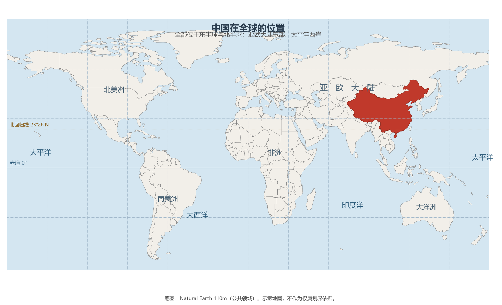
图 1-1 中国在全球的位置：亚欧大陆东部、太平洋西岸，全部位于东半球与北半球。
四至点框定了国土的经纬度范围。东、北两端都在黑龙江省，南端在海南省管辖的南沙群岛，西端在新疆维吾尔自治区——一省独占其二的东北角，正是当年闯关东与近代边疆开发的历史注脚。
| 端点 | 位置 | 坐标 | 所属行政区 | 地理志 |
|---|---|---|---|---|
| 最北端 | 漠河以北黑龙江主航道中心线 | 53°33′N，122°21′E | 黑龙江省漠河市 | 北极村为"找北"胜地；1969 年曾录得 −52.3 ℃ 的全国极端最低气温纪录；夏至白昼近 17 小时，可赏"白夜" |
| 最南端 | 南沙群岛曾母暗沙 | 3°58′N，112°17′E | 海南省三沙市管辖 | 隐没水下的珊瑚暗沙，距赤道不足 450 km，终年盛夏 |
| 最东端 | 黑龙江与乌苏里江主航道汇合处 | 135°05′E，48°27′N | 黑龙江省抚远市 | 乌苏镇是中国每天最早迎来日出的地方 |
| 最西端 | 帕米尔高原 | 73°33′E，39°10′N | 新疆维吾尔自治区乌恰县以西 | 古称"葱岭"，丝绸之路出关之后的第一道天堑 |
由此得到国土的量度：东西跨经度约 61°32′，直线距离约 5 200 km；南北跨纬度约 49°35′，直线距离约 5 500 km。 当帕米尔迎来日出时，抚远已近正午——这就是"跨五个时区"的直观含义。
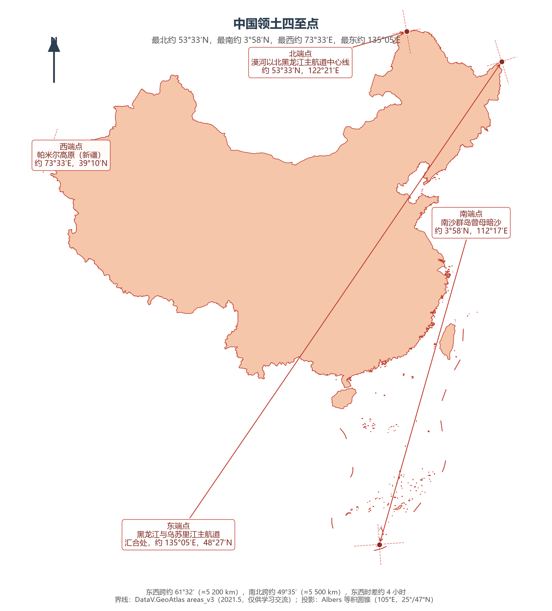
图 1-2 中国领土四至点：四个端点的位置与坐标，以及国土的东西、南北跨度。
中国领土横跨东五区至东九区共五个时区，但全国统一采用北京时间——东八区（东经 120°E）的区时。北京时间由中国科学院国家授时中心产生并发播，该中心位于陕西省西安市临潼区，因此严格地说，"北京时间"既不是北京的地方时（北京位于 116°24′E，其地方时比北京时间晚约 14 分钟），也不产生于北京。
统一时制是大国治理的必需：铁路调度、金融清算、广播电视、国防作战，都必须对表同一时刻。代价则是作息的自然错位——乌鲁木齐（约 87°E）的正午比北京时间推迟约两小时，当地民间长期通行"新疆时间"（UTC+6），机关企业的作息也普遍比东部沿海晚两个小时。这种"钟表上的统一"与"生活中的时差"，是广土众民国家特有的日常景观。
把中国放回世界坐标系中，她的位置有三点值得专门指出：
中国陆地领土面积约 960 万 km²，占世界陆地总面积的约 6.4%，居世界第三位——约为俄罗斯的 56%、加拿大的 96%，相当于印度（328.7 万 km²）的近三倍、法国本土（55 万 km²）的十七倍，与整个欧洲（约 1 018 万 km²）大体相当而略小。
| 排名 | 国家 | 国土面积（万 km²） | 与中国之比 |
|---|---|---|---|
| 1 | 俄罗斯 | 1 709.8 | 1.78 倍 |
| 2 | 加拿大 | 998.5 | 1.04 倍 |
| 3 | 中国 | 约 960 | — |
| 4 | 美国 | 983.4（含水域口径） | 1.02 倍 |
| 5 | 巴西 | 851.6 | 0.89 倍 |
| 6 | 澳大利亚 | 774.1 | 0.81 倍 |
按国际通行的国家领土概念，一国之领土由领陆、领水（内水与领海）、领空与底土构成。约 960 万 km² 指领陆及其内水；在此之外，中国还主张约 300 万 km² 的管辖海域（见 1.3 节）——陆海合计，中国的国土空间接近 1 260 万 km²。
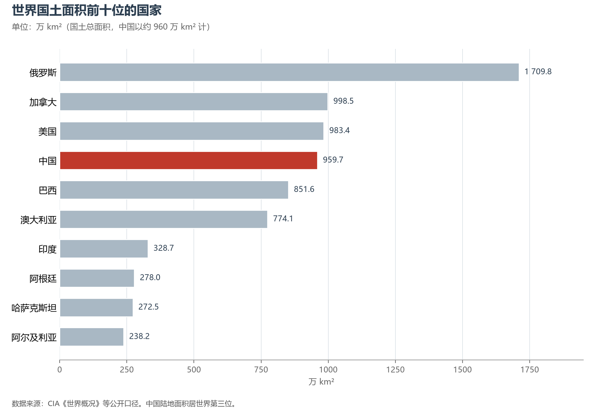
图 1-3 世界国土面积前十位的国家：中国约 960 万 km²，居世界第三。
中国陆地国界线总长 2.28 万 km，与14 个国家接壤，与俄罗斯并列世界上陆上邻国最多的国家。自东北逆时针方向数来：朝鲜、俄罗斯、蒙古、哈萨克斯坦、吉尔吉斯斯坦、塔吉克斯坦、阿富汗、巴基斯坦、印度、尼泊尔、不丹、缅甸、老挝、越南——从东北亚的白山黑水，经中亚的戈壁雪山，到南亚的喜马拉雅，再到中南半岛的热带丛林，十四国串起了地球上半数以上的文明类型。
| 邻国 | 首都 | 面积（万 km²） | 人口（约） | 边界长度（km） | 主要接壤省区 | 边界状态 |
|---|---|---|---|---|---|---|
| 朝鲜 | 平壤 | 12.3 | 2 600 万 | 1 420 | 辽宁、吉林 | 已划定（1962） |
| 俄罗斯 | 莫斯科 | 1 709.8 | 1.44 亿 | 4 300 | 黑龙江、吉林、内蒙古、新疆 | 已划定（1991/2004 补充协定） |
| 蒙古 | 乌兰巴托 | 156.7 | 350 万 | 4 700 | 内蒙古、甘肃、新疆 | 已划定（1962）；中国最长陆地边界 |
| 哈萨克斯坦 | 阿斯塔纳 | 272.5 | 2 000 万 | 1 780 | 新疆 | 已划定（1994/1997/1998） |
| 吉尔吉斯斯坦 | 比什凯克 | 20.0 | 700 万 | 1 100 | 新疆 | 已划定（1996/1999） |
| 塔吉克斯坦 | 杜尚别 | 14.3 | 1 000 万 | 约 450 | 新疆 | 已划定（1999/2002） |
| 阿富汗 | 喀布尔 | 65.2 | 4 000 万 | 92 | 新疆（瓦罕走廊） | 已划定（1963）；中国最短陆地边界 |
| 巴基斯坦 | 伊斯兰堡 | 88.2 | 2.4 亿 | 约 600 | 新疆 | 已划定（1963） |
| 印度 | 新德里 | 328.7 | 14.3 亿 | 约 2 000 | 新疆、西藏 | 未划定 |
| 尼泊尔 | 加德满都 | 14.7 | 3 000 万 | 1 415 | 西藏 | 已划定（1961） |
| 不丹 | 廷布 | 3.8 | 78 万 | 约 470 | 西藏 | 未正式划定（谈判推进中） |
| 缅甸 | 内比都 | 67.7 | 5 400 万 | 2 185 | 西藏、云南 | 已划定（1960，新中国第一个边界条约） |
| 老挝 | 万象 | 23.7 | 750 万 | 505 | 云南 | 已划定（1991） |
| 越南 | 河内 | 33.0 | 1.0 亿 | 约 1 450 | 云南、广西 | 已划定（1999 签约，2008 全线立碑） |
两条边界最值得驻足端详。中蒙边界长约 4 700 km，是中国最长的陆地边界，从东北的阿尔山一路画到新疆阿尔泰山的分水岭，把草原帝国与现代中国隔开一线。中阿边界仅 92 km，是阿富汗瓦罕走廊东端与新疆接壤的一段——却是帕米尔高原海拔 4 000 m 以上的人迹罕至之地，也是古丝绸之路从中国出境、进入中亚的最后通道。
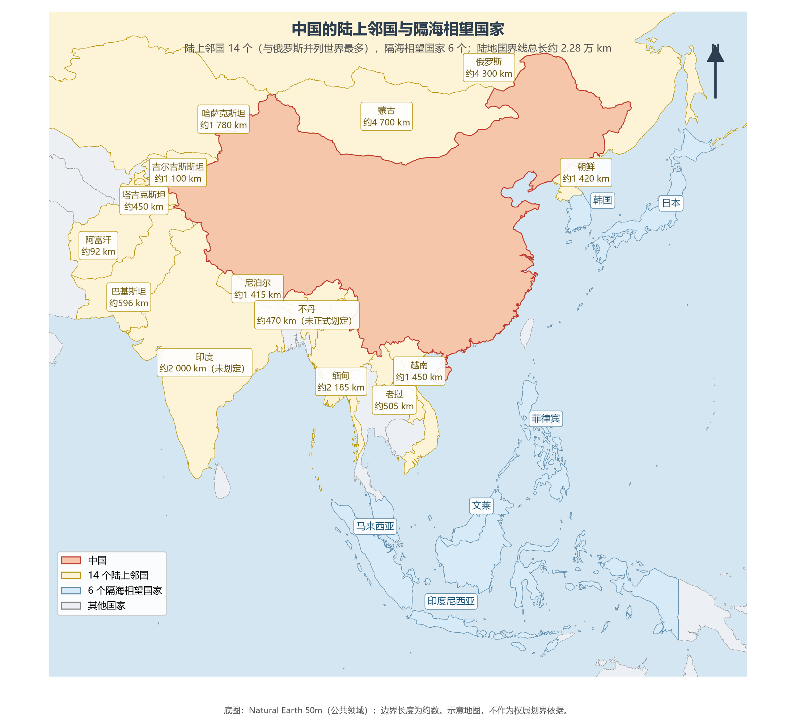
图 1-4 中国的陆上邻国与隔海相望国家：14 个陆上邻国（黄）与 6 个隔海相望国家（蓝）。
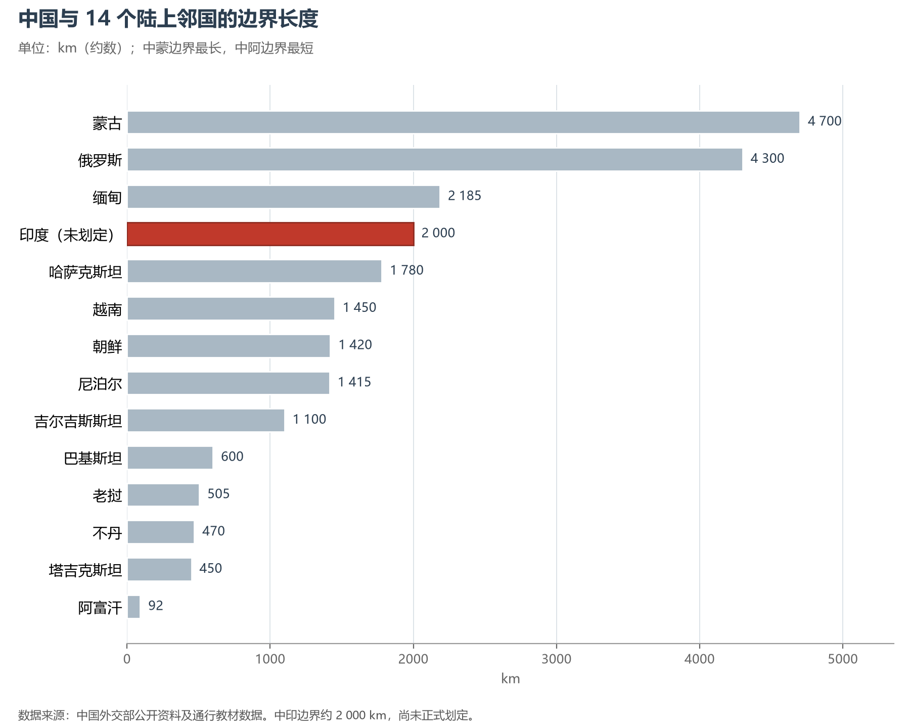
图 1-5 中国与 14 个陆上邻国的边界长度：中蒙最长，中阿最短；中印边界为唯一未划定的一条。
与中国隔海相望的国家有六个，自北而南为韩国、日本、菲律宾、马来西亚、文莱、印度尼西亚。它们与中国之间没有一条陆地边界，却共享着黄海、东海、南海的渔场与航道——海上邻国关系的亲疏远近，集中体现在东海钓鱼岛与南海诸岛两大议题上（见 1.3 节与第 8 章）。
| 国家 | 首都 | 面积（万 km²） | 人口（约） | 相望海域 |
|---|---|---|---|---|
| 韩国 | 首尔 | 10.0 | 5 100 万 | 黄海、东海 |
| 日本 | 东京 | 37.8 | 1.24 亿 | 东海 |
| 菲律宾 | 马尼拉 | 30.0 | 1.1 亿 | 南海 |
| 马来西亚 | 吉隆坡 | 33.0 | 3 400 万 | 南海 |
| 文莱 | 斯里巴加湾市 | 0.58 | 45 万 | 南海 |
| 印度尼西亚 | 雅加达 | 191.4 | 2.75 亿 | 南海 |
近代中国积贫积弱，边界从无主动划定之权。新中国以"和平共处五项原则"为基础，用半个多世纪完成了世界最复杂边界体系的谈判与勘定：
至今，14 条陆地边界中 12 条已划定并勘定，仅中印边界（约 2 000 km）尚未正式划定，中不边界尚未签订条约。就总长而论，中国的陆地边界居世界首位——比第二名俄罗斯长约 2 600 km，是美国（1.20 万 km）的近两倍。一条条边界条约，是理解中国周边外交最直接的文献。
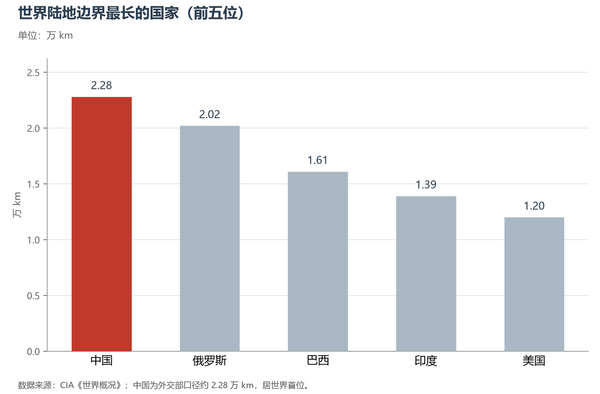
图 1-6 世界陆地边界最长的国家（前五位）：中国以约 2.28 万 km 居首。
把 14 个陆上邻国与 6 个海上邻国的人口加在一起，超过 27 亿人——世界人口的三分之一环绕着中国边境线而居。这片周边既有人口第一大国印度、面积第一大国俄罗斯，也有全球增长最快的东南亚；中国西南经云南直通中南半岛，西北经中亚通达欧洲，东面则是全球航运最繁忙的西太平洋航线。"陆上丝绸之路经济带"与"21 世纪海上丝绸之路"在此交汇，正是这一地缘格局的直接产物：中国是世界上少数同时具备陆权与海权双重纵深的国家。
中国大陆以东、以南的海面自北而南依次为渤海、黄海、东海、南海，弧形环抱着大陆海岸，总面积约 470 万 km²。这四片海有清晰的"身份序列"：渤海是被大陆环抱的内海，黄海是半封闭的浅海，东海是大陆架宽展的边缘海，南海则是伸入热带的深海。
| 海域 | 面积（万 km²） | 平均深度 | 最大深度 | 地理志 |
|---|---|---|---|---|
| 渤海 | 7.7 | 18 m | 约 70 m | 中国内海；黄河、海河、辽河在此入海，渤海湾畔是中国北方最大的港口群 |
| 黄海 | 38 | 44 m | 约 140 m | 半封闭浅海；古黄河泥沙染黄海水而得名；苏北沿海辐射沙脊群为全球罕见地貌 |
| 东海 | 77 | 370 m | 约 2 700 m | 大陆架占海区面积约三分之二；长江年输沙与营养盐造就舟山渔场——中国最大的渔场 |
| 南海 | 约 350 | 1 212 m | 约 5 559 m | 面积最大、最深；热带海洋，散布东沙、西沙、中沙、南沙四大群岛，是通往印度洋的咽喉 |
三大海区界线自北而南为：渤海—黄海以老铁山角—蓬莱角连线为界；黄海—东海以长江口北角—济州岛西南端连线为界；东海—南海以广东南澳岛—台湾岛南端鹅銮鼻连线为界。
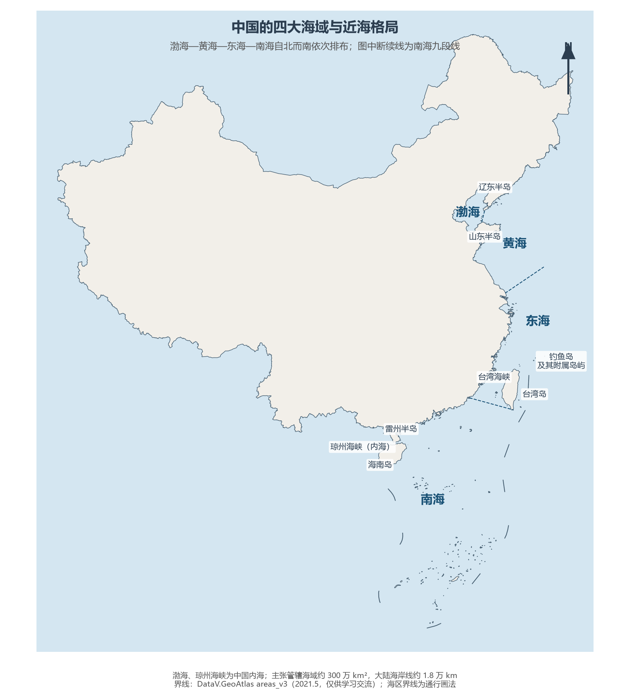
图 1-7 中国的四大海域与近海格局：图中断续线为南海九段线，三大海区界线自北而南依次标注。
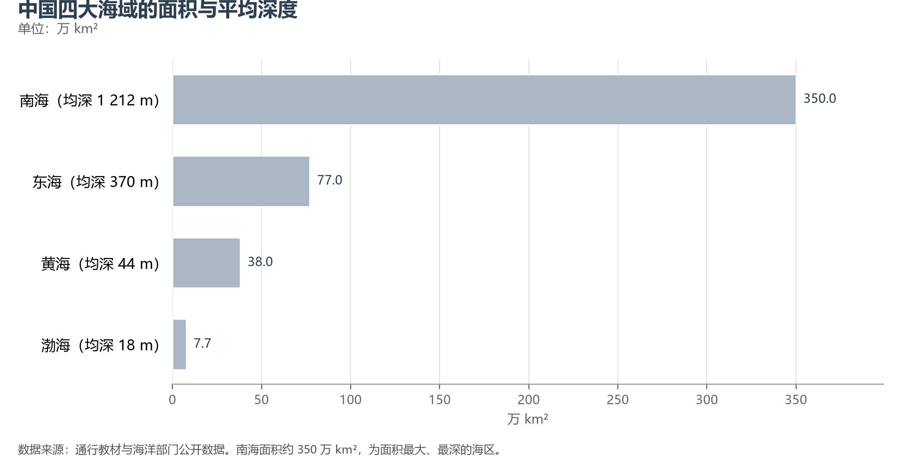
图 1-8 中国四大海域的面积与平均深度：南海一区即占四大海域总面积的四分之三。
渤海与琼州海峡是中国的两大内海。内海等同于陆地领土，外国船舶非经许可不得进入——渤海因此被称为"中国的地中海"：辽东半岛与山东半岛南北相夹，仅留宽约 105 km 的渤海海峡与外海相通，庙岛群岛南北纵列其间，把海峡切成若干水道。琼州海峡则夹在雷州半岛与海南岛之间，最窄处仅 19.4 km，是三大海峡中最短的一条。
台湾海峡（属东海）平均宽约 180 km，连通东海与南海，是全球货运最繁忙的水道之一。三大半岛——辽东半岛、山东半岛、雷州半岛——自北而南拱卫着渤海与北部湾，构成了中国北方海岸线的骨架。
《联合国海洋法公约》（中国于 1996 年批准）与国内立法（《领海及毗连区法》1992、《专属经济区和大陆架法》1998）为海洋权益划定了由岸及海的五个层次：
| 层次 | 宽度 | 法律地位 |
|---|---|---|
| 内水 | 领海基线向陆一侧 | 完全主权，等同领土 |
| 领海 | 自基线起 12 海里 | 主权及于水域、上空与海床，他国船舶享无害通过权 |
| 毗连区 | 领海外 12—24 海里 | 就海关、财政、移民、卫生行使管制权 |
| 专属经济区 | 自基线起 200 海里 | 勘探开发自然资源的主权权利 |
| 大陆架 | 至大陆边缘，最短 200 海里 | 海床与底土自然资源的主权权利 |
中国采用直线基线法：1958 年《关于领海的声明》首次宣布 12 海里领海，1996 年公布大陆部分领海基线。以此量算，中国主张的管辖海域约 300 万 km²。1 海里合 1.852 km，12 海里即约 22.2 km——从海岸线向外望，领海大约只到地平线；真正的海洋国土，在 200 海里专属经济区之内。
中国海域分布着面积 500 m² 以上的海岛 7 300 多个，若计入更小的岛礁则达 1.1 万余个（《2015 年海岛统计调查公报》），海岛总面积约占陆地面积的 0.8%。三大岛依次为台湾岛（约 3.6 万 km²）、海南岛（约 3.4 万 km²）、崇明岛（约 1 200 km²，中国最大的冲积岛，仍以每年数十米的速度向东海生长）；最大群岛是舟山群岛（1 390 个岛屿，中国最大渔场与最大渔港所在地）。钓鱼岛及其附属岛屿位于台湾岛东北约 190 km 处，由中国海警常态化巡航执法。
南海是四大海域中面积最大、地位最重要的海区。中国是最早发现、命名并持续经营南海诸岛的国家：1947 年中国政府审定出版《南海诸岛位置图》，以十一段断续线标示中国在南海的权益范围；1953 年北部湾内两段取消，形成沿用至今的九段线（台湾岛东侧另有一段，全图共十段）。断续线之内，散布着东沙、西沙、中沙、南沙四大群岛：西沙永兴岛是地级三沙市（2012 年设立）的驻地，南沙的曾母暗沙则是全部领土的最南端。
南海部分岛礁存在主权与海域划界争议。中国的立场一以贯之：主权属我、搁置争议、共同开发；争议由直接当事国谈判协商解决（2002 年《南海各方行为宣言》确立的框架），南海的和平由中国与东盟国家共同维护。
把海洋空间放到世界坐标系里衡量，会得到几个出乎直觉的结论：
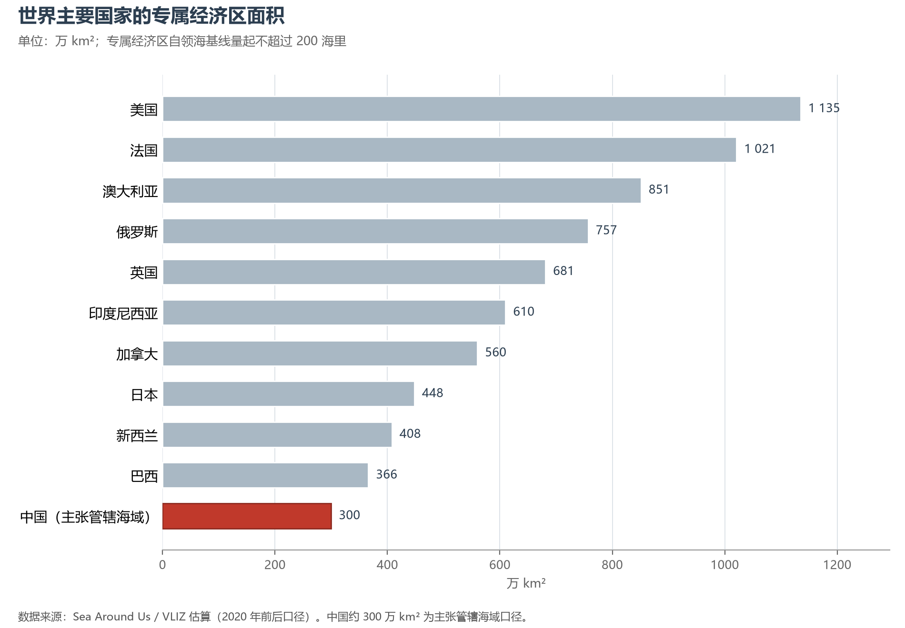
图 1-9 世界主要国家的专属经济区面积：美国的专属经济区超过其陆地面积，中国 300 万 km² 为主张管辖海域口径。
海洋权益从来不在图纸上，而在巡航的航迹里、在渔船与货轮的航线上——这正是理解中国海洋战略的起点。
行政区划是国家治理的空间骨架。截至 2024 年底，中国以 34 个省级单位统摄 333 个地级单位、2 846 个县级单位，再由 38 712 个乡级单位落到每一片村社与街巷——三级骨架、四级运转、五级触达，构成当今世界规模最大的行政分区体系。理解这套体系，是读懂此后所有分省、分县统计数据的前提。
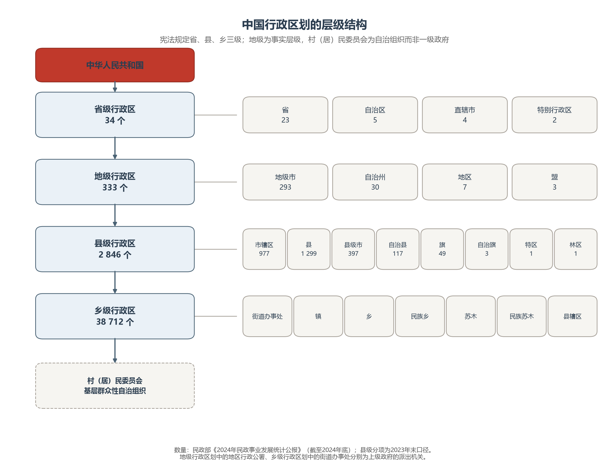
图 2-1 中国行政区划的层级结构：宪法确认省、县、乡三级；地级为事实层级，村（居）民委员会为自治组织。
《宪法》第三十条划定基本框架：全国分为省、自治区、直辖市；省、自治区分为自治州、县、自治县、市；县、自治县分为乡、民族乡、镇；直辖市和较大的市分为区、县。第三十一条则为特别行政区预留了空间。就宪法文本而言，中国是省、县、乡三级。
现实运转却是四级：省之下普遍存在地级。它的前身是省的派出机构"地区行政公署"；1983 年起推行市管县体制，地级市由城市型政区升级为辖县政区，逐渐取代地区成为地级层的主体。今天 333 个地级单位中，293 个是地级市，纯粹派出形态的"地区"只剩 7 个。三级与四级之间的这段"虚实"，是理解中国政区体系的第一把钥匙。
派出机关的痕迹还残留在两端：地级的"地区行署"仅存 7 个；县级政府向人口稠密的城区派出的街道办事处，则是今天乡级层中约 9 000 个"街道"的由来——它们不是一级政府，却行使着一级政区的全部日常管理职能。
34 个省级行政区按宪法形态分为四类：
| 类型 | 数量 | 成员与要点 |
|---|---|---|
| 省 | 23 | 沿用元明清行省制度；台湾省为其中之一 |
| 直辖市 | 4 | 北京、上海（均设于 1949 年）、天津（1958 年曾并入河北，1967 年复设）、重庆（1997 年自四川分出，最年轻） |
| 自治区 | 5 | 内蒙古（1947，最早）、新疆（1955）、广西与宁夏（1958）、西藏（1965） |
| 特别行政区 | 2 | 香港（1997）、澳门（1999），依基本法实行"一国两制"、高度自治 |
省级建置的设立、撤销、更名，由全国人民代表大会批准；省级界线的变更由国务院审批。自治区的法理基础是民族区域自治制度——它并不止于自治区一级，而是向下延伸为 30 个自治州、117 个自治县与内蒙古、黑龙江的 3 个自治旗，共同构成全国 155 个民族自治地方的三级体系（内蒙古 49 个普通的旗不在此列，它们与县同级）。
333 个地级单位中，293 个地级市占近九成。其余三类各有来历：
城市型政区内部还有一套"级别"体系：15 个副省级市（哈尔滨、长春、沈阳、济南、南京、杭州、广州、武汉、成都、西安十个省会城市，加大连、青岛、宁波、厦门、深圳五个计划单列市）在经济管理权限上接近省级，其中五个计划单列市的财政更直接对中央负责——"市"的名义之下，藏着行政级别的精细刻度。
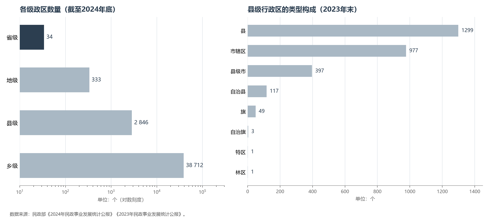
图 2-2 各级政区数量与县级构成：左为四级总量（对数刻度），右为县级单位的类型构成。
县级是中国历史上最稳定的政区单位——"郡县治，天下安"，县制自秦推行至今两千余年未断。县级单位里，1 299 个县与 977 个市辖区为主体（2023 年末口径），397 个县级市绝大多数由地级市代管（法律上属省，实际上委托地级市管理），另有河南济源，湖北仙桃、潜江、天门和海南、新疆的十余个县级市由省级政府直辖；另含 117 个自治县、49 个旗、3 个自治旗，以及最后的特例：贵州六枝特区与湖北神农架林区。
乡级是基层政权所在，共 38 712 个。其中镇约 2.1 万个，已明显多于乡——"撤乡设镇""撤镇设街"的更名方向，正是四十余年城镇化的直接刻度；9 000 余个街道办事处管着城市的每一个街区；民族乡（约 950 个）与内蒙古的苏木、民族苏木则是民族自治在乡级的对应形态。乡级之下还有约 60 万个村（居）民委员会——村委会约 48 万个、居委会约 12 万个——依《宪法》第一百一十一条，它们是基层群众性自治组织而非一级政权，却是国家治理链条上最末梢、也最贴近日常生活的环节。
每一级政区都编入国家标准化体系。国家标准GB/T 2260《中华人民共和国行政区划代码》以六位数字编码：前两位是省（11 北京、44 广东、65 新疆……），中间两位是地级，末两位是县级；统计部门再扩展三位乡级码，构成九位区划码——身份证号、快递单、统计年鉴里的每一个地址，背后都是这套代码。
区划变更的审批权高度集中：省级建置变动由全国人大批准，县级政区的设立、撤销、更名由国务院审批，乡级由省级政府审批，制度依据是《行政区划管理条例》（2018 年公布，2019 年 1 月 1 日施行，取代 1985 年的旧行政法规）。此外，政区之间的界线由民政部组织定期联检——仅 2024 年就完成 14 条省界的联合检查，界桩的每一厘米都记录在案。
以政区数量论，中国是当今世界分区最细的大国之一：2 846 个县级单位与美国 3 000 余个县（county）大体同一量级，38 712 个乡级单位则与法国 3.5 万个市镇（commune）、印度 25 万个村潘查亚特属同一量级谱系。但层级结构各不相同：日本是"都道府县—市町村"两级制，法国为"大区—省—市镇"三级制，美国联邦制下州县自成体系；中国的四级实际层级（省—地—县—乡），在全球主要国家中属于层级较多的一种——这是治理一个 14 亿人、960 万 km² 单一制国家的空间代价与效率平衡。
34 个省级行政区是打开中国地理的 34 个抽屉。它们的面积从 166 万 km² 到 33 km²，相差约 5 万倍；人口从 1.27 亿到 68 万，相差近 200 倍。把这张总表读完，中国地理的骨架就在掌握之中。
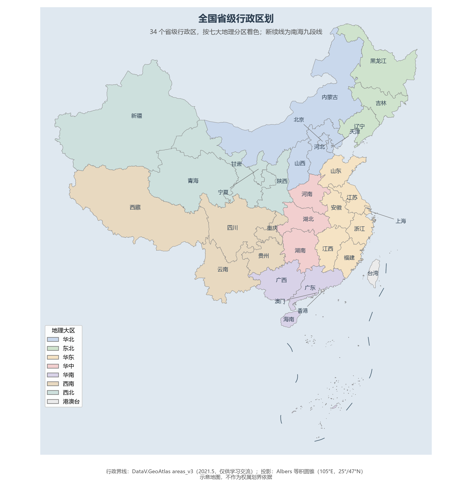
图 2-3 全国省级行政区划：34 个省级行政区按七大地理分区着色，断续线为南海九段线。
面积前五名——新疆（166.49 万 km²）、西藏（122.84 万 km²）、内蒙古（118.30 万 km²）、青海（72.23 万 km²）、四川（48.60 万 km²）——全部位于西部与北部边疆，五个省区合计约 528 万 km²，占了全国陆地面积的 55%。新疆若视作一个国家，其面积可排进世界前二十，比伊朗（164.8 万 km²）还大；一个若羌县（约 20 万 km²）抵得上两个浙江省。
另一端则是五座城市型政区：澳门（33 km²）、香港（1 114 km²）、上海（6 340 km²）、天津（11 966 km²）、北京（16 410 km²）。最大与最小之间相差约 5 万倍——这是单一制国家政区形态谱系的空间写照：行省管广土，直辖市政都市，特别行政区治弹丸而通全球。
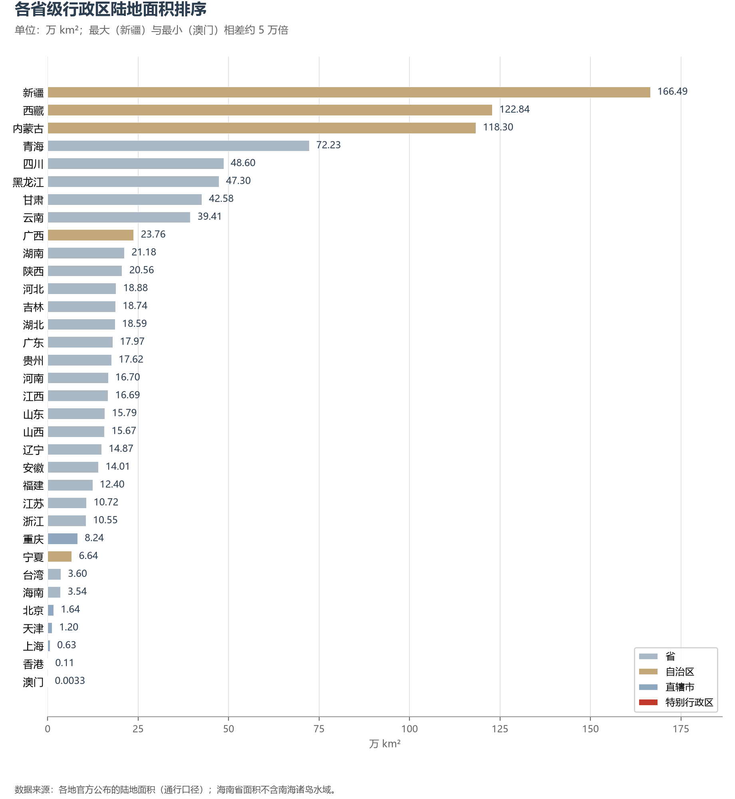
图 2-4 各省级行政区陆地面积排序：自治区（棕）包揽前三，直辖市（蓝）与特别行政区（红）垫底。
常住人口超亿的省级行政区只有两个：广东（12 706 万）与山东（10 123 万）（2023 年末；2024 年末广东增至约 12 780 万、山东降至约 10 080 万）。广东一省人口已超过日本（约 1.24 亿），若视作国家可列世界第 12 位左右；前五大省（粤、鲁、豫、苏、川）合计约 4.95 亿人，占全国的 35%。
人口最少的省级行政区是西藏（365 万），不及广东的 3%；澳门（68.3 万）也只有西藏的约五分之一。排序表呈现出清晰的"秦岭—淮河 + 胡焕庸线"结构：人口大省几乎全部位于东部季风区，百万人口以上的省级行政区中，位于胡焕庸线西北侧的有内蒙古、甘肃、宁夏、青海、新疆、西藏六个——它们合计占全国陆地面积的 55%，人口却只占全国的 6.5%，这为第 9.2 节的人口分布分析埋下伏笔。
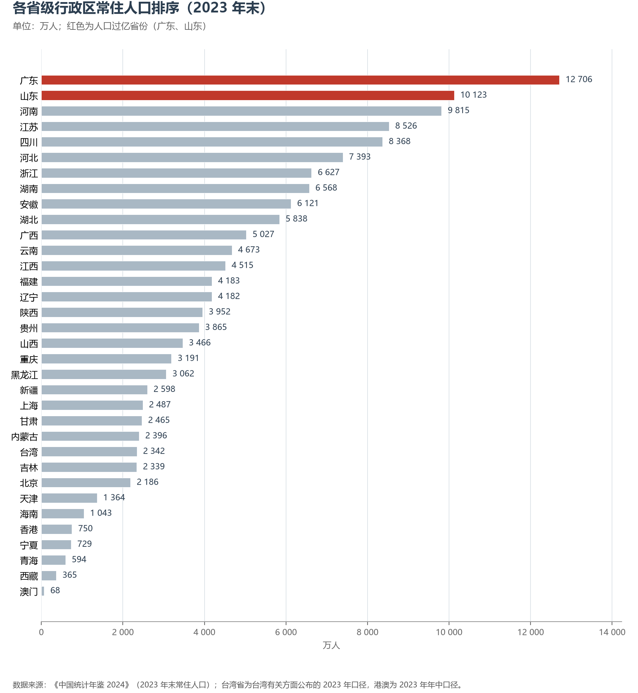
图 2-5 各省级行政区常住人口排序（2023 年末）：红色为人口过亿的广东、山东。
人口除以陆地面积，得到完全不同的排序：澳门（约 20 700 人/km²）、香港（约 6 700）、上海（3 923）、北京（1 332）、天津（1 140）五座城市型政区包揽前五；在真正的"省"里，江苏以 795 人/km² 居首，广东（707 人/km²）次之——人口第一大省并不是密度最高的省。另一端，西藏（3 人/km²）、青海（8）、新疆（16）、内蒙古（20）四区合计占全国陆地面积的一半，人口却不足全国的 5%，密度最高的内蒙古也不及全国平均值的七分之一。密度地图上那条自东北向西南的色带边界，正是胡焕庸线的轮廓。
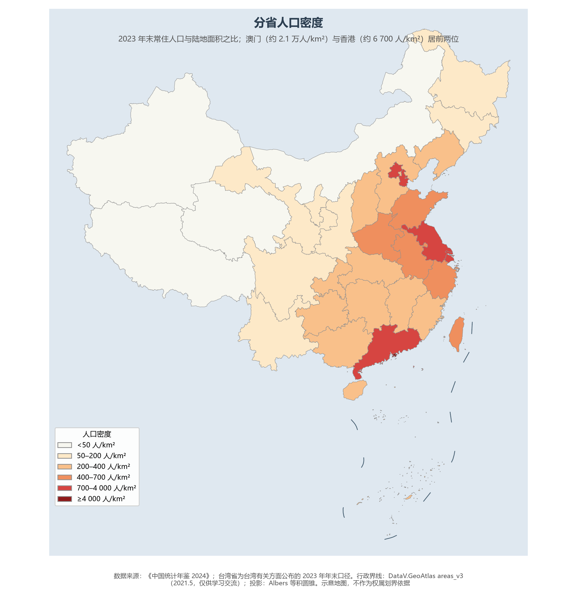
图 2-6 分省人口密度：2023 年末常住人口与陆地面积之比，东南稠密、西北稀疏的格局一目了然。
34 个省名与简称，本身就是一部中国地理与历史教科书：
一个有趣的注脚：吉林省是中国唯一省市同名的省份——省名来自省会吉林市，而吉林市名又来自满语"吉林乌拉"（沿江的城池），与松花江共生了三百年。
| 大区 | 名称 | 简称 | 行政中心 | 面积（km²） | 常住人口（万人） | 密度（人/km²） |
|---|---|---|---|---|---|---|
| 华北 | 北京市 | 京 | 北京 | 16 410 | 2 186 | 1 332 |
| 华北 | 天津市 | 津 | 天津 | 11 966 | 1 364 | 1 140 |
| 华北 | 河北省 | 冀 | 石家庄 | 188 800 | 7 393 | 392 |
| 华北 | 山西省 | 晋 | 太原 | 156 700 | 3 466 | 221 |
| 华北 | 内蒙古自治区 | 蒙 | 呼和浩特 | 1 183 000 | 2 396 | 20 |
| 东北 | 辽宁省 | 辽 | 沈阳 | 148 700 | 4 182 | 281 |
| 东北 | 吉林省 | 吉 | 长春 | 187 400 | 2 339 | 125 |
| 东北 | 黑龙江省 | 黑 | 哈尔滨 | 473 000 | 3 062 | 65 |
| 华东 | 上海市 | 沪 | 上海 | 6 340 | 2 487 | 3 923 |
| 华东 | 江苏省 | 苏 | 南京 | 107 200 | 8 526 | 795 |
| 华东 | 浙江省 | 浙 | 杭州 | 105 500 | 6 627 | 628 |
| 华东 | 安徽省 | 皖 | 合肥 | 140 100 | 6 121 | 437 |
| 华东 | 福建省 | 闽 | 福州 | 124 000 | 4 183 | 337 |
| 华东 | 江西省 | 赣 | 南昌 | 166 900 | 4 515 | 271 |
| 华东 | 山东省 | 鲁 | 济南 | 157 900 | 10 123 | 641 |
| 华中 | 河南省 | 豫 | 郑州 | 167 000 | 9 815 | 588 |
| 华中 | 湖北省 | 鄂 | 武汉 | 185 900 | 5 838 | 314 |
| 华中 | 湖南省 | 湘 | 长沙 | 211 800 | 6 568 | 310 |
| 华南 | 广东省 | 粤 | 广州 | 179 700 | 12 706 | 707 |
| 华南 | 广西壮族自治区 | 桂 | 南宁 | 237 600 | 5 027 | 212 |
| 华南 | 海南省 | 琼 | 海口 | 35 400 | 1 043 | 295 |
| 西南 | 重庆市 | 渝 | 重庆 | 82 400 | 3 191 | 387 |
| 西南 | 四川省 | 川/蜀 | 成都 | 486 000 | 8 368 | 172 |
| 西南 | 贵州省 | 黔/贵 | 贵阳 | 176 200 | 3 865 | 219 |
| 西南 | 云南省 | 云/滇 | 昆明 | 394 100 | 4 673 | 119 |
| 西南 | 西藏自治区 | 藏 | 拉萨 | 1 228 400 | 365 | 3 |
| 西北 | 陕西省 | 陕/秦 | 西安 | 205 600 | 3 952 | 192 |
| 西北 | 甘肃省 | 甘/陇 | 兰州 | 425 800 | 2 465 | 58 |
| 西北 | 青海省 | 青 | 西宁 | 722 300 | 594 | 8 |
| 西北 | 宁夏回族自治区 | 宁 | 银川 | 66 400 | 729 | 110 |
| 西北 | 新疆维吾尔自治区 | 新 | 乌鲁木齐 | 1 664 900 | 2 598 | 16 |
| 港澳台 | 香港特别行政区 | 港 | — | 1 114 | 750 | 6 733 |
| 港澳台 | 澳门特别行政区 | 澳 | — | 33 | 68.3 | 20 697 |
| 港澳台 | 台湾省 | 台 | — | 36 000 | 2 342 | 651 |
表注：人口为 2023 年末常住人口（《中国统计年鉴 2024》），香港、澳门为 2023 年年中人口，台湾省为台湾有关方面公布的 2023 年年末人口；密度＝人口 ÷ 陆地面积，由本手册计算；海南省面积不含南海诸岛水域。
76 年间，中国的省级行政区从 50 个精简到 34 个，"地区"从 170 个消亡到 7 个，地级市则从 54 个膨胀到 293 个。行政区划的每一次变动，都是国家治理逻辑的一次显影：1950 年代做减法，是为了集中统一；1980 年代以来做加法，是为了城市化与开放。
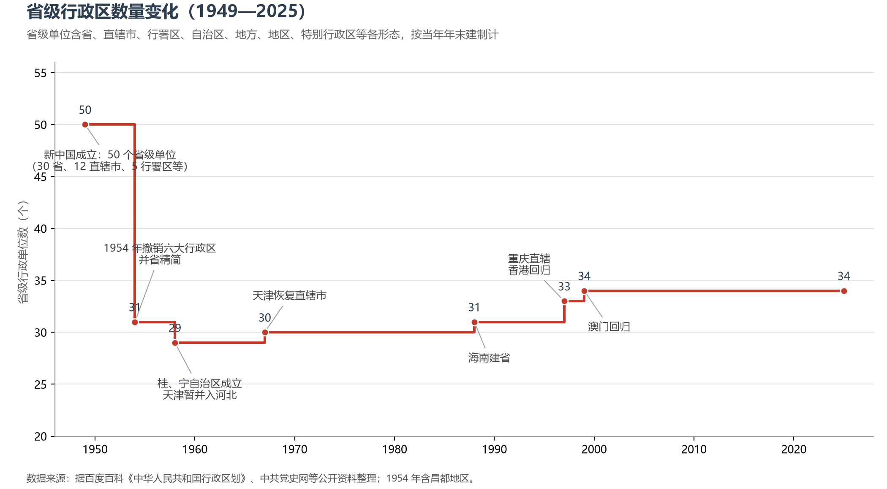
图 2-7 省级行政区数量变化（1949—2025）：从"大区时代"的 50 个到今天的 34 个。
新中国成立之初，在省级之上设六大行政区（东北、华北、西北、华东、中南、西南军政委员会），是战争年代各大战略区行政建制的延续。省级单位多达 50 个：30 个省、12 个中央直辖市（北京、天津、上海、南京、武汉、广州、重庆、西安、沈阳、哈尔滨、长春、旅大等）、5 个行署区（此后陆续设置，最多时全国共 8 个：苏南、苏北、皖南、皖北、川东、川西、川南、川北）、1 个自治区（内蒙古）、1 个地方（西藏）与 1 个地区（昌都）。省的碎片化是历史的印记——东北有黑龙江、松江、吉林、辽东、辽西五省，华北有热河、察哈尔、绥远，华北平原上还有短暂的平原省，西南有西康省。
1954 年 6 月 20 日，《中央人民政府关于撤销大区一级行政机构和合并若干省市建制的决定》公布，是中国行政区划史上动作最大的一次调整：六大行政区撤销；松江省并入黑龙江，辽东、辽西合并为辽宁，宁夏暂并入甘肃，绥远并入内蒙古；南京、武汉、广州、重庆、西安、沈阳等 11 个直辖市改为省辖市，仅保留北京、上海、天津三市。加上此前的 1952—1953 年（撤八个行署区、平原省、察哈尔省）和此后的 1955 年（热河、西康撤销，新疆维吾尔自治区成立）、1958 年（广西、宁夏自治区成立，天津一度并入河北）、1965 年（西藏自治区成立）、1967 年（天津恢复直辖市），到 1967 年，全国形成22 省、5 自治区、3 直辖市的格局——这一"30 个省级单位"的结构保持了整整 21 年。
| 已撤销的省级行政区 | 存续（1949 后） | 去向 |
|---|---|---|
| 松江省 | 1949—1954 | 并入黑龙江省 |
| 辽东省、辽西省 | 1949—1954 | 合并为辽宁省 |
| 绥远省 | 1949—1954 | 并入内蒙古自治区 |
| 宁夏省 | 1949—1954 | 并入甘肃省（1958 年以自治区复设） |
| 平原省 | 1949—1952 | 分入河南、山东 |
| 察哈尔省 | 1949—1952 | 分入山西、河北、内蒙古 |
| 热河省 | 1949—1955 | 分入河北、辽宁、内蒙古 |
| 西康省 | 1949—1955 | 分入四川、西藏 |
| 苏南、苏北行署区 | 1949—1952 | 合并为江苏省 |
| 皖南、皖北行署区 | 1949—1952 | 合并为安徽省 |
| 川东、川西、川南、川北行署区 | 1949—1952 | 合并为四川省 |
表注：各省存续时间均指新中国成立后的延续期，清代与民国时期的建置沿革不计。
1967 年之后的 21 年里，省级建置只发生过一次变动。改革开放重启了区划调整：
至此 34 个省级行政区的格局尘埃落定，至今未再变动。
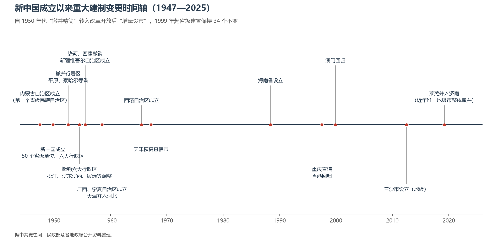
图 2-9 重大建制变更时间轴（1947—2025）：1947 年内蒙古自治区成立是中国共产党领导下第一个省级民族自治区。
省级以下的变动远比省级剧烈，主线只有一个字：市。
1949 年，全国有地级市 54 个、地区 170 个——"地区"（专区）作为省的派出机构，长期是地级层的主体。1983 年起国务院推行"市管县"体制（当年地区行署尚有 138 个），"撤地设市""地市合并"全面铺开：2024 年仅存 7 个地区（新疆 5、西藏 1、黑龙江 1）与 3 个盟；地级市则增至 293 个，占全部 333 个地级单位的 88%。县级层面同样如此：1980—1990 年代的"撤县设市"热潮在 1997 年被国务院叫停；2017 年恢复批复后，又有数十个县改设县级市。大城市的"撤县设区"则把郊县并入城区版图。近年唯一一次地级市整体撤并发生在 2019 年——莱芜市并入济南。
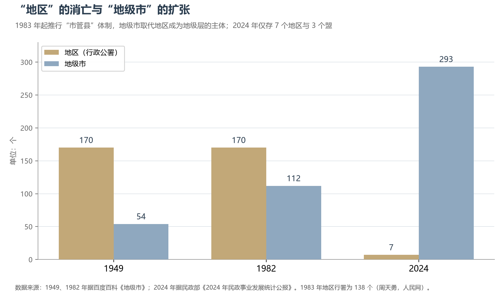
图 2-8 "地区"的消亡与"地级市"的扩张：市管县体制彻底重塑了中国的地级层。
把镜头拉远，大国都在调整行政区划，方式却各异：日本 1999—2014 年的"平成大合并"把 3 200 余个市町村整合到约 1 700 个，法国 2016 年把本土 22 个大区合并为 13 个，二者都以精简合并为主线；中国 1950 年代同样做减法，但改革开放以来的主旋律是城市化转型——不是减少政区，而是把"地区"改造成"市"、把"县"改造成"区"，让行政建制跟随人口与产业的流动而重新排列。区划变动的方向，就是国家结构变迁的方向。
在 34 个省级行政区中，香港、澳门、台湾三地地位特殊：它们是"一国两制"构想的实践地与国家统一议程的核心，也是全国人口密度最高、经济形态最外向的三块土地。三地合计陆地面积约 3.7 万 km²，只占全国的 0.4%，却贡献了截然不同的制度样本与经济功能。
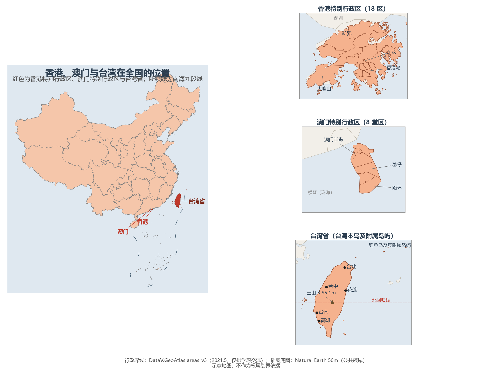
图 2-10 港澳台在全国的位置：右上三幅放大插图分别为香港 18 区、澳门 8 堂区与台湾省，主图中三地以红色高亮。
特别行政区的宪法依据是《宪法》第三十一条——"国家在必要时得设立特别行政区"，以及第六十二条赋予全国人民代表大会"决定特别行政区的设立及其制度"的职权。两部基本法先后落地：《香港特别行政区基本法》于 1990 年 4 月 4 日由七届全国人大三次会议通过，1997 年 7 月 1 日香港回归之日起实施；《澳门特别行政区基本法》于 1993 年 3 月 31 日由八届全国人大一次会议通过，1999 年 12 月 20 日澳门回归之日起实施。两个特别行政区直辖于中央人民政府，享有高度自治权——行政管理权、立法权和独立的司法权（香港终审权终审于本地终审法院），不实行社会主义制度和政策，保持原有的资本主义制度和生活方式五十年不变。
两区的治理细节各有底色。香港沿用普通法体系，以行政长官为核心的行政主导体制运行，2020 年《中华人民共和国香港特别行政区维护国家安全法》公布并列入基本法附件三，2024 年特区完成《维护国家安全条例》本地立法。澳门属大陆法传统，2009 年即完成基本法第二十三条本地立法。全国性法律除少数列入附件三者外，不在特别行政区实施。
香港位于珠江口之东、深圳河之南，由香港岛、九龙半岛、新界及 262 座离岛组成，陆地面积 1 114 km²（2023 年末）。地形是典型的"山城相依"——山地与陡坡占去大半土地，建成区仅约四分之一，最高峰大帽山海拔 957 m；维多利亚港港阔水深、潮差平稳，与旧金山、里约热内卢并称世界三大天然良港。气候属亚热带季风气候，年均气温约 23 ℃，年降水量约 2 400 mm，夏秋之交常受台风威胁。
全港人口 750.3 万（2023 年年中），密度约 6 700 人/km²。土地的稀缺逼出了两项城市工程学：填海与垂直生长——约 6% 的土地由开山填海而来，却承载了全港约四分之一的人口；建成区则以全球最密集的高层住宅群向上要空间。全区划为 18 个区，区议会为非政权性的区域咨询组织。
香港的分量在服务业：全球前列的国际金融中心、最大的离岸人民币业务枢纽、重要的国际贸易与航运中心，实行自由港政策和联系汇率制度（港元与美元按 7.75—7.85 的区间挂钩）。国际上常与香港并置对照的，是同样"以一城为一经济体"运转的新加坡：香港人口约为其 1.27 倍、陆地面积约为其 1.5 倍，两座城市型经济体构成了世界金融版图上最直接的一对镜像。
澳门位于珠江口之西，与珠海陆路相连，由澳门半岛、氹仔岛、路环岛及路氹填海区组成，陆地面积 33.3 km²（2023 年）——其中约六成由填海而来：1912 年有记录的面积仅 11.6 km²，百余年填海造地扩大了近两倍。人口 68.3 万（2023 年年末），人口密度约 2.05 万人/km²，与摩纳哥同为世界上人口密度最高的经济体之一。全区设 8 个堂区（葡萄牙殖民时代的 freguesia 遗存，仅作统计分区，非政权机构）。
澳门的三重身份写在一块 33 km² 的土地上：世界旅游休闲中心——博彩旅游业自 2006 年起规模超过拉斯维加斯，为全球最大博彩市场，2024 年入境旅客近 3 500 万人次，相当于每位居民接待 500 余名游客；历史文化名城——"澳门历史城区"2005 年列入《世界遗产名录》，是中西建筑与市井生活四百余年的层叠现场；中葡商贸合作服务平台——依托与葡语国家的语言与法律纽带，2021 年设立的横琴粤澳深度合作区更把发展腹地从 33 km² 扩展到 106 km²，为这座"微型城市"提供了物理上不可能自足的空间纵深。
台湾省由台湾本岛及澎湖列岛、钓鱼岛及其附属岛屿、兰屿、绿岛等附属岛屿组成，全省面积约 3.6 万 km²，其中台湾本岛约 3.58 万 km²，比海南岛大出约 2 000 km²，是中国第一大岛，行政上钓鱼岛及其附属岛屿隶属台湾省宜兰县。地质上，台湾岛是菲律宾海板块与欧亚板块碰撞的产物：中央山脉纵贯南北，山地与丘陵约占全岛面积的三分之二，最高峰玉山海拔 3 952 m，是中国东部最高峰；平原集中在西部，以嘉南平原为最大。北回归线横穿嘉义、花莲一线，全岛兼具热带与亚热带气候，年降水量丰沛，基隆附近的火烧寮多年平均降水逾 6 000 mm，是中国降水最多的地方之一。岛屿的地价是灾害：地处环太平洋地震带，1999 年"9·21"集集地震（里氏 7.3 级）即为世纪之交最沉重的一次；夏秋常遭台风正面登陆，年均约 3—4 个。
全省人口 2 342 万（2023 年年末），以闽南、客家移民为主体的汉族占绝对多数，另有阿美人、泰雅人、排湾人等 16 族少数民族约 58 万人，总称"原住民"。自 2020 年起当地出生人数少于死亡人数，人口进入持续负增长。城市体系呈"西密东疏"：台北—新北都会区是政治经济中枢，台中、台南、高雄依次铺陈于西部平原。经济以制造业见长，尤其半导体——台积电一家即占全球晶圆代工约六成市场，全岛电子产业链在全球半导体分工中占据关键位置；对外贸易依存度长期高于 100%，是典型的岛屿外向型经济。
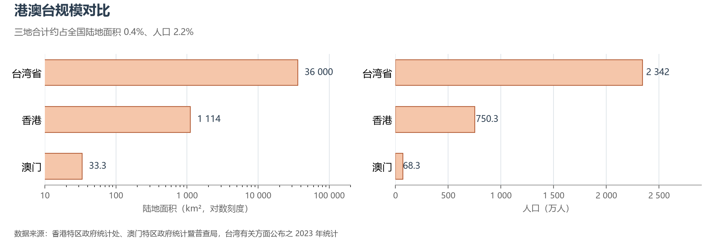
图 2-11 港澳台规模对比：陆地面积（对数轴）与人口，2023 年口径。
三地合计约 3.7 万 km²，略大于海南省的陆地面积；合计人口约 3 160 万，占全国的 2.2%。但密度的反差才是重点：澳门 2.05 万人/km²、香港约 6 700 人/km² 的城市型密度，与全国平均（147 人/km²）相差一到两个数量级——这正是"一国两制"在空间上的含义：在主权与领土完整之下，三种社会制度、三种经济形态在同一国家的版图内各展其长。香港是内地与国际市场之间最大的资本与人民币通道，澳门连接着葡语国家市场，台湾则在全球半导体供应链中占据关键节点；三地与祖国大陆的经济联系，构成了理解中国国家版图的第三重维度——不止是土地与人口，更是制度与功能。
摊开一张中国地势图，最抢眼的不是任何一座山峰，而是一个巨大的斜面：西部是连绵 250 万 km² 的高海拔隆起，东部是坦荡的平原与浅海大陆架，两者之间以两级"台阶"相接。这就是中国地形的第一定律——地势西高东低，呈三级阶梯状分布。它决定了大江东流的基本走向，规定了海洋水汽深入内陆的通道，也奠定了此后所有章节（气候、河流、人口、经济）的空间逻辑。
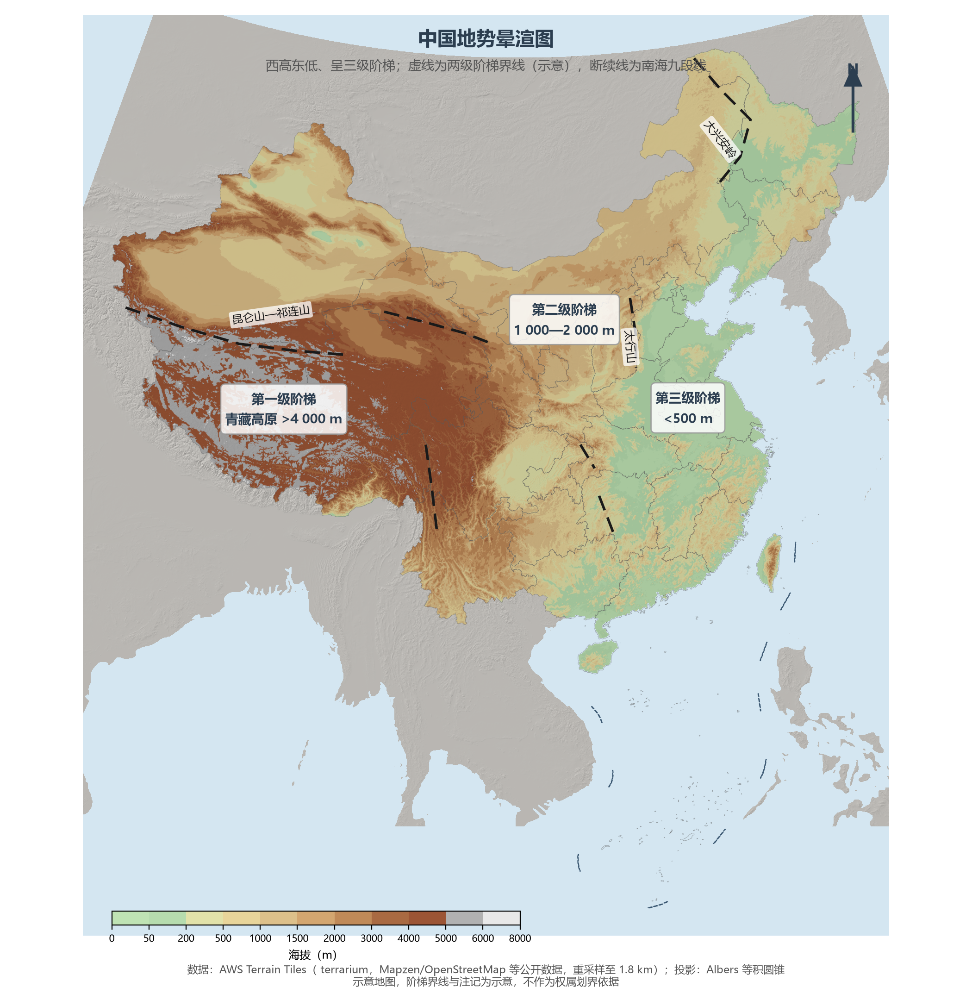
图 3-1 中国地势晕渲图：DEM 山体阴影叠加高程分级设色，三级阶梯与两级界线（示意）一目了然。
| 阶梯 | 平均海拔 | 主要地形区 | 两级界线 |
|---|---|---|---|
| 第一级 | 4 000 m 以上 | 青藏高原、柴达木盆地 | 昆仑山—祁连山—横断山 |
| 第二级 | 1 000—2 000 m | 内蒙古高原、黄土高原、云贵高原，塔里木、准噶尔、四川盆地 | 大兴安岭—太行山—巫山—雪峰山 |
| 第三级 | 500 m 以下 | 东北、华北、长江中下游三大平原，东南丘陵 | 海岸线外为大陆架 |
| 大陆架 | 水深 200 m 以内 | 渤海、黄海海底的大部分与东海、南海的近岸地带 | — |
第一级阶梯是青藏高原——平均海拔超过 4 000 m，是地球上最高、最年轻的大陆隆起；第二级阶梯由三块高原和三个大盆地拼成，是中国面积最大的一个台阶；第三级阶梯自北而南铺开三大平原，丘陵点缀其间，再向东则沉入浅海大陆架。
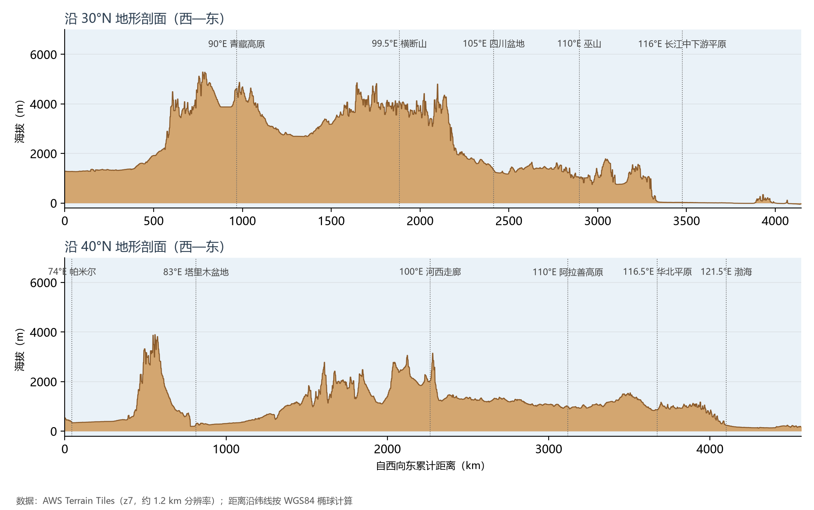
图 3-2 沿 30°N 与 40°N 的地形剖面：两条剖面直观呈现"一个斜面、两级台阶"——自帕米尔、青藏高原到东部平原，约 4 000 km 的水平行程内海拔下降了约 4 500 m。
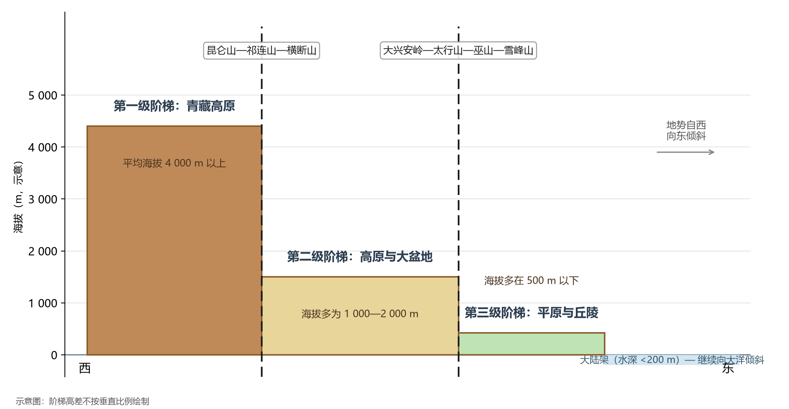
图 3-3 三级阶梯示意：自青藏高原经两级台阶到大陆架的地势结构（块状示意图）。
把镜头拉远，一个国家的地势倾斜方向往往决定它的人居与农业格局。中国的斜面朝东——迎着太平洋季风，湿润气流爬坡成雨，东部平原因此成为人口与稻米的摇篮；印度半岛的斜面也朝向海洋（两侧海岸山与德干高原），美国则自西向东从落基山脉阶梯式降向中部大平原与东部沿海。世界主要农耕大国几乎都在"背山面海"的斜面上建立文明——中国的独特之处在于斜面的高度：第一级阶梯抬升到了 4 000 m 以上，这在各大洲都没有第二例。
中国的第二级与第一级阶梯上，分布着四块性格迥异的高原：一块是"世界屋脊"，一块是平缓坦荡的千里草原，一块是被流水切割得支离破碎的黄土世界，一块是石峰林立的溶岩大地。四块高原合计约 430 万 km²，接近全国陆地面积的一半。
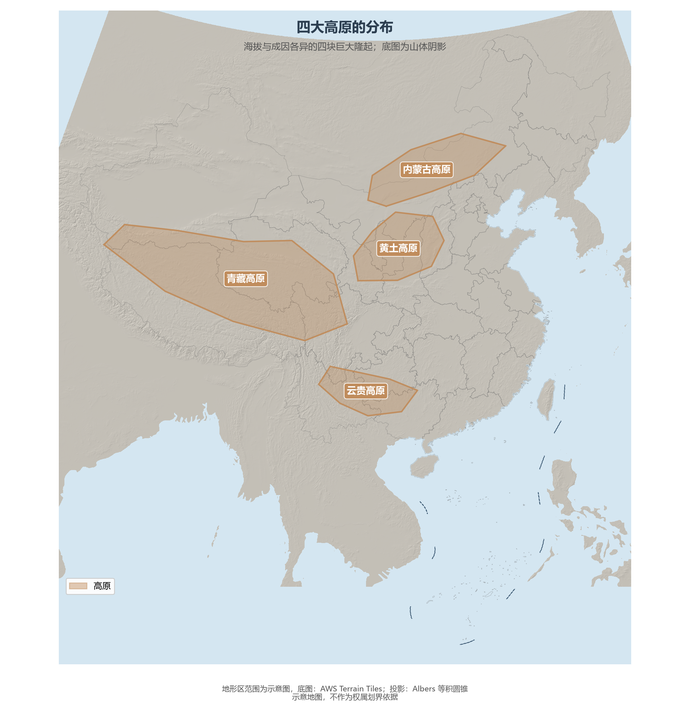
图 3-4 四大高原的分布：底图为山体阴影，色块为示意范围。
| 高原 | 面积（约） | 平均海拔 | 地貌关键词 |
|---|---|---|---|
| 青藏高原 | 250 万 km² | 4 000 m 以上 | 雪山连绵、冰川广布、湖泊星罗 |
| 内蒙古高原 | 70 万 km² | 1 000—1 400 m | 地面坦荡、起伏和缓、草原与戈壁 |
| 黄土高原 | 64 万 km² | 1 000—2 000 m | 千沟万壑、塬梁峁、水土流失 |
| 云贵高原 | 50 万 km² | 1 000—2 000 m | 喀斯特广布、地面崎岖、山间坝子 |
青藏高原西起帕米尔、东至横断山，南抵喜马拉雅、北到昆仑—祁连，平均海拔 4 000 m 以上，是世界海拔最高的高原，也是中国面积最大的高原，占全国陆地面积约四分之一。它是印度板块与欧亚板块碰撞的产物——6000 万年以来的持续挤压把它抬升成地球的"第三极"：喜马拉雅等高大山脉横亘边缘，高原面上雪山冰川连绵，是长江、黄河、澜沧江、怒江、雅鲁藏布江与印度河的共同源头；高原内部湖泊上千，多为内流的咸水湖。高原的存在本身就是气候事件——它阻挡西风、泵吸季风，把 30°N 附近本该荒漠化的中国东部变成了鱼米之乡（见 4.1 节）。
内蒙古高原东起大兴安岭西麓、西至马鬃山，东西绵延约 2 000 km，海拔多在 1 000—1 400 m 之间，是中国第二大高原。它的底色是"平"——古老的地台长期稳定抬升，地面切割微弱，呈现一望无际的波状高原景观；呼伦贝尔、锡林郭勒草原分布其上，阴山以北则渐入戈壁。平坦开阔带来了牧业与风能的双重禀赋，也带来了中国北方沙尘暴的策源地之一（见 4.4 节）。
黄土高原东起太行山、西至乌鞘岭、南抵秦岭、北越长城与鄂尔多斯高原相接，总面积约 64 万 km²，地跨青、甘、宁、内蒙古、陕、晋、豫七省区，是世界最大的黄土堆积区。黄土来自西北内陆的干旱区——第四纪以来西风与冬季风把粉尘持续搬运至此堆积，厚度一般 50—100 m，陇中局部逾 200 m。疏松多孔的粉砂土在夏季暴雨下极易侵蚀：千沟万壑、支离破碎的地表被流水雕成塬（顶面平坦的残留高地）、梁（长条状垄岗）、峁（孤立浑圆的丘顶）三种形态。黄土高原曾经森林草原广布，如今是黄河泥沙的主要来源（年输沙量历史均值约 16 亿 t，见 5.3 节），也是近几十年全球增绿最显著的区域之一——林草植被覆盖率由 20 世纪末的约 31% 升至 2020 年后的约 67%（国家林业和草原局、黄河水利委员会对黄土高原整体的监测口径）。
云贵高原位于中国西南部，覆盖云南东部与贵州大部，平均海拔 1 000—2 000 m，地势西高东低。这里石灰岩深厚广布，亚热带湿热气候加速溶蚀，喀斯特地貌发育得淋漓尽致——峰林、峰丛、溶洞、天坑与地下暗河铺满大地，"地无三里平"是地表的真实写照。溶蚀留下的平缓洼地被称为坝子，是高原上人口与农田最集中的地方。中国南方喀斯特（云南石林、贵州荔波、重庆武隆等）与贵州重大工程（"中国天眼"FAST 选址于喀斯特洼地）都发生在这片溶岩大地上。
四大高原合计约 430 万 km²，占全国陆地面积的 45%——这个比例在人口大国中绝无仅有。对比世界主要高原：南美洲的巴西高原面积约 500 万 km²，是世界面积最大的高原，平均海拔却不足 1 000 m；印度半岛的德干高原约 160 万 km²，美国的科罗拉多高原与哥伦比亚高原合计不足 80 万 km²。世界屋脊之"高"与黄土高原之"厚"，都是全球仅此一例的地理事实。高原不产粮，却决定水与风：青藏高原是十余条国际河流的水塔，内蒙古高原是东亚沙尘与风能的源区。读懂中国的高原，就读懂了中国水资源与生态安全格局的上游逻辑。
如果把高原看作地形的"高原台地"，盆地与平原就是大地上的"容器"与"铺面"：四大盆地嵌在第二级阶梯内部，三大平原铺在第三级阶梯之上。七片地形区合计约 260 万 km²，是中国人口、耕地与城市最密集的承载面。
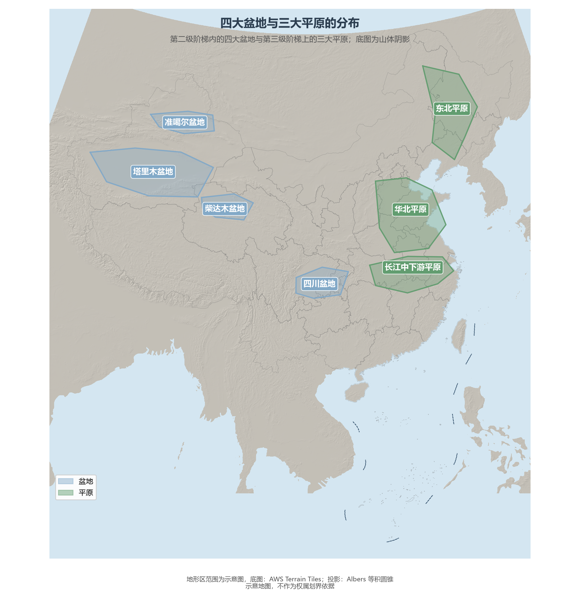
图 3-5 四大盆地与三大平原的分布：底图为山体阴影，色块为示意范围。
| 盆地 | 面积（约） | 海拔 | 一句话画像 |
|---|---|---|---|
| 塔里木盆地 | 50 余万 km² | 800—1 300 m | 中国最大盆地，中央是中国最大沙漠 |
| 准噶尔盆地 | 38 万 km² | 500—1 000 m | 纬度最高，西北侧有缺口、降水稍多 |
| 柴达木盆地 | 25 万 km² | 2 600—3 000 m | 海拔最高的盆地，"聚宝盆" |
| 四川盆地 | 26 万 km² | 300—700 m | "紫色盆地"，天府之国 |
塔里木盆地位于天山与昆仑山之间，是世界面积最大的内陆盆地。中央的塔克拉玛干沙漠面积约 33 万 km²，是世界第二大流动沙漠；盆地年降水量不足 100 mm，但天山、昆仑山的冰雪融水在山麓滋养出一串绿洲，串起古丝绸之路的南道与北道。准噶尔盆地夹在天山与阿尔泰山之间，因为西北侧的山地缺口接纳了西风带的水汽，降水明显多于塔里木，古尔班通古特沙漠是中国最大的固定、半固定沙漠。柴达木盆地是青藏高原东北部的"盆中之盆"——海拔 2 600 m 以上的高寒荒漠盆地里藏着察尔汗等上百个盐湖，钾盐、铅锌、石油与盐湖锂资源使其得名"聚宝盆"。四川盆地四周环山、底部以紫色砂页岩为主，风化成肥沃的紫色土；亚热带湿润气候与都江堰水利使它自秦汉以来就是"天府之国"，如今承载着约 1 亿人口，是四大盆地中唯一以人烟稠密著称的一个。
四大盆地之外还有一个以"低"闻名的成员：吐鲁番盆地。这个天山东端的小型山间盆地，大部分地面低于海平面，其中的艾丁湖洼地低于海平面 154.31 m，是中国陆地最低点——与珠穆朗玛峰之间 9 000 余米的相对高差，正是三级阶梯之外中国地势的另一个极端注脚。
| 平原 | 面积（约） | 海拔 | 构成 |
|---|---|---|---|
| 东北平原 | 35 万 km² | 多在 200 m 以下 | 三江平原、松嫩平原、辽河平原 |
| 华北平原 | 30 万 km² | 多在 50 m 以下 | 黄河、淮河、海河冲积而成，又称黄淮海平原 |
| 长江中下游平原 | 20 万 km² | 多在 50 m 以下 | 江汉、洞庭湖、鄱阳湖、苏皖沿江、长江三角洲平原 |
三大平原都是河流冲积的杰作，也都写满了"人地关系"。东北平原是中国面积最大的平原，黑土层厚达数十厘米，是全球四大黑土区之一，如今贡献着全国约四分之一的粮食产量（见 11.2 节）；冬季漫长的严寒使作物一年一熟。华北平原由黄河与海河、淮河合力淤积，地面平阔、土层深厚，是小麦与玉米的主产区，却也是全国人均水资源最紧张的地区之一（见 6.4 节）。长江中下游平原地势最低平，河湖密布如网——洞庭湖、鄱阳湖、太湖散布其间，素有"水乡泽国""鱼米之乡"之称，稻田与淡水渔业的历史都在三千年以上。
把人口密度地图与地形图叠在一起，规律几乎无需解释：世界人口最稠密的十片区域，九片位于大河冲积平原或三角洲——恒河平原、尼罗河三角洲、湄公河三角洲，以及中国的华北与长江中下游。中国三大平原合计约 85 万 km²，只占全国陆地面积的 9%，却承载了全国约一半的人口。平原是文明的底盘，也是被占用最快的土地——三大平原同时是全国建设扩张最快的区域，这正是 6.3 节耕地保护制度要面对的矛盾。
如果说三级阶梯是地形的"骨架层次"，山脉就是骨架本身。中国的山脉按走向可分为四组：东西走向、东北—西南走向、西北—东南走向与南北走向，它们相互交织，把国土分割成高原、盆地与平原，也充当着一条条天然的地理分界线。
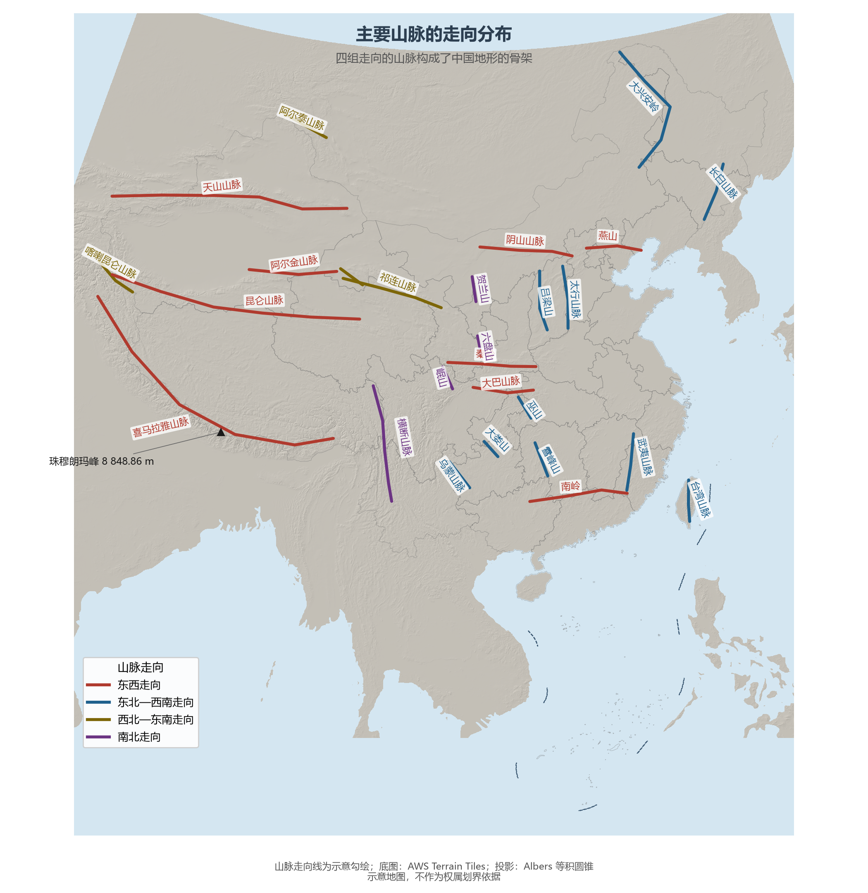
图 3-6 主要山脉的走向分布：四组走向以颜色区分，山脉线为示意勾绘。
喜马拉雅山脉中、尼边境上的珠穆朗玛峰是世界最高峰。2020 年 12 月，中尼两国联合公布其最新雪面高程为 8 848.86 m。它仍在以每年数毫米的速度继续抬升——板块碰撞尚未停止。8 000 m 级的高峰全部集中在中国西部边陲：喀喇昆仑山脉主峰乔戈里峰（8 611 m）是世界第二高峰；横断山脉最高峰贡嘎山（7 556 m）以东坡 6 000 余米的落差俯瞰成都平原，是世界相对高差最大的山峰之一；天山最高峰托木尔峰（7 443 m）守着中亚的雪线，祁连山最高峰团结峰（5 808 m）则是河西走廊众河之源。在东部，台湾岛的玉山（3 952 m）是中国东部最高峰，秦岭主峰太白山（3 771 m）扼守着南北方分界线的最高点。
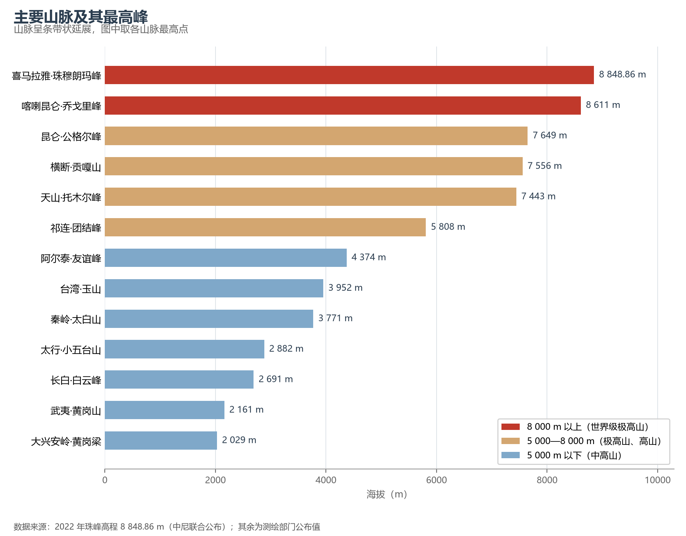
图 3-7 主要山脉及其最高峰海拔：8 000 m 级的山峰全部集中在喀喇昆仑与喜马拉雅两大山脉。
把主要山脉的走向线与后面各章的地图对照，会发现山脉就是中国地理的"目录"：大兴安岭划分季风区与非季风区、内流区与外流区；阴山划分内蒙古草原与黄土农耕区；秦岭划分南与北；南岭划分长江流域与珠江流域；太行山划分黄土高原与华北平原；巫山划分四川盆地与长江中下游平原；武夷山划分赣江流域与东南沿海。记住这张山脊网络，后面每一章的分区逻辑都会迎刃而解。
中国是世界上最典型的"大陆碰撞型"山地国家：全球 14 座 8 000 m 以上高峰中有 9 座位于中国边境线上或中国境内（喜马拉雅与喀喇昆仑），全国山地、丘陵与高原合计占陆地面积的三分之二，"山地大国"是比"人口大国"更少被提及的基本国情。相比之下，美国本土以平原山地相间为主，俄罗斯以低平的西伯利亚为主体。山多、山高、山新（喜马拉雅仍在生长），决定了中国耕地比例低（6.1 节）、水能丰富（5.2 节）、交通成本高（12.1 节）这三个贯穿全书的事实。
常规的地形分类之外，中国还有一组由特殊外力塑造、并以独特景观闻名的地貌家族：水的溶蚀造就喀斯特，风的搬运造就沙漠与雅丹，流水与暴雨雕刻黄土，高寒塑造冰川冻土，地球内部的力量则留下火山。它们多数分布在经济版图的边缘，却贡献了中国世界自然遗产的绝大部分。
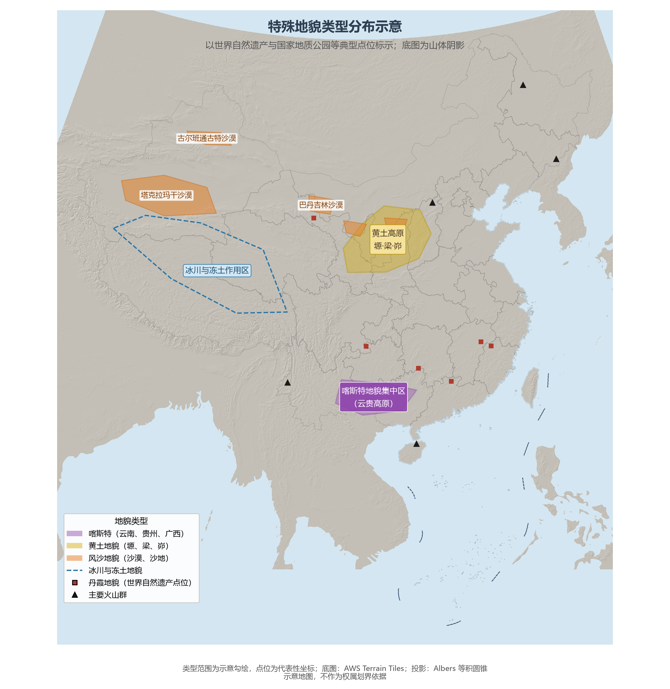
图 3-8 特殊地貌类型分布示意：类型范围为示意勾绘，点位选取世界自然遗产等代表性坐标。
碳酸盐岩在含 CO₂ 的水中被缓慢溶解，形成峰林、峰丛、洼地、溶洞与地下暗河——这就是喀斯特（岩溶）地貌。中国的碳酸盐岩出露面积约 130 万 km²（含埋藏区则超过 200 万 km²），以云贵高原与广西为核心，是全球喀斯特发育最典型、最连续的区域。2007 年与 2014 年，"中国南方喀斯特"分两期列入《世界遗产名录》（云南石林、贵州荔波、重庆武隆；广西桂林、贵州施秉、重庆金佛山、广西环江）。峰丛洼地发育到极处便是天坑——重庆奉节小寨天坑深 662 m，是世界上最大的天坑。喀斯特地区的特殊矛盾是"地表水贵如油、地下水滚滚流"——雨水沿溶隙漏入地下河，工程与农业都要绕开这片看不见的水系。
红色砂砾岩层在流水切割与重力崩塌下形成"顶平、身陡、麓缓"的方山与石峰，即丹霞地貌——其名称即来自 1928 年地质学家冯景兰在粤北丹霞山的研究命名。中国的红层盆地遍布南方，2010 年"中国丹霞"（广东丹霞山、江西龙虎山、湖南崀山、贵州赤水、福建泰宁、浙江江郎山）整体列入世界遗产。丹霞与喀斯特同属湿润区的造型地貌，一个以"红"著称，一个以"青"闻名，常在同一省份内遥相对望。
西北内陆年降水量不足 200 mm，风力成为主导外力。风积地貌表现为塔克拉玛干、古尔班通古特等大沙漠与新月形沙丘链；风蚀地貌则以罗布泊北缘的雅丹群为代表——垄槽相间的"魔鬼城"是古湖相地层被定向大风刻蚀的产物。风沙地貌同时是荒漠化的主战场（见 7.2 节），防沙治沙工程（如塔里木沙漠公路的草方格固沙）已成为世界规模的治沙实践。
黄土高原的塬、梁、峁（见 3.2 节）是风力堆积与流水侵蚀的接力作品。黄土垂直节理发育，窑洞、夯土长城与"沟壑纵横"的景观同出一源。它也是中国水土保持研究一百年的主试验场——从 1930 年代的考察到今天的淤地坝体系与退耕还林。
青藏高原及天山发育现代冰川 4.6 万余条，面积近 6 万 km²，是亚洲水塔的固体水库；高寒区之下是广达 200 余万 km² 的多年冻土，青藏铁路的建设难题大多源于此。火山地貌集中在东北（长白山天池火山、五大连池）、云南腾冲与海南琼北，多为休眠火山——五大连池的熔岩台地与堰塞湖形成于 1719—1721 年老黑山、火烧山两座火山的喷发，是中国年代最新的火山地貌之一；长白山天池火山在清代仍有喷发记录。五大连池、长白山等已是世界地质公园。截至 2026 年，中国拥有的联合国教科文组织世界地质公园达 51 处，居世界首位。
中国气候可以用两个词概括：季风显著，类型多样。前者来自海陆格局——世界最大的大洋与最大的大陆之间的热力差异，使中国成为全球季风最典型、影响范围最广的国家；后者来自地形——5 个温度带、4 类干湿区与 4 000 m 的海拔落差，把一个国家装进了从热带雨林到极地冰原的几乎全部气候箱。
冬季，亚洲高压盘踞蒙古—西伯利亚，寒冷干燥的偏北风从陆地吹向海洋——这就是冬季风，它使中国冬季比世界同纬度任何地方都冷：漠河 1 月均温约 −26 ℃，与北极圈内的部分地区相当。夏季，亚洲低压打开大门，来自太平洋与印度洋的暖湿气流长驱北上——夏季风带来 70% 以上的年降水量，使"雨热同期"成为东亚农业的天赐禀赋。
季风区与非季风区以大兴安岭—阴山—贺兰山—巴颜喀拉山—冈底斯山为界：界线以东以南，降水随夏季风进退；以西以北，山地阻挡了水汽，是干旱半干旱的世界（见 4.3 节）。青藏高原在这台机器里是第二台发动机——它在夏季像个巨大的热烟囱抽吸气流，强化了东亚季风，也把副热带高压带"顶碎"，使长江流域免于像撒哈拉那样沦为沙漠。
按温度、水分与地形的组合，中国可划分为五类基本气候类型：
| 气候类型 | 分布 | 特征 | 代表城市 |
|---|---|---|---|
| 热带季风 | 雷州半岛、海南、云南南部、台湾南部 | 全年皆夏，旱雨两季 | 海口 |
| 亚热带季风 | 秦岭—淮河以南 | 冬温夏热，雨热同期 | 武汉 |
| 温带季风 | 华北与东北 | 冬冷夏热，降水集中夏季 | 北京、哈尔滨 |
| 温带大陆性 | 西北内陆 | 干旱少雨，年较差、日较差大 | 乌鲁木齐、吐鲁番 |
| 高原山地 | 青藏高原 | 高寒，垂直分异显著 | 拉萨 |
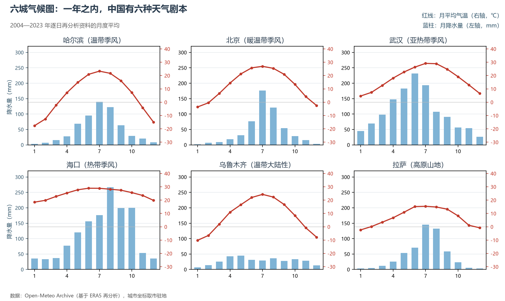
图 4-1 六城气候图（climograph）：六种气候类型的气温—降水年循环——从海口"全年皆雨"到乌鲁木齐"全年皆旱"，再到拉萨"夏季集中"。
教材的五类划分简洁明快，国际学界则通行柯本（Köppen）气候分类。两套口径互为映照：热带季风对应 Am/Aw，亚热带季风对应 Cfa/Cwa，温带季风对应 Dwa/Dwb，温带大陆性对应 BWk/BSk，高原山地对应 ET/EF 及各高山冷类。柯本口径的价值在于刻画过渡与细节——云南高原的大片 Cwb（夏凉冬干）、塔里木盆地边缘的 BSk 环带、横断山垂直带谱上的色彩马赛克，都是五类框架里看不到的纹理。
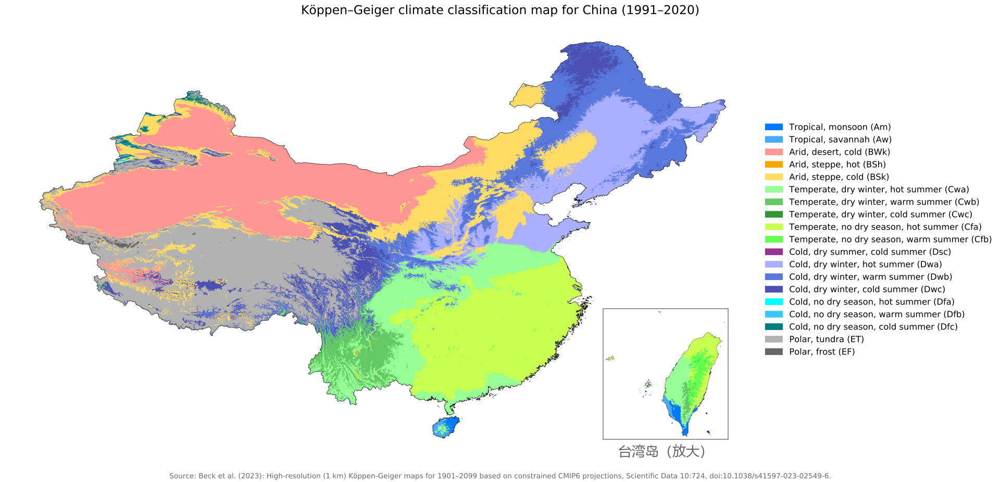
图 4-2 柯本—盖格气候分类图（1991—2020 年平均，1 km 分辨率）：数据取自 Beck 等（2023）发表于《Scientific Data》的公开数据集；右下插图放大台湾岛。原图为国际出版口径，未含南海诸岛插图与断续线，相关海域范围以本手册自绘地图为准。
把中国与世界同纬度地区对比，季风的价值一目了然：北纬 30° 线穿过撒哈拉、阿拉伯半岛时是连绵荒漠，穿过长江流域时是年降水 1 000 mm 以上的鱼米之乡；北纬 40° 的马德里夏干冬雨，同纬度的北京则是夏雨冬燥。全球季风区承载了世界约六成人口，而东亚季风区是其中面积最大、季风最稳定的一块——这是中国以世界 7% 的耕地养活近 18% 人口的气候底账。
中国气温分布的第一定律是：冬季南北温差大，夏季普遍高温。1 月，黑龙江北端与海南岛南端的均温相差约 50 ℃；7 月，这个差距缩小到 10 ℃ 以内（青藏高原除外）。这一"冬悬殊、夏均一"的节奏，是冬季风强劲、夏季太阳高度普升的直接结果。
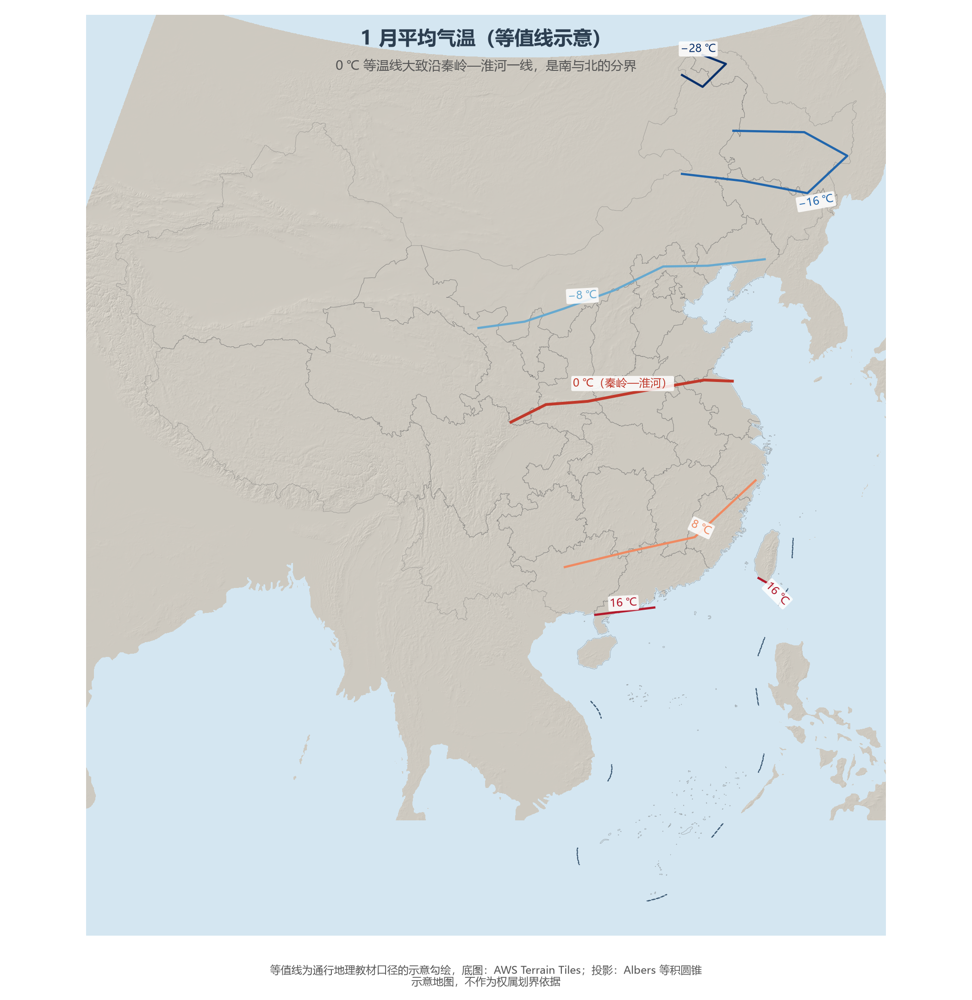
图 4-3 1 月平均气温等值线（示意）：等温线密集且大体东西走向——纬度与冬季风共同主导。
1 月 0 ℃ 等温线大致沿秦岭—淮河一线延伸，它与 800 mm 等降水量线、亚热带与暖温带分界线高度重合，构成中国最重要的地理分界线：线以北河流冬季结冰、作物一年两熟或两年三熟、民居需要取暖；线以南河水常年流淌、水稻可一年两熟至三熟。向西北，气温随纬度与冬季风势力递减：−8 ℃ 线大致沿长城一线，−16 ℃ 线横穿吉林北部，−28 ℃ 以下的"寒极"只出现在大兴安岭北端——1969 年漠河录得 −52.3 ℃ 的全国极端最低气温。
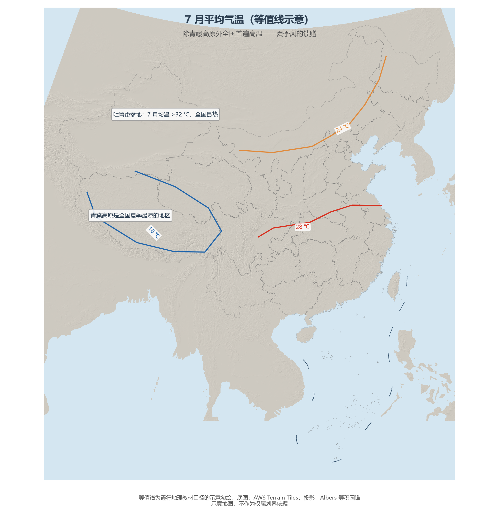
图 4-4 7 月平均气温等值线（示意）：等温线稀疏，全国（除高原）普遍高温。
7 月，除青藏高原外，全国大部分地区均温在 20—30 ℃ 之间：哈尔滨与海南的夏温只差数度，水稻因此可以一路种到黑龙江。两个极端同样著名：吐鲁番7 月均温超过 32 ℃，极端最高气温 49.6 ℃（2015 年），是名副其实的"火洲"；青藏高原则因海拔每升高 1 000 m 气温约降 6.5 ℃，7 月均温不足 16 ℃，是全国夏季最凉的地区。
以日平均气温 ≥10 ℃ 的积温为主要指标，中国自南而北划分为热带、亚热带、暖温带、中温带、寒温带五个温度带，另有面积巨大的青藏高寒区。温度带直接决定农业熟制：热带一年三熟，亚热带一年两熟至三熟，暖温带两年三熟至一年两熟，中温带一年一熟，寒温带只能勉强一年一熟。
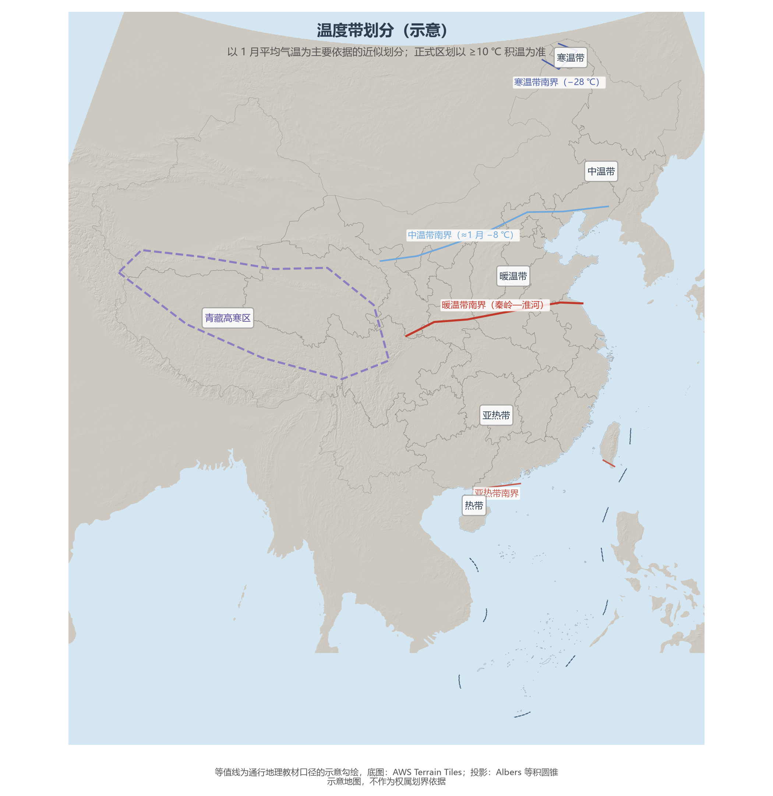
图 4-5 温度带划分（示意）：正式区划以 ≥10 ℃ 积温为准，本图为以 1 月均温为依据的近似表达。
中国的 1 月均温从 −30 ℃ 到 20 ℃ 以上，跨越了从北极苔原到热带的温度区间——这一跨度在全球大国中只有美国（含阿拉斯加）可与之相比，但中国 90% 以上的人口生活在温度带完整过渡的连续国土上，形成世界上最大规模的"同国不同天"。俄罗斯的寒冷是均匀的寒冷，澳大利亚的炎热是均匀的炎热，中国的气候则是一场纵贯 50 个纬度的渐变——这为多熟制农业、多品类物产与"南菜北运""北粮南运"的国内大循环提供了天然条件。
中国降水的第一定律是自东南沿海向西北内陆递减：台湾火烧寮的年均降水超过 6 000 mm，而塔里木盆地腹地不足 25 mm——相差两个数量级以上。第二定律是时间上高度集中：多数地方 5—9 月的降水占全年的 70% 以上，愈往北方集中程度愈高。两条定律共同写下中国农业"靠天吃饭"的剧本，也写下旱涝灾害交替的年历。
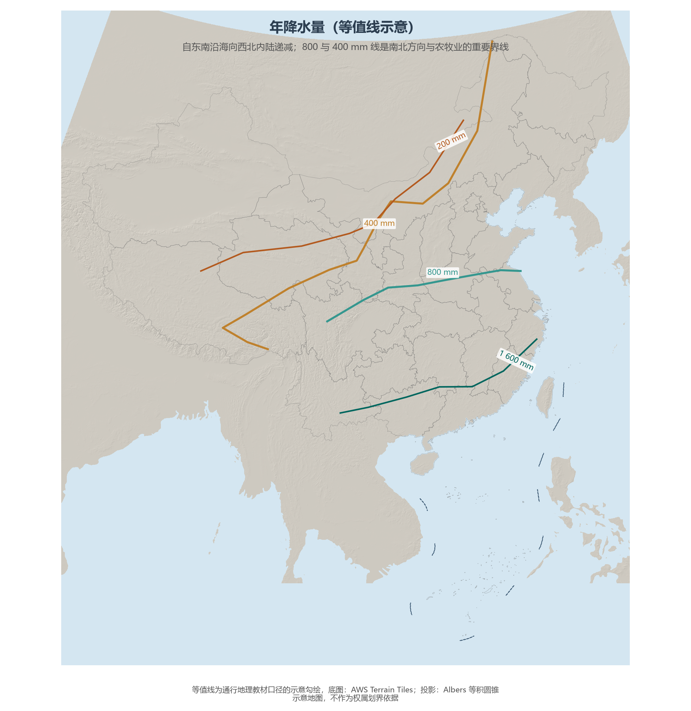
图 4-6 年降水量等值线（示意）：1 600、800、400、200 mm 四条等降水量线构成从湿润到干旱的阶梯。
按降水量与蒸发量的对比（干燥度），全国划分为湿润、半湿润、半干旱、干旱四类干湿区。湿润区森林遍布，半湿润区是森林草原与农耕文明的核心带，半干旱区草原则退，干旱区荒漠广布、农业全部依赖灌溉。值得注意的是，干湿区的边界并不安稳：近 40 年西北西部呈现"变暖变湿"趋势，新疆多数气象站记录到降水增加——但相对于巨大的蒸发潜力，"变湿"远不足以改变干旱区的基本面貌。
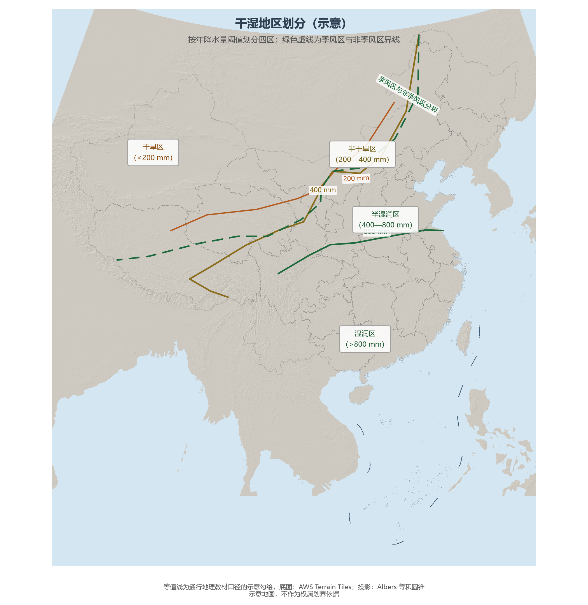
图 4-7 干湿地区划分（示意）：绿色虚线为季风区与非季风区分界，三条实线为 800/400/200 mm 等降水量线。
夏季风的进退决定雨带的移动：4—5 月雨带滞留华南（华南前汛期），6—7 月北跳至长江中下游（梅雨），7—8 月抵达华北、东北（华北雨季），9 月迅速南撤。于是南方雨季长、北方雨季短：广州月降水超过 100 mm 的月份有 8 个月，北京只有 4 个月，却要在其中完成全年九成的降水任务。北方降水的高集中度是一把双刃剑——春旱夏涝交替，使华北平原既是粮仓又是水荒之地（见 5.5 节与 11.2 节）。
世界同纬度地区大多受副热带高压控制而干燥，唯有东亚与南亚的季风区获得了集中而丰沛的夏季降水——这是中国以 7% 耕地养活近 18% 人口的水分基础。但季风是"年际不稳定"的：夏季风强则北涝南旱，弱则南涝北旱，年降水变率远高于地中海气候区。中国的水库库容、防洪体系与"丰枯调剂"的南水北调，本质上都是在为季风的不确定性购买保险。
季风给了中国雨热同期红利，也把风险写进了同一条合同：夏季风的每一次进退失据，都对应着一类气象灾害。台风、暴雨洪涝、干旱、寒潮与沙尘暴，是中国灾情最重的五类天气事件——全球气象灾害损失的约四分之一发生在中国东部这一块只占全球陆地 2% 的季风土地上。
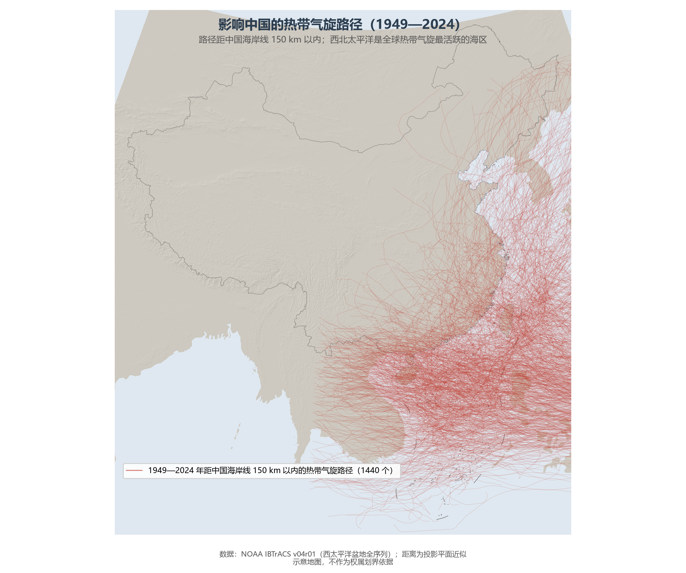
图 4-8 影响中国的热带气旋路径（1949—2024）：76 年间共 1 440 个热带气旋的路径接近过中国海岸线——西北太平洋是全球热带气旋最活跃的海区，中国是全球登陆台风最多的国家之一。
中国的气象灾害治理已形成"监测—预报—预警—应急"的闭环：风云系列气象卫星 9 颗在轨运行，全国自动气象站逾 6 万个，暴雨预警信息通过手机短信直达受影响区域。工程与非工程措施并重：三峡工程的防洪库容 221.5 亿 m³，使荆江河段防洪标准从十年一遇提高到百年一遇；1998 年大洪水后启动的退田还湖、移民建镇，则是"给河流让路"的思路转变。
孟加拉国的气旋风暴潮、印度的季风失败、中国的旱涝急转——亚洲季风区的国家面对同一份考卷。中国答卷的特殊性在于规模：全球最大的防洪工程体系、最大的调水工程与最密集的气象观测网都部署在中国。但气候变化正在提高考卷难度——近年"旱涝急转"（先旱后涝的快速切换）与台风北上（影响范围向东北扩展）成为新趋势，灾害治理从"历史经验外推"转向"风险动态管理"已是必答题。
一张气候图（climograph）就是一座城市的"气候指纹"：横轴是 12 个月，红线（右轴）记录气温的呼吸，蓝柱（左轴）记录降水的节律。把六座代表城市放在一起，中国气候的多样性便一目了然——它们分别对应温带季风、暖温带季风、亚热带季风、热带季风、温带大陆性与高原山地六种基本类型（图 4-1，见 4.1 节）。
六座城市的连线，几乎就是一条纵贯中国的气候梯度：从海口的全年皆夏到哈尔滨的半年之冬，从乌鲁木齐的全年干旱到武汉的终年湿润。若把图集扩展到 30 城（覆盖漠河、吐鲁番、喀什、昆明、厦门等），可以看清每一个气候类型内部的细节差异——例如昆明四季如春的低纬高海拔组合，与吐鲁番"高温+极旱"的极端组合，同在 43°N 附近却判若两个星球。这种以城市为节点的气候图集，是理解中国农业带、物产带与生活方式差异最直观的一把钥匙。
中国是一个"两分水世界"：约三分之二的国土属于外流区——江河奔流入海；约三分之一的国土属于内流区——河流消失于沙漠、湖泊或盐沼。外流区集中了全国 95% 以上的水资源量与 90% 以上的人口，内流区则以不到 5% 的水量供养着绿洲文明。理解这张水系图，就掌握了后面资源、农业、城市各章的底层约束。
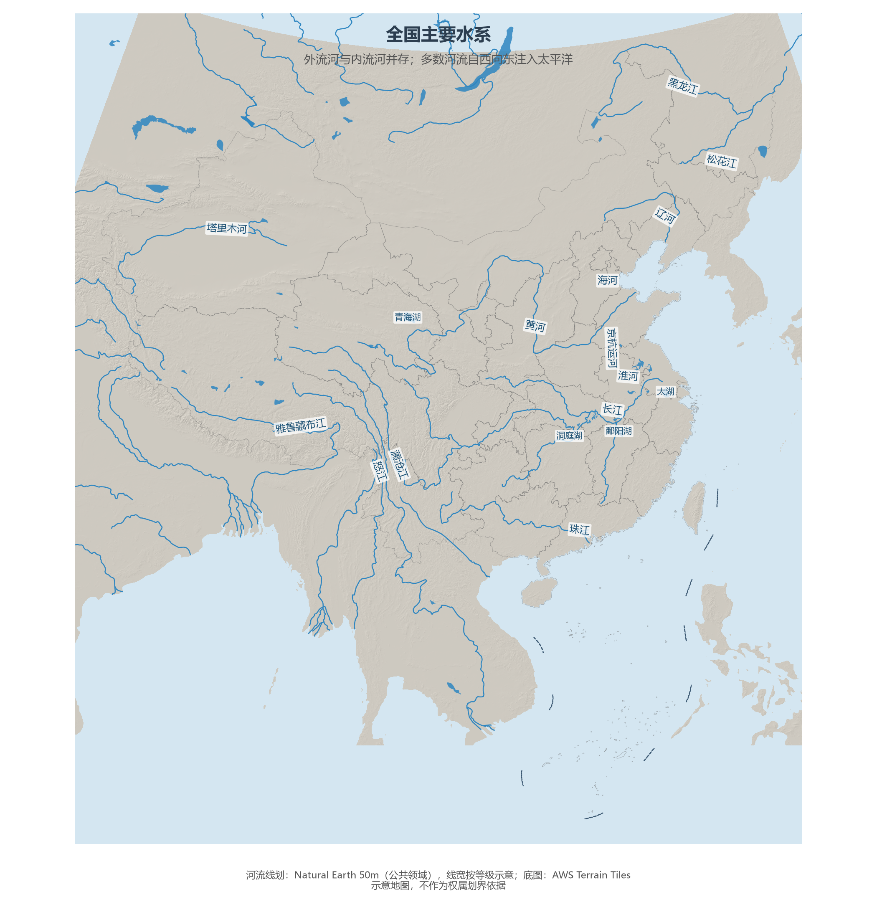
图 5-1 全国主要水系：蓝色为 Natural Earth 50m 主要河流与湖泊，标注九大水系与代表湖泊。
外流河流按归宿分为三大水系：
内流区最著名的代表是塔里木河：全长约 2 179 km，是中国最长的内流河，完全依靠天山、昆仑山的冰雪融水补给，流量随气温起落，夏季为汛期。
中国水系的宏观格局由两条对角线写就：一条是分水岭线——大兴安岭—阴山—贺兰山—巴颜喀拉山—冈底斯山，它同时是季风区与非季风区、外流区与内流区的界线；另一条是长江—黄河组成的"人字形"骨架，两大水系以巴颜喀拉山为分水，一个向南包住青藏高原东缘，一个画出一个巨大的"几"字形。京杭大运河则用人工水道把海河、黄河、淮河、长江、钱塘江五大水系串成一线，是世界上里程最长的人工运河（约 1 794 km）。
世界人口前十的大国几乎都拥有一条"国民河流"：美国的密西西比、俄罗斯的伏尔加与鄂毕、印度的恒河、巴西的亚马孙。中国的对应物是长江——约 6 300 km 长度居世界第三、年径流量近 1 万亿 m³，其流域养活了全国约三分之一的人口、创造了约一半的 GDP。而与俄罗斯"河流多、人口少"相反，中国的河流几乎每一条都人烟稠密：全球人口超过 1 亿的流域仅有长江、恒河与印度河，长江是其中经济密度最高的一个。
长江是中国第一大河：干流全长约 6 300 km（居世界第三），流域面积约 180 万 km²，约占全国陆地面积的五分之一；年径流量约 9 600 亿 m³，约为黄河的 17 倍。它发源于唐古拉山脉各拉丹冬雪峰，自青藏高原一路东流，干流流经 11 个省级行政区，最后在上海注入东海。"长江"是它的乳名与学名——各拉丹冬之下叫沱沱河、通天河，玉树至宜宾叫金沙江，宜宾以下才称长江。
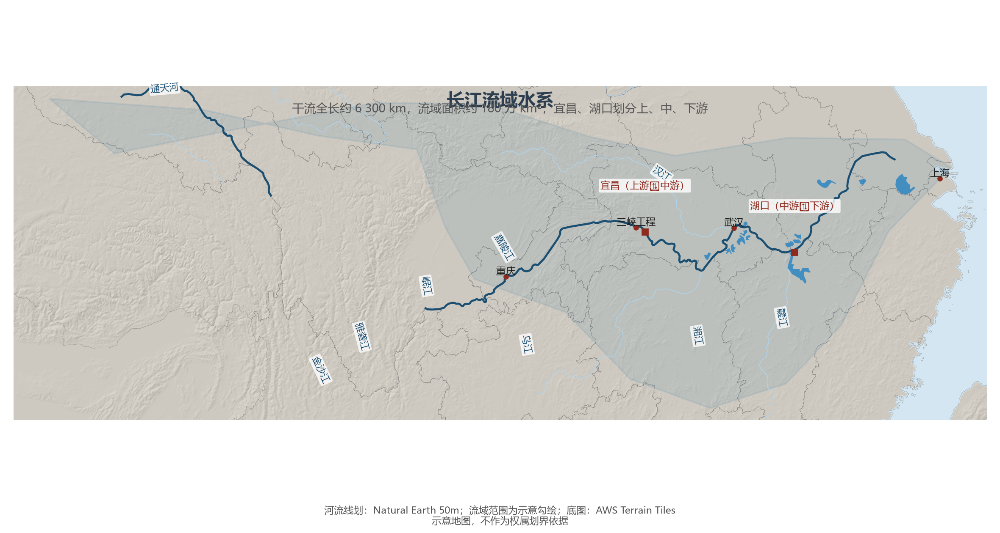
图 5-3 长江流域水系：宜昌、湖口两站划分上、中、下游；流域范围为示意勾绘。
| 河段 | 分界 | 落差与特征 | 功能 |
|---|---|---|---|
| 上游 | 源头—宜昌 | 落差约 5 400 m，峡谷深切（虎跳峡、三峡） | 水能富集，"水电走廊" |
| 中游 | 宜昌—湖口 | 江面展宽，支流湖泊众多（汉江、洞庭、鄱阳） | 防洪要害，"九曲回肠" |
| 下游 | 湖口—入海 | 江阔水深，潮汐影响明显 | 黄金水道的主干 |
上游的雅砻江、岷江、嘉陵江、乌江四大支流携带巨大落差，聚集了全国技术可开发水能资源的半数以上；三峡工程（装机 22 500 MW，世界最大水电站）正坐落在上游末端。中游的荆江河段"九曲回肠"，是防洪最紧张的河段——1998 年大洪水即发生于此；洞庭湖、鄱阳湖两大通江湖泊是天然调蓄池，却因围垦数十年来容积大幅缩水。下游江阔水深，南京以下可通 5 万吨级海轮，长江口深水航道使万吨海轮直抵南京。
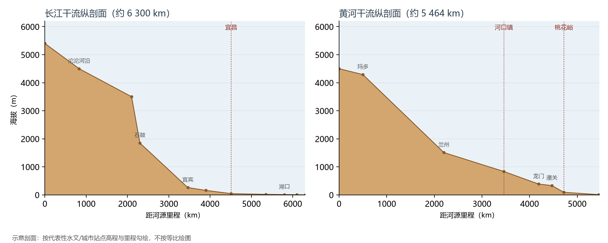
图 5-5 长江与黄河干流纵剖面（示意）：长江的落差集中在宜宾以上，黄河的"几"字形台阶清晰可见。
长江水系通航里程约 6.5 万 km，占全国内河通航里程的七成以上；2023 年长江干线货物通过量约 38.7 亿 t，连续多年稳居世界内河第一，相当于十余条京广铁路的运力。流域沿线的成渝、长江中游、长三角三大城市群串珠而行——长江是中国经济的"脊梁"，也是南水北调中线与"长江经济带"战略的空间载体。
同时扮演"水电基地、黄金水道、人口稠密区"三重角色的世界大河，长江几乎独一无二：亚马孙水量是长江的 7 倍却无法通航至内陆深处，尼罗河哺育的人口不及长江一半，密西西比河的水能开发程度与航运运量均不及长江。"一江连十一省、通四海"的航运纵深，是全球任何其他大河都不具备的。
黄河是中国第二长河：干流全长约 5 464 km，流域面积约 79.5 万 km²。它发源于巴颜喀拉山北麓，以一个巨大的"几"字形环绕黄土高原与内蒙古高原，注入渤海。黄河的关键词不是"长"，也不是"大"（年径流量仅约 580 亿 m³，不到长江的 6%），而是泥沙——"一碗水，半碗沙"，含沙量曾长期居世界第一。
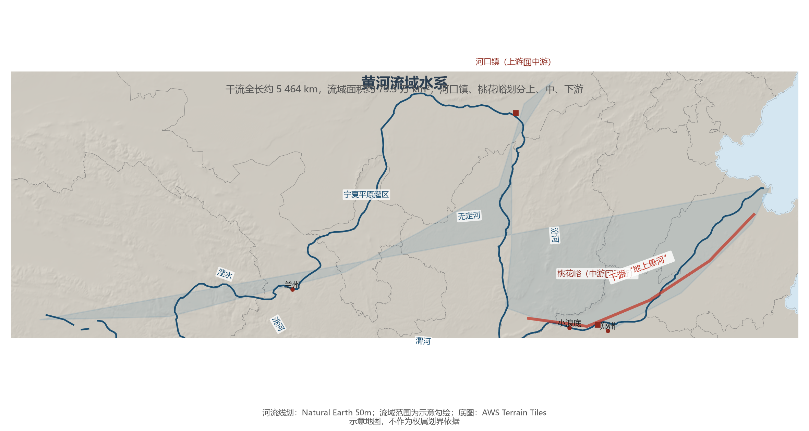
图 5-4 黄河流域水系：河口镇、桃花峪划分上、中、下游；红色为下游"地上悬河"河段（示意）。
1972—1999 年间，黄河下游 22 年出现断流，1997 年断流长达 226 天。此后水量统一调度与黄土高原水土保持（淤地坝、梯田、退耕还林）双管齐下：2000 年以来黄河已连续 25 年不断流；潼关站输沙量已从历史均值约 16 亿 t 降至 2000 年后的 2 亿 t 以下——黄土高原由"输沙源"转向"拦沙汇"。2002 年起实施的小浪底"调水调沙"，用人工洪峰把淤沙冲入大海，塑造出稳定的河槽。
黄河是世界上输沙量曾经最大的河流，其三角洲至今仍以每年数千米的速度向渤海推进。在世界大河中，黄河的特殊性在于"泥沙与文明同步"——它既是华夏文明的摇篮，也以 2 500 余年的决溢史成为世界上被治理时间最长的大河。恒河的含沙量、密西西比的冲积平原都可与黄河类比，但"悬河三百年不改、岁岁安澜"的人工治理规模，只有黄河做到了。
长江黄河之外，中国还有数十条各具性格的大河：有的水量丰沛（珠江），有的横跨国界（黑龙江、澜沧江），有的深居内陆（塔里木河）。它们共同的特点是——每一条都对应着一个流域、一种农业、一段文明。
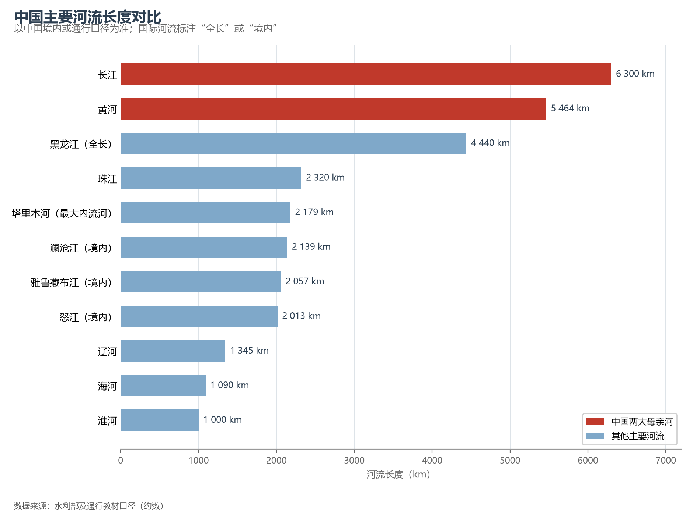
图 5-2 中国主要河流长度对比：以中国境内或通行口径为准。
| 河流 | 长度（约） | 注入 | 关键词 |
|---|---|---|---|
| 珠江 | 2 320 km | 南海 | 水量全国第二（年径流约 3 300 亿 m³），含西江、北江、东江 |
| 黑龙江 | 4 440 km（全长） | 鄂霍次克海 | 中俄界河，结冰期最长的大河 |
| 松花江 | 1 927 km | 黑龙江 | 东北水网主干，滋养松嫩平原 |
| 辽河 | 1 345 km | 渤海 | 东北南部，重工业摇篮的水源 |
| 海河 | 1 090 km（扇状水系） | 渤海 | 华北水患与缺水并存，京津冀的命脉 |
| 淮河 | 约 1 000 km | 长江（入江水道）/黄海 | 南北气候界线的载体，"大雨大灾、小雨小灾"的治理史 |
| 雅鲁藏布江 | 2 057 km（境内） | 印度洋（出境后为布拉马普特拉河） | 世界海拔最高的大河，大峡谷最深逾 6 000 m |
| 澜沧江 | 2 139 km（境内） | 南海（出境后为湄公河） | "东方多瑙河"，连接六国的国际河流 |
| 怒江 | 2 013 km（境内） | 安达曼海（出境后为萨尔温江） | 三江并流成员，原始河谷保存最好 |
| 塔里木河 | 2 179 km | 台特马湖（内流） | 中国最大内流河，纯靠冰雪融水 |
三条值得关注的水文性格。珠江流域面积不足长江四分之一，水量却达长江的三分之一——全国单位面积产水量最高的主要河流，珠三角因此成为水运与水田的双重天堂。雅鲁藏布江在藏南的雅鲁藏布大峡谷以 504.6 km 的长度与逾 6 000 m 的深度冠绝全球峡谷，且蕴藏着全国约六分之一的水能理论蕴藏量（雅鲁藏布江下游水电工程已于 2024 年核准开工）。海河与淮河则是"治水国家"的最好注脚：海河流域人均水资源量不足全国平均的十分之一，淮河自 1950 年"一定要把淮河修好"起，成为新中国第一条系统治理的大河。
中国是亚洲水塔，发源或流经中国的大河滋养着下游约 20 个国家——澜沧江—湄公河流经缅甸、老挝、泰国、柬埔寨、越南，布拉马普特拉河进入印度与孟加拉国。跨境河流既是合作纽带（澜湄合作机制），也使中国的水坝与降水成为区域议题。这种"上游地位"只有中国与俄罗斯、土耳其等少数大国具备。
中国有面积 1 km² 以上的天然湖泊 2 800 余个（2020 年代普查口径），东与西呈现两种截然不同的湖群：外流区的淡水湖靠江河吐纳，水位随季节涨落；内流区与青藏高原的咸水湖只进不出，盐分千年累积。全国水资源总量常年约 2.7—3.1 万亿 m³（2025 年为 2.72 万亿 m³），但人均只有约 2 000 m³——约为世界平均的三分之一。
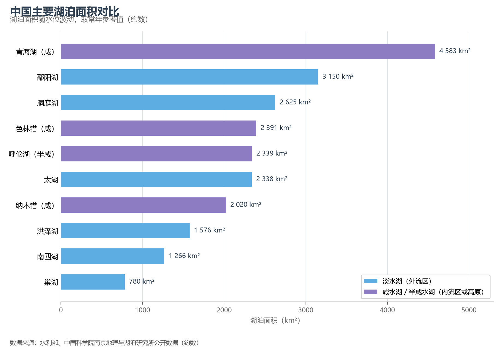
图 5-6 中国主要湖泊面积对比：紫色为咸水湖或半咸水湖，蓝色为淡水湖。
青藏高原湖泊群是中国湖泊水量的主体：全国湖泊水量的七成以上储存在高原湖群中，且多数仍在扩张——这与东部湖泊的萎缩构成了一组耐人寻味的对照。
2025 年全国水资源总量 27 229.3 亿 m³，用水总量 5 944.5 亿 m³（用水效率居世界前列）；用水结构中农业约占 62%、工业与生活各占约 16%、生态约 7%。空间错配是主要矛盾：长江流域以约 35% 的水资源支撑约三成的人口，而黄淮海流域以 7.2% 的水资源承载约 35% 的人口与经济总量——地下水曾长期超采，华北平原累计亏空相当于上千亿 m³。
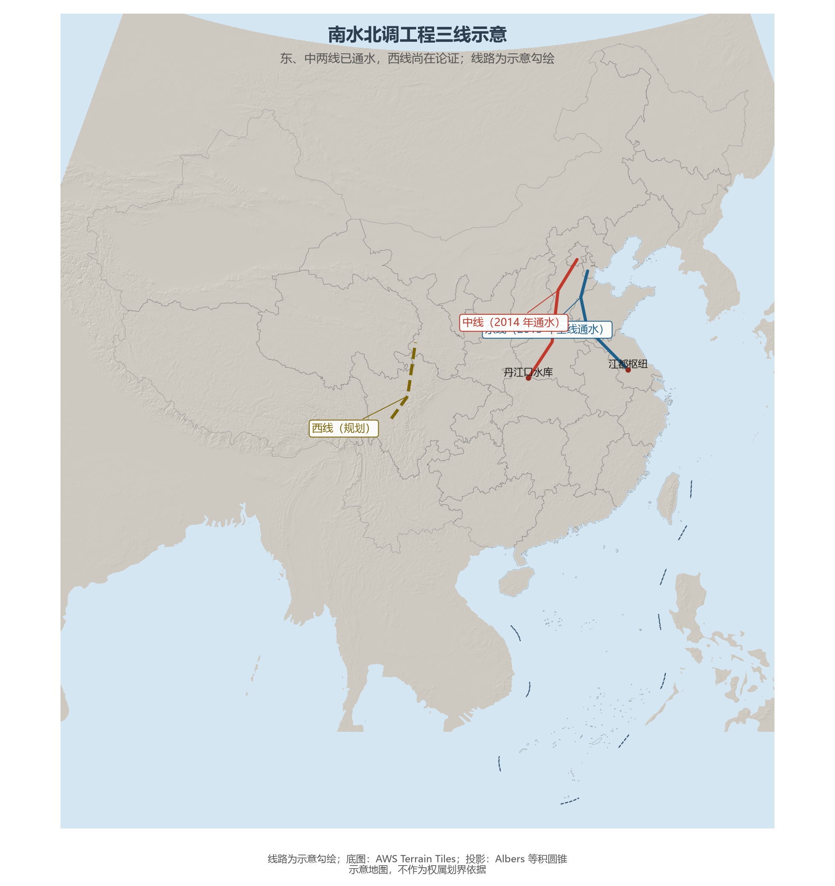
图 5-7 南水北调工程三线示意：东、中线已通水，西线在论证；线路为示意勾绘。
南水北调是世界最大的调水工程，三条线路各有分工：东线沿京杭大运河逐级北送（2013 年全线通水），中线自丹江口水库自流经郑州、石家庄到北京（2014 年通水），西线拟从长江上游调水入黄河上游，尚在论证。截至 2024 年，东中线累计调水逾 760 亿 m³，直接受益人口超 1.85 亿——北京城区七成以上供水来自南水。它改变的不仅是水量，更是华北地下水超采的止血阀与黄河流域的生态回补来源。
世界人均可再生水资源约 5 500 m³，中国约 2 000 m³，以色列约 270 m³、新加坡近乎为零——中国的水紧张不是"最紧张"，而是"总量大、错配狠"：把南方的水送到北方，把丰水年的水存到枯水年，把浑水变成清水，这三件事的工程规模都居世界前列。加拿大（人均约 8 万 m³）与中国（约 2 000 m³）的差距提醒我们：水资源的真正约束从来不是总量，而是人与水的空间关系。
土地是一切地理要素的承载体。2018—2019 年开展的第三次全国国土调查（"三调"，以 2019 年末为标准时点，2021 年公布），以优于 1 米分辨率的遥感影像为基础，对全国每一块图斑"到图入库"，是迄今最精细的一次国土家底盘点。它的结论既回答了"有什么"，也回答了"紧不紧"。
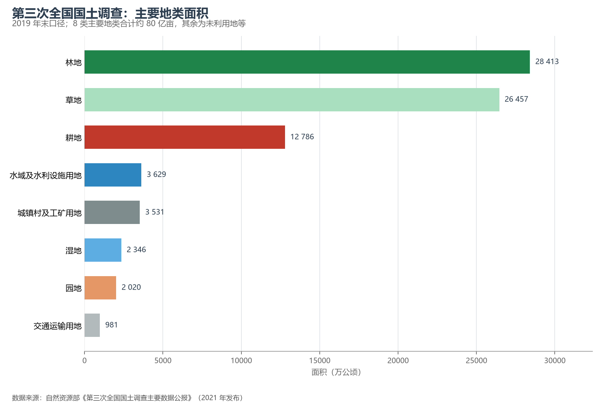
图 6-1 三调主要地类面积：林地与草地合计近 5.5 亿公顷，是国土的生态底盘；耕地是面积最大的农用地类型。
三调主要地类中，耕地 12 786.19 万公顷（19.18 亿亩）、园地 2 019.55 万公顷、林地 28 412.59 万公顷、草地 26 456.99 万公顷、湿地 2 346.03 万公顷，建设用地（城镇村及工矿用地）3 530.64 万公顷，交通运输用地 980.99 万公顷，水域及水利设施用地 3 628.79 万公顷。三个结构性事实值得记住：
1986 年，《土地管理法》把"十分珍惜、合理利用土地和切实保护耕地"确立为基本国策。背后的算术很朴素：全国每年建设用地增量以百万亩计，而耕地后备资源已不足 8 000 万亩，其中可开垦成耕地的不足一半。土地的中国故事，就是 19.18 亿亩耕地与 14 亿人口之间的永续匹配问题——这也是下一节耕地保护制度全部逻辑的起点。
以人均耕地论，中国（约 1.4 亩/人）远低于美国（约 7 亩/人）、俄罗斯（约 13 亩/人）、印度（约 2.4 亩/人），与日本、韩国同处"耕地紧缺"组。中国的应对方式也自成一派：以占全球 9% 的耕地、6% 的淡水资源，供养全球近 18% 的人口——单产（约 430 kg/亩的粮食平均单产）位居世界前列。土地紧缺倒逼出的集约农业，是中国地理最鲜明的个性之一。
1988 年，中国第一颗资源卫星尚在图纸上；今天，高分、资源、风云系列卫星每天为国土拍摄数万景影像——自然资源部每年一度的国土变更调查，就是用同一套卫星在"逐图斑核对"全国 2.6 亿个地块的变化。国土利用第一次有了"年检"。
第三次全国国土调查动用了优于 1 米分辨率的遥感影像 2.95 亿景，内业预判与"三调人"步行核查相结合，把全国划成 2.6 亿个图斑逐一认定地类。它与 2009 年的"二调"相比，技术上实现了从"抽样统计"到"全域上图"的跨越——土地管理第一次拥有了像素级底板。此后每年一次的国土变更调查持续更新这张底图，违法用地、耕地流失在卫星影像上无所遁形。
把 1990 年以来的卫星记录连起来看，中国国土利用有三个主线变化：
全球对地观测卫星中，中国的在轨数量已居世界前列：高分一号至七号构成从 2 m 全色到 1 mSAR 的观测体系，风云系列为全球 120 余个国家提供气象数据。土地的"天上看、地上查、网上管"模式，已成为发展中国家国土治理的参考样本——非洲多国与中国合作建立的卫星地面站，正在复制这套"用卫星管土地"的方法论。
19.18 亿亩耕地、14 亿多人口、每年数百万亩的建设需求——三组数字的张力，就是中国土地管理制度全部设计的起点。1994 年"18 亿亩红线"的提法进入政策视野，2006 年正式写入约束；2020 年以来，制度升级为"长牙齿"的硬措施：耕地保护党政同责、终身追责。
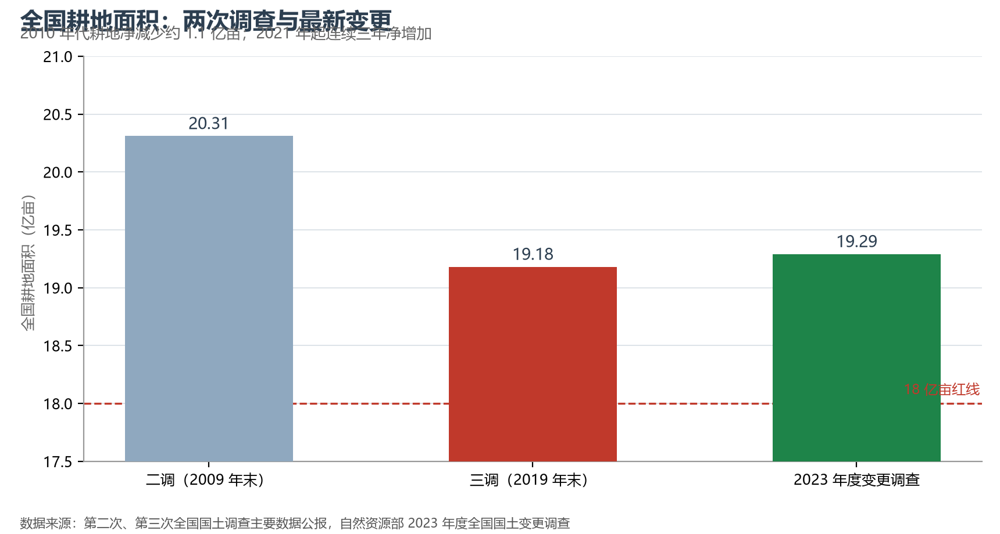
图 6-2 全国耕地面积：两次调查与最新变更：2010 年代净减少约 1.1 亿亩，2021 年起连续三年净增加。
2022 年完成的"三区三线"划定，把国土空间划分为三类功能分区并划出三条控制线：城镇空间（城镇开发边界，防止城市无序蔓延）、农业空间（耕地与永久基本农田保护红线）、生态空间（生态保护红线，覆盖陆域国土约 25% 以上的重要生态区域）。三线一经划定，全国"一张图"审批——任何建设项目落位前，先过三线校验。这是中国空间治理从"多规分立"走向"多规合一"的转折：国土空间规划体系（五级三类）成为所有开发的法定前置。
用红线锁定耕地，经济学上是有争议的（机会成本、区域错配），地理学上却很直白：中国 60% 以上的人口、70% 以上的城市化增量集中在与耕地高度重叠的东部平原上——不划线，最肥沃的农田将以最快速度消失。横向对比：美国通过农业保护区与用途税制间接保护农田，日本以《农振法》划定农业振兴地域，欧盟以共同农业政策补贴维持耕地——用刚性红线"圈住"特定数量耕地的做法，中国是最大规模的一个。这不是最优雅的制度，却可能是最匹配"人多地少 + 快速城市化"双重约束的制度。
土地之上是三类流动性资源：森林、水与矿产。它们的共同特征是空间分布极不均衡——森林长在东南，水流向南方，矿产埋在北方与西部；它们的现代治理也都指向同一个方向：跨区域调配与集约利用。
全国森林覆盖率约 24.02%（2023 年林草口径），森林面积 2.31 亿公顷，人工林面积居世界第一。分布极不均衡：南方集体林区（福建、江西、广西、浙江等省森林覆盖率逾 60%）与东北、西南国有林区贡献了绝大部分森林，而西北五省区的覆盖率大多不足 15%——新疆仅约 5%。森林的"东南密、西北疏"与降水的分布几乎完全同构：400 mm 线以西，自然植被的本底就是草原与荒漠，人工造林必须遵循水分承载力。
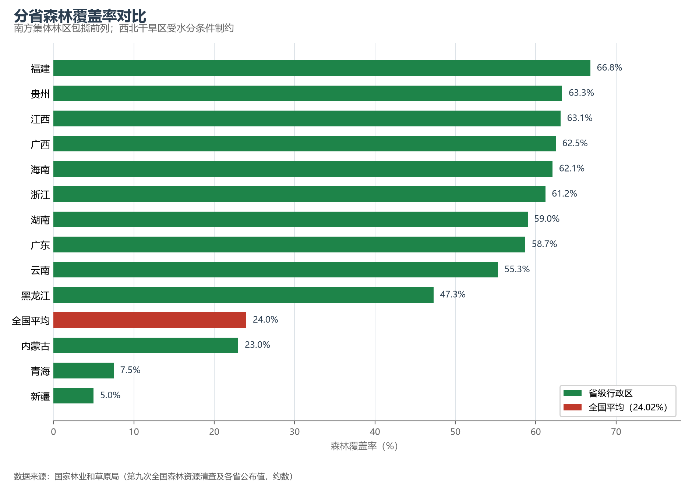
图 6-3 分省森林覆盖率对比：南方集体林区包揽前列，西北受水分条件制约。
全国水资源总量约 2.8—3.1 万亿 m³，人均约 2 000 m³（约为世界平均的三分之一）；南多北少的错配与调水工程已在 5.5 节详述。这里只补一个工业视角：中国是全球第一用水大国（年用水近 6 000 亿 m³），也是用水效率提升最快的国家之一——万元 GDP 用水量十余年间下降了约五成，农业节水灌溉面积超过 4 亿亩。
中国已发现矿产 173 种，45 种主要矿产的潜在总值居世界前列。分布格局一句话可概括：煤炭在晋陕蒙新（山西、内蒙古、陕西、新疆四省区原煤产量占全国八成以上），稀土与钨在南方（赣州、包头一南一北两大基地，中国稀土冶炼分离产能占全球近九成），石油天然气在西北与海上（塔里木、鄂尔多斯盆地与渤海湾、南海），铜铝铅锌等大宗有色依赖进口（原油对外依存度约七成、铁矿石约八成）。
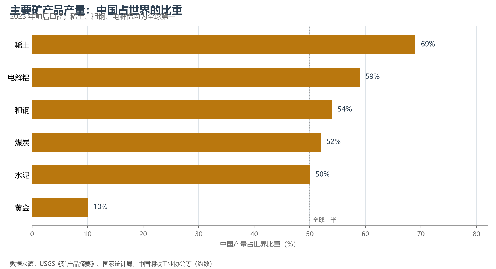
图 6-4 主要矿产品产量中国占世界比重：稀土、电解铝、粗钢、煤炭、水泥均占全球一半上下。
把产量占比换成"资源账本"，能看到中国与世界经济的新型绑定：中国生产全球一半左右的钢铁、水泥与电解铝，也因此消化了全球约七成的铁矿石贸易、一半以上的铝土矿与铜矿贸易——"世界工厂"的另一面是"世界原料市场"。能源安全与关键矿产供应链由此成为国家战略：能源的饭碗必须端在自己手里（煤炭兜底 + 可再生能源跃升），矿产的饭碗则要靠国内找矿突破与海外资源布局双轮驱动。
把温度带（第 4 章）与干湿区叠加，中国大地呈现出清晰的自然带谱：从东南的热带季雨林向西北方向，依次更替为常绿阔叶林、落叶阔叶林、温带草原与温带荒漠——东西向的"经度地带性"（水分主导）与南北向的"纬度地带性"（热量主导）交织，再加上青藏高原自成一体的垂直带谱，构成全球最完整的自然带组合之一。
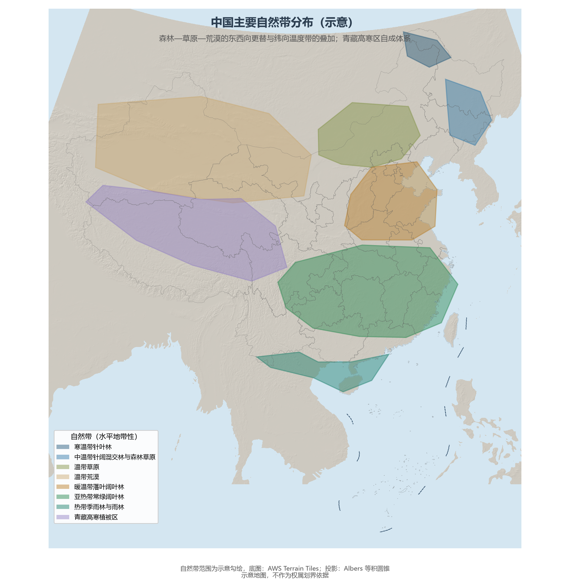
图 7-1 中国主要自然带分布（示意）：森林—草原—荒漠的东西更替与纬向温度带的叠加，青藏高寒区自成体系。
水平方向上，中国东部是森林的世界：热带季雨林与雨林（海南、滇南）、亚热带常绿阔叶林（江南—华南，全球同纬度面积最大的常绿阔叶林区）、暖温带落叶阔叶林（华北）、中温带针阔混交林（东北东部山地）与寒温带针叶林（大兴安岭北端，泰加林的南缘）依次排开；中部是草原带，西部是荒漠带。垂直方向上，一座山就是一张竖着的自然带谱——秦岭太白山在 3 000 余米的高差内重演了从落叶阔叶林到高山灌丛草甸的完整序列；横断山脉"一山有四季，十里不同天"，是全球垂直带谱最复杂的山地之一。
中国是全球 12 个"巨大多样性国家"之一：高等植物约 3.7 万种（居北半球第一）、脊椎动物约 7 300 余种、已知真菌约 1.5 万种；大熊猫、朱鹮、藏羚羊、珙桐、水杉等特有物种与"活化石"举世闻名。多样性的地理密码仍是三大阶梯：横断山区是全球 36 个生物多样性热点之一（川滇生物多样性热点），华南与西双版纳保存了热带区系，青藏高原演化出独特的高原动物群（藏羚羊、野牦牛）。
把物种数字放进世界坐标系：巴西高等植物约 3.4 万种、哥伦比亚约 2.4 万种，中国的约 3.7 万种位居世界第三，其中特有种比例超过一半。更关键的是"完整谱系"——中国的国土连续跨越五个温度带与四类干湿区，使同一国家内同时保存着从热带到寒温带的代表性生态系统，这在国土大国中独一无二，也是中国植物园、动物园与种质资源库体系的天然优势。
1978 年 11 月，"三北"防护林工程在十一届三中全会召开的当月启动——生态保护由此成为一项跨越半个世纪的国家工程。今天回望，中国的生态叙事可以概括为两条线：给生态让空间的退与还（退耕还林、退牧还草、休渔禁渔），与给生态建制度的守与护（国家公园、生态红线、生态补偿）。
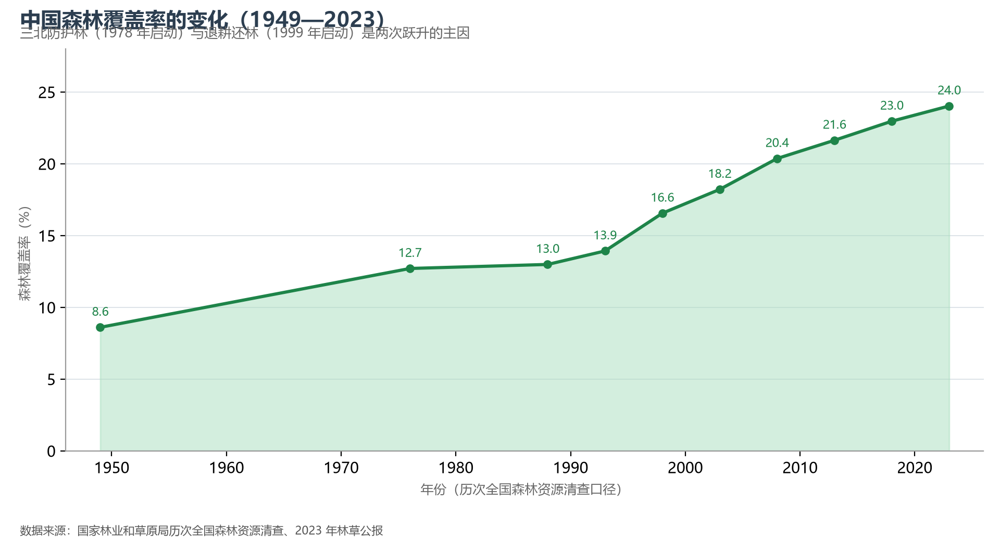
图 7-2 中国森林覆盖率的变化（1949—2023）：从 8.6% 到 24.02%，人工林面积世界第一。
2021 年 10 月，第一批五处国家公园正式设立——三江源、大熊猫、东北虎豹、海南热带雨林、武夷山，保护面积 23 万 km²。它们是把原有的近万处各级自然保护地"整合优化"后的顶层架构：此前多头管理的保护区、森林公园、地质公园被归并为"国家公园—自然保护区—自然公园"三级体系，生态保护红线（陆域约 25% 国土）为其提供法定边界。东北虎豹国家公园的东北虎种群由 27 只回升至约 70 只，是这套体系成效最直观的注脚。
1980 年代，中国的保护地模式学习自美国（严格保护区）与 IUCN 分类体系；今天，中国的贡献是另一种范式——在人烟稠密的国土上做生态修复：退耕还林的规模（惠及上亿农户的现金补偿）、"两山"理念驱动的生态产品价值实现机制（GEP 核算、生态补偿横向转移支付），都已成为全球生态治理的"中国方案"。联合国《生物多样性公约》第十五次缔约方大会（COP15）落地昆明，正是对这一实践的注目。
中国是世界上自然灾害最严重的国家之一：灾害种类多、分布地域广、发生频率高——70% 以上的城市、50% 以上的人口分布在气象、地震、地质、海洋等灾害严重的地区。季风气候（第 4 章）与板块位置（第 3 章）是两个根源：前者制造气象灾害，后者制造地震与地质灾害。
中国地处环太平洋地震带与欧亚地震带（地中海—喜马拉雅带）之间，地震活动呈现"分布广、频度高、震源浅、灾害重"的特点。地震活动的空间格局十分清晰：南北地震带（从贺兰山、六盘山沿横断山东缘南下）是中部的主干，华北地震带（张家口—渤海—郯庐一线）、东南沿海带、天山带与青藏高原周缘带构成四大支线。20 世纪以来全球死于地震的人口中，中国约占三分之一：1920 年海原 8.5 级、1976 年唐山 7.8 级、2008 年汶川 8.0 级三次巨震，分别是百年间三个时代的国殇。汶川地震后，全国地震烈度区划与农居抗震工程全面升级，抗震设防成为国土规划的法定前置。
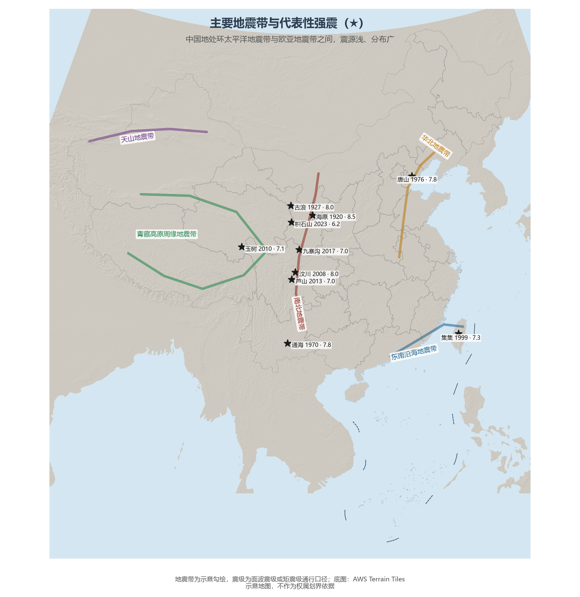
图 7-3 主要地震带与代表性强震：南北地震带是主干，五大支线上的★为 20 世纪以来的代表性强震。
滑坡、泥石流集中在三个区域：横断山区（地震松动 + 陡坡 + 暴雨）、黄土高原（湿陷性黄土 + 沟壑地形）与秦巴山区。全国已查明地质灾害隐患点 30 余万处，汛期"群测群防"体系每年成功避险数百起。海洋灾害中，风暴潮损失居首——台风风暴潮主要袭击粤、闽、浙、琼四省海岸，温带风暴潮则偶发于渤海湾。海平面上升是慢变量：近 40 年中国沿海海平面上升速率约 3.5 mm/年，高于全球平均。
2008 年汶川地震与 2010 年代一系列巨灾之后，中国完成了一次减灾体系的重组：组建应急管理部（2018 年），把分属各部门的救灾职能整合为一；建成国家自然灾害综合风险普查（2020—2022 年，第一次全国性灾害风险底账）；建立"预警—响应—转移"的临灾闭环，汛期每年提前转移数百万人。水文监测上，全国雨量站逾 7 万个、大江大河实现洪水预报全覆盖——在 2020 年长江流域性大洪水中，水库群联合调度拦洪约 260 亿 m³，"以空间换时间"的工程哲学走向成熟。
把中国放进全球巨灾版图，其风险管理规模无出其右：地震预警网（秒级预警覆盖地震区中小学）、气象预警手机直达系统、国家综合性消防救援队伍（约 20 万人）——这些系统的共同前提是"人口稠密区的灾害必须零容忍"。对比日本（地震工程最精）、荷兰（防洪工程最重），中国的特点是"全灾种、全链条、大人口覆盖"。气候变化背景下，极端事件频率上升正在抬高这条防线的标准——巨灾保险与韧性城市将是下一程的关键词。
1.8 万 km 的大陆海岸线不是一条均匀的线，而是三种海岸类型的"拼贴画"：山地逼近海岸的地方是基岩海岸——水深坡陡、岬湾相间，天然良港的摇篮；大河入海的地方是淤泥质海岸——滩涂广布、岸线平直，湿地与盐场的世界；二者之间点缀着砂质海岸——沙细浪平，度假与旅游的遗产。
半岛是基岩海岸的集大成者：辽东半岛、山东半岛、雷州半岛自北而南拱卫渤海与北部湾，其中山东半岛的成山角号称"中国的好望角"。海湾则是半封闭的富水宝地：渤海湾（京津冀的海上门户）、杭州湾（钱塘江口的世界级强潮海湾）、北部湾（面向东盟的西南门户）。海岸类型决定了港口禀赋——全国亿吨大港几乎全部坐落在基岩岬湾或深水潮汐通道上，而淤泥质海岸的港口（如天津港）则要靠人工深挖航道。
中国海岸不是静止的：黄河三角洲以年均 2—3 km² 的速度淤进（黄河调水调沙以来增速放缓），渤海湾与苏北沿海依靠泥沙持续淤涨；而在华南与华北的滨海城市，地下水超采与建筑加载造成地面沉降，部分岸段相对海平面上升速率远超全球平均。海岸带的"一淤一沉"，是未来几十年海岸工程必须面对的双向账本。
以海岸线系数（海岸线长度/国土面积）论，中国（约 0.0019 km/km²）低于日本、菲律宾等岛国，与美国的本土相当；但中国海岸线上集聚的经济密度全球罕见——沿海 11 省区市以约 14% 的国土面积创造了全国一半以上的 GDP。世界银行"距离海岸 100 km 内集聚全球多数经济产出"的规律，在中国以更高的集中度成立。
中国是海洋岛屿大国：面积 500 m² 以上的海岛 7 300 多个，若计入更小的岛礁逾 1.1 万个，海岛总面积约占陆地面积的 0.8%。它们可分为三大家族：大陆岛（基岩大陆的延伸）、冲积岛（江河泥沙的堆积分号）与海洋岛（珊瑚与火山造的深海建筑）。
图 8-1 主要岛屿与群岛的分布：三大岛与四大群岛构成中国海岛地理的骨架。
台湾岛面积约 3.6 万 km²，中国第一大岛（见 2.4 节）；海南岛约 3.4 万 km²，是第二大岛，1988 年建省并成为全国最大经济特区；崇明岛约 1 269 km²，世界最大的河口冲积岛，由长江泥沙淤积而成，至今仍以每年数十米的速度向东生长——三座大岛恰好代表了海岛的三个成因家族。
群岛是海岛的主要存在形式：渤海海峡的庙岛群岛把守京津门户；黄海的长山群岛与东海的舟山群岛（1 390 个岛屿，中国最大群岛、最大渔场）分别拱卫两大渔港区；东南沿海的澎湖列岛、钓鱼岛及其附属岛屿隶属台湾省（见 2.4 节）。南海的东沙、西沙、中沙、南沙四大群岛散布于九段线之内——西沙的永兴岛是地级三沙市的驻地，南沙的曾母暗沙是中国领土的最南端。珊瑚岛是南海群岛的主体：它们由珊瑚虫的钙质骨骼经万年堆砌而成，只生长在水温 20 ℃ 以上的热带海域。
海岛的价值在"小而要害"：领海基点绝大多数设在海岛上，一个海岛可以依法主张约 1 550 km² 的领海与更广的管辖海域；海岛还是航道依托、渔场支点与生态屏障。《海岛保护法》（2010 年）确立了"保护优先、适度利用"的原则，无居民海岛实行"一岛一策"严管。
世界海岛经济有两条路：一是马尔代夫、塞舌尔的"旅游立岛"，二是新加坡、中国台湾的"枢纽立岛"。中国海岛走的第三条路是"体系立岛"——舟山群岛以港口群（宁波舟山港货物吞吐量世界第一）与渔业跻身世界级枢纽，海南以自由贸易港对接全球，南海诸岛则以生态保护与航运服务为主业。把 7 300 个海岛放回世界海岛版图，中国群岛的多样性（大陆岛、冲积岛、珊瑚岛、火山岛俱全）仅次于印尼与菲律宾。
2024 年，全国海洋生产总值突破 10 万亿元（105 438 亿元，占 GDP 约 7.8%）——中国已成为全球体量最大的海洋经济体之一。从渤海湾的石化码头到深圳的海洋新城，从深远海的渔业船队到近海的万亿级风电场，海洋经济已从"渔盐之利、舟楫之便"长成一条完整的产业链。
图 8-2 全国海洋生产总值（2019—2024）：五年间从 8 万亿量级站上 10 万亿台阶。
海洋经济的三大板块：传统产业——海洋渔业（水产品产量常年居世界第一，约占全球三成五）、海洋交通运输（全球货物吞吐量前十的大港中国占八席）、海洋油气（渤海、南海两大产区）；新兴高技术产业——海洋工程装备（全球订单份额约四成）、海洋电力业（海上风电累计装机世界第一）、海洋药物与生物制品；服务业——海洋旅游业（疫情后强劲修复，滨海旅游收入回升至万亿元级）。环渤海、长三角、珠三角三大海洋经济区合计贡献了全国海洋生产总值的七成以上。
世界海洋强国各有一张王牌：美国握军事与科研、挪威握海工与航运服务、日本握造船精密制造。中国手里的牌是规模与体系：全球第一的造船产能（三大指标均过半）、全球前十吞吐量大港中的八席、世界第一的海上风电装机与水产养殖产量。短板同样清晰——深海资源勘探开发（大洋矿产）、海洋生物医药的核心专利与高端船用设备仍依赖进口。"海洋强国"战略的全部含义，就是从"规模第一"走向"技术第一"。
2025 年末，全国人口 140 489 万人——这是中国人口连续第四年负增长（比上年减少 339 万人）。从 1949 年的 5.4 亿到 2021 年的 14.13 亿峰值，中国用 72 年走完了人类历史上规模最大的人口增长；此后的下行曲线，则开启了一个从未有过的时代。
图 9-1 中国人口总量（1949—2025）：2021 年 14.13 亿为历史峰值，2022 年起连续负增长。
中国人口转变以三段弧线完成：高增长时代（1949—1970，年出生率长期在 30‰ 以上，1963 年补偿性生育高峰达 43.4‰）；转型时代（1971—2015，计划生育从"晚稀少"到独生子女政策，出生率一路下探至 12‰ 以下，总和生育率降至更替水平之下）；负增长时代（2022 年起，出生人口跌破千万、死亡人口过千万，2023 年出生率 6.39‰、死亡率 7.87‰）。人口峰值提前到来且规模低于此前所有预测——这是理解未来房地产、教育、养老金政策的人口底账。
图 9-2 历次人口普查的年龄结构：少儿占比先降后稳，65 岁及以上占比从 4.9% 升至 13.5%（七普）。
七普（2020 年）65 岁及以上人口占 13.5%；2024 年末已升至 15.6%，60 岁及以上人口超过 3.1 亿（占 22%）。按 65 岁占比超过 14% 的通行标准，中国已于 2021—2022 年间进入"深度老龄化"社会——从"老龄化"到"深度老龄化"只用了约 21 年，而法国走了 115 年。区域上，老龄化呈"东北最深、沿海次之、边疆最浅"的梯度：辽宁 65 岁及以上占比已超过 20%，西藏仍不足 6%。
中国与印度在 2023 年前后交换了"世界第一人口大国"的座位：印度人口中位年龄约 28 岁，中国约 39 岁——两国的分岔不在人口规模，而在人口结构。日本 1990 年代进入深度老龄化后的经验（劳动力短缺、储蓄率下降、通缩压力）是理解中国未来二十年最好的参照系；而中国的特殊变量是 近 3 亿规模的"农民工蓄水池"与远未用尽的城市化潜力（见 9.4 节）——"未富先老"与"未充分城市化就老"的双重叠加，是日本当年没有遇到过的考题。
1935 年，国立中央大学地理学者胡焕庸在《地理学报》发表《中国人口之分布》，用一条从黑龙江瑷珲（今黑河）到云南腾冲的直线，把中国切成两个人口世界：东南侧 36% 的国土承载 96% 的人口，西北侧 64% 的国土只有 4% 的人口。近九十年后，这条线的两侧是约 43% 与 57% 的国土、约 94% 与 6% 的人口——比例有移动，格局未动摇。
图 9-3 胡焕庸线与人口分布：东南侧约 43% 国土集中约 94% 人口，"东密西疏"的格局长期稳定。
胡焕庸线不是画出来的，而是被自然写出来的：它几乎与 400 mm 等降水量线、季风区界线、地势第二级与第三级阶梯的西缘重合——线的东南侧是雨热同期的季风农耕世界，西北侧是干旱半干旱的草原荒漠世界。人口跟着水土走，水土跟着气候走，气候跟着海陆位置与地形走。改革开放以来最大规模的人口流动（数亿人的乡城迁移）并没有冲破这条线，因为流动的目的地——城市群与制造业带——依然在线的东南侧。
东南侧内部，人口密度从上海（约 3 900 人/km²）到云贵山地递减出一个完整的梯度；西北侧的人口则高度"绿洲化"——新疆 90% 以上的人口生活在占全疆面积不足 5% 的绿洲上，兰州—西宁、银川平原、天山北坡是几个孤岛式的密集区。因此严格地说，中国人口分布是"东南连片密集 + 西北绿洲点状密集"的双层结构。
以人口重心与国土的关系论，中国不是孤例：俄罗斯乌拉尔山以西的欧洲部分聚集了约八成人口，加拿大的"金马蹄地区"集中了约四分之一人口，埃及 95% 以上的人口挤在尼罗河谷与三角洲约 4% 的国土上。大国的宜居边界都由自然写就——但胡焕庸线的特殊在于：它以如此完整的水热逻辑横贯一个 14 亿人口的大国，且九十年来稳定性如此之强。"西部大开发"改变的是西北的发展速度，而不是人口分布的方向。
中国是统一的多民族国家：56 个民族中，汉族 12.86 亿人（占 91.11%），55 个少数民族合计 1.25 亿人（占 8.89%）。七普与六普相比，少数民族人口增长 10.26%，快于汉族——多民族的人口格局正在缓慢加权。
图 9-4 第七次人口普查的民族构成：左为汉族与少数民族总量对比，右为人口最多的十个少数民族。
人口逾千万的少数民族有 8 个：壮族（1 957 万，唯一人口接近两千万的少数民族，聚居于广西）、维吾尔族（1 178 万，新疆）、回族（1 138 万，大分散小集中的典型）、苗族（1 107 万）、满族（1 042 万，与汉族混居程度最深）、彝族（983 万）、土家族（959 万）、藏族（706 万）；蒙古族（629 万）与侗族（350 万）紧随其后。壮族聚居的广西壮族自治区，是全国少数民族人口最多的省级民族区域自治地方。
少数民族的人口分布画在一张"边缘地图"上：陆地边疆省份几乎全部是少数民族集中的地区——广西（壮）、云南（25 个世居少数民族，全国最多）、贵州（苗族、布依族、侗族）、新疆（维吾尔、哈萨克）、西藏（藏）、内蒙古（蒙古）、宁夏（回）、青海（藏、回、土族、撒拉）。但"聚居"之外是更深层的"散居"：全国约三分之二的少数民族人口生活在民族区域自治地方之外，城市中的少数民族流动人口已逾千万。"大散居、小聚居、交错杂居"六个字，是中国民族分布最准确的白描。
民族区域自治是宪法确立的基本政治制度：5 个自治区（内蒙古 1947、新疆 1955、广西与宁夏 1958、西藏 1965）、30 个自治州、120 个左右自治县（旗）构成三级体系，覆盖全国陆地面积的约 64%。自治地方集中的国土恰好是资源富集带（能源、矿产、草场）与生态屏障带（三江源、塔里木、内蒙古草原）的叠加区——民族地区的地理，就是中国生态安全与资源安全的地理。
以民族构成论，中国与俄罗斯（190 余个民族）、印度（数百种语言）、印尼（300 余个族群）同属"多民族巨型国家"。中国方案的特色在"区域自治 + 交融居住"的组合：既给集中聚居区以制度化的自治空间，又在人口流动中自然深化各民族的混杂居住。全球多民族国家的稳定率不高——中国的经验（基础设施均等化 + 对口支援 + 双语教育）因此被视为"多元一体"的一个可参照样本。
2025 年末，常住人口城镇化率 67.89%，城镇常住人口 95 380 万——相当于整个欧洲西部的总人口都住进了中国的城市。与此并存的是另一组数字：全国流动人口约 3.8 亿（七普口径），平均每 4 个中国人就有 1 个住在户籍地之外。人口流动是中国地理最活跃的变量。
图 9-5 中国城镇化率（1949—2025）：改革开放后进入快车道，2011 年城镇人口首次过半。
西方主要国家的城镇化从 30% 到 70% 用了 80—150 年，中国只用了约 40 年（1980 年的 19% 到 2020 年的 64%）。这条陡峭曲线分三段：1950—1978 年的"波动期"（户籍制度确立，城镇化徘徊在 18% 以下）；1978—2010 年的"工业化驱动期"（乡镇企业与外向型经济把 3 亿农民变成工人）；2010 年至今的"城市群驱动期"（增量人口向 19 个城市群集中，中西部省会成为新增长极）。按诺瑟姆曲线，中国已越过 70% 的减速拐点前夜——未来十年还有约 8 个百分点的空间，但节奏将明显放缓。
七普流动人口 3.76 亿，比六普多 1.5 亿。流向结构正在变化：跨省流动的比重下降，省内流动上升——中西部农民工"离土不离省"。跨省流动的三大目的地依然是广东、浙江、江苏、上海与北京；而人口输出的"五大户"是河南、安徽、四川、贵州、广西。最新的变化是"回流"：随着产业向中西部转移，川渝、湖南、安徽出现明显的人口回流与省会扩张——成都、长沙、合肥由人口净流出转为净流入。人口地理正在从"单极东南飞"转向"多点向心"。
常住人口城镇化率（67.9%）与户籍人口城镇化率（约 49%）之间约 18 个百分点的差距，对应着约 2.5 亿"人在城市、户籍在农村"的农业转移人口——他们享受的城市公共服务仍不完整。缩小这两个口径的差距（深化户籍制度改革、推进基本公共服务随人走），是"新型城镇化"战略下半场的核心议题。
中国用两代人完成了英国用一个半世纪、印度还未完成的城镇化率跃升。速度的代价也很清楚：大城市房价、通勤拥堵、"半城市化"人群、乡村空心化与老龄化的叠加。与世界比较，中国城市化的独特之处是"政府主导的土地财政 + 工业化先行"模式——它创造了基础设施的前置供给（高铁、地铁、新城），也积累了地方债务与空间错配。下一程的看点不再是速度，而是质量：城市群的多中心分工、城市更新的存量时代、以及乡村振兴对"空心化"的回应。
中国有 690 余座城市（含县级市），构成一座六层金字塔：塔尖是 7 座超大城市（城区人口逾千万的上海、北京、深圳、重庆、广州、成都、天津），往下依次是 14 座特大城市、14 座 Ⅰ 型大城市、70 余座 Ⅱ 型大城市、百余座中等城市与一百多座小城市。金字塔的层级由《国务院关于调整城市规模划分标准的通知》（2014 年）以城区常住人口一刀切定——注意是"城区人口"而非户籍或全域人口：东莞的常住人口逾千万，但按城区口径跻身超大城市行列的排名逻辑与此不同。
图 10-1 城市规模金字塔（七普城区人口口径）：底座的小城市数量最多，塔尖的超大城市贡献了最大的经济密度。
中国城市有另一套与规模并行的坐标——行政等级：直辖市（4）—副省级市（15）—地级市（293）—县级市（397）。两套体系大体吻合但并不重合：苏州的经济总量位居全国前列，行政上却只是普通地级市；拉萨的行政级别高，规模却只是小城市。理解中国城市，必须同时读这两张表——行政等级决定资源分配的通道，市场等级决定要素流动的方向，"强省会"战略正是两套逻辑博弈的产物。
7 座超大城市与 14 座特大城市全部位于胡焕庸线东南侧，其中 12 座集中在京津冀、长三角、粤港澳大湾区、成渝四大城市群——城市规模的分布比人口分布更为向心。
图 10-2 超大城市与特大城市的分布：圆面积示意城区人口规模。
按全球化与世界城市研究网络（GaWC）的分级，中国内地已有香港、上海、北京、广州、深圳五座"世界一线城市"（Alpha 及以上）——数量仅次于美国。但城市群的竞争力比单体城市更重要：全球六大城市群中，长三角以约 2.4 亿人口、33 万亿元 GDP 成为世界上人口最多、经济体量前列的城市群连绵带。中国城市体系的下一个十年，将是"从城市竞争到城市群协同"的十年。
单个城市的时代正在落幕，城市群的世纪已经开场。"十一五"以来，国家层面先后规划了 19 个城市群（"19+2"格局，再加新疆喀什、西藏拉萨两个边陲组团），它们以约四分之一的国土集聚了全国逾八成的人口与九成以上的经济总量。
图 10-3 全国主要城市群的分布：五大国家级城市群（京津冀、长三角、粤港澳大湾区、成渝、长江中游）承担国家战略使命。
图 10-4 五大国家级城市群的体量对比：GDP 与常住人口（2023 年，约数）。
城市群之下是更致密的都市圈——以一二线城市为核心、1 小时通勤圈为半径的日常功能体。国家已批复南京、福州、成都、长株潭、西安、重庆、武汉、杭州、广州、深圳、青岛等十余个都市圈发展规划。都市圈的看点是"轨道上的通勤"：北京—廊坊、上海—苏州、广州—佛山之间的跨城通勤者已以百万计，广佛两市地铁网互联互通，成为国内首个"同城化"样本。
美国的经济地理由东海岸、五大湖、西海岸三大城市群支撑；日本的一极集中造就了东京都市圈约 3 700 万人口的全球纪录。中国的特殊在于"多极并立 + 国家战略入场"：五大国家级城市群各有中央战略文件加持（京津冀协同、长三角一体化、大湾区建设、成渝双城经济圈、长江中游城市群），这种"顶层设计的城市群"模式在世界范围内独一无二——它以行政力量对冲了市场自发的单极化倾向，也留下了区域壁垒待破的课题。
1982 年起，国务院分三批（后又多次增补）公布国家历史文化名城，迄今已逾 140 座——这是全世界规模最大的历史城市保护体系。名城的分布本身就是一部浓缩的中国史：黄河流域的先秦古都带、大运河沿线的漕运城市链、江南的水乡府城群、边疆的军镇与土司城。
"八大古都"是中国城市史的塔尖：西安（西周丰镐、秦咸阳、汉唐长安，建都史逾千年）、洛阳（十三朝，夏商周汉魏隋唐的十字路口）、北京（燕蓟重镇、元大都、明清京师）、南京（六朝故都、明初京师、民国首都）、开封（北宋东京，清明上河图的原型）、杭州（南宋临安）、安阳（殷墟与甲骨文的故乡）、郑州（商代早期都城）。古都的重心随朝代自西向东、由中原向幽燕移动——西安—洛阳—开封—北京的四步走，恰是中国政治经济重心东移北上的轨迹。
按通行的分类，历史文化名城大体分为五类：古都型（西安、北京）、传统风貌型（平遥、丽江——平遥是中国保存最完整的县城，丽江是世界遗产古城）、风景名胜型（桂林、承德）、民族与地方特色型（喀什、拉萨八廓街）与近代史迹型（上海、青岛、遵义）。丽江（1997）、平遥（1997）与皖南古村落（2000）列入世界文化遗产后，"名城—世界遗产"的双重身份成为古城活化的通行证。
巴黎以整城限高保护天际线，京都以"景观条例"约束现代建筑，而中国名城面对的是 14 亿人城镇化背景下的存量更新。近二十年的教训与经验同样深刻：早期"拆旧建新"毁掉了部分街巷肌理，2010 年代后"微更新、渐进式改造"成为主流——北京中轴线（2024 年列入世界遗产）申遗过程中的街区整治是最新样本。140 余座名城的真正遗产，不是城楼与牌坊，而是一套"在发展中保护"的城市治理学。
2025 年，中国国内生产总值首次突破 140 万亿元——按不变价计算是 1952 年的 200 余倍，稳居世界第二大经济体、最大制造业国家与最大货物贸易国。但中国经济的空间账本比总量更耐读：一部"东部先跑、中部跟上、西部追赶、东北转型"的板块轮动史。
图 11-1 中国经济总量与人均 GDP（1952—2025）：对数轴上的增长曲线，改革开放是斜率的分水岭。
广东、江苏两省 GDP 分别约 13.6 万亿与 12.8 万亿元（2023 年），合计超过印度的经济总量；全国 GDP 逾万亿元的城市已达 26 座。排序表的另一端是青海、西藏——最大与最小省份的经济差距约 55 倍，远大于人口差距，这正是经济集聚的体现。
图 11-2 分省 GDP 排序（前 15 位，2023 年）：粤苏双雄领跑，浙鲁居第二梯队。
把国土、人口与 GDP 摆在一起，四大板块呈现鲜明的不对称：东部 10 省市以约 9.5% 的国土承载 40% 的人口、创造约 52% 的 GDP；西部 12 省区市占有近七成国土，人口与 GDP 占比均约五分之一到四分之一；东北三省人口与经济占比均已降至 7% 与 5% 以下。人均 GDP 的极差同样清晰：北京、上海人均已超过 19 万元（相当于部分中等发达国家水平），而甘肃不足 5 万元——区域差距仍是中国最大的地理现实之一，也是西部大开发、中部崛起、东北振兴战略存在的理由。
图 11-3 四大板块的经济、人口与国土占比：经济与人口的"东南倾"和国土的"西北大"互为镜像。
第一本是结构账：中国制造业增加值占全球约 30%，是唯一拥有全部工业门类的国家，但服务业占比（约 55%）仍低于发达经济体 15—20 个百分点。第二本是人均账：人均 GDP 约 10 万元（约 1.35 万美元），刚接近高收入国家门槛（世界银行标准约 1.4 万美元），内需与生产率的接力决定能否跨过去。第三本是空间账：以人均 GDP 衡量的省际差距，中国显著大于美国州际差距——这既是中国经济纵深所在，也是"全国统一大市场"要拆除的隐性墙。
2024 年，全国粮食产量首次站上 1.4 万亿斤（7.06 亿吨）——连续多年稳定在 1.3 万亿斤以上，人均占有量约 500 kg，高于国际公认的 400 kg 安全线。用世界 9% 的耕地养活近 18% 的人口，是中国农业地理最凝练的一句话。
图 11-4 全国粮食产量（1949—2024）：75 年增长 5.2 倍；2003 年低谷后开启"十九连丰"。
传统格局是"南稻北麦"，但卫星与统计描绘的当代版图更为立体：
图 11-5 三大粮食作物优势区（示意）：水稻、小麦、玉米的优势产区与商品粮基地高度重合。
全国 13 个粮食主产省贡献了约 75% 的产量，其中黑龙江（约 7 800 万吨）、河南、山东、吉林、内蒙古居前——"北粮南运"取代了历史上的"南粮北运"。背后的制度安排是"粮食安全党政同责 + 耕地红线 + 高标准农田 + 种业振兴"的组合拳；区域补偿机制（主销区向主产区支付补偿）正在把"谁种粮谁吃亏"变成"谁种粮谁受益"。
农业地理不止于粮食：畜牧业集中于内蒙古、新疆、河北的草原与农区 hybrid 带，生猪养殖向粮食主产区（河南、四川、湖南）集中；渔业以水产养殖为主（占渔业产量近八成），养殖产量占全球六成以上；设施农业（蔬菜大棚）在山东寿光等地形成了全国性"菜篮子"枢纽。"大食物观"正把食物来源从耕地扩展到森林、草原、湖泊与海洋——向江河湖海要热量蛋白，是中国人饭局的下一个边疆。
中国三大主粮单产已达世界先进水平（水稻单产约为世界平均的 1.6 倍），化肥农药使用量在零增长行动后连年下降。隐忧同样写在账本上：大豆对外依存度超过八成，饲料粮的进口通道集中在巴西与美国——粮食安全的"卡脖子"不在主粮而在蛋白。农业地理的下一章，将是"藏粮于地、藏粮于技"与全球农业供应链布局的双线并进。
中国是全球工业体系最完整的国家：联合国产业分类中全部 41 个工业大类、207 个中类、666 个小类一应俱全；制造业增加值占全球约 30%，相当于第二名到第十名的总和。工业的地理是一张"基地地图"，能源的地理是一张"西电东送、北煤南运、西气东输"的调度图——两张图叠在一起，就是中国经济的骨架。
中西部承接产业转移的"新基地"正在改写地图：重庆的笔电与汽车、郑州的智能手机、西安的半导体、贵阳的大数据——"东数西算"与产业西移让内陆省份第一次站上高端制造的起跑线。
中国一次能源生产与消费总量均居世界第一。消费结构正在历史性换挡：煤炭占比从 1978 年的 70.7% 降至 2024 年的约 53%，非化石能源占比升至约 20%——2024 年可再生能源新增装机占全国新增装机的八成以上，风电光伏累计装机突破 14 亿千瓦，超过煤电。"双碳"目标（2030 碳达峰、2060 碳中和）把这条换挡曲线写进了国家承诺。
图 11-6 能源消费结构演变：煤炭占比下降与非化石能源占比上升的两条曲线。
能源地理的核心矛盾是"资源在西部、消费在东部"：煤炭集中于晋陕蒙新（四省区产量占全国八成以上），水能在西南，风、光在"三北"与青藏，而负荷中心在东部沿海。三大国家级工程由此而生：西电东送（南、中、北三通道，特高压线路累计输送能力逾 3 亿千瓦）、西气东输（一线至四线，管道年输气能力逾千亿立方米）、北煤南运（大秦线、浩吉铁路两条亿吨级运煤通道）。中国建成了全球规模最大的特高压输电网络——"电从远方来"是东部城市的隐形命脉。
世界工厂的另一面是世界最大的能源与原料进口方：原油对外依存度约七成、天然气约四成、铁矿石约八成。供应链安全因此成为工业地理的新变量——新能源产业链（光伏、锂电、风电）中国占全球产能的一半到九成，把"资源约束"转化为"制造优势"，是过去十年最成功的产业地理重写。下一个十年，绿电富集的西部将成为"东数西算"与绿色氢氨的新工业区——能源地图正在从"西煤东运"转向"西电东送、西绿东用"。
如果为当代中国经济地理画出一张"战略叠加图"，会发现层层叠叠的圈与线：四大板块的总体战略打底，五条跨区域战略干道穿针，十余个城市群战略落子。理解这些战略，就是理解国家如何用政策梯度对冲市场的马太效应。
图 11-7 重大区域发展战略的空间布局：长江经济带与黄河流域一南一北横贯东西，京津冀、长三角、大湾区、成渝构成四极。
京津冀协同发展（2014）以疏解北京非首都功能为"牛鼻子"，雄安新区是千年大计的落子；长三角一体化（2018）升格为国家战略，沪苏浙皖以"一网通办"率先试验要素市场统一；粤港澳大湾区（2019 纲要）探索跨制度的大湾区市场；长江经济带（2014）以"共抓大保护、不搞大开发"重塑沿江产业布局——覆盖 11 省市、贡献全国近半 GDP 的黄金水道带；黄河流域生态保护和高质量发展（2019）则把生态约束写在了北方母亲河的流域治理中。
中国区域战略的空间逻辑正在演变：1980 年代的"经济特区—沿海开放"是点状试验，1990 年代的"梯度推进"假设雁阵有序飞，今天的战略则是"轴带 + 圈群"——长江、黄河两条轴带贯通东西，五大城市群构成增长极，中欧班列与西部陆海新通道再把内陆钉进全球供应链。区域政策的坐标系已从"让一部分地区先富起来"切换为"在统一大市场中实现区域协调"。
中国拥有世界规模最大的交通网络：铁路营业里程 16.2 万 km（其中高铁 4.8 万 km，占全球七成），公路总里程 549 万 km（其中高速公路 19.1 万 km，居世界第一），内河航道 12.8 万 km，定期航班通航机场 263 个，城市轨道交通运营里程逾 1 万 km。网络规模之外，真正的地理变量是结构与密度：东密西疏的路网、西煤东运的专线、贯通南北的高铁主轴，共同织成一张与人口经济分布同构的网。
图 12-1 中国铁路与公路网络的世纪增长：高铁与高速公路里程均居世界第一。
2024 年全社会货运量约 578 亿吨：公路以约 73% 的份额承担"门到门"的短驳与集散；水运以约 17% 承担外贸与大宗干线（长江干线货运量连续多年世界内河第一）；铁路以约 9% 主攻煤炭、矿石、粮食等大宗与集装箱班列；管道输送油气（油气管道总里程约 19 万 km）；民航则以客为主，货机网络服务高值货物。客运端，高铁以 30 亿人次以上的年发送量成为中长距离出行的绝对主力，民航年旅客吞吐量回升至 7 亿人次量级。
图 12-2 货运量结构与沿海港口货物吞吐量前八：全球货物吞吐量前十的港口中国占八席。
2021 年印发的《国家综合立体交通网规划纲要》给出了 2035 年的蓝图：以京津冀、长三角、粤港澳、成渝为四极，由 6 条主轴、7 条走廊、8 条通道组成的国家综合立体交通网主骨架，实体线网总规模合计 70 万 km 左右。它的空间逻辑与城市群战略完全咬合——交通网的节点就是经济圈的极核。
以铁路密度论，中国（约 168 km/万 km²）高于美国（约 150）而低于日本、德国；但高铁把"人口 50 万以上城市高铁通达率超过 95%"变成了现实——这在幅员大国中绝无仅有。对比美国"航空 + 公路"体系与中国"高铁 + 高速"体系，本质是人口密度与城市分布差异的交通响应：中国的高铁网络是全球最大规模的"人口密度基础设施"实验，其班次密度（日均逾 1 万列）让"轨道上的中国"成为新的地理常识。
中国铁路网的骨架史是一部"干线命名史"：1881 年的唐胥铁路只有 9.7 km；1909 年詹天佑主持的京张铁路第一次由中国人自主设计；1949 年全国铁路仅 2.18 万 km 且残缺不全；2008 年京津城际开启高铁时代；今天，"八纵八横"主通道加密成网，CR450 动车组试验时速已达 450 km。
图 12-3 "八纵八横"高速铁路网（简化示意）：以中心城市为节点的干线通道，直线连接枢纽示意。
《中长期铁路网规划》（2016 年）确定的"八纵八横"主通道，纵线自沿海、京沪、京港（台）、京哈—京港澳、呼南、京昆、包（银）海到兰（西）广，横线自绥满、京兰（藏）、青银、陆桥、沿江、沪昆到厦渝、广昆。逻辑清晰可读：纵线把东部沿海与内陆纵深串联，横线让长三角、长江中游、成渝在沿江通道上连成一线，陆桥通道（连云港—乌鲁木齐，与第二亚欧大陆桥重合）则把中国铁路直接焊进欧亚铁路网。
2011 年开行的中欧班列已通达欧洲 20 余国的 200 余个城市，累计开行超 10 万列（2024 年）——它把"陆桥通道"延长为跨大陆供应链：重庆的笔电、义乌的小商品、成都的整车经阿拉山口、霍尔果斯出境，15 天抵达杜伊斯堡。海运 40 天、空运 10 倍运价的区间，正是这条钢铁走廊的地理价值。
全球高铁营业里程约 6.5 万 km，中国占七成以上——第二位的西班牙（约 3 100 km）不足中国的 1/15。但高铁的意义不在里程而在时空收缩：京津冀、长三角、大湾区内部已形成"1 小时交通圈"，全国"八纵八横"完成后，省际时空距离整体压缩过半。以运营速度、网络规模与商业模式的综合计，中国高铁是本世纪全球交通基础设施最重大的地理重构。
交通网的两条外缘线——沿海港口群与沿边口岸带——是中国与世界经济对接的"端口"。前者的关键词是吞吐量，后者的关键词是新通道。
全国沿海港口划分为五大港口群：环渤海（天津、青岛、唐山、日照、大连——中国最大的煤炭、原油与集装箱干线港集群）、长三角（上海、宁波舟山——宁波舟山港以 13.8 亿吨货物吞吐量（2024）连续多年居世界第一，上海港集装箱吞吐量 5 151 万 TEU（2024）亦居世界第一）、东南沿海（厦门、福州，对台与"一带一路"的海上门户）、珠三角（广州、深圳、香港——世界级的集装箱港口连绵带）、西南沿海（北部湾港，面向东盟的最短海路）。全球货物吞吐量前十的港口中国占八席、集装箱前十中占七席——中国的港口系统是全球贸易名副其实的中转中枢。
进藏通道自有一部工程史：青藏公路（1954）与川藏公路（1954）翻越十几座山口进藏，青藏铁路（2006）成为世界高原铁路标杆，川藏铁路（在建）则以"台阶式"爬升挑战横断山。出疆通道同样在加密：兰新高铁与第二双线、格库铁路、和若铁路（2022 年通车，环塔里木盆地铁路成环）——"疆内环起来、进出疆畅起来"的格局成形。
2.28 万 km 的陆地边界线上分布着 100 多个陆路国家级口岸：满洲里与二连浩特承接中欧班列的北线与中线，阿拉山口与霍尔果斯是西线的主闸口（中欧班列七成经此出境），瑞丽、磨憨面向中南半岛，绥芬河、珲春面向东北亚。西部陆海新通道（2019 年规划）把这些点串成网：以重庆为运营中心，铁路南下经北部湾港出海，比绕行东部沿海缩短运距 1 000 余 km——内陆腹地第一次拥有了"自己的出海口"。
过去五百年，海权国家的港口霸权定义了全球贸易地理；中欧班列与陆海新通道正在给出另一种可能——欧亚大陆腹地的"陆权复兴"。但数据提醒我们要克制：全国外贸货运量的九成以上仍走海运，中国港口群的全球份额才是硬实力，陆上通道是分散风险的"第二选项"。海陆双枢纽的组合，才是中国交通地理对世界的完整答案。
960 万 km² 的国土之上，黑龙江能冷到 −50 ℃，海南岛却四季如夏；塔里木盆地终年难逢一场雨，江南水乡却为梅雨所苦。要把一个差异如此巨大的国家讲清楚，第一件工具就是分区——把相似的自然与人文组合归并在一起，区域之间的对比便一目了然。中国地理最通行、影响最深的分区方案，是把全国 34 个省级行政区归入北方地区、南方地区、西北地区、青藏地区四大区域。
四大区域的划分依据可以归结为两条主导线索：气候（气温与降水的组合）与地形（海拔与地貌格局）。由此得出三条标志性界线：
| 界线 | 划开的区域 | 地理含义 |
|---|---|---|
| 秦岭—淮河一线 | 北方地区 ∣ 南方地区 | 1 月 0 ℃ 等温线、800 mm 等降水量线、暖温带与亚热带分界、水田与旱地分界 |
| 400 mm 等降水量线 | 北方地区 ∣ 西北地区 | 季风区与非季风区的大致界线、半湿润与半干旱分界、农牧交错带 |
| 青藏高原边缘线 | ∣ 青藏地区 | 昆仑山—祁连山—横断山一线，约相当于 3 000—4 000 m 等高线，第一级阶梯的边缘 |
秦岭—淮河一线是中国最重要的一条人文—自然复合界线：线以北河流冬季封冻、耕地以旱地为主、农作物两年三熟或一年两熟；线以南河流不冻、水田连片、一年两熟到三熟。400 mm 等降水量线把季风所能滋养的东部与依赖高山雪水的内蒙古西部、新疆分开——这条线两侧，正是历史上农耕与游牧两大世界长期互动的地带。青藏高原边缘线最简单也最彻底：海拔本身就是一切，越过昆仑山、祁连山或横断山，气候、植被、农业、人口密度全部换了一套系统。
图 13-1 中国四大地理区域的划分：底图为地形晕渲，四区界线为教材口径示意。
按教材口径把 34 个省级行政区整体归组，四大区域的构成如下（括号内为省级行政区数量）：
| 区域 | 省级行政区构成 |
|---|---|
| 北方地区（10） | 北京市、天津市、河北省、山西省、辽宁省、吉林省、黑龙江省、山东省、河南省、陕西省 |
| 南方地区（18） | 上海市、江苏省、浙江省、安徽省、福建省、江西省、湖北省、湖南省、广东省、广西壮族自治区、海南省、重庆市、四川省、贵州省、云南省、香港特别行政区、澳门特别行政区、台湾省 |
| 西北地区（4） | 内蒙古自治区、甘肃省、宁夏回族自治区、新疆维吾尔自治区 |
| 青藏地区（2） | 青海省、西藏自治区 |
这一归组兼顾自然与行政两方面：内蒙古按其主体（高原牧区、灌溉绿洲）划入西北；东北三省与黄河中下游各省同属温带季风的旱作世界，同归北方。13.2—13.4 节的分区总论与 13.5 节的分省详述均采用这一口径。
四大区域的体量对比极为悬殊：
| 区域 | 面积占比 | 人口占比（2023） | GDP 占比（2023） | 气候类型 | 农业类型 | 代表地形区 |
|---|---|---|---|---|---|---|
| 北方地区 | 17.7% | 33.3% | 28.1% | 温带季风为主 | 旱地农业 | 东北平原、华北平原、黄土高原 |
| 南方地区 | 27.6% | 60.4% | 66.9% | 亚热带、热带季风 | 水田农业 | 长江中下游平原、东南丘陵、四川盆地 |
| 西北地区 | 34.5% | 5.7% | 4.6% | 温带大陆性 | 灌溉农业、畜牧业 | 内蒙古高原、塔里木盆地、准噶尔盆地 |
| 青藏地区 | 20.2% | 0.7% | 0.5% | 高原山地 | 河谷农业、高寒牧业 | 青藏高原、柴达木盆地 |
图 13-2 四大区域的面积、人口与经济占比：南方以约 28% 的国土承载了六成人口、创造了三分之二的经济总量。
三组数字放在一起，中国地理的基本格局便浮现出来：东南半壁以不足三成的国土聚集了六成人口，与 9.2 节的胡焕庸线互为印证；西北与青藏合计占据全国一半以上的国土，却只居住着 6.4% 的人口——那里不是不重要，而是被降水与海拔设定了另一种发展逻辑：生态屏障、能源资源与战略纵深。
把四大区域放到世界坐标系里，其体量足以颠覆直觉：
四大区域是自然—人文综合区，不是行政实体。省级整体归组是一种便于统计的简化，实际的自然界线穿过的正是那些著名的过渡带：
分区是认识地理差异的脚手架，不是刀切斧砍的边界；阅读以下各节时，既要用好分区，也要看到过渡。
北方地区包括东北三省、京津冀晋、山东、河南与陕西 10 个省级行政区，面积约 171 万 km²，常住人口 4.79 亿，2023 年地区生产总值约 37.5 万亿元。这里是中华文明的核心舞台之一：黄河滋养了最早的农耕文明，八大古都中的六座（西安、洛阳、开封、安阳、郑州、北京）坐落于此；这里也是当代中国的粮仓与能源库——东北黑土地生产着全国约五分之一的粮食，晋陕蒙撑起了全国煤炭产量的七成。
| 省级行政区 | 面积（km²） | 常住人口（万，2023） | 行政中心 |
|---|---|---|---|
| 北京市 | 16 410 | 2 186 | 北京 |
| 天津市 | 11 966 | 1 364 | 天津 |
| 河北省 | 188 800 | 7 393 | 石家庄 |
| 山西省 | 156 700 | 3 466 | 太原 |
| 辽宁省 | 148 700 | 4 182 | 沈阳 |
| 吉林省 | 187 400 | 2 339 | 长春 |
| 黑龙江省 | 473 000 | 3 062 | 哈尔滨 |
| 山东省 | 157 900 | 10 123 | 济南 |
| 河南省 | 167 000 | 9 815 | 郑州 |
| 陕西省 | 205 600 | 3 952 | 西安 |
自然地理上的北方并不与省界完全重合：内蒙古东部（呼伦贝尔—大兴安岭一带）的景观与东北无异，陕南汉中盆地已是亚热带风光，豫南信阳骑在秦岭—淮河过渡带上（见 13.1 节第五小节）。
北方地形自东向西呈现三大单元：东北平原（约 35 万 km²，中国最大平原）由松嫩平原、三江平原与辽河平原拼成，大兴安岭、小兴安岭与长白山合围出马蹄形格局；华北平原（约 30 万 km²）是黄河、海河、淮河合力冲积的成果，北部的海河平原与南部的黄淮平原以黄河为脊；黄土高原（约 60 万 km²）是全球黄土覆盖最厚、最连续的区域，塬、梁、峁纵横沟壑。此外，山东丘陵与辽东丘陵分插渤海两岸，汾河谷地与渭河平原（关中）嵌在山西、陕西的山地之间，秦岭横亘南缘，构成与南方之间的天然屏障。
图 13-3 北方地区：三大地形区与主要河流、城市、矿产分布（编号说明见图下）。
三块土地各有各的"土"：东北平原是黑土——世界三大黑土区之一，有机质含量高，一寸黑土要数百年才能形成；华北平原是黄河带来的冲积土，深厚肥沃，但旱涝盐碱曾是老大难；黄土高原是风成的黄土——细腻粉砂遇水易蚀，千年水土流失塑造了这里的地貌与艰辛。
北方全境属温带季风气候（西北缘向大陆性过渡），温度带自北向南跨寒温带、中温带与暖温带三带。冬季寒冷漫长：漠河 1 月均温约 −26 ℃，河流封冻期在东北可达半年；夏季短促而雨热同期，降水自东南的 800 mm 向西北的 400 mm 递减。熟制随之而变：东北一年一熟，华北两年三熟到一年两熟。两样气候苦头最出名：华北春旱——春季升温快、蒸发旺而雨季未到，冬小麦返浆水贵如油；东北低温冷害——积温勉强，一场早霜足以让玉米减产。
北方是黄河、海河、辽河、黑龙江—松花江四大家族的家园。东北诸河含沙量小、汛期短、结冰期长，松花江航运撑起东北水网；华北的海河水系呈扇形汇聚天津，径流小而季节差异极大；黄土高原的黄河支流（无定河、渭河、汾河）输走了黄河九成以上的泥沙——16 亿 t 的年输沙量曾在下游堆积出地上悬河，经四十余年治理已降至约 2 亿 t（见 5.3 节）。华北缺水是北方地理最紧的约束：黄淮海流域以全国 7.2% 的水资源承载约 35% 的人口与经济总量，地下水长期超采，直到南水北调东中线通水（2014 年）才略有喘息（见 5.5 节）。
农业上，北方是中国最大的商品粮基地：松嫩平原、三江平原是九大商品粮基地中的北方成员，东北三省粮食产量常年占全国约五分之一，含内蒙古东部则超过四分之一；黑龙江 2024 年粮食产量首次突破 1 600 亿斤，连续 15 年居全国第一。华北平原是冬小麦—玉米两年三熟的核心区，山东、河南两省粮食产量常年稳居全国前五。黄土高原在退耕还林（见 7.2 节）之后，小杂粮与苹果成了新的名片。
工业上，北方是共和国工业的摇篮：辽中南与京津唐两大重工业基地书写了"一五"以来的工业史——鞍山的钢、长春一汽的车、大连的船、大庆的油；156 项重点工程三分之一以上落地东北。能源家底至今仍是北方最大的牌：山西、陕西、内蒙古三省区原煤产量合计占全国约七成，大同、平朔、神府东胜的煤田与太原、鄂尔多斯的"煤都"之名相映（见 11.3 节）。
城市与战略上，北京是首都所在，天津是北方最大港口城市，京津冀协同发展、东北全面振兴先后上升为国家战略（见 11.4 节）。北方的问题与优势同样鲜明：资源型城市转型、人口外流与产业结构偏重，是东北振兴要解的题；而雄安新区、山东半岛城市群与黄河流域生态保护和高质量发展，是北方正在书写的新篇。
全球黑土带只有三块：乌克兰大平原、美国密西西比河流域与中国东北平原。三者纬度相近、同样"一两土一两油"，也都经历过开垦过度、黑土变薄的经历——美国 1930 年代的"黑风暴"直接催生了现代水土保持立法，乌克兰黑土层百年间平均损失近半，中国东北则自 2022 年起以《黑土地保护法》护住"耕地中的大熊猫"。东北平原的复种条件虽不及美国玉米带（一年一熟对一年两熟），但人均耕地远高于全国平均，规模化与机械化程度最高，是名副其实的"北大仓"。
南方地区包括长江中下游与东南沿海各省、西南各省区市及港澳台共 18 个省级行政区，面积约 268 万 km²，常住人口 8.69 亿，2023 年地区生产总值约 89.3 万亿元。自唐宋"经济重心南移"完成以来，南方就是中国的财赋重地；今天，它以约 28% 的国土承载全国六成人口、创造三分之二的经济总量，长三角与珠三角两大引擎都从这里起跳。
| 省级行政区 | 面积（km²） | 常住人口（万，2023） | 行政中心 |
|---|---|---|---|
| 上海市 | 6 340 | 2 487 | 上海 |
| 江苏省 | 107 200 | 8 526 | 南京 |
| 浙江省 | 105 500 | 6 627 | 杭州 |
| 安徽省 | 140 100 | 6 121 | 合肥 |
| 福建省 | 124 000 | 4 183 | 福州 |
| 江西省 | 166 900 | 4 515 | 南昌 |
| 湖北省 | 185 900 | 5 838 | 武汉 |
| 湖南省 | 211 800 | 6 568 | 长沙 |
| 广东省 | 179 700 | 12 706 | 广州 |
| 广西壮族自治区 | 237 600 | 5 027 | 南宁 |
| 海南省 | 35 400 | 1 043 | 海口 |
| 重庆市 | 82 400 | 3 191 | 重庆 |
| 四川省 | 486 000 | 8 368 | 成都 |
| 贵州省 | 176 200 | 3 865 | 贵阳 |
| 云南省 | 394 100 | 4 673 | 昆明 |
| 香港特别行政区 | 1 114 | 750 | — |
| 澳门特别行政区 | 33 | 68 | — |
| 台湾省 | 36 000 | 2 342 | — |
注：港澳台人口为当地口径（香港、澳门为 2023 年年中人口，台湾为 2023 年末口径），GDP 按当地统计折算人民币（约数，见附录 A）。
南方是四大区域中地貌最破碎、类型最齐全的一块：长江中下游平原（约 20 万 km²）由江汉平原、洞庭湖平原、鄱阳湖平原、皖中沿江平原与长江三角洲串珠状连成；东南丘陵（江南丘陵、两广丘陵、闽浙丘陵的合称）红壤遍布；四川盆地（约 26 万 km²）紫色砂页岩风化出"紫色盆地"，成都平原因都江堰而"水旱从人"；云贵高原喀斯特地貌发育，"地无三里平"；横断山区高山深谷南北纵列，是中国山地垂直带谱最完整的地方。边缘的秦岭、大巴山、巫山、南岭、武夷山把南方围合成相对独立的地理单元。
图 13-4 南方地区：平原、丘陵、盆地、高原与主要河湖分布（编号说明见图下）。
土壤与地貌一一对应：丘陵上是红壤（酸性，宜茶宜杉），盆地是紫色土，平原洼地是人工耕作千年的水稻土——"红壤丘陵茶果飘香、平原水乡稻鱼共生"正是南方农业地理的写照。
南方主体属亚热带季风气候，南缘（雷州半岛、海南、云南南部、台湾南部）进入热带季风气候。年降水量普遍在 800—1 600 mm，东南沿海与山地迎风坡超过 2 000 mm；无霜期长，一年两熟到三熟。季风的年际脾气在这里表现最烈：梅雨（6 月中旬至 7 月上旬长江中下游的连绵降水）与伏旱（7—8 月副高控制下的晴热少雨）首尾相接，台风夏秋登陆（年均 7—8 个），冬季寒潮亦可长驱直入两广——南方的农业、水利与城市内涝治理，本质上都是与季风的谈判（见 4.4 节）。
南方是中国的"水袋"：长江、珠江两大水系与东南沿海诸河贡献了全国水资源总量的八成以上（历年《中国水资源公报》口径）。长江横贯东西，干流航运能力相当于数条铁路（"黄金水道"，见 5.2 节）；珠江水量居全国第二，撑起珠三角的吞吐；洞庭湖、鄱阳湖、太湖构成中国最大的淡水湖群。水多也水患：1998 年长江流域大洪水之后，退田还湖、退耕还林与堤防体系重塑了人水关系（见 7.2 节）。
农业上，南方是稻作文明的故乡：水田连片、一年两熟至三熟，江汉、洞庭、鄱阳、成都、珠江三角洲五大平原是九大商品粮基地中的南方主力；淡水渔业以长江水系为最盛，"鱼米之乡"名副其实。丘陵山地贡献了全国绝大部分的茶叶、柑橘与蔗糖，云南、贵州的立体气候造就"一山有四季"的作物谱系。西南还是少数民族最集中的地区——云南一省即有 25 个世居少数民族，民族自治地方遍布（见 9.3 节）。
经济上，南方的领先是历史与现实的双重叠加：唐宋以后经济重心南移，明清江南市镇与珠三角贸易网络已执全国之牛耳；1980 年以来，深圳、珠海、汕头、厦门、海南五个经济特区与浦东开发先后把南方推向改革开放前沿。今天的南方坐拥长三角（约 33 万亿元 GDP、2.4 亿人口）、珠三角（粤港澳大湾区）、成渝、长江中游四大城市群（见 10.2 节），贡献了全国对外贸易的绝大部分，也是数字经济与制造业升级的主战场。方言版图同样以南方为最——吴、湘、赣、客家、粤、闽诸方言的复杂程度，正是南方山地阻隔、移民层叠的空间注脚。
南方的水稻版图放在世界上看更有分量：全球约九成稻米产于亚洲，中国是世界最大稻米生产国，长江流域的稻作历史可上溯至上万年前的上山文化。杂交水稻自 1970 年代推广以来把中国水稻单产推至世界前列，袁隆平团队的成就随后推广到东南亚、非洲与美洲——从养活自己到造福世界，南方水乡写下了人口地理学上最重要的注脚之一。
西北（内蒙古、甘肃、宁夏、新疆 4 个省级行政区）与青藏（青海、西藏 2 个省级行政区）合计面积约 529 万 km²——超过全国一半，常住人口却只有约 9 100 万（占 6.4%），2023 年地区生产总值合计约 6.7 万亿元（占 5.1%）。这两个区域常被并称"西部"，但逻辑截然不同：西北的问题是水——深居内陆带来的干旱塑造了绿洲与草原的世界；青藏的问题是高度——平均 4 000 m 以上的海拔塑造了高寒的世界。一个是降水线以西，一个是海拔线以上。
| 西北地区 | 面积（km²） | 常住人口（万，2023） | 行政中心 |
|---|---|---|---|
| 内蒙古自治区 | 1 183 000 | 2 396 | 呼和浩特 |
| 甘肃省 | 425 800 | 2 465 | 兰州 |
| 宁夏回族自治区 | 66 400 | 729 | 银川 |
| 新疆维吾尔自治区 | 1 664 900 | 2 598 | 乌鲁木齐 |
| 青藏地区 | 面积（km²） | 常住人口（万，2023） | 行政中心 |
|---|---|---|---|
| 青海省 | 722 300 | 594 | 西宁 |
| 西藏自治区 | 1 228 400 | 365 | 拉萨 |
西北的干旱有三个成因：深居欧亚大陆腹地、四周高山阻隔水汽、再加上青藏高原对西风带与季风的扰动。年降水量自东部的 400 mm 递减至塔里木盆地腹地的不足 50 mm，蒸发量却高达数千毫米——这里是中国内流区的大本营，塔里木河是中国最长的内流河（约 2 179 km），罗布泊曾是其终点。
图 13-5 西北地区：三大地形单元、沙漠与绿洲、主要矿产与陆路口岸（编号说明见图下）。
地貌格局可以用三句话概括：内蒙古高原坦荡开阔，呼伦贝尔、锡林郭勒、河套一带的草原是中国最大的牧区；新疆"三山夹两盆"——阿尔泰山、天山、昆仑山之间夹着准噶尔与塔里木两大盆地，塔克拉玛干沙漠（约 33 万 km²）是世界第二大流动沙漠，吐鲁番盆地则以"火洲"之称包揽中国最热纪录；河西走廊斜贯甘肃西部，祁连山冰雪融水串起武威、张掖、酒泉、敦煌一连串绿洲，自古是中原通往西域的咽喉——丝绸之路的命脉正是这条走廊。
有水的地方就有绿洲文明：河套平原与宁夏平原靠黄河自流灌溉，"黄河百害，唯富一套"，并称"塞上江南"，是西北的粮仓；天山南北的绿洲带则盛产棉花、瓜果——吐鲁番的葡萄、哈密的甜瓜都是极端大陆性气候（日照强、温差大）的礼物，古老的路引则是坎儿井——把雪山渗水引入绿洲的地下渠系。地下是另一重财富：内蒙古的煤与稀土（白云鄂博）、新疆的石油天然气（准噶尔、塔里木，"西气东送"的起点）、金昌的镍（见 11.3 节）。满洲里、二连浩特、霍尔果斯等陆路口岸与中欧班列，让古丝绸之路以铁路的速度复活（见 12.3 节）；兰新高铁则把新疆纳入全国高铁网。
青藏高原平均海拔超过 4 000 m，是地球上最高、最年轻的大高原（见 3.2 节）。这里的气候只有一句话：高寒——大气层薄、太阳辐射强（拉萨因此得名"日光城"）、气温低、生长期短。垂直分异取代了水平地带：谷地种青稞，山坡是草甸，雪线之上是冰川。
图 13-6 青藏地区：山脉、河流、湖泊与青藏铁路（编号说明见图下）。
青藏是中国的"水塔"：长江、黄河、澜沧江、怒江、雅鲁藏布江、恒河、印度河均发源于此或流经边缘，第二次青藏科考量算"亚洲水塔"冰川约 11 万条、冰储量约 10 万亿 m³；中国境内的 4.86 万条冰川（面积约 5.2 万 km²）绝大部分在这里。三江源国家公园（2021 年正式设立）守护着长江、黄河、澜沧江的正源（见 7.2 节）。农业只能在河谷里寻找温度：雅鲁藏布江谷地（"一江两河"——雅鲁藏布江、拉萨河、年楚河中部流域）与湟水谷地是两大河谷农业带，青稞与春小麦在这里创造了世界高海拔种植纪录；牧业以耐寒的牦牛、藏绵羊为主。人口向河谷集聚——拉萨河谷与湟水谷地（西宁）承载了两省区的大部分城镇人口。交通以公路先行——川藏、青藏、新藏、滇藏四条进藏公路翻越千山——青藏铁路（2006 年全线通车）终结了西藏没有铁路的历史，拉林铁路已延伸至林芝，川藏铁路正在施工（见 12.3 节）。柴达木盆地在高原上自成一格：察尔汗盐湖的钾肥、冷湖的石油、戈壁上的光伏电站，让它名副其实地被称为"聚宝盆"。
西北与青藏的共同身份是中国的生态屏障：三北防护林工程主要在西北锁住风沙（见 7.2 节），三江源与祁连山国家公园涵养水源，青藏高原的冻土与冰川还是全球变化的敏感指示器——近 50 年"亚洲水塔"冰储量减少约两成，冰川退缩直接影响下游十余个国家的用水。发展战略上，西部大开发、对口援疆援藏、"一带一路"核心区（新疆）与生态功能区定位，共同构成了这两个区域的当代叙事。
青藏高原被称为地球"第三极"——它是南极、北极之外全球最大的冰雪储库，也因冰储量约 10 万亿 m³ 被称为"亚洲水塔"，直接滋养下游近 20 亿人口。放眼世界干旱带，西北与撒哈拉、阿拉伯半岛、中亚同处北纬 15°—35° 的副热带干旱区，唯独中国的西北因青藏高原的隆起而兼具高山雪水补给，才有了绿洲农业的千年延续——可以说，没有青藏高原，就没有河西走廊与天山绿洲，丝绸之路也会是另一副模样。
北京是共和国首都、四个直辖市之一，也是本书分省详述的第一站。它坐在华北平原西北端那张"湾状"的座椅上——西有西山，北有军都山，东南面向平原开口，永定河与潮白河从群山中奔涌而出——古人所谓"幽州之地，左环沧海，右拥太行，北枕居庸，南襟河济"，正是这座城市的地理底稿。3 000 多年建城史、870 余年建都史，都叠写在这 16 410 km² 的土地上。
| 指标 | 数值 |
|---|---|
| 面积 | 16 410 km² |
| 常住人口 | 2 189.3 万（2020 年七普）；2 185.8 万（2023 年末） |
| 常住人口城镇化率 | 约 87.8%（2023 年末，居全国省级行政区前列） |
| 地区生产总值 | 43 760.7 亿元（2023）；49 843.1 亿元（2024，增长 5.2%） |
| 人均地区生产总值 | 约 22.8 万元（2024，居全国省级行政区首位） |
| 行政区划 | 16 个市辖区 |
| 简称 | 京 |
放在全国坐标里：北京 GDP 在 34 个省级行政区中列第 13 位，与河北、安徽同一量级；但人均 GDP 高居榜首——一市之力约相当于瑞典（2023 年口径粗折），人口则与斯里兰卡相当。放回世界城市坐标系，北京是世界遗产最多的城市之一：2024 年北京中轴线申遗成功后，全市世界遗产达到 8 处，居全球城市前列。这座城市的真正特殊性在于"首都功能"：全国政治中心、文化中心、国际交往中心、科技创新中心的定位，决定了它的人口、产业与空间秩序都服从一套独特的逻辑。
图 13-7 北京市地势与 16 区：z9 级 DEM 晕渲（300 m 分辨率），编号说明见图下。
地形上，北京的山与川几乎对半分：西部西山属太行山脉，北缘军都山属燕山山脉，两山在南口附近交汇，围出一个人口与城市所在的东南平原——山地约占六成，平原约占四成。市域最高点为门头沟区的东灵山（2 303 m），最低处位于通州东南隅，海拔仅约 8 m。西山在地质上做过文章：周口店的龙骨山埋着北京猿人，石花洞与云水洞是华北喀斯特的代表（见 3.5 节）。
气候属暖温带半湿润季风气候：1 月均温 −4 ℃ 上下，7 月约 26 ℃，年降水量 500—600 mm 且七、八两月占去大半——春旱、夏涝、冬燥交替上演。2023 年 7 月末的"23·7"流域性特大洪水（海河流域）是几十年来对这座城市水利体系最重的一次检验。
水是最紧的约束。北京属海河流域，自西向东有拒马河、永定河、北运河、潮白河、泃河五系过境，但人均水资源量长期不足全国平均的十分之一；密云水库与官厅水库两大"水缸"常年告急，直到 2014 年底南水北调中线进京——累计受水已超百亿立方米——才真正缓过来。永定河经多年生态补水于 2021 年实现全线通水，断流近 30 年的河道重新有水，是华北地下水超采治理的标志事件。
北京的建城史可上溯至西周燕都蓟城；1153 年金中都在此第一次把北京推上一统王朝的都城之位，1272 年元大都奠定今天城市的中轴格局，1421 年明成祖迁都，明清两代经营出紫禁城—皇城—内城—外城的层级秩序。1928 年国都南迁后北京降格为"北平特别市"，1949 年 10 月 1 日中华人民共和国在此定都。
今天挂在北京城头的世界遗产有八处：故宫、长城（八达岭—慕田峪等）、天坛、颐和园、明清皇家陵寝（十三陵）、周口店北京人遗址、大运河（北京段）与 2024 年列入名录的北京中轴线——一条南起永定门、北至钟鼓楼、全长 7.8 km 的"理想都城秩序"之轴。城市记忆的另一半写在胡同与四合院里，写在"三山五园"的皇家园林区里，也写在 798 的旧厂房里。
北京的经济是典型的首都经济：第三产业占 GDP 比重超过八成，信息传输与软件服务业、金融业两大支柱合计贡献逾三分之一；中关村国家自主创新示范区是全市创新的发动机，金融街管理着全国金融资产的清算命脉。工业则主动"瘦身健体"——首钢搬离石景山，老厂房变成冬奥赛场与工业遗址公园（2022 年冬奥会让北京成为全球首座"双奥之城"）。
空间战略一言以蔽之："疏解"。2015 年以来，京津冀协同发展把非首都功能向河北与城市副中心疏解：行政办公机构东迁通州（城市副中心），一批批发市场与制造环节外迁，北京自 2017 年起常住人口连续减量——七普 2 189.3 万已低于 2016 年约 2 195 万的峰值，中心城区人口比重随之下降，这是超大城市里罕见的"逆城市化"操作。交通上，北京是全国铁路网的中心（京沪、京广、京哈、京包、京九诸干线的原点）与双国际机场城市（首都机场、大兴机场，年旅客吞吐量合计超 1 亿人次）。
图 13-8 北京市分区人口格局：左为分区常住人口（七普），右为分区人口密度——西城区以约 2.2 万人/km² 居首，延庆区仅 173 人/km²。
按《北京城市总体规划（2016—2035 年）》，16 区分为四大功能板块。
首都功能核心区（东城、西城）——东城区 70.9 万人，面积 41.8 km² 为全市最小；故宫、天坛、王府井与大批中央机关所在，是政治与文化心脏。西城区 110.6 万人，金融街以不足 3 km² 的街面贡献了全国金融资产管理的核心功能，2024 年全区 GDP 6 038.0 亿元；什刹海与胡同保护区在此与摩天楼共存。
中心城区其余四区（朝阳、海淀、丰台、石景山）——朝阳区 345.2 万人，全市人口第一大区：CBD 商务区、使馆区与 798 艺术区，2024 年 GDP 9 230.1 亿元居第二。海淀区 313.3 万人，中关村、清华北大与"三山五园"所在，2024 年 GDP 12 907.1 亿元，以一区之力占全市约四分之一，连续多年居各区之首。丰台区 202.0 万人，北京南站与丽泽金融商务区撑起南城脊梁。石景山区 56.8 万人，首钢工业遗址转型的样板——冬奥滑雪大跳台就建在群明湖畔。
平原新城（通州、顺义、大兴、昌平、房山）——通州区 184.0 万人，城市副中心：市级机关新驻地、环球影城与大运河森林公园。顺义区 132.4 万人，首都机场临空经济区与航空产业带。大兴区 199.4 万人，北京大兴国际机场"凤凰展翅"，临空经济区与生物医药基地并进。昌平区 226.9 万人，未来科学城与明十三陵同在一线，"回天地区"是全市最大的居住组团。房山区 131.3 万人，周口店遗址、良乡大学城与燕山石化并存。
生态涵养区（门头沟、平谷、怀柔、密云、延庆）——五区占全市面积约六成、人口仅一成，是首都的"后花园"与水源地。门头沟区 39.3 万人，西山永定河文化带与京西古道，2024 年 GDP 304.4 亿元（生态涵养区首次突破 300 亿）；平谷区 45.7 万人，金海湖与"农业中关村"；怀柔区 44.1 万人，怀柔科学城的大科学装置集群与雁栖湖国际会都；密云区 52.8 万人，密云水库是华北最大水库、首都的"大水缸"；延庆区 34.6 万人（全市最少），八达岭长城与冬奥延庆赛区所在地。
| 项 | 值 |
|---|---|
| 最高点 | 东灵山（门头沟区），2 303 m |
| 最低点 | 通州区东南隅，约 8 m |
| 面积最大 / 最小的区 | 密云区 2 229 km² / 东城区 41.8 km² |
| 人口最多 / 最少的区（七普） | 朝阳区 345.2 万 / 延庆区 34.6 万 |
| 人口密度最高（七普） | 西城区，约 2.2 万人/km² |
| GDP 首位区 | 海淀区 12 907.1 亿元（2024，占全市约 1/4） |
| 世界遗产 | 8 处，居全球城市前列 |
天津是四个直辖市中最贴近海的那个。它坐在华北平原东北端、海河水系五大支流汇流的尾闾上——北面燕山余脉收住了平原的尽头，东面渤海湾张开怀抱，"九河下梢天津卫"这句老话，道尽了这座城市的地理宿命：水从这里入海，船从这里靠岸，城因漕运与海港而生。自 1404 年明廷设"天津卫"起，六百余年里，它从天子津渡的军事卫所，长成北方最大的港口城市与综合交通枢纽，又作为京津冀城市群的"双城"之一，与北京共同构成北方经济的核心。
| 指标 | 数值 |
|---|---|
| 面积 | 11 966 km² |
| 常住人口 | 1 386.6 万（2020 年七普）；1 364 万（2023 年末） |
| 常住人口城镇化率 | 约 85.5%（2023 年末） |
| 地区生产总值 | 16 737.3 亿元（2023）；18 024.3 亿元（2024，增长 5.1%） |
| 人均地区生产总值 | 约 13.2 万元（2024，居全国省级行政区前列） |
| 行政区划 | 16 个市辖区 |
| 简称 | 津 |
放在全国坐标里：天津陆地面积在 34 个省级行政区中仅大于上海与港澳，GDP 总量居第 23 位——但这一万多亿元的经济体量折算约 2 530 亿美元，与新西兰全国（2024 年口径）大体相当；常住人口也比比利时全国还多约 180 万。这是一座"小而重"的城市：以全国不足 0.13% 的土地，承载着北方国际航运核心区与全国先进制造研发基地的功能。天津港 2024 年完成集装箱吞吐量 2 328 万标准箱，稳居世界港口前十，接近鹿特丹与洛杉矶两大港之和的量级；货物吞吐量 4.93 亿吨创历史新高（天津港集团口径）。
图 13-9 天津市地势与 16 区：z9 级 DEM 晕渲（300 m 分辨率），中心城区六区放大见插图，编号说明见图下。
地势北高南低，像一段缓坡从燕山滑向渤海。北部蓟州区是全市唯一的低山丘陵区，属燕山山脉南麓，盘山、八仙山、九山顶诸峰并列，最高点九山顶海拔 1 078.5 m；山地丘陵合计不足全市面积的 5%。由此向南，地势一路铺开为广阔的海河冲积平原与滨海平原，大部分地面海拔仅 2—5 m，滨海一带降到 2 m 以下——全市约九成半的土地是平原，这在省级行政区中仅次于江苏、上海一类的纯平原省份。
气候属暖温带半湿润季风气候：1 月均温 −4 ℃ 上下，7 月约 26—27 ℃，年降水量 520—660 mm 且集中于六至八月。春季干旱多风、夏季炎热多雨、秋季短暂、冬季干冷，是典型的北方沿海气候。台风极少直接登陆，但风暴潮是渤海湾最主要的海洋灾害——2018 年以来渤海湾沿岸的风暴潮预警多次波及滨海新区。
水是天津城市叙事的主角。海河流域的五大支流——北运河、永定河、大清河、子牙河、南运河——在天津附近汇成海河干流，自三岔河口向东 72 km 注入渤海；此外还有独流减河、永定新河、潮白新河、蓟运河等多条人工与天然入海河道。"九河下梢"既带来漕运之利，也带来洪水之患：1963 年海河大水后，上游水库与下游减河体系逐步建成，构成今天"分区防守、分流入海"的防洪格局。城市供水经历了两次历史性转折——1983 年引滦入津工程通水，滦河水经于桥水库穿燕山暗渠入城；2014 年底南水北调中线进津后，形成滦河、长江双水源格局。
渤海湾西岸还给天津留下了两类独特资源。一是湿地：宁河七里海是世界上最典型的古潟湖湿地之一，与北大港、团泊洼、于桥水库等共同构成候鸟迁徙线上的驿站，天津古海岸与湿地国家级自然保护区内的牡蛎礁与贝壳堤，是研究渤海湾岸线变迁的世界级剖面。二是盐与油：长芦盐区自古是全国最大的海盐产区，大港油田与渤海湾海上油气田则支撑起石化产业。
天津的建城时间在名城中格外精确：明永乐二年（1404 年 12 月）设天津卫——"天子津渡"之意，这是中国唯一有确切建城时间记录的古代城市。金代在此置直沽寨，元代设海津镇，已是漕运枢纽；明代设卫筑城后，"天津卫"成为城市的文化胎记。清雍正年间改州升府，1860 年第二次鸦片战争后开埠，英、法、美、德、日、俄、奥、意、比九国相继设立租界——今天五大道与意式风情区里的两千多座小洋楼，就是那段历史的建筑存档，天津也因此被称为"万国建筑博览会"。1895 年创办的北洋大学堂（今天津大学）是中国第一所现代大学；南开大学由严修、张伯苓创办于 1919 年，周恩来即其首届学生。
20 世纪的天津几经沉浮：1928 年设天津特别市；1949 年后为中央直辖市；1958 年并入河北省并成为省会，1967 年恢复直辖市至今。1984 年天津经济技术开发区在盐碱滩上奠基，是第一批国家级开发区；2006 年滨海新区开发开放纳入国家整体战略，2009 年撤销塘沽、汉沽、大港三区设立滨海新区行政区。
市民文化的底色是码头与市井：相声、时调在茶馆里生长，杨柳青年画、泥人张彩塑、风筝魏风筝出自乡土匠人之手，狗不理包子与煎饼馃子则把"卫嘴子"的讲究写进了日常。天津方言自带幽默基因，老城厢、古文化街、天后宫（北方现存最大的妈祖庙）共同保存着漕运时代的城市记忆。世界遗产有两处——长城（黄崖关段）与大运河（天津段），分别镇守北山与城下。
天津的经济骨架是港口 + 制造。天津港是世界航道等级最高的人工深水港之一，30 万吨级船舶可乘潮进出，港内铁路与航空（滨海国际机场）共同构成"海陆空铁"多式联运体系；依托港口的石化、装备制造与贸易物流，撑起了滨海新区约占全市四成的经济总量。制造业则呈"上天入海"之势：空客 A320 系列飞机天津总装线是欧洲之外唯一的空客单通道总装基地，直升机与无人机产业聚集于空港；海上，渤海湾油气开采与船舶海工装备南北呼应；地面，汽车（一汽丰田）、石油化工、信创产业（飞腾 CPU、麒麟操作系统）与生物医药构成新支柱。2015 年挂牌的中国（天津）自由贸易试验区是北方第一个自贸区。
在京津冀协同发展战略中，天津的定位是"一基地三区"：全国先进制造研发基地、北方国际航运核心区、金融创新运营示范区、改革开放先行区。与北京的"疏解"相对，天津的关键词是"承接"——"十四五"期间滨海新区承接非首都功能重大项目 278 个、总投资 2 734 亿元，中国石化、国家管网等央企二三级机构相继落户。城市空间形成"津城""滨城"双城格局：中心城区保留金融、商贸与科教文化职能，滨海新区承担港口、先进制造与开放试验功能。也要看到转型的压力：2017 年以来常住人口持续小幅净流出，经济总量被苏浙鲁粤等省份拉开，从昔日"北方的上海"回到"北方的枢纽"——这是天津当下最真实的地理叙事。
图 13-10 天津市分区人口格局：左为分区常住人口（七普），右为分区人口密度——和平区以约 3.5 万人/km² 居首，宁河区仅 339 人/km²。
天津 16 区习惯上按"中心城区—环城四区—滨海新区—远郊五区"四个圈层理解。
中心城区六区（七普合计 405.7 万，占全市 29.3%）——和平区面积仅 9.98 km²，是全国最小的市辖区，却装着 35.5 万人与全市最密的商业金融街面（小白楼、南京路），人口密度约 3.5 万人/km²，居全国县级行政区前列；五大道小洋楼区在其西南。河东区 85.9 万人，天津站与海河东岸的老工业带所在。河西区 82.2 万人，市政府驻地与友谊路金融街、梅江居住区。南开区 89.0 万人，南开大学、天津大学与水上公园同在一区。河北区 64.8 万人，意式风情区与"天津之眼"摩天轮跨海河而立。红桥区 48.3 万人，三岔河口与天津西站——京沪高铁在北方的始发枢纽之一。
环城四区（389.0 万）——东丽区 85.7 万人，天津滨海国际机场与空港经济区所在；西青区 119.5 万人，七普以来人口增长全市最快，杨柳青年画的故乡与高校聚集的第三高教区在此并存；津南区 92.8 万人，海河教育园区与国家会展中心（天津）落地于此；北辰区 91.0 万人，高端装备制造与医药产业带。
滨海新区（206.7 万，面积 2 270 km²）——全国第一个整合设立的国家级新区行政区，天津港、于家堡金融区、大港油田、中新天津生态城都在其域内，经济总量约占全市四成；1984 年的开发区、2006 年的国家战略、2015 年的自贸区，三代开放政策叠加于一身。
远郊五区（385.2 万）——武清区 115.1 万人，卡在北京与天津之间，京津城际的"武清站经济"与佛罗伦萨小镇使其成为京津冀通勤带上的节点；宝坻区 72.2 万人，京唐城际与高铁宝坻枢纽重塑了这片"京东"之地；静海区 78.7 万人，团泊湖畔的健康产业园与昔日"华夏第一村"大邱庄同在；宁河区 39.5 万人，七里海湿地是华北平原上难得的生态留白；蓟州区 79.6 万人，全市唯一山区，盘山、黄崖关长城、于桥水库与八仙山构成天津的"后花园"与水源地。
| 项 | 值 |
|---|---|
| 最高点 | 九山顶（蓟州区），1 078.5 m |
| 最低点 | 东部滨海一带，近海平面（约 0 m） |
| 面积最大 / 最小的区 | 滨海新区约 2 270 km² / 和平区 9.98 km²（全国最小的市辖区） |
| 人口最多 / 最少的区（七普） | 滨海新区 206.7 万 / 和平区 35.5 万 |
| 人口密度最高（七普） | 和平区，约 3.5 万人/km² |
| GDP 首位区 | 滨海新区（约占全市四成） |
| 港口 | 天津港：2024 年集装箱 2 328 万标准箱，居世界前十 |
| 世界遗产 | 2 处（长城黄崖关段、大运河天津段） |
河北是中国唯一"环抱"两大直辖市的省份——北京、天津两座大城嵌在它东北部的腹地里，把 18.88 万 km² 的省域分成环京津平原、冀北山坝与冀东滨海三大块。这里是燕赵故地：燕山与太行山像两条臂弯圈住华北大平原的北缘，"慷慨悲歌"的地域性格，正生于山地与平原交界的边疆感。从坝上草原的塞罕坝林海，到白洋淀的芦苇荡，再到唐山港 8 亿吨级的泊位，河北浓缩了中国北方几乎全部的地貌与产业类型。
| 指标 | 数值 |
|---|---|
| 面积 | 188 800 km²（不含京津） |
| 常住人口 | 7 461.0 万（2020 年七普）；7 393 万（2023 年末，全国第 6） |
| 常住人口城镇化率 | 约 63%（2023 年末） |
| 地区生产总值 | 43 944.3 亿元（2023）；47 526.9 亿元（2024，增长 5.4%） |
| 人均地区生产总值 | 约 6.4 万元（2024） |
| 行政区划 | 11 个地级市（另辖定州、辛集 2 个省直辖县级市，雄安新区） |
| 简称 | 冀 |
放在全国坐标里：河北 GDP 总量与北京大体相当（2024 年分别为 4.75 万亿元与 4.98 万亿元），但 7 400 万人口摊到人均只有约 6.4 万元，不足全国平均（9.57 万元）的七成——人口体量略多于泰国，经济总量约 6 700 亿美元，与欧洲中等强国相当。真正让河北站上世界坐标的是钢铁：全省粗钢产量长期保持在 2 亿吨上下、约占全国五分之一，一省之钢超过除中国外任何一个国家的全国产量。2022 年北京冬奥会雪上项目在张家口崇礼举行，让"河北"第一次以主办地的身份进入全球视野。
图 13-11 河北省地势与 11 市：z9 级 DEM 晕渲（300 m 分辨率），编号说明见图下；北京、天津为省域环抱的两块"空窗"。
河北是全国地貌类型最完整的省份之一：高原、山地、丘陵、盆地、平原、湖泊、海滨兼而有之，像一部缩编的中国北方地貌志。坝上高原是内蒙古高原的南缘，海拔 1 300—1 600 m，草原与风沙并存；其南的燕山与西来的太行山脉在怀来附近交会，构成环抱京津的弧形山系，全省最高点小五台山（2 882 m）即太行山北段主峰；山地的东南麓之下，是海拔大都在 100 m 以下、占全省面积约三成的河北平原——华北平原的核心部分。
气候属温带季风气候，但内部梯度极大：坝上年均温仅 1—4 ℃，长城沿线 6—9 ℃，南部平原可达 13 ℃；年降水量从坝上的 400 mm 上下递增到燕山南麓的 700 mm 以上——燕山、太行山的迎风坡是华北的降水高值区，也是海河各支流洪水的主要来源，1963 年与 1996 年海河流域特大洪水皆由此发端。2023 年"23·7"流域性特大洪水中，涿州等地受灾严重，再次提示这座城市群脚下的洪水地理。
水系以海河流域为主，永定河、大清河、子牙河、漳卫南运河、北运河诸系自西向东穿省入津；冀东的滦河（干流 877 km）则是独立入海的第二大水系，潘家口、大黑汀两库由此向天津、唐山供水。湖泊以白洋淀最为著名——华北平原现存最大的淡水湖泊群，约 366 km²，143 个淀泊由 3 700 多条沟壕连通，如今是雄安新区的"生态之肾"；衡水湖是华北平原单体面积最大的内陆淡水湖之一。坝上与冀北山地的生态修复是河北的另一张名片：塞罕坝机械林场三代人把荒原种成百万亩林海，2017 年获联合国"地球卫士奖"。
"燕赵"之名来自战国：北为燕，南为赵，中部还有战国"第八雄"中山国。赵都邯郸自建城至今 3 000 年城名不改，"胡服骑射""完璧归赵""负荆请罪"等一千五百多条成语从这里走出，令其得名"成语之都"。元明清三代，河北是京畿门户——元属中书省，明清为直隶，保定坐镇直隶总督署两百余年；1909 年詹天佑主持建成京张铁路，是中国人自建的第一条干线铁路，而 1881 年的唐胥铁路与开滦煤矿，则让唐山成为中国近代工业的摇篮。1928 年直隶省改称河北省；省会历经天津—保定之迁，1968 年定于石家庄。
文物与遗产密度居北方前列：世界遗产 4 处——长城（山海关"天下第一关"、滦平金山岭等）、承德避暑山庄及周围寺庙（1994 年列入，清代塞外陪都与民族会盟的舞台）、明清皇家陵寝（遵化清东陵、易县清西陵）与大运河（沧州段）。民间文化同样 rooted 在山水之间：吴桥杂技、沧州武术、蔚县剪纸、武强年画、正定常山战鼓，以及承德、廊坊一带深厚的满族聚居文化。
河北的经济关键词是"重"与"环"。重，指重化工业：钢铁、石化、建材构成工业主干，粗钢约占全国五分之一，唐山一市 GDP 在 2024 年突破 1 万亿元（10 003.9 亿元），成为河北首座"万亿之城"；迁安铁矿—首钢基地与开滦煤矿仍在运转，沿海的曹妃甸则是依托深水大港再造的重工业区。环，指环京津的区位：11 个设区市中，廊坊、保定、张家口、承德、唐山、沧州 6 市直接毗邻京津，高铁半小时至一小时圈覆盖大半省域。三重国家级战略叠加于此——京津冀协同发展（承接京津产业与公共服务转移，北京大兴国际机场横跨京廊）、雄安新区（2017 年设立，定位北京非首都功能疏解集中承载地，中国星网等央企总部与四所北京高校已落地）、北京冬奥会遗产（崇礼冰雪产业与可再生能源示范区）。
沿海是河北的"开放前沿"：秦皇岛港是北方能源下水大港，唐山港 2024 年货物吞吐量 8.62 亿吨、居全国港口第二位，黄骅港则是邯黄铁路直通的综合性枢纽。与之相对，冀北的张承两市是京津冀的生态涵养区——人口密度仅约 100 人/km²，为冀中南平原市（廊坊、石家庄 800 人/km² 上下）的八分之一，"一省两世界"的空间反差在河北格外鲜明。
图 13-12 河北省分市人口格局：左为分市常住人口（七普），右为分市人口密度——廊坊 853 人/km² 居首、承德仅 85 人/km²，最大差距达十倍。
冀中南平原四市——石家庄市（省会，1 123.5 万人，含辛集市）：因正太铁路与京汉铁路交会而兴的"火车拉来的城市"，西柏坡在其域内平山县，医药（华北制药）与纺织曾是城市名片。邯郸市（941.4 万人）：晋冀鲁豫四省交界中心，钢铁、煤化工重镇。邢台市（711.1 万人）：殷商古都邢所在地，元代科学家郭守敬故里。衡水市（421.3 万人）：衡水湖所在，基础教育名闻全国。
环京津四市——保定市（1 154.4 万人，全省第一，含定州市与雄安新区）：直隶旧省会，白洋淀与雄安新区在其域内。廊坊市（546.4 万人）：京津走廊节点，北三县（三河、大厂、香河）是与本土分离的"飞地"，与北京通州仅一河之隔。张家口市（411.9 万人）：塞外山城，张库大道故道与 2022 冬奥赛区，可再生能源示范区。承德市（335.4 万人）：避暑山庄与塞罕坝所在，京津冀水源涵养功能区。
冀东两市——唐山市（771.8 万人）：河北经济第一市，近代工业摇篮与钢铁之城，1976 年大地震后重建，今辖曹妃甸与京唐两大港区。秦皇岛市（313.7 万人，全省最少）：北戴河海滨、山海关与秦皇岛港所在地，最早的沿海开放城市之一。
冀东南枢纽——沧州市（730.1 万人）：大运河穿城，铁狮子、吴桥杂技与黄骅港并称，是冀中南最近的出海口。
| 项 | 值 |
|---|---|
| 最高点 | 小五台山（张家口市蔚县），2 882 m |
| 最低点 | 渤海湾海平面（沿海滩涂一带近 0 m） |
| 面积最大 / 最小的市 | 承德市 39 512 km² / 廊坊市 6 429 km² |
| 人口最多 / 最少的市（七普） | 保定市 1 154.4 万（含定州、雄安）/ 秦皇岛市 313.7 万 |
| 人口密度最高 / 最低（七普） | 廊坊市 853 人/km² / 承德市 85 人/km² |
| GDP 首位市 | 唐山市 10 003.9 亿元（2024，河北首座万亿之城） |
| 港口 | 唐山港货物吞吐量 8.62 亿吨（2024），居全国港口第二 |
| 世界遗产 | 4 处（长城、避暑山庄及周围寺庙、明清皇家陵寝、大运河） |
山西的地形是一副天然的"城防图"：东太行、西吕梁两列大山南北纵贯，中间夹着一串珍珠般的断陷盆地，黄河在晋陕峡谷中沿西界奔流南下——古人谓之"表里山河"。这个买卖从未亏过的险固之地，正是华夏文明早期的舞台：尧都平阳、舜都蒲坂、禹都安邑，皆在今日晋南。而今天的山西更有一重世界级身份——全国第一产煤大省，一年 12.7 亿吨的原煤产量，比除中国外的世界第二大产煤国印度的全国产量还多出两成。
| 指标 | 数值 |
|---|---|
| 面积 | 156 700 km² |
| 常住人口 | 3 491.6 万（2020 年七普）；3 466 万（2023 年末）；3 446 万（2024 年末） |
| 常住人口城镇化率 | 约 65%（2023 年末） |
| 地区生产总值 | 25 666.2 亿元（2023）；25 494.7 亿元（2024，实际增长 2.3%） |
| 人均地区生产总值 | 约 7.4 万元（2024） |
| 行政区划 | 11 个地级市 |
| 简称 | 晋 |
放在全国坐标里：山西 GDP 总量居全国中游，2024 年名义值因煤价下行微降，但人均 7.4 万元仍高于河南、河北等平原人口大省；人口比六普十年间减少 2.2%，是资源型省份人口外流的典型样本。它真正的分量在能源账本上：原煤产量约占全国四分之一，大秦铁路一年运出 4 亿吨级煤炭供应环渤海电厂群——中国东部每一盏灯的背后，都有几克晋煤在燃烧。
图 13-13 山西省地势与 11 市：z9 级 DEM 晕渲（300 m 分辨率），编号说明见图下。
山西是黄土高原的东部隆起，全省海拔多在 1 000—2 000 m，山地丘陵占八成，是名副其实的"山地省份"。地质上，这是一块被断裂围限的隆起地块：东侧太行山脉以近千米的陡崖俯瞰华北平原，西侧吕梁山与黄河晋陕峡谷平行南行，南部中条山横亘于运城盆地与黄河之间，北端五台山的五座台顶托出华北最高峰——北台叶斗峰 3 061 m，"华北屋脊"由此得名。两山之间，桑干河、滹沱河、汾河、涑水河沿断陷带依次排开大同、忻定、太原（晋中）、临汾、运城诸盆地，串成一条纵贯南北的"走廊"，山西的城市与耕地几乎全部排布在这条走廊里。
气候属温带大陆性季风气候，晴日多、日照足，年降水量 400—650 mm 且集中于七、八月，春季少雨多风。黄土广布、坡陡雨急，使山西长期处于水土流失的前沿——三川河、昕水河等入黄支流的泥沙治理是全国样板；汾河则经 20 年治理重现清流，2020 年以来干流全线达到Ⅳ类水质以上。
水与煤构成山西的地下两种底色。汾河干流 713 km，是黄河第二大支流与山西的母亲河，但全省人均水资源量不足全国平均的六分之一，2002 年万家寨引黄入晋工程通水后，太原等中心城市才多了黄河水这道保险。地下则是全国最富的煤仓：沁水、大同、宁武、西山、霍西、河东六大煤田几乎覆盖全省，保有储量逾两千亿吨，煤层气（瓦斯）储量与产量均居全国首位；晋东南的无烟煤是全球稀缺的高品质煤种。黄河壶口瀑布——世界上最大的黄色瀑布——恰在晋陕界河上，是这块黄土地最响亮的注脚。
西周初年周成王"桐叶封弟"，唐叔虞建国于晋水之阳，晋国由此发端；春秋时晋文公称霸中原，战国初"三家分晋"（韩、赵、魏）直接开启战国时代——"三晋"由此成为山西的雅号。北魏曾建都平城（大同）近百年，云冈石窟即皇家工程；明清五百年，晋商执全国商界牛耳，1823 年平遥西大街的日升昌票号开中国金融汇兑业之先河，"汇通天下"的票号网络北至恰克图、南抵广州，平遥古城与祁县、太谷的晋商大院是这段商业文明的空间遗存。
山西的文物密度在全国首屈一指：世界遗产 4 处（平遥古城、云冈石窟、五台山、长城雁门关段），全国重点文保单位 531 处居各省之首；元代以前木构建筑占全国八成以上——1056 年建成的应县木塔是世界现存最高的古代木塔，"地下文物看陕西，地上文物看山西"所言非虚。抗战时期，这里是晋察冀、晋绥、晋冀鲁豫三大根据地的腹地，平型关大捷、百团大战皆发生于此；洪洞大槐树则是明初十八次大移民的出发地，"问我祖先在何处"的民谣传遍华北。
山西的经济结构用两个字概括：能源。煤炭之外，焦化、电力（晋电外送）、铝土（储量全国第一）与太钢不锈钢（"手撕钢"等高端产品）构成产业主干；2010 年起国家在山西设立全省域的资源型经济转型综合配套改革试验区，2019 年又将其列为全国首个能源革命综合改革试点——从"挖煤"到"输电、输气、输氢"与装备制造、文旅康养转型，是山西近十五年的主叙事。
交通格局与煤共生长：同蒲铁路纵贯南北百年，大秦、朔黄、瓦日三条重载煤运专线东出渤海；2020 年底的郑太高铁补上晋东南一翼，2021 年 6 月吕梁开行动车组后全省实现"市市通动车"，2024 年底集大原高铁通车，朔州接入高铁网，晋蒙之间首次有了直通高铁。大同—西安、太原—北京的一小时至三小时圈重塑了盆地走廊的时空。文化上，"地上文物看山西"正转化为旅游资产：大同古城、平遥国际摄影展、五台山朝圣与沿黄一号旅游公路，让"古建第一省"出圈为全国文旅热点。
图 13-14 山西省分市人口格局：左为分市常住人口（七普），右为分市人口密度——太原 770 人/km² 一枝独秀，忻州仅 107 人/km²。
省会与晋北——太原市（省会，530.4 万人，全省人口第一市）：汾河谷地北端的 2 500 年古城晋阳所在，晋祠、太钢与山西转型综改示范区同处一城。大同市（310.6 万人）：北魏都城与"煤都"，云冈石窟、悬空寺、应县木塔构成晋北文旅金三角，大秦铁路自此处东出。朔州市（159.3 万人）：平朔安太堡露天矿是中国最早的现代化露天煤矿，右玉县七十年种树治沙的精神从这里闻名全国。忻州市（269.0 万人，全省面积最大市）：五台山、雁门关所在，"晋北锁钥"。
晋中与晋东——阳泉市（131.9 万人，全省人口最少市）：1947 年建市的"中共第一城"，无烟煤基地，科幻作家刘慈欣在娘子关电厂写出了《三体》。吕梁市（339.8 万人）：吕梁山核心区，红枣之乡与杏花村汾酒故里。晋中市（337.9 万人）：晋商故里，平遥古城与乔家、王家诸大院云集。长治市（318.1 万人）：上党古郡，太行山大峡谷所在。晋城市（219.5 万人）：全国最大无烟煤基地，皇城相府与太行山水并存。
晋南两盆——临汾市（397.6 万人）：尧都平阳所在，壶口瀑布与洪洞大槐树皆在其域，陶寺遗址被认为与最早的"中国"有关。运城市（477.5 万人，全省人口第二市）：河东盐池有 4 600 余年开发史，解州关帝庙是全国最大关帝庙，盆地粮棉丰饶，素称"山西粮仓"。
| 项 | 值 |
|---|---|
| 最高点 | 五台山北台叶斗峰（忻州市），3 061 m，华北最高峰 |
| 最低点 | 运城市垣曲县黄河谷地，约 180 m |
| 面积最大 / 最小的市 | 忻州市 25 150 km² / 阳泉市 4 554 km² |
| 人口最多 / 最少的市（七普） | 太原市 530.4 万 / 阳泉市 131.9 万 |
| 人口密度最高 / 最低（七普） | 太原市 770 人/km² / 忻州市 107 人/km² |
| GDP 首位市 | 太原市（占全省约 1/5） |
| 能源 | 原煤产量 12.7 亿吨（2024），连续多年居全国第一 |
| 世界遗产 | 4 处（平遥古城、云冈石窟、五台山、长城） |
辽宁是东北的"门户省"：东连长白余脉千山，西倚辽西丘陵，辽河携浑河、太子河在中部冲出沃野千里的辽河平原，最终以辽东湾为出口汇入渤海——山海关外，这片土地是东北面向海洋的唯一前厅。它有"共和国长子"的产业史：新中国第一炉钢水、第一架喷气式歼击机、第一艘万吨巨轮都从这里诞生；也有东北最完整的海陆格局——沈阳与大连"双核"分执腹地与港口，沈大经济走廊串起辽中南城市群。
| 指标 | 数值 |
|---|---|
| 面积 | 148 700 km² |
| 常住人口 | 4 259.1 万（2020 年七普）；4 182 万（2023 年末） |
| 常住人口城镇化率 | 约 73.5%（2023 年末，居东北三省之首） |
| 地区生产总值 | 30 209.4 亿元（2023）；32 612.7 亿元（2024，增长 5.1%） |
| 人均地区生产总值 | 约 7.8 万元（2024） |
| 行政区划 | 14 个地级市 |
| 简称 | 辽 |
放在全国坐标里：辽宁 GDP 折算约 4 580 亿美元，与越南全国大体相当；城镇化率 73.5% 显著高于全国平均（67.9%），是中国城市化最深的老工业省份。2024 年增速 5.1% 领跑东北三省，沈阳（9 027.1 亿元）与大连（9 516.9 亿元）双核合计占全省近六成——"一个省、两座万亿前夜之城"是它当下的基本盘。人口的另一面则更加冷峻：十年间全省常住人口减少约 115 万，仅沈阳、大连两市保持净流入。
图 13-15 辽宁省地势与 14 市：z9 级 DEM 晕渲（300 m 分辨率），编号说明见图下。
辽宁的地形骨架是"六山一水三分田"的变体：东部是千山山脉纵贯的辽东山地丘陵，森林覆盖率高、降水丰沛，最高点花脖山（1 336 m）藏在本溪桓仁的群峰之间；西部是努鲁儿虎山与松岭构成的辽西山地丘陵，医巫闾山孤峰临平原，朝阳一带干旱少雨、水土流失敏感；两山之间，辽河及其支流浑河、太子河冲积出辽河平原——东北平原的南端，也是全省城市与铁路最密集的走廊；再往南，辽东半岛以约 300 km 的长度楔入黄渤海之间，老铁山角是渤海与黄海的天然分界。
气候属温带季风气候，但因海陆与地形分异明显：辽东半岛沿岸温和湿润，年降水 600—1 100 mm；辽河平原 500—700 mm；辽西北不足 500 mm 且春旱频发。全省 1 月均温 −4 ℃ 至 −14 ℃ 由南向北递减，是东北三省中最"暖"的一个——大连港终年不冻，这正是它在近代成为东北大门的地理理由。
水系以辽河为干（干流 1 345 km，与浑河、太子河同注辽东湾），辽西有大凌河、小凌河，东部鸭绿江沿中朝边界入黄海。沿海湿地是辽宁的生态王牌：辽河口湿地分布着全球面积最大的滨海芦苇沼泽与"红海滩"碱蓬草景观，是黑嘴鸥的主要繁殖地；渤海辽东湾还是斑海豹在中国唯一的繁殖区。辽河油田（全国重要油气区之一）与红沿河核电站——东北第一座核电站——共同构成全省能源版图。
辽宁的文明史比中原传说更早一页实物证据：朝阳凌源的牛河梁遗址把红山文化推到 5 500 年前，坛、庙、冢的组合被称为"中华文明的曙光"。战国燕设辽东郡，此后两千年这里始终是中原王朝经略东北的桥头堡与民族融合的前线：高句丽在桓仁五女山上筑起第一座都城（世界遗产高句丽王城遗存），辽金以辽阳为东京，明代辽东镇长城东端起于丹东虎山。1616 年努尔哈赤在新宾赫图阿拉建后金，1625 年迁都沈阳，皇太极改国号为清——沈阳故宫、福陵、昭陵与抚顺清永陵共同构成世界遗产"明清皇宫""明清皇家陵寝"的关外篇章。
近代的辽宁是东北亚矛盾的焦点：1894 年甲午战争战火烧至旅顺，1904 年日俄两国在中国土地上开战，1931 年九一八事变自沈阳北大营起，东北十四年沦陷由此开始。1948 年辽沈战役后东北全境解放，"一五"时期全国 156 项重点工程近六分之一布局辽宁，鞍钢、沈飞、大连造船、沈阳机床在这一时期点亮"共和国长子"的名号。民俗文化同样厚重：全省满族人口约占全国一半，锡伯族家庙在沈阳，二人转、评书与大连的足球城文化交织成辽海风物。
辽宁经济的骨架是装备制造 + 石化 + 钢铁：沈阳的机床、机器人（新松）与航空发动机，大连的造船、机车与石化（长兴岛恒力 2 000 万吨炼化一体化），鞍山—本溪的钢铁（鞍本重组后鞍钢集团粗钢产量居世界第三），构成三条全国级产业链。软件与集成电路装备（沈阳 IC 装备、大连软件外包）是新增长极；粮食上，铁岭、阜新一带的玉米带使辽宁稳居全国产粮大省，盘锦大米、东港草莓、大连苹果则是特色农业名片。
空间战略自 2003 年东北振兴起层层加码：辽宁沿海经济带（大连—营口—盘锦—锦州—葫芦岛五港联动，大连东北亚国际航运中心）、沈阳经济区与 2022 年获批的沈阳都市圈、辽西北转型攻坚（阜新、朝阳）。交通上，哈大高铁纵贯、沈白高铁在建，大连港与营口港整合为辽港集团，货物吞吐量稳居北方港口前列；丹东则是东北东部铁路与中朝贸易的门户。改革的深水区同样在辽宁：国企改革、人口回流与营商环境的重塑，决定着"长子"能否真正归来。
图 13-16 辽宁省分市人口格局：左为分市常住人口（七普），右为分市人口密度——沈阳 704 人/km² 居首，辽西北的朝阳市仅 146 人/km²。
沈大双核——沈阳市（省会，907.0 万人，全省唯一超 900 万市）：东北中心城市之一，故宫与中街的一环是清文化发轫地，铁西区的机床厂、鼓风机厂记录着共和国工业的童年，浑南的软件园与宝马工厂则是它的现在。大连市（745.1 万人，计划单列市）：东北第一大港与金融中心，星海广场、日俄时期建筑群与足球城文化并存，造船、石化、软件构成支柱。
辽中南工业走廊——鞍山市（332.5 万人）："钢都"，鞍钢所在，千山风景区在其东南。辽阳市（160.5 万人）：辽阳石化与古城襄平。抚顺市（173.2 万人）：从"煤都"转型为石化基地，雷锋精神从这里走向全国。本溪市（132.6 万人）：钢铁与枫叶之城，本溪水洞为世界最长可乘船游览的地下暗河之一。营口市（232.9 万人）：百年商埠与辽河老街，鲅鱼圈港区是东北最近的出海口之一。盘锦市（139.0 万人）：辽河油田总部，红海滩与盘锦大米让它成为"湿地工业城"的独特样本。
辽西四市——锦州市（270.4 万人）：辽西走廊咽喉，辽沈战役的主战场，笔架山"天桥"奇观。葫芦岛市（243.4 万人）：兴城古城（明代保存最完整的四座古城之一）与造船基地。朝阳市（287.3 万人）：牛河梁红山文化与鸟化石群所在地，"世界上第一只鸟飞起的地方"。阜新市（164.7 万人）：煤电枯竭型城市转型的国家试点，海州露天矿已变身矿山公园。
辽东北门户——丹东市（218.8 万人）：全国最大边境城市，与朝鲜新义州隔鸭绿江相望，断桥、虎山长城（明长城东端起点）与东港草莓闻名。铁岭市（238.8 万人）：辽北粮仓与"大城市"的幽默叙事并存。
| 项 | 值 |
|---|---|
| 最高点 | 花脖山（本溪市桓仁县），1 336 m |
| 最低点 | 渤海海平面（辽东湾沿海近 0 m） |
| 面积最大 / 最小的市 | 朝阳市 19 699 km² / 盘锦市 4 071 km² |
| 人口最多 / 最少的市（七普） | 沈阳市 907.0 万 / 本溪市 132.6 万 |
| 人口密度最高 / 最低（七普） | 沈阳市 704 人/km² / 朝阳市 146 人/km² |
| GDP 首位市 | 大连市 9 516.9 亿元（2024） |
| 核电 | 红沿河核电站：东北第一座核电站（2013 年商运） |
| 世界遗产 | 4 项（长城、明清皇宫·沈阳故宫、明清皇家陵寝·清永陵福陵昭陵、高句丽王城·五女山城） |
吉林的版图像一片斜放的枫叶：东南是长白山撑起的莽莽林海，西北是松嫩平原与科尔沁草原交界的无垠玉米带，松花江自天池奔流而下，串起全省近八成的人口与城市。它是新中国汽车、电影、化工与光学四项"第一"的诞生地——第一辆解放牌卡车、第一座电影制片厂、第一批化肥与染料、第一台红宝石激光器都出自这里。今天，这片黑土地仍是全国最重要的商品粮基地之一，而"长白山"三个字，则是它面向世界的自然名片。
| 指标 | 数值 |
|---|---|
| 面积 | 187 400 km² |
| 常住人口 | 2 407.3 万（2020 年七普）；2 339 万（2023 年末） |
| 常住人口城镇化率 | 约 65%（2023 年末） |
| 地区生产总值 | 13 531.2 亿元（2023）；14 361.2 亿元（2024，增长 4.3%） |
| 人均地区生产总值 | 约 6.2 万元（2024） |
| 行政区划 | 8 个地级市 + 1 个自治州（延边朝鲜族自治州），另有省直辖县级市梅河口 |
| 简称 | 吉 |
放在全国坐标里：吉林 GDP 折算约 2 000 亿美元，与匈牙利等欧洲中等经济体同一量级；粮食年产量超 830 亿斤（约 4 150 万吨），稳居全国前五，而单产常年位居粮食主产省前列——横贯中西部的松辽"黄金玉米带"一省的玉米产量，即超过法国、德国等任何欧洲国家的全国产量。人口是它最深的痛点：六普到七普十年间减少 339 万（−12.3%），降幅居全国之首，全省人口向长春一市集中。
图 13-17 吉林省地势与 9 市州：z9 级 DEM 晕渲（300 m 分辨率），编号说明见图下。
吉林的地势自东南向西北如阶梯般三级下降：第一级是长白山脉——火山喷发堆出的巨型盾状山地，主峰白头山的天池湖面海拔 2 189 m、最深处 373 m，是中国最深的湖泊，也是松花江、图们江、鸭绿江"三江之源"；中国境内的最高峰白云峰海拔 2 691 m。从山脚到山顶，红松阔叶林、云冷杉林、岳桦林与高山苔原依次排开，是东北亚最完整的山地垂直带谱。第二级是低山丘陵与松辽平原过渡带，波状起伏的黑土台地上铺着中国最肥沃的耕地。第三级是西北部松嫩平原与草原湿地——查干湖、向海、莫莫格等湿地是丹顶鹤、白鹤迁徙线上的关键驿站。
气候属温带季风气候向寒温带过渡的类型：冬季漫长严寒，1 月均温 −11 ℃ 至 −18 ℃，长白山天池气象站曾录得 −44 ℃ 的极端低温；年降水自东南 1 000 mm 以上骤降至西北 400 mm 以下——同省之内，"林海雪原"与"瀚海风沙"仅隔三百公里。严寒塑造了两个奇观：松花江畔的吉林雾凇（与桂林山水、云南石林、长江三峡并称中国四大自然奇观），以及黑土地上冬季厚达半米的季节性冻土。
黑土与黑金是吉林的两种地下财富。世界三大黑土带之一的东北黑土区在吉林中部延伸成"黄金玉米带"，梨树县的保护性耕作"梨树模式"已上升为国家黑土地保护的技术标准；地下石油则集中于松原一带的吉林油田。长白山优质的天然矿泉水与全国六成产量的人参，让"长白山"成为品质农业的地理标志。
先秦肃慎人已在长白山下列土而居；汉代夫余、唐代渤海国（上都敦化）先后兴盛；金代"直抵黄龙府"的黄龙府即今农安，是宋辽金对峙的前线。清代以长白山为"龙兴之地"封禁两百年，柳条边墙横贯省界——直到 1860 年开禁后"闯关东"移民潮涌入，吉林的农耕格局才真正奠定。1907 年清设吉林行省；1931 年九一八后，长春被伪满洲国定为"新京"；1954 年省会由吉林市迁往长春。
新中国的工业化在吉林留下了四座里程碑：1953 年奠基的中国第一汽车集团（1956 年驶出第一辆解放牌卡车，红旗轿车至今是国事用车的代名词）；长影——新中国电影的摇篮；吉化——染料、化肥、电石"三大化"撑起新中国化学工业的起步；中科院长春光机所——1961 年研制出中国第一台红宝石激光器。今天，中车长客的车间里驶出的高铁动车组奔行于全国大半高铁网，长光卫星的"吉林一号"百星星座在轨组网，让老工业基地长出了商业航天的新枝。朝鲜族聚居的延边带来双语双文化的社会图景，农乐舞与辣白菜是延吉街头的日常。
吉林经济的三个支点是汽车、农业与化工。汽车：一汽集团年销量超 300 万辆，一汽-大众等合资体系占长春工业的半壁江山，新能源转型（红旗新能源、奥迪新能源基地）正在推进；农业：肉牛、玉米、人参、矿泉水构成"秸秆变肉"与特产经济；化工与新材料：吉化转型升级、吉林化纤的碳纤维（全国最大原丝基地之一）代表传统产业的新方向。冰雪经济是近年最大变量——北大湖、松花湖滑雪场与"冰雪丝路"让冬季旅游人次连创新高。
空间战略的主轴是"一主六双"：以长春为中心的长春现代化都市圈（含公主岭、梅河口两翼），西部"陆上风光三峡"（白城—松原的国家级风电光伏基地），东部沿边开放（珲春海洋经济示范区借港出海，俄罗斯扎鲁比诺港合作已通航）。交通上，京哈高铁纵贯，长白山高铁直通景区，长春龙嘉机场是全国少有的"空铁联运"枢纽。
图 13-18 吉林省分市州人口格局：左为分市州常住人口（七普），右为分市州人口密度——长春 367 人/km² 一城独大，延边州仅 45 人/km²。
省会与中部走廊——长春市（省会，906.7 万人，占全省 38%）：汽车城、电影城、科教文化城与"森林城"，2020 年扩容划入公主岭市后面积超 2.4 万 km²。吉林市（362.4 万人，全国唯一省市同名城市）：松花江畔的化工重镇与雾凇之都，松花湖、北大湖滑雪场集聚冰雪经济。四平市（181.5 万人）：东北粮仓腹地与"四战四平"英雄城，梨树黑土地保护模式发源地。辽源市（99.7 万人，全省人口最少市）：煤城转型样板，东北袜业园年产袜子数十亿双。
东部山区——通化市（130.3 万人）：长白山药材集散地与"医药城"，山葡萄酒名闻遐迩。白山市（95.2 万人）：长白山西坡门户，矿泉水与林下经济。延边朝鲜族自治州（194.2 万人）：全国唯一的朝鲜族自治州，州府延吉以双语市井与网红美食出圈，珲春防川"一眼望三国"是中国最独特的边境景观之一。
西部草原——松原市（225.3 万人）：吉林油田所在，查干湖冬捕的"祭湖醒网"延续了千年渔猎文明。白城市（155.1 万人）：瀚海变"风光海"的国家新能源基地，向海湿地丹顶鹤之乡。
| 项 | 值 |
|---|---|
| 最高点 | 长白山白云峰（延边州），2 691 m |
| 最低点 | 图们江出海口附近（珲春防川），约 5 m |
| 面积最大 / 最小的市州 | 延边州 43 309 km² / 辽源市 5 140 km² |
| 人口最多 / 最少的市州（七普） | 长春市 906.7 万 / 白山市 95.2 万 |
| 人口密度最高 / 最低（七普） | 长春市 367 人/km² / 延边州 45 人/km² |
| GDP 首位市 | 长春市 7 632.2 亿元（2024，约占全省一半） |
| 湖泊 | 长白山天池：最深处 373 m，中国最深的湖泊 |
| 王牌 | 粮食超 830 亿斤居全国第 5；人参产量约占全国六成 |
黑龙江是中国位置最北、纬度最高的省份，也是形态最"天然"的一个——北与东以黑龙江、乌苏里江两条界河与俄罗斯相望，西偎大兴安岭，中嵌小兴安岭，张广才岭与完达山环抱出松嫩、三江两大平原。47.3 万 km² 的土地比整个日本还要大。这里有中国最冷的村庄（漠河北极村，极端最低气温 −52.3 ℃）与最早的日出（抚远"东极"），也有全国最丰饶的黑土地——2024 年粮食产量首次突破 1 600 亿斤，连续 14 年居全国第一，一省之粮超过法国全国的产量。
| 指标 | 数值 |
|---|---|
| 面积 | 473 000 km²（全国第 6，比日本全国还大） |
| 常住人口 | 3 185.0 万（2020 年七普）；3 029 万（2024 年末） |
| 常住人口城镇化率 | 约 66%（2024 年末） |
| 地区生产总值 | 15 883.9 亿元（2023）；16 476.9 亿元（2024，增长 3.2%） |
| 人均地区生产总值 | 54 394 元（2024） |
| 行政区划 | 12 个地级市 + 1 个地区（大兴安岭地区，行政公署驻加格达奇） |
| 简称 | 黑 |
放在全国坐标里：黑龙江人均 GDP 5.44 万元，处在全国省级行政区的后列；六普到七普十年人口减少 646 万（−16.9%），降幅为全国之最——"人口外流"是它绕不开的叙事。但账本还有另一面：这里是全国最大的商品粮基地与最重要的能源、林业存量省，大庆油田累计生产原油超 25 亿吨，北大荒集团经营着全国最大的农垦耕地群；哈尔滨冰雪旅游在 2023—2025 年间的"出圈"，则让世界重新看见这座"东方莫斯科"。
图 13-19 黑龙江省地势与 13 地市：z9 级 DEM 晕渲（300 m 分辨率），编号说明见图下。
黑龙江的地形像一只"摊开的手掌"：小兴安岭、张广才岭、完达山自西北向东南依次排布如指，指间捧出松嫩平原与三江平原两片黑土沃野；西北角是大兴安岭的莽莽林海，东北角则被黑龙江、松花江、乌苏里江冲积成"三江低地"。全省最高点是张广才岭主峰大秃顶子山（1 690 m，哈尔滨五常市境内），最低处是抚远的沿江低地——高差不足 1 700 m 的省域，却容纳了从寒温带针叶林到温带草原的完整景观序列。
气候属寒温带与中温带大陆性季风气候：冬季漫长严寒，大部分地区 1 月均温低于 −18 ℃，漠河曾录得 −52.3 ℃ 的中国极端最低气温；年降水 400—700 mm 集中于夏季，雨热同期正是黑土地的"天赋"。冰雪是气候的馈赠：亚布力滑雪场、雪乡、松花江冰上活动与"冰雪大世界"，把严寒变成全球级的旅游资产。
水与湿地是另一重底色。黑龙江干流自洛古河村入境，沿北界东流 3 000 余公里至抚远与乌苏里江汇合；松花江横贯腹地，嫩江、牡丹江皆为支流。湖泊各有传奇：镜泊湖是中国最大的堰塞湖，吊水楼瀑布冬季冰帘与夏季飞瀑同框；五大连池是火山熔岩堰塞成的湖群，保存着世界最典型的休眠火山地貌（世界地质公园）；中俄界湖兴凯湖烟波浩渺，大湖面积 4 000 余 km²。扎龙湿地是全球最大的丹顶鹤繁殖地——"鹤城"齐齐哈尔因它得名。
先秦肃慎、汉魏挹娄、唐渤海国、宋金女真一脉相承——金朝第一座都城上京会宁府就在哈尔滨阿城区（1115—1153 年），"白山黑水"是这片土地最古老的称谓。清代这里是龙兴封禁之地，也是国运的伤疤：1858 年《瑷珲条约》与 1860 年《北京条约》割走了黑龙江以北、乌苏里江以东 100 余万平方公里。20 世纪的黑龙江三次改写国家史：1903 年中东铁路通车，哈尔滨崛起为远东国际都会，二十余国侨民聚居，留下中央大街与索菲亚教堂；1931 年后沦为伪满腹地；1950 年代，十万转业官兵开进北大荒，"棒打狍子瓢舀鱼"的亘古荒原变成 4 000 多万亩国营农场，1960 年大庆石油会战又摘掉了"中国贫油"的帽子——铁人王进喜的名言至今刻在大庆的城市基因里。
民族文化同样独具：赫哲族沿乌苏里江渔猎为生，一曲《乌苏里船歌》唱遍全国；鄂伦春族、达斡尔族、蒙古族、朝鲜族与满族共同构成多民族家园。哈尔滨工业大学被誉为中国航天人才的摇篮，2025 年第九届亚洲冬季运动会在哈尔滨举办，是这座冰城百年冰雪传统的最新注脚。
黑龙江经济的支柱是"粮、油、装、旅"四字。粮食：松嫩、三江两大平原贡献全国约九分之一的粮食，绿色有机食品认证面积全国第一，"中华粮仓"名副其实。能源：大庆油田保持原油 3 000 万吨级稳产并向页岩油与新能源转型，哈电集团的发电设备装备了三峡等国内外大型电站。装备：中国一重（齐齐哈尔）的重型压力容器与轧钢设备是"国之重器"，哈飞、东安的直升机与航空发动机别具一格。旅游：冰雪经济一枝独秀，2024 年初哈尔滨旅游人次与收入创历史纪录，"尔滨"成为现象级文旅品牌。
空间战略沿"两个扇面"展开：向南融入东北振兴与京津冀协作（哈大齐工业走廊、哈长城市群），向北向西沿边开放——黑河公路大桥（2022 年通车）连通布拉戈维申斯克，绥芬河是中欧班列"东通道"的重要节点，抚远黑瞎子岛在 2008 年中俄东段划界后一半回归，"一岛两国"的格局独一无二。生态上，大小兴安岭重点国有林区全面停止商业性采伐，从"伐木者"转向"看树人"，是黑龙江最深刻的转型。
图 13-20 黑龙江省分地市人口格局：左为分地市常住人口（七普），右为分地市人口密度——哈尔滨 189 人/km² 居首，大兴安岭地区仅 5 人/km²。
省会与哈大齐走廊——哈尔滨市（省会，1 001.0 万人，全省唯一千万级城市）：冰城、音乐之城与"东方莫斯科"，装备制造（哈电）、食品与文旅构成支柱，GDP 约占全省三分之一。齐齐哈尔市（406.3 万人）："鹤城"，扎龙湿地与中国一重所在地。大庆市（278.2 万人）：油都，油田累计产油超 25 亿吨，正建设页岩油新基地与"绿色油化之都"。绥化市（375.6 万人）：寒地黑土核心区，全国重要的玉米、奶牛基地。
东部煤城与口岸——鸡西市（150.2 万人）、双鸭山市（120.9 万人）、鹤岗市（89.1 万人）、七台河市（69.0 万人）四座煤城沿完达山一线排布，正经历煤电向新材料、石墨与农业服务的转型；牡丹江市（229.1 万人）：镜泊湖与雪乡所在地，绥芬河口岸是全省对俄陆路贸易的枢纽；佳木斯市（215.2 万人）：三江平原中心城市与农垦重镇，东极抚远在其域内。
北部沿边林区——黑河市（128.6 万人）：中俄双子城，公路大桥直通对岸。伊春市（87.9 万人）："林都"，红松之乡与森林康养转型的样本。大兴安岭地区（33.2 万人，全国人口最少的地级行政区之一）：漠河北极村是中国大陆最北的村庄，全域是生态功能区与森林防火重地。
| 项 | 值 |
|---|---|
| 最高点 | 大秃顶子山（哈尔滨市五常市），1 690 m |
| 最低点 | 抚远市黑瞎子岛一带沿江低地，约 40 m |
| 面积最大 / 最小的地市 | 黑河市 66 803 km² / 七台河市 6 221 km² |
| 人口最多 / 最少的地市（七普） | 哈尔滨市 1 001.0 万 / 大兴安岭地区 33.2 万 |
| 人口密度最高 / 最低（七普） | 哈尔滨市 189 人/km² / 大兴安岭地区 5 人/km² |
| GDP 首位市 | 哈尔滨市（约占全省三分之一） |
| 粮食 | 2024 年产量首破 1 600 亿斤（约 8 000 万吨），连续 14 年全国第一 |
| 气候 | 漠河 −52.3 ℃，中国极端最低气温纪录（1969） |
山东的地图像一枚探入黄海的"大拇指"：鲁中南山地以泰山为脊隆起，胶东半岛三面环海向东伸出，黄河在东营注入渤海，把最后一段泥沙堆成共和国最年轻的土地。这里有"一山一水一圣人"的千年家底——泰山、黄河与孔子构成了中华文明的精神原点；也有最硬核的当代实力：全国唯一的"全工业门类"省份，GDP 常年稳居全国第三，2025 年成为北方第一个突破十万亿元的经济大省。
| 指标 | 数值 |
|---|---|
| 面积 | 157 900 km² |
| 常住人口 | 10 152.7 万（2020 年七普，全国第 2）；10 123 万（2023 年末） |
| 常住人口城镇化率 | 约 65.3%（2023 年末） |
| 地区生产总值 | 92 068.7 亿元（2023）；98 565.8 亿元（2024，增长 5.7%，全国第 3） |
| 人均地区生产总值 | 97 575 元（2024） |
| 行政区划 | 16 个地级市 |
| 简称 | 鲁 |
放在世界坐标里，山东是个"国家级"的存在：GDP 折算约 1.38 万亿美元，与印度尼西亚全国相当；人口约 1 亿，与越南不相上下。粮食产量 1 142 亿斤（2024，全国第 3）、农林牧渔总产值长期居全国首位；山东港口集团年货物吞吐量突破 20 亿吨、居全球港口集团之首；高铁运营里程 3 000 余公里、居全国第 1——农业、港口、制造、基建四张榜单上，山东都写着"第一梯队"。
图 13-21 山东省地势与 16 市：z9 级 DEM 晕渲（300 m 分辨率），编号说明见图下。
山东的地形分三块：鲁中南山地丘陵是全省的脊梁——泰山主峰玉皇顶海拔 1 545 m，虽不算高，却因平地拔起、俯瞰齐鲁而封"五岳之首"；其东的沂蒙山群峰连绵，孟良崮战役就发生在其间。山东半岛（胶东丘陵）海拔多在 200—500 m，海岸线曲折绵长，大陆岸线 3 345 km 居全国前列，崂山、蓬莱阁点缀其间。鲁西北平原是华北平原的一部分，黄河自西南向东北斜贯 600 余公里，在东营造出年均数平方公里的新生湿地——黄河三角洲，全国最年轻的土地与最完整的暖温带湿地生态系统。
气候属暖温带季风气候，年降水 550—950 mm 自西北向东南递增；半岛沿岸受海洋调节，夏季凉爽、冬季少酷寒，是北方最宜居的滨海地带。春旱、夏涝与干热风是农业的三大天敌，而黄河下游"地上悬河"的防洪与生态补水，则关系着鲁西北的安澜。
水与海是山东的两大生命线。黄河之外，京杭大运河纵贯鲁西，济宁段"南旺分水枢纽"是古代水利工程的高峰；南四湖（微山湖等）是华北大型淡水湖群，也是南水北调东线的调蓄枢纽。海上，山东坐拥渤海与黄海之间的"黄金海域"——国家级海洋牧场示范区数量居全国首位，青岛港自动化码头曾九次刷新集装箱装卸效率世界纪录。
山东是中华文明最重要的发源地之一：大汶口文化与龙山文化（章丘城子崖）把东方文明史推到 5 000 年前，蛋壳黑陶冠绝一时。西周分封，姜太公建齐于临淄、周公建鲁于曲阜——齐尚功利、鲁尊礼乐，两条文化基因并行三千年。春秋战国，临淄是天下第一大都会，稷下学宫开百家争鸣之先河；曲阜诞生的孔子，其学说塑造了此后两千年东亚的精神秩序，孟子、墨子、孙子、鲁班亦皆出于此。两汉魏晋，山东又是书圣王羲之、智圣诸葛亮、算圣刘洪的故乡——"一个临沂城，走出三位圣贤"。
自秦至清，山东始终是王朝的粮仓、海防与漕运重地。近代史则在此写下屈辱与抗争：1894 年甲午海战败于威海刘公岛，1897 年德国强租胶州湾，1919 年"山东问题"直接点燃五四运动；1938 年台儿庄大捷是抗战正面战场首次重大胜利，沂蒙山区则是抗战与解放战争的战略根据地。泰山（1987 年，世界首例文化与自然双遗产之一）、曲阜孔庙孔林孔府（1994）、齐长城（长城遗产点）与大运河山东段，构成 4 处世界遗产的厚重底色。
山东经济的关键词是"全"与"重"。全省拥有全部 41 个工业大类、207 个中类，是名副其实的"工业全家桶"：青岛的海尔、海信、青岛啤酒与中车四方（全国近半数高铁动车组出自其手），烟台的万华化学（MDI 产能全球第一）与张裕，潍坊的潍柴动力与歌尔股份，滨州的魏桥创业（世界最大铝企之一），共同织成世界级制造网络。农业更不必说：寿光一个县级市供应着全国冬季"菜篮子"的重要一环，烟台苹果、金乡大蒜、胶东海珍品皆是全国地标——"寿光模式"甚至输出到了俄罗斯远东。
空间战略以"群"为纲：胶东经济圈（青岛为核心，含烟台、威海、潍坊、日照）、省会经济圈（济南强省会战略，2020 年合并莱芜后 GDP 破万亿）、鲁南经济圈（临沂商贸物流之都、济宁孔孟文化与能源基地、菏泽电商新贵）。国家级平台叠加：新旧动能转换综合试验区（2018）、中国—上合组织地方经贸合作示范区（青岛）、自贸试验区三片区。交通是山东的新王牌——2024 年高铁运营里程跃居全国第一，市市通高铁；山东港口集团一体化运营青岛、日照、烟台等港口，吞吐量全球第一。
图 13-22 山东省分市人口格局：左为分市常住人口（七普），右为分市人口密度——临沂以 1 101.8 万人口居全省第一，济南、青岛密度几乎并列（900 与 897 人/km²）。
胶东经济圈——青岛市（1 007.2 万人，计划单列市，全省经济第一市，2024 年 GDP 约 1.67 万亿元）：红瓦绿树与啤酒之城，港口、家电、海洋科研（全国海洋科技资源约三分之一集聚于此）构成三张王牌。烟台市（710.2 万人）：仙境海岸与苹果之乡，万华化学、裕龙岛炼化撑起重化工新版图。潍坊市（938.7 万人）：世界风筝之都，寿光蔬菜、潍柴动力、歌尔电子三张名片。威海市（290.7 万人）：全国最宜居城市之一，刘公岛铭刻甲午记忆。日照市（296.8 万人）：年轻的地级市，"阳光海岸"与钢铁精品基地并举。
省会经济圈——济南市（920.2 万人）：泉城，72 名泉滋养的千年府城，2019 年合并莱芜后携新旧动能转换起步区重振省会担当。淄博市（470.4 万人）：齐国故都与工业重镇，2023 年烧烤"出圈"成为现象级文旅城市。泰安市（547.2 万人）：泰山所在，"国泰民安"的文化地标。聊城市（595.2 万人）：江北水城、运河古都。德州市（561.1 万人）：京津冀协同发展的山东门户。滨州市（392.9 万人）：魏桥创业的铝业王国与沿黄粮仓。东营市（219.4 万人，全省人口最少市）：胜利油田与黄河入海口，"因油而建、因河而兴"。
鲁南经济圈——临沂市（1 101.8 万人，全省人口第一大市）：沂蒙精神之乡与"中国市场名城"，物流网络通达全国所有县级以上城市。济宁市（835.8 万人）：孔孟之乡、运河之都，微山湖与南水北调枢纽在列。枣庄市（385.6 万人）：铁道游击队故乡，台儿庄古城重建为运河文化名片。菏泽市（879.6 万人）：牡丹之都，曹县汉服与电商产业让它成为全国县域经济的"现象级选手"。
| 项 | 值 |
|---|---|
| 最高点 | 泰山玉皇顶（泰安市），1 545 m |
| 最低点 | 黄河三角洲新生滩涂（东营市），近海平面 |
| 面积最大 / 最小的市 | 临沂市 17 191 km² / 枣庄市 4 564 km² |
| 人口最多 / 最少的市（七普） | 临沂市 1 101.8 万 / 东营市 219.4 万 |
| 人口密度最高 / 最低（七普） | 济南市 900 人/km² / 东营市 279 人/km² |
| GDP 首位市 | 青岛市约 1.67 万亿元（2024，计划单列市） |
| 港口 | 山东港口集团年吞吐量超 20 亿吨，居全球港口集团首位 |
| 世界遗产 | 4 处（泰山、曲阜孔庙孔林孔府、长城齐长城段、大运河山东段） |
河南是中国地理的"原点"省份：西有秦岭余脉伏牛山与王屋—太行，东面一马平川的黄淮大平原，黄河、淮河、海河、长江四大水系在此境内各有流域，秦岭—淮河南北分界线恰好穿省而过——"居天下之中"的"中州"由此得名。八大古都，河南独占其四（郑州、洛阳、开封、安阳）；青铜器何尊铭文"宅兹中国"，"中国"一词最早的指向正是这片河洛之地。今天，它以全国第 3 的人口与第 6 的经济体量，扛着"中原粮仓、国人厨房"的国家责任。
| 指标 | 数值 |
|---|---|
| 面积 | 167 000 km² |
| 常住人口 | 9 936.6 万（2020 年七普，全国第 3）；9 815 万（2023 年末） |
| 常住人口城镇化率 | 约 58%（2023 年末） |
| 地区生产总值 | 59 132.4 亿元（2023）；63 590.0 亿元（2024，增长 5.1%，全国第 6） |
| 人均地区生产总值 | 约 6.5 万元（2024） |
| 行政区划 | 17 个地级市 + 省直辖县级济源市（济源产城融合示范区） |
| 简称 | 豫 |
放在全国与世界坐标里：河南 GDP 折算约 8 900 亿美元，与波兰全国相当；常住人口约相当于越南全国——而户籍人口超过 1.1 亿，数以千万计的中原人在外务工经商，使河南成为全国最大的人口输出省份。粮食是它最重的一块砝码：用全国约 1/16 的耕地生产了全国约 1/10 的粮食与超过 1/4 的小麦，2024 年粮食产量 1 343.9 亿斤居全国第 2——河南一省的小麦产量，超过法国全国的收成。
图 13-23 河南省地势与 17 市·济源：z9 级 DEM 晕渲（300 m 分辨率），编号说明见图下。
河南的地势西高东低，像一张向东北展开的"斜面"：西部是秦岭东延的褶皱山地——崤山、熊耳山、伏牛山一路铺向南阳盆地，北缘王屋山—太行山以断崖俯瞰豫北平原，全省最高点老鸦岔垴（2 413.8 m，三门峡灵宝市小秦岭）就藏在这段山系中；东部则是广袤的黄淮海平原，黄河横贯北中部 711 km，淮河沿南部东流，嵩山孤峰拔起于平原西缘，是为"中岳"。
气候正处于中国南北过渡带上：伏牛山—淮河一线以南属亚热带湿润季风气候，以北属暖温带半湿润季风气候——信阳种稻、豫北种麦，一省之内可以同时看到南北方的大地景观。降水 500—1 100 mm 由南向北递减；黄河"地上悬河"段（开封一带河床高出城区近 10 m）是全省最大的防洪忧患，2021 年 7 月郑州特大暴雨（小时雨强 201.9 mm，创中国大陆纪录）则提醒人们极端天气在这片平原的破坏力。
水是河南最复杂的命题：境内黄河、淮河、海河、长江四大流域俱全，全国罕见。黄河将大量泥沙留在下游、水却留给上游，豫北豫东水资源极度紧张；为此，南水北调中线工程的渠首设在南阳淅川陶岔，一渠清水经郑州西侧穿黄北送，北京城区七成以上的供水来自丹江口——河南既是水源地，也是受水区。
华夏文明的主脉在中原展开：舞阳贾湖遗址的骨笛把音乐史推到 9 000 年前；渑池仰韶村（1921 年）是中国现代考古学的起点；偃师二里头被多数学者视为夏都斟鄩，郑州商城、安阳殷墟相继确认了商的都城——殷墟甲骨文是中国最早的成熟文字，后母戊鼎是最重的青铜礼器。此后三千年，洛阳十三朝、开封八朝的建都史把"逐鹿中原"写成了成语：龙门石窟、白马寺（中国第一古刹）、少林寺（禅宗祖庭）、开封宋都与清明上河图长卷，皆是这段历史的实景。
河南的文化输出同样深刻：五大名窑中汝、官、钧三窑在豫；太极拳发源于焦作温县陈家沟，2020 年列入人类非物质文化遗产代表作名录；豫剧是中国最大的地方剧种；洛阳牡丹、信阳毛尖、南阳"四圣"（科圣张衡、医圣张仲景、智圣诸葛亮、商圣范蠡）各自成章。1942 年的大饥荒与 1975 年板桥水库溃坝、1958—1960 的艰难岁月，也让这片土地承载着最沉重的历史记忆——理解中原，就是理解中国。
河南的经济底色是"粮 + 工 + 枢纽"。农业之上生长出"国人厨房"：漯河双汇是全球最大的猪肉加工企业，郑州三全、思念把速冻食品送到千家万户，卫龙辣条从这里走向世界。工业则以郑州为中心聚合：2013 年设立的郑州航空港经济综合实验区是全国首个以航空经济为主题的国家级新区，富士康郑州园区使这里成为全球最大的智能手机制造基地之一；洛阳作为省域副中心，中信重工等装备制造企业支撑"大国重器"；许昌则藏着一个全球最大的假发产业带。交通是河南最锋利的竞争武器——郑州建成全国唯一的"米字形"高铁枢纽，2 小时高铁圈覆盖 4 亿人口，郑州航空港的货邮吞吐量稳居中部首位。
区域战略的核心词是"中心带动、多点支撑"：郑州国家中心城市与郑州都市圈（含开封、新乡、焦作、许昌）构成主引擎，洛阳副中心独当豫西，南阳承担南水北调水源保护与豫西南中心，安阳红旗渠精神、信阳大别山革命老区、周口与驻马店的粮食基地各安其位。2021 年以来黄河流域生态保护和高质量发展成为贯穿全省的国家战略，从"治黄"转向"安澜、生态、文化"三位一体。
图 13-24 河南省分市人口格局：左为分市常住人口（七普），右为分市人口密度——郑州以 1 667 人/km² 一骑绝尘，豫东平原诸市普遍在 700—890 人/km²。
郑州都市圈——郑州市（省会，1 260.1 万人，全省唯一超千万市）：商都遗址与"米字形"枢纽叠加的国家中心城市。开封市（482.4 万人）：八朝古都，宋文化与大运河枢纽，郑开同城化东翼。新乡市（625.2 万人）：郑新一体化前沿，平原示范区承接郑州外溢。焦作市（352.1 万人）：云台山世界地质公园与太极拳故里。许昌市（438.2 万人）：曹魏故都与全球假发之都。漯河市（236.7 万人）：双汇与卫龙所在的中国食品名城。
洛阳与豫西——洛阳市（705.7 万人，省域副中心）：十三朝古都，龙门石窟、白马寺与"牡丹花城"，现代装备制造重镇。三门峡市（203.5 万人）：黄河三门峡大坝、函谷关与冬季白天鹅栖息地。济源市（72.7 万人，省直辖县级市）：愚公移山寓言的原型地，小浪底水利枢纽所在。
豫北与豫东——安阳市（547.8 万人）：殷墟、中国文字博物馆与红旗渠所在。鹤壁市（156.6 万人，全省人口最少的地级市）：《诗经》淇水之滨，商都朝歌故地。商丘市（781.7 万人）：商文化发源地之一，豫鲁苏皖交界枢纽。周口市（902.6 万人）：羲皇故都淮阳、老子故里鹿邑，平原农业大市。
豫南与豫西南——驻马店市（700.8 万人）：中原粮仓核心区，嵖岈山奇石嶙峋。信阳市（623.4 万人）：信阳毛尖与"北国江南"，大别山革命老区首府所在地。南阳市（971.3 万人，全省人口第二市）：四圣故里、中国月季之乡，南水北调中线渠首在其域内淅川县。
| 项 | 值 |
|---|---|
| 最高点 | 老鸦岔垴（三门峡市灵宝市），2 413.8 m |
| 最低点 | 固始县淮河出境处，约 23 m |
| 面积最大 / 最小的市 | 南阳市 26 509 km² / 济源市 1 931 km² |
| 人口最多 / 最少的市（七普） | 郑州市 1 260.1 万 / 济源市 72.7 万 |
| 人口密度最高 / 最低（七普） | 郑州市 1 667 人/km² / 三门峡市 205 人/km² |
| GDP 首位市 | 郑州市 14 532.1 亿元（2024） |
| 粮食 | 1 343.9 亿斤（2024，全国第 2），小麦产量约占全国 1/4 |
| 古都 | 中国八大古都占四：郑州、洛阳、开封、安阳 |
陕西的版图是一枚狭长的"腰牌"：从陕北毛乌素沙地的边缘到陕南汉江谷地，南北纵跨 870 公里，秦岭横亘其中，把一省劈成三种地貌、三样气候、三重性格——黄土高原的苍茫、关中平原的厚重、秦巴山地的灵秀。这里是周秦汉唐四代雄风的舞台，"中国"一词最早的文字记载（宝鸡出土何尊铭文"宅兹中国"）就诞生在这片土地上；今天，它又以能源重镇与"硬科技之都"的双重身份，站在"一带一路"向西开放的第一排。
| 指标 | 数值 |
|---|---|
| 面积 | 205 600 km² |
| 常住人口 | 3 952.9 万（2020 年七普）；3 952 万（2023 年末） |
| 常住人口城镇化率 | 约 64.5%（2023 年末） |
| 地区生产总值 | 33 792.7 亿元（2023）；35 538.8 亿元（2024，增长 5.3%） |
| 人均地区生产总值 | 约 9.0 万元（2024） |
| 行政区划 | 10 个地级市（另设省直辖杨凌农业高新技术产业示范区） |
| 简称 | 陕 / 秦 |
放在全国坐标里：陕西 GDP 折算约 5 000 亿美元，与菲律宾全国相当；人均约 9 万元，高于中西部的河南、四川，仅次于全国平均水平。经济版图高度集中——西安一市占全省近四成，榆林再占约五分之一；人口的分布同样如此，关中五市聚集了全省六成人口。真正的世界级名片是农业与古都：陕西苹果产量约占全国四分之一、世界的七分之一，"全球每七个苹果就有一个产自陕西"；而西安与罗马、雅典、开罗并称世界四大古都，建都史逾 1 100 年。
图 13-25 陕西省地势与 10 市：z9 级 DEM 晕渲（300 m 分辨率），编号说明见图下。
陕西地势南北高中间低，自北而南是截然不同的三个世界。陕北黄土高原属黄土高原核心区，沟壑纵横、塬梁峁交错，海拔 900—1 500 m，北缘与毛乌素沙地相接——曾是全国水土流失最严重的地区之一，1999 年以来退耕还林让延安的植被覆盖度从 46% 提高到 81%，"黄土地变绿洲"是全球生态修复的样本工程；榆林则以"塞上森林城"的姿态完成毛乌素沙地陕西段的治理。关中平原（渭河平原）即"八百里秦川"，渭河自西向东贯流，土地平旷、灌溉悠久，周秦汉唐的都城皆择址于此。陕南秦巴山地中，秦岭主峰太白山（3 771.2 m）是青藏高原以东的著名高峰，华山以"奇险天下第一山"独秀；汉江蜿蜒于秦岭大巴山之间，汉中盆地、安康谷地串珠分布。
秦岭是理解陕西的钥匙：它是中国南北方的地理分界线、气候分界线与长江黄河分水岭，一山之隔，陕南已是亚热带常绿阔叶林的世界。这座"国家中央公园"庇护着"秦岭四宝"——大熊猫（秦岭亚种）、金丝猴、羚牛与朱鹮：1981 年在洋县重新发现的 7 只朱鹮，如今已繁衍到全球万余只，是人类濒危物种保护史上最成功的案例之一。水的格局同样戏剧化：黄河沿晋陕峡谷南下（壶口瀑布为晋陕共享的奇观），渭河是黄河最大支流；而汉江陕西段承担了南水北调中线约七成的水源——"一泓清水永续北上"是陕南的最高使命。
陕西是人类活动的古老现场：115 万年前的蓝田人、6 000 年前的半坡聚落依次登场。西周建丰镐二京，秦以咸阳为都横扫六合，西汉、隋、唐相继营建长安——盛唐长安是当时世界上最大的城市，朱雀大街宽逾百米，108 坊容纳百万人口，丝绸之路自此西行三万里。1963 年宝鸡出土的何尊，铭文中"宅兹中国"是"中国"一词的最早文字记录；1974 年临潼农民打井挖出的兵马俑，则让"世界第八大奇迹"惊艳全球。
近代以来，陕西再度成为历史转折点：1935—1947 年中共中央驻延安十三年，宝塔山下走出新中国的政治班底，"延安精神"由此命名。文化上，秦腔是梆子腔的鼻祖，信天游、安塞腰鼓、华阴老腔唱尽黄土高原的苍凉豪迈；肉夹馍、羊肉泡馍与 Biángbiáng 面把面食文明推向极致。世界遗产三项——秦始皇陵及兵马俑坑（1987）、长城（榆林镇北台号称"万里长城第一台"）、丝绸之路"长安—天山廊道"（2014，陕西境内 7 处遗产点含张骞墓）。
陕西经济的两极是"挖出来的"与"造出来的"。陕北是国家能源基地：神府煤田是世界级优质动力煤矿区，榆林集煤、气、油、盐于一身，2024 年原煤产量逾 6 亿吨、GDP 约占全省五分之一，是我国"西煤东运""西气东输"的核心源头之一。关中则是创新高地：西安的军工、航天、半导体（三星西安工厂）与新能源汽车（比亚迪西安基地年产能达百万辆级）构成"硬科技"版图，2021 年启动的"秦创原"创新平台与西咸新区（2014 年获批的国家级新区）正在整合科教资源——西安交大、西北工业大学等高校在校生逾百万，科教综合实力居全国前列。农业上，洛川苹果、周至猕猴桃、陕南茶叶各领风骚，设施农业与"3+X"特色产业体系让黄土高原变成"果盘子"。
开放通道借"一带一路"重启：中欧班列"长安号"年开行量稳居全国第一方阵，西安咸阳国际机场是西北航空枢纽。生态与文化是另两条主线：秦岭保护条例以最严立法守护"中央水塔"，陕南三市为南水北调水源地牺牲开发速度换取生态价值；而大唐不夜城、长安十二时辰等文旅 IP 让"汉唐气象"成为全国文旅的顶流叙事。
图 13-26 陕西省分市人口格局：左为分市常住人口（七普），右为分市人口密度——西安 1 283 人/km² 遥遥领先，延安市仅 62 人/km²。
关中五市——西安市（省会，1 295.3 万人，全省唯一超千万市）：国家中心城市与十三朝古都，兵马俑、城墙、大雁塔与"硬科技"产业共冶一炉。咸阳市（396.0 万人）：秦都故地，与西安同城化构成"西咸一体"。宝鸡市（332.2 万人）：青铜器之乡与炎帝故里，何尊出土之地，陇海与宝成铁路的枢纽。渭南市（468.9 万人）：华山与关中粮仓所在，富平柿子、大荔冬枣闻名。铜川市（69.8 万人，全省人口最少市）：煤城转型的样本，药王孙思邈故里。
陕北两市——榆林市（362.5 万人）：能源新都，镇北台与毛乌素治沙见证"由黄到绿"。延安市（228.3 万人）：革命圣地，宝塔山、杨家岭与退耕还林第一市。
陕南三市——汉中市（321.1 万人）：刘邦封汉王由此定天下，"汉家发祥地"，洋县朱鹮与油菜花海是两张生态名片。安康市（249.4 万人）：汉江生态经济带与南水北调核心水源地，紫阳富硒茶名闻遐迩。商洛市（204.1 万人）：商山洛水，作家贾平凹的故乡，秦岭最美是商洛。
| 项 | 值 |
|---|---|
| 最高点 | 太白山拔仙台（宝鸡市太白县），3 771.2 m |
| 最低点 | 白河县汉江出境处（安康市），约 170 m |
| 面积最大 / 最小的市 | 榆林市 42 920 km² / 铜川市 3 882 km² |
| 人口最多 / 最少的市（七普） | 西安市 1 295.3 万 / 铜川市 69.8 万 |
| 人口密度最高 / 最低（七普） | 西安市 1 283 人/km² / 延安市 62 人/km² |
| GDP 首位市 | 西安市 13 317.8 亿元（2024，占全省近四成） |
| 能源 | 榆林 2024 年原煤产量逾 6 亿吨，全国地级市前列 |
| 世界遗产 | 3 项（秦始皇陵及兵马俑坑、长城、丝绸之路长安—天山廊道） |
上海是中国江海交汇的第一门户。长江用上万年的时光在东海之滨堆出这片三角洲，把最年轻、最平坦的土地留给了这座城市——全市平均海拔仅 2.2 米，最高点竟是杭州湾里一座 103.7 米的小岛。就在这张三角洲前缘的沙盘上，上海从 1292 年的一座江南县城，长成今天吞吐全球五分之一集装箱的国际航运中心，和一座 2 480 万人的超级都市。
| 指标 | 数值 |
|---|---|
| 面积 | 6 340.5 km²（省级行政区中最小，港澳除外） |
| 常住人口 | 2 487.1 万（2020 年七普）；2 480.3 万（2024 年末） |
| 常住人口城镇化率 | 89.85%（2024 年末，居全国省级行政区首位） |
| 地区生产总值 | 47 218.7 亿元（2023）；53 926.71 亿元（2024，增长 5.0%） |
| 人均地区生产总值 | 约 21.7 万元（2024，居全国省级行政区第 2 位，仅次于北京） |
| 行政区划 | 16 个市辖区 |
| 简称 | 沪（别称申） |
放在全国坐标里：上海以不足全国千分之一的国土，承载了约 1.8% 的常住人口，人口密度约 3 900 人/km² 为全国省级行政区之最；2024 年 GDP 53 926.71 亿元，一举超过湖南、由上年的第 11 位跃居全国第 9 位。放回世界视角：上海的人口与澳大利亚全国相当，经济规模粗折约 7 600 亿美元——约为瑞士全国的八成，超过比利时与瑞典，在全球城市中位居前列。这座城市的全部经济地理都系于"口岸"二字：背靠长江黄金水道，面向西太平洋主航道，是全球少数集"江海中转"于一身的枢纽。
图 13-101 上海市地势与 16 区：z9 级 DEM 晕渲（300 m 分辨率），编号说明见图下——中心城区七区过密，另设放大插图。
成陆与地形是理解上海的起点。全境属长江三角洲冲积平原，西缘"冈身"一线是 6 000 多年前的古海岸沙脊，其以东的广袤土地大半是此后才淤积成陆的；崇明岛自唐代武德年间（7 世纪初）露出水面，至今仍以每年数十米的速度向东淤涨，江口的九段沙更是长江仍在"生长"的最新沙洲——浦东新区按现代界线的量算面积明显大于陆地统计口径，多出的部分正是这些滩涂沙岛。全市平均海拔 2.19 米，为全国省级行政区最低；最高点是杭州湾北部的大金山岛（103.7 米），陆上最高点为松江境内的天马山（98.2 米），平原上只点缀着佘山等少数基岩残丘。
气候属亚热带季风气候：1 月均温 4—5 ℃，7 月约 28—29 ℃，年降水量约 1 170 毫米，梅雨与台风交替登场。1872 年建站的徐家汇观象台已有 150 余年不间断观测，是中国连续观测最久的气象台站之一。2024 年 9 月，台风"贝碧嘉"以 14 级风力在浦东临港登陆，成为 1949 年以来登陆上海的最强台风——这座地势低平的滨海城市，比任何内陆省区都更直接地面对海洋的考验。
水的格局是"一江一河一岛群"。长江自崇明岛与南汇嘴之间分汊入海；黄浦江自淀山湖蜿蜒而下、于吴淞口汇入长江，这条约 113 公里的"母亲河"既是航运干道，也是外滩天际线的舞台；苏州河（吴淞江）是她最著名的支流，淀山湖则是全市最大的天然湖泊。上海本地水资源并不宽裕，但长江过境水量巨大——在长兴岛西端江心建起的青草沙水库，承担着全市约一半的原水供应，把"守着大江缺好水"的困局变成了江心取水的典范。崇明岛面积 1 267 km²，是中国第三大岛（仅次于台湾岛、海南岛），与长兴、横沙二岛同属崇明区，岛北水道对岸即是江苏。
春秋时上海属吴，相传战国楚相春申君黄歇受封于此，"申"与"黄浦"之名由此而来。唐天宝十年（751 年）设华亭县（今松江），宋末置上海镇，元至元二十九年（1292 年）析华亭东北五乡设上海县，县城与建置的骨架就此奠定；1685 年清廷在沪设江海关，上海已是江南对外贸易的门户。1843 年开埠是真正的转折：英、法、美租界相继设立，"十里洋场"在半个多世纪里把上海推上远东第一大都市的位置，也留下外滩建筑群与石库门里弄这两份气质迥异的城市遗产。1921 年中国共产党第一次全国代表大会在望志路一幢石库门民居中召开；1927 年设上海特别市，直辖建制自此确立；1949 年 5 月上海解放，1958 年江苏省十县相继划入，市域扩至今天的规模。
1990 年中央宣布开发开放浦东，1993 年浦东新区成立，陆家嘴从阡陌农田长成与外滩隔江相望的金融城；2010 年世界博览会、2013 年全国首个自由贸易试验区、2021 年浦东建设社会主义现代化建设引领区——每一个节点，都是国家战略在上海的一次落子。多元移民、中西杂糅塑造了"海派文化"：沪剧与滑稽戏、本帮菜的浓油赤酱、豫园的江南园林与朱家角的水乡街市，同这座城市的摩天楼群一起，构成传统与现代的双面叙事。
上海的经济是典型的枢纽经济：第三产业占 GDP 的 78.2%（2024），金融、商贸与航运服务是支柱；制造业则向高端收拢——集成电路、生物医药、人工智能三大先导产业总规模已达 1.8 万亿元，其中集成电路占全国两成以上；中国商飞在浦东总装的 C919 大飞机已投入商业运营，江南造船的船坞排满全球订单。证券交易所、期货交易所、外汇交易中心等金融要素市场在此集聚，承担着全国最重要的定价与清算功能。"国际经济、金融、贸易、航运、科技创新"五个中心，是国家给这座城市的总体定位。
图 13-102 上海市分区人口格局：左为分区常住人口（七普），右为分区人口密度——黄浦区以约 3.3 万人/km² 居首，崇明区仅约 300 人/km²。
空间战略的关键词是"龙头"。对内，2017 年版城市总体规划确立"主城区—五个新城—新市镇"体系，嘉定、青浦、松江、奉贤、南汇五个新城定位为"独立的综合性节点城市"，承接中心城区功能疏解；青浦、吴江、嘉善交界的长三角生态绿色一体化发展示范区（2019）探索跨省域制度创新，临港新片区对标国际最高水平的自由贸易园区，崇明整建制建设世界级生态岛。对外，上海是长三角世界级城市群的龙头：虹桥综合枢纽把高铁、航空与城市轨道叠在同一屋檐下，浦东、虹桥两场年旅客吞吐量达亿人次级，2002 年通车的磁浮示范线至今仍是世界唯一商业运营的高速磁浮线路。
航运是上海地理禀赋的极致发挥。上海港 2024 年成为全球首个年集装箱吞吐量突破 5 000 万标准箱的港口，2025 年达 5 506 万标准箱，连续 16 年居世界第一；建于杭州湾外舟山群岛的洋山深水港（行政上属浙江，由上海建设运营）四期，是全球规模领先的自动化集装箱码头。黄浦江内的老港区已整体外移，外高桥与洋山组成集装箱主体港区，吴淞口国际邮轮港成为中国最繁忙的邮轮母港——长江黄金水道的驳船与远洋干线的巨轮，在这里完成"江海换装"。
图 13-103 2025 年全球集装箱港口吞吐量前十：上海港以 5 506 万标准箱连续第 16 年居全球第一，是唯一超过 5 000 万标准箱的港口。
按《上海市城市总体规划（2017—2035 年）》，16 区大体分三个层次（编号见图 13-101）。
中心城区七区（1—7）——面积不足全市 5%，却住着约 670 万人。黄浦区（1）20.5 km² 为全市最小，人口密度最高，外滩—人民广场—豫园一线是这座城市的原点；徐汇区（2）的衡复历史风貌区与西岸滨江、静安区（4）的南京西路商圈，是高端商业与历史街区的经典组合；长宁区（3）依托虹桥开发区与国际社区，普陀区（5）沿苏州河的工业岸线已转型为创意水岸；虹口区（6）的北外滩正在再造一个航运服务集聚区，与外滩、陆家嘴构成"黄金三角"；杨浦区（7）聚集复旦、同济，百年工业遗存所在的杨浦滨江已成"世界级会客厅"。
主城拓展区（8—9）——闵行区 265.35 万人、宝山区 223.52 万人，密度均约 7 100 人/km²，构成主城的外圈：闵行有紫竹高新区与虹桥枢纽南翼，宝山则是宝武钢铁的母厂与吴淞口邮轮港所在。
新城与远郊区（10—16）——松江区（13）坐拥佘山与松江大学城，是 G60 科创走廊的源头；嘉定区（10）的汽车城承载着从整车制造到 F1 中国大奖赛的完整汽车文化；青浦区（14）淀山湖畔的国家会展中心每年 11 月迎来进博会；奉贤区（15）以"东方美谷"美妆产业立区；浦东新区（11）以 568.15 万人居各区之首，陆家嘴金融城、张江科学城、金桥、外高桥与临港新片区由内向外依次展开，2024 年 GDP 17 752.28 亿元、约占全市三分之一——一区之力超过海南、宁夏、青海、西藏任何一个省区，三大先导产业规模合计突破 8 000 亿元。金山区（12）的石化基地镇守杭州湾北岸；崇明区（16）63.79 万人、人口密度仅约 300 人/km²，与一江之隔的黄浦区相差百倍，是这座巨型城市刻意保留的生态底色。
| 项 | 值 |
|---|---|
| 最高点 | 大金山岛（金山区），103.7 m；陆上最高为天马山（松江区），98.2 m |
| 平均海拔 | 约 2.2 m，全国省级行政区最低 |
| 面积最大 / 最小的区（量算） | 崇明区 2 102 km²（含滩涂沙岛）/ 黄浦区 20.4 km² |
| 人口最多 / 最少的区（七普） | 浦东新区 568.15 万 / 崇明区 63.79 万 |
| 人口密度最高（七普量算） | 黄浦区约 3.3 万人/km²，虹口区以毫厘之差紧随其后 |
| GDP 首位区 | 浦东新区 17 752.28 亿元（2024，约占全市 1/3） |
| 世界之最 | 港口集装箱吞吐量连续 16 年全球第一，全球首个超 5 000 万标准箱大港 |
江苏是中国经济密度最高的省份。长江横贯东西，京杭大运河纵穿南北，两大动脉在扬州—镇江一线十字相交，把 10.7 万平方公里的土地织成一张水网——"一山两水七分田"，平原占绝对主体，最高峰云台山玉女峰只有 624.4 米。就是这张平坦的水网，养育了全国最密集的城市群：13 个设区市全部跻身全国百强，苏州一座城市的人口超过千万、经济总量超过 2.6 万亿元。
| 指标 | 数值 |
|---|---|
| 面积 | 107 200 km² |
| 常住人口 | 8 474.8 万（2020 年七普）；8 526 万（2024 年末） |
| 常住人口城镇化率 | 75.5%（2024 年末） |
| 地区生产总值 | 128 222 亿元（2023）；137 008.0 亿元（2024，增长 5.8%），居全国第 2 位 |
| 人均地区生产总值 | 约 16.1 万元（2024，居全国省级行政区第 3 位） |
| 行政区划 | 13 个设区市 |
| 简称 | 苏 |
放在全国坐标里：江苏 GDP 连续多年稳居全国第二，2024 年 13.7 万亿元的体量与广东同处 14 万亿元量级，经济增量居全国第一；人均 GDP 仅次于京沪。放回世界视角：全省常住人口与德国全国相当，经济规模粗折约 1.9 万亿美元——与韩国全国大致相当、超过澳大利亚。更难得的是均衡：全省 13 市经济总量全部超过 4 600 亿元，最末位的宿迁市（4 801.85 亿元）也超过青海、西藏任何一个省区，苏州、南京、无锡、南通、常州五座"万亿之城"并列全国省域第一。
图 13-104 江苏省地势与 13 市：z9 级 DEM 晕渲（300 m 分辨率），编号说明见图下。
江苏是全国地势最低平的省份之一，平原占绝对主体，大部分地面海拔不足 50 米——西南一隅的宁镇丘陵、苏南零星的山体与东北角的云台山，是这片大平原上仅有的起伏。省域最高点玉女峰（624.4 米）孤悬连云港海滨，古称"郁州苍梧"，李白笔下"海客谈瀛洲"的意象正来自这里。
水才是江苏的地理主角。长江自西南入境、横贯 425 公里入海，把全省分为苏南与苏北；淮河故道横穿苏北，1855 年黄河北徙后，淮河失去独立入海通道，改经洪泽湖汇入长江——"治淮"由此成为江苏水利史的主线，苏北灌溉总渠与入海水道正是为它而建。太湖是全国第三大淡水湖（2 425 km²），湖面全境在苏，与阳澄、淀泖等湖群构成江南水乡的腹地；洪泽湖（约 1 577 km²）是全国第四大淡水湖，高邮湖、骆马湖列峙其间。京杭大运河纵贯近 700 公里，串联起全省八个设区市，至今仍是北煤南运的活水道；位于江都的南水北调东线源头泵站，每年把长江水沿运河一路送到山东——江都水利枢纽因此被称为"远东之心脏"。沿海是绵延 954 公里的海岸线与全国最大的沿海滩涂带——盐城黄海湿地每年迎接全球近半数的勺嘴鹬等候鸟，2019 年成为中国首个滨海湿地类世界自然遗产。
气候以淮河—苏北灌溉总渠为界：以北是暖温带季风气候，以南属亚热带季风气候，年降水量 700—1 100 毫米自西北向东南递增，梅雨与台风是江南片区的季节注脚。淮河一线正是中国南北方的地理分界，跨过这条线，稻田让位于旱作，"南船北马"在此换乘。尽管平原上城市与工厂鳞次栉比，江苏仍是全国粮食主产省——粮食总产连续多年稳定在 700 亿斤以上，"鱼米之乡"并非虚名。
江苏的文明底稿由三个地理单元分别写就：太湖流域的吴文化——前 514 年伍子胥"相土尝水"筑阖闾大城，苏州建城已逾 2 500 年；淮海地区的两汉文化——汉高祖刘邦起于沛县，徐州一域汉墓、汉俑、汉画像石"汉代三绝"俱全；江淮之间的金陵王气——南京先后为六朝与明初京师，明孝陵肇建于此。隋代大运河全线贯通后，扬州扼漕运咽喉，盐商与文人把这座城建成了唐代的"世界级都会"。清代康熙六年（1667 年）江南省分治，取江宁、苏州二府首字得名"江苏"，省界沿用至今。
近代史的几处关键节点都落在江苏：南通张謇以"父教育、母实业"建设"中国近代第一城"，无锡荣氏兄弟的面粉与纺织帝国开民族工商业之先，1912 年中华民国临时政府在南京成立。当代序列里，20 世纪 80 年代乡镇企业从苏南的田埂上异军突起，"苏南模式"与温州模式、珠江模式并列为中国农村工业化三大样本；1990 年浦东开发带动苏南外向型升级，1994 年中新合作的苏州工业园区成为全国开发区的样板，昆山则从自费开发区干成全国最强县级市。世界遗产四类六处：苏州古典园林、明孝陵、大运河（江苏段）、盐城黄海湿地；昆曲与古琴艺术列入人类非物质文化遗产代表作名录——"百戏之祖"昆曲正诞生于太仓、昆山一带的水磨腔里。
江苏的经济底盘是制造业：规模以上制造业规模连续多年居全国首位，电子信息、装备制造、纺织服装、石油化工四大支柱之外，新能源、生物医药、物联网正在换挡升级——常州以动力电池与光伏产业集群立起"新能源之都"，无锡的物联网与集成电路、苏州的生物医药与纳米技术各擅胜场。2024 年全省 GDP 迈上 13.7 万亿元台阶，苏州（26 727 亿元，全国城市第 6）、南京、无锡、南通、常州五市过万亿，扬州与盐城仅差 30 亿元的"腰部竞赛"、淮安以 7.1% 增速领跑全省，都是这份均衡成绩单的注脚。农业同样举足轻重：阳澄湖大闸蟹、盱眙小龙虾、兴化垛田与洞庭碧螺春，让"苏"字在餐桌与茶园里都有名有姓。
空间战略沿江梯度展开：苏南率先转型创新，苏锡常都市圈与南京都市圈分别对接上海与安徽；苏中跨江融合，沪苏通铁路把南通纳入上海一小时圈；苏北承接转移、追赶突破，徐州建设淮海经济区中心城市，连云港依托亚欧大陆桥东桥头堡与石化基地，宿迁从"经济洼地"长出电商产业。长江天堑之上，已建成的过江通道超过 20 处，把江南江北缝合成一体。交通上，京沪、沪蓉、沿海三大通道交汇，南京禄口与无锡硕放双机场协作，"轨道上的长三角"让全省 13 市全部接入高铁网。
图 13-105 江苏省分市人口格局：左为分市常住人口（七普），右为分市人口密度——无锡市以约 1 595 人/km² 居首，盐城市仅 419 人/km²。
苏南五市（1—5、11）——南京（1）931.5 万人，六朝古都、科教重镇，紫金山—玄武湖围出"山水城林"的城市骨架，长江大桥与禄口机场扼守国家通道；苏州（5）1 274.8 万人为全省第一，GDP 2.67 万亿元居全国城市第 6，古典园林与工业园区在古城东西两端对望，所辖昆山是全国最强县级市；无锡（2）746.2 万人，人口密度全省最高，物联网与集成电路产业规模居全国前列，郭沫若笔下"太湖佳绝处"的鼋头渚在其境内；常州（4）以新能源产业跻身"万亿之城"；镇江（11）321.0 万人，全省面积与人口双料最小，却坐拥"城市山林"与运河入江口的西津渡。
苏中三市（6、10、12）——南通（6）772.7 万人，张謇故里、"建筑铁军"之乡，靠江靠海靠上海，沪苏通长江公铁大桥通车后融入上海一小时圈，通州湾正建设长江集装箱运输新出海口；扬州（10）运河原点城市，唐时"扬一益二"的繁华凝结在瘦西湖与个园里，淮扬菜发源于此；泰州（12）的中国医药城是国家级医药高新区，早茶文化自成一派。
苏北五市（3、7、8、9、13）——徐州（3）908.4 万人居全省第三，两汉文化与徐工重工并举，是淮海经济区的中心城市，京沪与陇海两大铁路动脉在此十字相交；连云港（7）面海依山，花果山下是新亚欧大陆桥的东端起点与国家级石化基地；淮安（8）是周恩来故乡与"运河之都"，当代台资集聚示范高地；盐城（9）全省面积最大（量算 16 018 km²），丹顶鹤与麋鹿两个国家级自然保护区守着太平洋西岸最完整的滩涂湿地；宿迁（13）西楚霸王项羽的故乡，如今以电商与光伏电池重构产业版图，2024 年 GDP 增长 6.8%。
图 13-106 2024 年江苏省 13 个设区市地区生产总值：苏州 26 727 亿元居首，13 市全部超过 4 600 亿元，苏州、南京、无锡、南通、常州 5 座城市跻身“万亿之城”。
| 项 | 值 |
|---|---|
| 最高点 | 云台山玉女峰（连云港市），624.4 m |
| 面积最大 / 最小的市（量算） | 盐城市 16 018 km² / 镇江市 3 826 km² |
| 人口最多 / 最少的市（七普） | 苏州市 1 274.8 万 / 镇江市 321.0 万 |
| 人口密度最高 / 最低（七普量算） | 无锡市 1 595 人/km² / 盐城市 419 人/km² |
| GDP 首位市 | 苏州市 26 727 亿元（2024，全国城市第 6） |
| "万亿之城" | 5 座（苏州、南京、无锡、南通、常州），与浙江并列省域第一 |
| 湖泊之最 | 太湖 2 425 km² 全国第三大淡水湖；洪泽湖约 1 577 km² 全国第四 |
"七山一水二分田"——浙江用一句民谚把自己的家底交代得干干净净：山地丘陵占了四分之三，平原只有杭嘉湖、宁绍与温台沿海的几条带状绿洲。正是这片"资源小省"，在山海之间做出了全国最大的港口、最多的民营企业和最活跃的数字经济——宁波舟山港的货物吞吐量连续 16 年居世界第一，而杭州的云计算与小商品之城义乌，把浙江缝合进全球市场的毛细血管。
| 指标 | 数值 |
|---|---|
| 面积 | 105 500 km² |
| 常住人口 | 6 456.8 万（2020 年七普）；6 670 万（2024 年末） |
| 常住人口城镇化率 | 75.5%（2024 年末） |
| 地区生产总值 | 82 553 亿元（2023）；90 131 亿元（2024，增长 5.5%），居全国第 4 位 |
| 人均地区生产总值 | 约 13.5 万元（2024，居全国省级行政区第 5 位） |
| 行政区划 | 11 个设区市 |
| 简称 | 浙 |
放在全国坐标里：浙江 GDP 稳居全国第四，民营经济贡献了全省约三分之二的经济总量，全国民营企业 500 强数量连续多年居各省首位。放回世界视角：全省常住人口与英国相当，经济规模粗折约 1.27 万亿美元——超过荷兰、沙特阿拉伯任何一个国家的全国体量。省名取自钱塘江的古称"浙江"，江道曲折如"之"字，故又有"之江"之名。
图 13-107 浙江省地势与 11 市：z9 级 DEM 晕渲（300 m 分辨率），编号说明见图下。
浙江地势自西南向东北倾斜：洞宫、雁荡、天目诸山构成"七山"的骨架，全省最高峰黄茅尖（1 929 米）雄踞龙泉，属武夷山系；浙北的杭嘉湖与宁绍平原是"二分田"所在，河网密度居全国前列。海岸线曲折漫长，近 2 000 公里大陆海岸线外，星罗棋布的海岛数量居全国首位——舟山群岛是中国最大的群岛，1 000 余座岛屿散布于长江口与杭州湾外，深水岸线绵延不绝，正是"世界第一大港"的天然泊位。
水系短促而有力：钱塘江自皖南山区奔流而下，在杭州湾口掀起农历八月十八的海宁潮——这一潮汐奇观由喇叭形河口造就，涌潮高度可达数米；瓯江、灵江、甬江各自独流入海；新安江上于 1959 年建成的中国第一座自行设计的大型水电站，蓄出了 1 078 座岛屿的千岛湖，如今是华东最重要的优质水源地。京杭大运河在杭州拱宸桥画上南端句点，浙东运河再向东把水路与宁波港、海上丝绸之路连成一线。
气候属亚热带季风气候，年均温 15—18 ℃，年降水量 1 000—1 800 毫米自北向南递增；梅雨之后，夏秋的台风常常正面登陆温台沿海，"利奇马""烟花"都曾在此留下深刻记忆。海洋是浙江最大的空间资源：26 万平方公里的海域约为陆域的两倍半，舟山渔场曾是中国最大的渔场，大黄鱼、带鱼与东海梭子蟹至今仍是浙江餐桌的底色；潮汐、波浪与近海风能的开发潜力，使这片海域同时成为新能源的试验场。土地却是稀缺品——耕地仅占全省约两成，"山水林田湖海"的空间权衡，是浙江每一版国土规划的底层约束。
浙江的文明序列足够古老：余姚河姆渡遗址把稻作农业推到 7 000 年前，良渚古城（前 3300—前 2300 年）以宏大的水利系统与玉礼器实证了中华五千年文明，2019 年列入世界遗产名录。春秋时越王勾践卧薪尝胆的会稽，即今绍兴；东晋南朝衣冠南渡，江南始成财赋渊薮；南宋定都临安（1138 年），杭州成为当时世界上最繁华的城市之一，马可·波罗笔下"世界上最美丽华贵之天城"即指此，明州（宁波）则是海上丝绸之路的东方大港，高丽、日本的商船在此进出。明清两代浙江布政使司辖区与今日省域大体重合；1844 年宁波按《南京条约》开埠，是最早的一批通商五口之一。
当代的三张文化名片各有出处：1978 年后从温州生长出来的"温州模式"——家庭工业与专业市场相结合的民营化道路；1982 年起步的义乌小商品市场，从鸡毛换糖做成"世界超市"；2003 年提出的"八八战略"确立山海协作与生态立省，"绿水青山就是金山银山"于 2005 年在安吉余村首次提出。全省森林覆盖率超过六成，居全国前列。世界遗产三处：西湖文化景观（2011）、大运河（2014）、良渚古城遗址（2019）；龙泉青瓷烧制技艺列入人类非物质文化遗产名录，普陀山为中国佛教四大名山之一，越剧、龙井茶制作技艺同样是国家级的文化标识。
浙江的经济引擎是民营经济与数字经济的双轮：民营经济贡献全省约三分之二的 GDP、八成以上的就业；数字经济核心产业增加值占 GDP 比重居全国前列，杭州集聚了电商、云计算、人工智能与数字支付的完整生态，2025 年初"杭州六小龙"（DeepSeek、宇树科技、游戏科学等）集体出圈，被视为中国创新经济的地标事件。浙江县域经济的另一张面孔是"块状产业"——嵊州领带、诸暨袜业、永康五金、海宁皮革、温州鞋革，一县一品的专业市场把乡镇车间与全球买家直接相连，义乌则以 210 万种商品常年吸引着全世界的采购商。宁波舟山港2024 年货物吞吐量 13.77 亿吨、连续 16 年全球第一，集装箱吞吐量 4 387 万标准箱居全球第三——它不是一座城市港口，而是宁波、舟山两港一体化的产物，中国第一个跨行政区的港口整合样本。2021 年，浙江成为全国首个共同富裕示范区；2022 年杭州举办第 19 届亚运会。交通上，杭州湾跨海大桥（2008 年建成通车时为世界最长跨海大桥）把沪杭甬三角缝成闭环，全省 11 市全部通高铁。
图 13-108 浙江省分市人口格局：左为分市常住人口（七普），右为分市人口密度——嘉兴市以约 1 172 人/km² 居首，丽水市仅 145 人/km²。
环杭州湾五市（1—6）——杭州（1）1 193.6 万人居全省第一，西湖、大运河、良渚三处遗产环绕一城，钱塘江自城东南入海，数字经济与文旅之外，2024 年 GDP 21 860 亿元居全国城市第 8；宁波（2）940.4 万人，港口与制造业"单项冠军"之城，余姚的河姆渡与王阳明故居同在一域，天一阁是中国现存最古老的私家藏书楼；嘉兴（4）540.1 万人，南湖红船是中共一大闭幕地，人口密度全省最高，乌镇与西塘是江南水乡的当代名片；湖州（5）"两山"理念发源地，莫干山与安吉竹海是长三角的生态后院，太湖之名便出自这座滨湖之城；绍兴（6）鲁迅故里与黄酒之乡，越国故都的文脉未断，兰亭雅集与沈园题壁皆在城内。
温台沿海（3、10）——温州（3）957.3 万人为全省第二，"温州模式"的发祥地，瓯江入海口的大罗山下一度造出全国最活跃的民间金融，雁荡山与楠溪江守着山水诗的源头——谢灵运正是在永嘉写下了中国第一批山水诗；台州（10）662.3 万人，从吉利汽车起步的民营制造业重镇，天台山是佛教天台宗祖庭，2024 年 GDP 6 656 亿元。两市的人口密度均约 640—780 人/km²，在山海之间挤出的平原上创造出惊人密度。
金衢丽与舟山（7—9、11）——金华（7）705.1 万人，下辖的义乌是全球最大的小商品市场，"义新欧"中欧班列从义乌直抵马德里，东阳横店影视城号称"东方好莱坞"，2024 年 GDP 名义增速居全省第一并反超台州；衢州（8）四省通衢，孔氏南宗家庙所在，钱江源国家公园在其境内开化；丽水（11）全省面积最大（量算 17 258 km²）、人口密度最低，是华东重要的生态屏障，龙泉青瓷与宝剑自宋代名扬海外；舟山（9）115.8 万人为全省最少，这座群岛城市以绿色石化与江海联运服务中心立身，中国（浙江）自由贸易试验区舟山片区聚焦油气全产业链，普陀山香火与深水锚地同在。
图 13-109 2024 年浙江省 11 个设区市地区生产总值：杭州、宁波双万亿格局稳固，温州正向全省第三座万亿之城冲刺。
| 项 | 值 |
|---|---|
| 最高点 | 黄茅尖（丽水龙泉），1 929 m |
| 面积最大 / 最小的市（量算） | 丽水市 17 258 km² / 舟山市 1 561 km² |
| 人口最多 / 最少的市（七普） | 杭州市 1 193.6 万 / 舟山市 115.8 万 |
| 人口密度最高 / 最低（七普量算） | 嘉兴市 1 172 人/km² / 丽水市 145 人/km² |
| GDP 首位市 | 杭州市 21 860 亿元（2024，全国城市第 8） |
| 港口之最 | 宁波舟山港货物吞吐量 13.77 亿吨（2024），连续 16 年全球第一 |
| 岛屿之最 | 舟山群岛为中国最大群岛；千岛湖有 1 078 座岛屿 |
安徽是被两条大河"分割"出来的省份：淮河横贯北境，是中国南北方的天然分界；长江斜穿中南部，江左江右各成世界。皖北是华北平原延伸过来的大粮仓，皖中巢湖之滨坐落着中国成长最快的省会城市，皖南的群山里藏着徽商五百年的财富记忆与黄山—西递宏村的粉墙黛瓦。1978 年，凤阳小岗村的十八个红手印在这里按响农村改革的先声；四十多年后，合肥又以"最牛风投城市"的名号站上中国科技产业的前排。
| 指标 | 数值 |
|---|---|
| 面积 | 140 100 km² |
| 常住人口 | 6 102.7 万（2020 年七普）；6 123 万（2024 年末） |
| 常住人口城镇化率 | 62.57%（2024 年末） |
| 地区生产总值 | 47 051 亿元（2023）；50 625 亿元（2024，增长 5.8%），居全国第 11 位 |
| 人均地区生产总值 | 约 8.3 万元（2024） |
| 行政区划 | 16 个设区市 |
| 简称 | 皖 |
放在全国坐标里：安徽 GDP 居全国第 11 位，与上海、湖南同处 5 万亿元量级；人均 GDP 仍低于全国平均，是长三角三省一市中的追赶者。放回世界视角：全省常住人口略多于意大利，经济规模粗折约 7 100 亿美元——超过瑞典与比利时的全国体量，正逼近波兰。2019 年长三角一体化上升为国家战略后，安徽全域纳入长三角，结束了长期"不东不西"的尴尬定位，皖江城市带承接产业转移示范区（2010 年设立，全国首个）由此升格为国家级战略纵深。
图 13-110 安徽省地势与 16 市：z9 级 DEM 晕渲（300 m 分辨率），编号说明见图下。
安徽的地貌是整个中国的缩影：北部淮北平原属黄淮海平原的南缘，一望无际；中部江淮丘陵起伏其间，巢湖（约 770 km²）位列中国五大淡水湖；长江以南，皖南山区骤然隆起——黄山以莲花峰（1 864 米）冠绝全省，花岗岩峰林、怪石、云海与奇松被徐霞客叹为"登黄山天下无山"；大别山盘踞皖西，是长江与淮河的分水岭，天堂寨的瀑布群至今人迹罕至。气候恰跨暖温带与亚热带：淮河以北年降水 700—900 毫米、旱作物为主，以南骤增至 1 200—1 700 毫米、稻作与茶山连绵，"橘逾淮而北为枳"的古老观察正发生在这条线上。
水的故事有喜有忧。长江过境约 416 公里，"八百里皖江"串起安庆、铜陵、芜湖、马鞍山四座沿江城市；淮河则是中国最难治理的河流之一——王家坝闸号称"千里淮河第一闸"，蒙洼蓄洪区一次次以开闸蓄洪保全下游，2020 年特大洪水中的第 16 次开闸至今令人记忆犹新。发源于休宁的新安江顺流而下注入千岛湖，2012 年起皖浙两省在这里建立了全国首个跨省流域生态补偿机制——"亿元对赌水质"成为中国生态文明制度创新的样本。
矿产曾经定义了安徽的另一半经济地理：两淮煤田（淮南、淮北）是华东地区最重要的能源基地，淮南矿区累计探明储量逾百亿吨；铜陵的铜、马鞍山的铁自青铜时代起就进入中原文明的物料清单，"古铜都"与"钢城"之名延续至今。进入新能源时代，这些老工业城市正把煤电基础转换为电力与储能的新赛道。
清康熙六年（1667 年）江南省分治，取安庆、徽州二府首字得名"安徽"，与江苏的得名同一时刻。此前这片土地从未构成完整的行政单元，却贡献了影响深远的两股力量：其一，徽商——明清之际称雄商界数百年，"无徽不成镇"，扬州的盐业、江南的典当、沿江的茶木皆有其手笔，致富之后回乡营造的粉墙黛瓦马头墙，让西递、宏村在 2000 年整体列入世界遗产；其二，文房与学问——泾县宣纸的制作技艺列入人类非物质文化遗产名录，桐城派主宰清代文坛两百年，老庄哲学、建安文学、新安理学在此层层叠写。
20 世纪的两声惊雷同样来自安徽：1978 年小岗村农民按下大包干红手印，拉开中国农村改革的序幕；1970 年中国科学技术大学南迁合肥，为这座内陆省会埋下科学的种子——2017 年合肥成为继上海之后第二个综合性国家科学中心，"墨子号"量子卫星、全超导托卡马克"人造太阳"从这里升空与点火。黄梅戏从安庆采茶调长成全国五大剧种之一，徽剧则进京催生了京剧；胡适、陈独秀、邓稼先……近代以降的皖籍学人与科学家，在这片"辫子与算盘、宣纸与实验台"交织的土地上层出不穷。
安徽这十年的主线是"融长"与"科创"。产业上，"芯屏汽合"四个字概括了合肥的打法：长鑫存储补上DRAM芯片的国产短板，京东方把合肥变成全球最大的新型显示基地之一，蔚来中国总部落户江淮之滨，2024 年全省汽车产量约 357 万辆、跃居全国第 2 位，奇瑞（芜湖）则连续多年蝉联中国乘用车出口第一。合肥的崛起堪称教科书级：2010 年 GDP 2 702 亿元，2015 年 5 660 亿元，2020 年破万亿，2024 年达 13 508 亿元、约占全省四分之一强，跻身全国城市二十强——政府以国资平台押注京东方、蔚来等产业的"风投"打法，被视为中国产业政策的城市样本。全省 2024 年 GDP 50 625 亿元，芜湖首破 5 000 亿元，滁州跨上 4 000 亿元台阶，亳州以 13.8% 的名义增速反超宿州，铜陵的实际增速（6.5%）居全省之首。
农业的分量常被科创叙事掩盖：皖北平原贡献了全国第四位的粮食产量，阜阳、宿州、亳州的粮仓地位延续了千年；亳州同时是全国最大的中药材集散地。交通上，京沪、京港（台）、沪汉蓉三大高铁通道在合肥十字交汇，"米"字形高铁网让合肥到省内任一设区市不超过一小时；芜湖人多年前流传的"过江难"，如今已被十余座皖江大桥与过江隧道化解。
图 13-111 安徽省分市人口格局：左为分市常住人口（七普），右为分市人口密度——合肥市以约 817 人/km² 居首，黄山市仅 138 人/km²。
皖北平原（6、11、12、14、3）——阜阳（11）820.0 万人为全省人口第二大市，京九铁路与商合杭高铁在此交汇，是劳务输出与农业机械化的双重样本，粮、肉、菜产量均居全省前列；亳州（14）是曹操、华佗故里与"中华药都"，全国最大的中药材交易市场每年吸引数十万药商；宿州（12）以"云都"著称的云计算产业园让这座农业大市多了数字名片，砀山酥梨与符离集烧鸡自成一格；淮北（6）从煤炭城市转型为山水生态城市，采煤塌陷区变成了湿地公园；蚌埠（3）扼淮河中游，玻璃新材料工业设计研究全球闻名，双墩遗址与禹会村遗址把淮河文明推向上古。
皖中与江淮（1、4、10、13）——合肥（1）936.99 万人居全省第一，三国逍遥津、包公祠与科学岛同在一城；淮南（4）以"火电三峡"著称，八公山下的寿县古城是淝水之战古战场；滁州（10）与南京一河之隔，琅琊山因欧阳修《醉翁亭记》名传千古；六安（13）大别山革命老区，六安瓜片茶香与淠史杭灌区的人工天河并存。
沿江与皖南（2、5、7、8、15、16、9）——芜湖（2）364.4 万人，皖江明珠，奇瑞汽车的故乡；马鞍山（5）因钢设市，采石矶留下李白捞月的传说；铜陵（7）"中国古铜都"，采冶史逾三千年；安庆（8）1760—1938 年间的安徽省会，桐城"六尺巷"的礼让故事传为美谈；池州（15）以九华山佛教朝圣与贵池傩戏立身；宣城（16）文房四宝之乡，李白笔下桃花潭水在此；黄山（9）全省人口最少、密度最低的市，旅游收入却居全省前列——黄山、西递宏村、徽州古城构成中国最完整的古徽州文化圈。
图 13-112 合肥市地区生产总值（2010—2024）：十四年间从 2 702 亿元增至 13 508 亿元，合肥跻身全国经济二十强城市。
| 项 | 值 |
|---|---|
| 最高点 | 黄山莲花峰（黄山市），1 864 m |
| 面积最大 / 最小的市（量算） | 六安市 15 441 km² / 淮北市 2 748 km² |
| 人口最多 / 最少的市（七普） | 合肥市 937.0 万 / 铜陵市 131.2 万 |
| 人口密度最高 / 最低（七普量算） | 合肥市 817 人/km² / 黄山市 138 人/km² |
| GDP 首位市 | 合肥市 13 507.7 亿元（2024，约占全省 1/4） |
| 湖泊之最 | 巢湖约 770 km²，中国五大淡水湖之一 |
| 改革地标 | 凤阳小岗村——中国农村改革第一村 |
"八山一水一分田"，福建把最贫瘠的山水家底做成了最开放的经济答卷。武夷山脉像一道高墙把闽地与内陆隔开，先民于是向海洋讨生活：宋元之际，泉州刺桐港是马可·波罗笔下与亚历山大港齐名的世界大港；今天的宁德，则产出了全球近四成的动力电池。全省森林覆盖率 65.12%、连续四十余年居全国第一，海岸线长度居全国第二——山有多封闭，海就有多开放，这是理解福建地理的全部钥匙。
| 指标 | 数值 |
|---|---|
| 面积 | 124 000 km² |
| 常住人口 | 4 153.9 万（2020 年七普）；4 193 万（2024 年末） |
| 常住人口城镇化率 | 71.80%（2024 年末） |
| 地区生产总值 | 54 369 亿元（2023）；57 761 亿元（2024，增长 5.5%），居全国第 8 位 |
| 人均地区生产总值 | 137 920 元（2024，居全国省级行政区第 4 位） |
| 行政区划 | 9 个设区市 |
| 简称 | 闽 |
放在全国坐标里：福建 GDP 居全国第 8，人均 GDP 仅次于北京、上海、江苏，是唯一跻身人均前四的非直辖市省份；"七普"十年间人口增长 12.6%，是东部人口吸引力最强的省份之一。放回世界视角：全省常住人口与加拿大全国相当，经济规模粗折约 8 100 亿美元，超过阿根廷、瑞典的全国体量。省内多山少田，却是中国最大的"海洋牧场"与茶叶之乡——安溪铁观音、武夷岩茶、福州茉莉花茶名满天下。
图 13-113 福建省地势与 9 市：z9 级 DEM 晕渲（300 m 分辨率），编号说明见图下。
福建的地形骨架是两列大山与一条窄窄的海岸平原：西北的武夷山脉绵延 500 余公里，主峰黄岗山（2 160 米）是华东最高峰，1999 年武夷山以"文化+自然"双遗产列入世界遗产名录；中部的戴云山脉把闽江、九龙江切割出深谷。山地丘陵占全省八成以上，耕地仅约一成，平原只散布在漳州、福州、兴化与泉州湾四处河口三角洲——"八山一水一分田"由此而来。海岸线长达 3 700 余公里、居全国第二，曲折率冠绝全国，因此港湾深锁：三都澳、湄洲湾、厦门港、罗源湾都是天然深水良港，平潭岛是中国大陆距台湾本岛最近的地方，隔海相望新竹仅 68 海里。
水系独流入海、短促湍急：闽江为全省第一大河，流域面积几乎囊括闽北半壁；九龙江滋养漳州平原；汀江出闽入粤，是客家先民南迁的"母亲河"。气候属亚热带海洋性季风气候，年降水 1 400—2 000 毫米，夏秋台风频繁正面登陆——2016 年"莫兰蒂"重创厦门的记忆犹新。多山多雨的福建因此成为全国最绿的省份：森林覆盖率连续四十余年居全国第一，三明、龙岩的林海是华东最重要的碳汇库。
海洋是福建另一张隐形国土：13.6 万平方公里的管辖海域约为陆域的 1.1 倍，闽东渔场、闽中渔场与台湾海峡渔场养育了全国前列的水产品产量，大黄鱼人工养殖使宁德重回"中国大黄鱼之都"；海岸带上的滩涂与渔村（霞浦的紫菜架、连江的海带田）在摄影师的镜头里已成中国海洋美学的代名词。风能同样取之不竭——平潭、福清外海的海上风电场让福建成为海上风电装机大省。
"福建"之名始于唐开元年间设福建经略使，取福州、建州（今建瓯）首字而成——与江苏、安徽一样，是"拼字省"。秦汉之际闽越国在此立国；宋代泉州港崛起，成为"东方第一大港"，刺桐城的蕃商云集写下了海上丝绸之路的黄金篇章；明初郑和七下西洋，每次都在长乐太平港候风开洋；清初台海统一后台湾一度隶属福建省，1885 年方才建省；近代福州船政学堂（1866 年）开中国近代海军与造船教育之先河。1980 年厦门成为首批经济特区，2014 年福建被定位为 21 世纪海上丝绸之路核心区，2023 年中央支持福建建设两岸融合发展示范区——向海而生的开放基因一脉相承。
福建也是中国的"世遗大省"与世界级民间信仰之乡：武夷山（1999）、福建土楼（2008）、鼓浪屿（2017）、泉州"宋元中国的世界海洋商贸中心"（2021）四处世界遗产串联古今；妈祖信俗与南音列入人类非物质文化遗产名录，湄洲岛的妈祖祖庙是全球三亿信众的朝圣中心。朱熹在武夷山麓讲学著述数十年，"东周出孔丘，南宋有朱子"——闽学由此成为宋以后中国思想的主流谱系。近代以降，"下南洋"的闽籍移民把闽南话、妈祖与骑楼带到东南亚各地，如今祖籍福建的海外华侨华人达一千余万人，"侨"是福建连通世界最深的纽带；台湾同胞中约八成祖籍在福建，闽南话、客家话与闽东话至今横跨海峡两岸。
福建的经济是典型的"群众性民营经济"：晋江的晋江经验以"爱拼才会赢"著称，安踏、特步、361°、鸿星尔克把这座县级市做成全国运动鞋服之都；德化陶瓷行销 190 多个国家，沙县小吃在全国开出 8 万余家门店。"数字福建"自 2000 年提出以来深耕二十余年，数字经济增长值占 GDP 比重居全国前列——这座城市级别的远见，孕育了后来福州的软件谷与厦门的软件园。近十年的现象级增长来自宁德——宁德时代（CATL）2024 年动力电池装车量 339.3 GWh、占全球 37.9%，连续第八年全球第一，把一座闽东小城推上世界新能源版图的中心；福耀玻璃供应了全球约三分之一的汽车玻璃。2024 年全省 GDP 57 761 亿元，福州（14 236.76 亿元）与泉州（13 094.87 亿元）"双雄"并立，厦门以人均 GDP 16.1 万元居全省第一。
对台区位是福建独有的战略资产：平潭综合实验区实行两岸共同规划管理，厦门经济特区与金门近在咫尺，"小三通"与厦金大桥的远景规划持续牵引两岸融合。交通上，全省 9 市全部通高铁，福州、厦门双机场格局加速成形，厦门港集装箱吞吐量超 1 200 万标准箱、居全球前列，"丝路海运"联盟已联结全球 300 多个港口。
图 13-114 福建省分市人口格局：左为分市常住人口（七普），右为分市人口密度——厦门市以约 2 927 人/km² 居首，南平市仅约 102 人/km²。
沿海五市（1—3、5—6）——泉州（5）878.2 万人为全省人口第一大市，宋元"东方第一大港"的 22 处遗产点散布全城，清净寺与开元寺比邻而立见证多元信仰，下辖晋江、石狮、南安、惠安包揽了全省民营经济的半壁江山；福州（1）829.1 万人，三坊七巷被誉为"里坊制度活化石"，马尾船政与中国近代史深刻缠绕，滨海新城与长乐机场构成东进的新骨架；厦门（2）516.4 万人，面积全省最小而人口密度全省最高，鼓浪屿、厦门大学与自贸片区构成"海上花园"，金砖国家领导人会晤在此举行；莆田（3）是妈祖故里与鞋服产业重镇；漳州（6）土楼群与水仙花乡，古雷半岛的石化基地正向台湾海峡南口铺开。
内陆三市与宁德（4、7—9）——南平（7）面积全省最大（量算 26 271 km²）、人口密度全省最低，武夷山的茶园与朱子理学遗迹是其两张名片；三明（4）的沙县小吃与林改经验同样发轫于基层创造；龙岩（8）是古田会议召开地与客家祖地，上杭紫金山矿区的金铜产量居全国前列；宁德（9）从"老少边岛穷"起步，凭一座时代工厂完成了中国地级市最戏剧性的产业逆袭，2024 年 GDP 增速多年领跑全省。
图 13-115 2024 年福建省 9 个设区市地区生产总值：福州、泉州“双雄”并立，宁德以动力电池产业实现增速领跑。
| 项 | 值 |
|---|---|
| 最高点 | 黄岗山（南平市，武夷山脉），2 160 m，华东最高峰 |
| 面积最大 / 最小的市（量算） | 南平市 26 271 km² / 厦门市 1 764 km² |
| 人口最多 / 最少的市（七普） | 泉州市 878.2 万 / 三明市 248.7 万 |
| 人口密度最高 / 最低（七普量算） | 厦门市 2 927 人/km² / 南平市 102 人/km² |
| GDP 首位市 | 福州市 14 236.76 亿元（2024） |
| 生态之最 | 森林覆盖率 65.12%，连续四十余年全国第一 |
| 世遗之最 | 武夷山、土楼、鼓浪屿、泉州城，4 处 |
江西的地形像一只向北张开的簸箕：东有武夷山、西有罗霄山、南有南岭余脉，只有北面敞开一个巨大的湖口——鄱阳湖经赣江与长江相连。山把这里围成了相对独立的"赣鄱盆地"，也围出了它在中国史上的独特节奏：宋明两代人文鼎盛、冠盖满朝，近代却成了革命策源地——南昌打响第一枪，井冈山点燃星星之火，瑞金建起红色政权，长征从于都河畔出发。
| 指标 | 数值 |
|---|---|
| 面积 | 166 900 km² |
| 常住人口 | 4 518.9 万（2020 年七普）；4 502.0 万（2024 年末） |
| 常住人口城镇化率 | 63.77%（2024 年末） |
| 地区生产总值 | 32 200 亿元（2023）；34 202.5 亿元（2024，增长 5.1%），居全国第 15 位 |
| 人均地区生产总值 | 75 862 元（2024） |
| 行政区划 | 11 个设区市 |
| 简称 | 赣 |
放在全国坐标里：江西 GDP 居全国第 15 位，是中部六省中的追赶者——人口在 2024 年净流出 13 万，向长三角与珠三角输出了数以百万计的务工者。放回世界视角：全省常住人口与阿尔及利亚相当，经济规模粗折约 4 800 亿美元，超过捷克、芬兰的全国体量。这座"低调"的省份握着几张世界级底牌：中国最大的淡水湖、亚洲最大的露天铜矿、储量世界第一的黑钨，以及"千年瓷都"景德镇。
图 13-116 江西省地势与 11 市：z9 级 DEM 晕渲（300 m 分辨率），编号说明见图下。
江西三面环山、一面临江：东北的怀玉山托出三清山的花岗岩峰林（2008 年列入世界自然遗产），东部武夷山脉的主峰黄岗山（2 160 米）为赣闽共享，西缘罗霄山脉的井冈山既是地理分界，更是中国革命的圣地，南岭余脉大庾岭上的梅关古道，曾是中原通往岭南的千年孔道。四山夹出的赣鄱平原上，鄱阳湖作为中国最大淡水湖演绎着极端的水文节律：丰水期湖面超过 4 000 km²，枯水期可缩至数百平方公里，滩涂上越冬的白鹤占全球总数的九成以上——"候鸟天堂"由此成为江西生态的国际名片。
五河归湖、一湖入江是水系的全部骨架：赣江（省名之源——章水、贡水在赣州汇合始称赣江）、抚河、信江、饶河、修水自东、南、西三面注入鄱阳湖，湖水经湖口汇入长江，江西以约 152 公里的长江岸线与外界相连，九江市因此成为全省唯一的沿江港口城市。这条水系也记录着中国治水最沉重的篇章之一：1998 年长江全流域特大洪水中，九江大堤溃口、数十万军民堵口抢险的画面成为一代人的集体记忆；2020 年鄱阳湖流域又遭遇超历史洪水。气候属亚热带湿润季风气候，梅雨与伏旱相接，南昌的酷热使其位列长江"火炉"城市之一。
江西的人类活动史可以追到万年仙人洞——这里出土了约两万年前世界最早的陶器之一，栽培稻遗存同样居于最早之列。汉代灌婴筑豫章城，唐开元二十一年（733 年）设江南西道，"江西"由此得名。两宋是江西的黄金时代：欧阳修、王安石、曾巩占得唐宋八大家中的三席，晏殊、文天祥、汤显祖相继而出，"隔河两宰相，五里三状元"的临川才子现象冠绝全国；白鹿洞、白鹭洲、豫章诸书院林立，朱熹在白鹿洞书院手订学规，成为后世书院制度的范本；龙虎山正一道与禅宗"一花开五叶"的祖庭群，让江西同时是道与禅的重镇。景德元年（1004 年）设置的景德镇窑火不熄，御窑厂在明清两代烧出了中国瓷器的巅峰——"匠从八方来，器成天下走"。明清之际"江西填湖广"的大移民，把赣地宗族与方言的种子撒到了长江中游。
红色史迹是江西的另一座富矿：1927 年 8 月 1 日南昌起义打响武装反抗第一枪，同年秋毛泽东率部上了井冈山开辟第一个农村革命根据地，1931 年中华苏维埃共和国在瑞金成立（"红色故都"），1934 年 10 月中央红军从于都集结渡河开始长征。今日的江西世界遗产四处：庐山（1996，文化景观）、三清山（2008）、龙虎山·龟峰（2010，中国丹霞）与铅山武夷山（2017，武夷山扩展项目）。
江西的产业地图是"有色"与"绿色"的双拼：德兴铜矿是亚洲最大的露天铜矿之一，江西铜业的阴极铜产量居全国首位，鹰潭依托铜冶炼做到全省最高的人均 GDP；赣州"世界钨都"的黑钨储量世界第一，赣南离子型稀土是中国中重稀土的核心产地；宜春凭借锂云母矿引来宁德时代、国轩高科，要做"亚洲锂都"。电子信息与中医药是两支新军：吉安、赣州的电子制造承接湾区转移，樟树"中国药都"的中药材集散延续千年，热敏灸、江中药业把传统医学做成现代产业。绿色名片则是茶与橙：庐山云雾、婺源绿茶之外，赣南脐橙的种植面积与产量均居世界第一。2024 年全省 GDP 34 202.5 亿元，南昌（7 800.37 亿元）首位度约 23%，赣州逼近 5 000 亿元大关，鹰潭以 7.3% 的增速领跑全省。人口持续外流是最大的隐忧——全省常住人口在 2024 年减少 13 万，"昌九一体化"与赣深高铁（2021 年通车，赣州至深圳约 2 小时）承担着把人流、物流重新接入两大湾区市场的使命。
图 13-117 江西省分市人口格局：左为分市常住人口（七普），右为分市人口密度——南昌市以约 870 人/km² 居首，吉安市仅约 177 人/km²。
赣北（1、2、4、6、11）——南昌（1）625.5 万人，滕王阁下赣江穿城，"世界 VR 产业大会"落户于此；九江（4）460.0 万人，"三江之口、七省通衢"，白鹿洞书院曾居天下四大书院之首；景德镇（2）千年瓷都，御窑遗址与"景漂"创客并存；鹰潭（6）龙虎山道教祖庭与铜产业共生；上饶（11）649.1 万人，婺源篁岭的晒秋与三清山、龟峰串起赣东北旅游金三角。
赣中（3、5、8、9、10）——宜春（9）500.8 万人，明月山温汤的富硒温泉名动华东；新余（5）以钢铁立市，仙女湖是七仙女传说的故乡；抚州（10）汤显祖故里，"临川四梦"与文昌里历史街区相映；吉安（8）446.9 万人，庐陵文化孕育了文天祥"人生自古谁无死"的气节；萍乡（3）的安源路矿工人运动纪念馆记录着中国工人运动的起点。
赣南（7）——赣州（7）897.0 万人口、39 342 km² 面积皆为全省第一，客家先民南迁的第一站：围屋、宋城墙与古浮桥保存完好，瑞金、于都的红色地标与赣南脐橙的橙海在同一片丘陵上交叠，赣州国际陆港的中欧班列已通达中亚与欧洲。
图 13-118 2024 年江西省 11 个设区市地区生产总值：南昌首位度约 23%，赣州迈向 5 000 亿元；鹰潭以 7.3% 的增速和全省最高的人均 GDP 领跑。
| 项 | 值 |
|---|---|
| 最高点 | 黄岗山（武夷山脉主峰，赣闽共享），2 160 m |
| 面积最大 / 最小的市（量算） | 赣州市 39 342 km² / 新余市 3 165 km² |
| 人口最多 / 最少的市（七普） | 赣州市 897.0 万 / 鹰潭市 115.4 万 |
| 人口密度最高 / 最低（七普量算） | 南昌市 870 人/km² / 吉安市 177 人/km² |
| GDP 首位市 | 南昌市 7 800.37 亿元（2024） |
| 湖泊之最 | 鄱阳湖为中国最大淡水湖，全球九成以上白鹤在此越冬 |
| 物产之最 | 赣南脐橙种植面积与产量世界第一；黑钨储量世界第一 |
湖北的地理身份写在两个字里：江与湖。长江横贯全省 1 061 公里，是长江干流流经最长的省份；星罗棋布的湖泊为它赢得"千湖之省"的旧称，江汉平原上每一座城市都枕水而居。武汉雄踞长江与汉江的交汇点，自古"九省通衢"——今天，这里既是辛亥革命的首义之地、中国重要的光电子与汽车产业基地，也坐拥亚洲第一座专业货运枢纽机场。鄂西的武当仙山、神农密林与三峡平湖，则为这片平原大省立起了另一重海拔近 3 100 米的脊梁。
| 指标 | 数值 |
|---|---|
| 面积 | 185 900 km² |
| 常住人口 | 5 775.3 万（2020 年七普）；5 834 万（2024 年末） |
| 常住人口城镇化率 | 66.35%（2024 年末） |
| 地区生产总值 | 55 803.6 亿元（2023）；60 012.97 亿元（2024，增长 5.8%），居全国第 7 位 |
| 人均地区生产总值 | 约 10.3 万元（2024） |
| 行政区划 | 12 个地级市、1 个自治州、3 个省直辖县级市、1 个林区 |
| 简称 | 鄂 |
放在全国坐标里：湖北 GDP 迈上 6 万亿元台阶、居全国第 7 位，是中部崛起的支点省份；人均 GDP 高于全国平均。放回世界视角：全省常住人口与意大利全国相当，经济规模粗折约 8 400 亿美元——超过比利时、瑞典，接近波兰。省内行政版图别具一格：仙桃、潜江、天门三个县级市与神农架林区由省直辖，是全国少见的直辖县试点，17 个市州同列一表。
图 13-119 湖北省地势与 17 市州：z9 级 DEM 晕渲（300 m 分辨率），编号说明见图下。
湖北地势西高东低、三面环山：鄂西的武陵山—巫山—大巴山一线最雄浑，神农架主峰神农顶（3 106.2 米）为全省之巅，这片北纬 31 度的原始森林是金丝猴的家园，2016 年整体列入世界自然遗产；鄂东北的大别山、鄂东南的幕阜山夹出低山丘陵，中部则是坦荡的江汉平原——长江与汉江冲积出的膏腴之地，湖群密布，洪湖为全省最大湖泊。先秦典籍中的"云梦泽"曾覆盖江汉平原大部，此后泥沙淤积与围垦把巨泽切成千万个湖泊，"千湖之省"的名号在 20 世纪一度褪色，退田还湖之后又渐渐名副其实——湖泊数量与面积的变化，本身就是一部人湖关系史。
两江是湖北的命脉。长江自川渝入境，横贯 1 061 公里至黄梅出省，流程居沿江各省之首；1998 年特大洪水中簰洲湾溃口的教训，催生了此后二十余年的堤防整治与退田还湖。宜昌三斗坪的三峡工程是世界最大的水利枢纽（装机 2 250 万千瓦），上游拦洪、下游发电、船闸通航，重新定义了长江中游的水文秩序；汉江上的丹江口水库则是南水北调中线工程的源头——2014 年通水以来，一库清水已持续润泽华北。气候属亚热带季风气候，梅雨、伏旱与"火炉"武汉的高温都属典型；2020 年又一场超历史洪水，检验了三峡与堤防体系成色。
湖北是楚文化的腹地：春秋战国八百年，楚国以郢都（今荆州纪南城）为中枢，庄王问鼎、屈子行吟；荆州博物馆的战国丝绸与漆器、随州曾侯乙墓的 65 件编钟（1978 年出土，至今仍能奏响完整乐律），展示着这个浪漫瑰丽文明的高度。三国故事的一半发生在湖北——赤壁、荆州、当阳皆是战场。近代转折同样书写于此：张之洞督鄂十八年，汉阳铁厂、汉阳兵工厂开启中国近代工业，武昌在 1911 年 10 月 10 日打响辛亥革命第一枪；1927 年武汉三镇合并为武汉市，1958 年武钢出铁，"共和国钢都"自此起步。1998 年抗洪与 2020 年武汉抗疫（封城 76 天），让这座城市两次成为国家记忆的现场。
世界遗产四处：武当山古建筑群（1994，道教宫观与"金顶"），钟祥明显陵（2000，明清皇家陵寝），咸丰唐崖土司城（2015，土司遗址），神农架（2016）。人文谱系上，秭归的屈原、蕲春的李时珍、英山的毕昇各领一脉，黄鹤楼则承载着"昔人已乘黄鹤去"的千年吟咏。
湖北的经济骨架是"一主两副"：武汉一城独大又多极支撑。武汉的光谷（东湖高新区）是全球最大的光纤光缆制造基地——中国第一根石英光纤在这里拉出，长江存储的 3D 闪存芯片在此量产，东风汽车从十堰大山里走出后，武汉已成为全国最重要的汽车基地之一；2024 年武汉 GDP 21 106.23 亿元、约占全省三分之一，在校大学生超百万的"大学之城"为光电子信息、生物医药提供人力引擎。两个省域副中心同台竞技：宜昌以磷化工与清洁能源立身，2024 年 GDP 6 191.12 亿元、时隔多年反超襄阳重回全省第二；襄阳则以汽车与装备制造紧随其后（6 102.41 亿元）。县域经济特色鲜明：潜江的小龙虾做成"中国虾城"，仙桃的无纺布产量占全国四成以上，十堰是"中国卡车之都"，恩施靠"世界硒都"的富硒农业与文旅突围。2024 年全省 GDP 60 012.97 亿元、增长 5.8%。交通上，武汉"米"字形高铁网 4 小时可达全国主要城市，2022 年通航的鄂州花湖机场是亚洲首座专业货运枢纽机场，与天河机场构成客货"双枢纽"。
图 13-120 湖北省分市州人口格局：左为分市州常住人口（七普），右为分市州人口密度——武汉市以约 1 438 人/km² 居首，神农架林区仅约 21 人/km²。
武汉城市圈（1、2、6、8、10、11、14—16）——武汉（1）1 232.7 万人一城独秀，黄鹤楼与东湖之间是大学与实验室的海洋；鄂州（6）面积全省最小（量算 1 590 km²）却拥有花湖机场；黄石（2）从矿冶之城转型电子基板，孝感（8）的汉孝一体化提速，黄冈（10）588.3 万人口居全省第二、黄冈中学名闻全国，咸宁（11）以温泉与桂花立市，仙桃、潜江、天门三直管市组成江汉平原的县域方阵。
两副中心与鄂西（3、4、5、7、9、12、13、17）——襄阳（5）扼汉江中游，古城墙下的汽车走廊绵延百里；宜昌（4）锁长江三峡门户，三峡大坝与葛洲坝梯级相连；十堰（3）武当山下"东风"故里；荆州（9）古城与纪南城遗址承载楚文化的记忆；荆门（7）的通用航空与农谷并进，随州（12）是编钟故里与专用汽车之都；恩施州（13）土家族苗族的聚居地，恩施大峡谷与硒茶出山；神农架林区（17）6.7 万人口、密度仅约 21 人/km²，是全国唯一的林区建制。
图 13-121 2024 年湖北省 17 个市州地区生产总值：武汉一城突破 2.1 万亿元，宜昌、襄阳双城跨上 6 000 亿元台阶。
| 项 | 值 |
|---|---|
| 最高点 | 神农顶（神农架林区），3 106.2 m |
| 面积最大 / 最小的市州（量算） | 恩施州 24 089 km² / 鄂州市 1 590 km² |
| 人口最多 / 最少的市州（七普） | 武汉市 1 232.7 万 / 神农架林区 6.7 万 |
| 人口密度最高 / 最低（七普量算） | 武汉市 1 438 人/km² / 神农架林区 21 人/km² |
| GDP 首位市 | 武汉市 21 106.23 亿元（2024，约占全省 1/3） |
| 长江之最 | 干流湖北段 1 061 km，为沿江各省最长 |
| 工程之最 | 三峡工程装机 2 250 万千瓦，为世界最大水电站 |
湖南的地理公式是"四水一湖"：湘、资、沅、澧四条大河从东、南、西三面的山地奔流而下，尽数注入北端的洞庭湖，再由城陵矶汇入长江。这个向北开口的"马蹄形"盆地，北纳长江洪水、南接岭南潮气，养育了"湖广熟、天下足"的鱼米之乡，也养出了"惟楚有材、于斯为盛"的湖湘性格——从岳麓书院的千年弦歌，到韶山冲走出的一代伟人，再到今天长沙的工程机械与电视文创，湖南始终站在中国的风口上。
| 指标 | 数值 |
|---|---|
| 面积 | 211 800 km² |
| 常住人口 | 6 644.5 万（2020 年七普）；6 539 万（2024 年末） |
| 常住人口城镇化率 | 62.07%（2024 年末） |
| 地区生产总值 | 50 012.3 亿元（2023）；53 230.99 亿元（2024，增长 4.8%），居全国第 10 位 |
| 人均地区生产总值 | 约 8.1 万元（2024） |
| 行政区划 | 13 个地级市、1 个自治州 |
| 简称 | 湘 |
放在全国坐标里：湖南 GDP 居全国第 10 位，2024 年被上海反超、退居其后；四年间常住人口减少逾百万，劳务输出规模居全国前列。放回世界视角：全省常住人口与坦桑尼亚相当，经济规模粗折约 7 500 亿美元——超过比利时，约为瑞士全国经济规模的八成。省内经济高度集中于长株潭：长沙一市占全省 GDP 近三成，而湘西州、张家界两市州合计不足全省 3%，"东强西弱"的梯度是这个中部省份最鲜明的空间特征。
图 13-122 湖南省地势与 14 市州：z9 级 DEM 晕渲（300 m 分辨率），编号说明见图下。
湖南东、南、西三面山地环抱：东缘罗霄山脉与江西分界，主峰酃峰（2 115 米）为全省之巅，炎帝陵即在其脚下的炎陵县；南岭横亘湘粤桂之间，五岭之一的骑田岭道自古是南北交通的隘口；西北武陵山脉深处的武陵源，以 3 000 余座石英砂岩峰林立世，1982 年在此建立了中国第一个国家森林公园，1992 年列入世界自然遗产。中部的雪峰山把全省分成东西两半——抗战最后一战"雪峰山会战"与芷江受降（1945 年）就发生在这条山脉两侧。北部的洞庭湖是中国第二大淡水湖，从清代"八百里洞庭"的 6 000 余平方公里萎缩到今天的约 2 600 平方公里，是中国湖泊萎缩史最沉重的注脚；候鸟按季抵达，麋鹿重新野放，退田还湖让"人退湖进"再现转机。
四水归湖是水系总纲：湘江纵贯南北，串起永州、衡阳、株洲、湘潭、长沙、岳阳六城，是湖南的"母亲河"与经济主轴；资水、沅江、澧水各自切割出西部的山地河谷。气候属亚热带季风气候，长沙位列长江"四大火炉"，梅雨与伏旱之后，台风残余环流偶可深入湘南。2022 年的极端夏秋干旱使洞庭湖水位创下历史新低，枯水期的湖床草原成为新的生态景观，也敲响了水资源管理的警钟。
湖南的人文史从传说走向实证：炎帝崩葬于炎陵，舜帝南巡崩于九嶷山；1972 年长沙马王堆汉墓出土的素纱襌衣与帛书帛画，让世界看见了西汉长沙国的物质与精神世界。北宋岳麓书院（976 年）创立，"惟楚有材，于斯为盛"的门联悬至今日；周敦颐开理学之先，朱熹、张栻会讲于岳麓，湖湘学派自此以"经世致用"为魂。近代湖南更是人才井喷：曾国藩、左宗棠的湘军改写晚清政局，谭嗣同、黄兴、蔡锷接力变法与共和，毛泽东、刘少奇、彭德怀等一大批革命者从这片土地走上历史前台——秋收起义在浏阳文家市转兵，井冈山的火种亦有半个湖南。抗战时期长沙四次会战寸土不让，芷江受降为十四年抗战画上句点。
世界遗产三处：武陵源（1992）、崀山（2010，中国丹霞）、永顺老司城（2015，土司遗址）。岳阳楼下"先天下之忧而忧"的名句、沈从文笔下的凤凰古城、浏阳的千年花炮与湘绣的鬅毛针法，共同构成湖湘文化的经纬。
湖南的产业名片写在长沙与株洲两城：长沙是"世界工程机械之都"，三一重工、中联重科、铁建重工、山河智能四家企业跻身全球工程机械 50 强，混凝土机械产量全球第一；马栏山视频文创园聚集了湖南广电与芒果系，"电视湘军"转型"中国 V 谷"。株洲则是"中国电力机车之都"，中车株机的机车与城轨车辆行驶在世界数十个城市，航空发动机与硬质合金同为其王牌。区域板块分化明显：岳阳（5 127.66 亿元）依托城陵矶港成为湖南唯一的通江达海口岸；常德、衡阳居四五千亿梯队；大湘西的怀化以国际陆港对接西部陆海新通道，张家界、湘西州则以旅游与精准扶贫立身——花垣县十八洞村是"精准扶贫"理念的首倡地（2013 年），大湘西的脱贫故事由此写进国家叙事。2024 年全省 GDP 53 230.99 亿元、增长 4.8%。交通上，京广与沪昆两大高铁动脉在长沙十字交汇，黄花机场旅客吞吐量居中部前列，"米"字形高铁网正在成形。
图 13-123 湖南省分市州人口格局：左为分市州常住人口（七普），右为分市州人口密度——长沙市以约 850 人/km² 居首，张家界市仅约 159 人/km²。
长株潭（1—3）——长沙（1）1 004.8 万人为全省唯一千万级城市，岳麓山、橘子洲与梅溪湖串起山水洲城；株洲（2）火车拉来的城市，电力机车与航空动力双引擎；湘潭（3）以 5 014 km² 为全省面积最小，毛泽东故居韶山在其境内，三市以全国最早的区域一体化试验缝合为"长株潭都市圈"。
环洞庭湖（6、7、9）——岳阳（6）扼长江与洞庭湖交汇口，城陵矶新港区是湖南出海的咽喉；常德（7）"桃花源里的城市"，洞庭湖平原的粮仓；益阳（9）黑茶之乡，安化千两茶与竹海闻名。
湘南与湘中（4、5、10、11、13）——衡阳（4）664.5 万人口居全省第二，南岳衡山香火千年；郴州（10）的有色金属与东江湖大数据中心并进；永州（11）舜帝陵与江永女书藏于潇水之滨；邵阳（5）与娄底（13）构成湘中工矿带，冷水江锑都的锑产量曾占全球半壁。
大湘西（8、12、14）——张家界（8）以山立市，是全球知名的旅游目的地；怀化（12）"火车拖来的城市"，湘黔铁路时代的枢纽正向国际陆港转型；湘西州（14）土家族苗族自治州，凤凰古城、老司城与十八洞村同在一片武陵山中。
图 13-124 2024 年湖南省 14 个市州地区生产总值：长沙以 1.53 万亿元占全省近三成，岳阳跨上 5 000 亿元台阶。
| 项 | 值 |
|---|---|
| 最高点 | 酃峰（株洲市炎陵县），2 115 m |
| 面积最大 / 最小的市州（量算） | 怀化市 27 551 km² / 湘潭市 5 014 km² |
| 人口最多 / 最少的市州（七普） | 长沙市 1 004.8 万 / 张家界市 151.7 万 |
| 人口密度最高 / 最低（七普量算） | 长沙市 850 人/km² / 张家界市 159 人/km² |
| GDP 首位市 | 长沙市 15 268.78 亿元（2024，占全省近三成） |
| 湖泊之最 | 洞庭湖为中国第二大淡水湖（约 2 600 km²） |
| 产业之最 | 工程机械 4 家企业跻身全球 50 强，混凝土机械产量全球第一 |
南岭把广东与中原隔开，南海又把它推向世界——这道地理的双面刃，塑造了中国最"外向"的省份。两千年前徐闻、合浦的帆影从这里驶向南海，明清十三行垄断了帝国的全部外贸，今天，珠三角以全世界罕见的城市密度继续制造与出口：GDP 连续 36 年居全国第一，人口超过日本全国，深圳用四十四年从边陲渔镇长成 3.68 万亿元的科创之城。
| 指标 | 数值 |
|---|---|
| 面积 | 179 800 km² |
| 常住人口 | 12 601.3 万（2020 年七普，全国第 1）；12 780 万（2024 年末） |
| 常住人口城镇化率 | 75.91%（2024 年末，居全国各省首位） |
| 地区生产总值 | 135 673.2 亿元（2023）；141 633.81 亿元（2024，增长 3.5%），连续 36 年居全国第 1 |
| 人均地区生产总值 | 约 11.1 万元（2024） |
| 行政区划 | 21 个地级市 |
| 简称 | 粤 |
放在全国坐标里：广东以一省之力贡献了全国约十分之一的经济总量，深圳、广州、佛山、东莞四座万亿城市合计约占全省六成；外贸进出口总额 2024 年达 9.1 万亿元、连续 39 年居全国第一。放回世界视角：全省常住人口 1.278 亿，超过日本全国；经济规模粗折约 2.0 万亿美元——超过韩国，逼近俄罗斯。粤港澳大湾区与纽约、旧金山、东京湾区并称世界四大湾区，人口与经济总量在其中首屈一指。
图 13-125 广东省地势与 21 市：z9 级 DEM 晕渲（300 m 分辨率），编号说明见图下。
广东的地形是"依山面海"的教科书样本：北部的南岭横亘湘赣粤之间，主峰石坑崆（1 902 米）为全省之巅，五岭的隘口自古是中原移民南下与岭南文化北传的走廊；中部珠江由西江、北江、东江汇流成网，冲出一片河汊纵横的珠江三角洲——珠江年径流量居全国江河第二，三角洲上的"桑基鱼塘"曾是循环农业的世界典范；南部的雷州半岛直插热带北缘，与海南岛隔琼州海峡相望。全省海岸线长 4 114 公里、居全国各省之首，沿海岛屿逾千，港湾深嵌——从汕头湾到湛江港，几乎每一座城市都是港口城市。
丹霞山（韶关）是"丹霞地貌"的国际命名地，2010 年以"中国丹霞"系列列入世界自然遗产。气候横跨南亚热带与热带：全年无冬的雷州半岛种着全国最北的椰林，而夏秋频繁登陆的台风也让广东成为中国台风灾害防御的第一线。
秦平岭南置南海郡，秦末赵佗建南越国；唐设岭南道，宋分广南东路，"广东"由此得名。明清两代的广州是中国面向世界的唯一正门——1757 年起"一口通商"八十五年，十三行富甲天下；1839 年林则徐虎门销烟，鸦片战争在珠江口打响，中国近代史从此页开始。近代广东再执思想之牛耳：康有为、梁启超发动维新，孙中山领导辛亥革命，1924 年黄埔军校在长洲岛创立。1979 年，深圳、珠海、汕头与厦门同列全国首批经济特区；1988 年海南脱离广东建省；2019 年《粤港澳大湾区发展规划纲要》发布，深圳同年获建"中国特色社会主义先行示范区"——每个关键节点，广东都是改革的试验田。
广府、客家、潮汕三大民系在同一省内并行：粤语的粤语流行曲、客家围屋与梅州"世界客都"、潮汕的工夫茶与拜老爷，各自成体系又相互交融。开平碉楼（2007 年列入世界文化遗产）是华侨文化最立体的注脚；粤剧列入人类非物质文化遗产名录，潮汕英歌舞则在近年重新"出圈"。"食在广州"的粤菜与早茶，把这座省份的生活哲学端上了桌面。
广东的产业地图以电子信息为纲：规上电子信息产业规模连续多年居全国首位，深圳集聚了华为、腾讯、大疆、比亚迪——2024 年比亚迪新能源汽车销量居全球第一，大疆占据全球消费级无人机市场约七成；佛山顺德是"中国家电之都"，美的、格力从这里走向世界。外贸与制造业深度绑定：全省 2024 年进出口 9.1 万亿元，"广东制造"经由盐田、南沙、蛇口的码头发往全球。空间战略以粤港澳大湾区为纲——"9+2"城市群以全国不到 0.6% 的国土创造约九分之一的经济总量，港珠澳大桥（2018 年通车，世界最长跨海大桥）与深中通道（2024 年通车）把珠江口东西两岸缝合成一小时圈层。2024 年全省 GDP 141 633.81 亿元、增长 3.5%，深圳（36 801.87 亿元，全国城市第 3）与广州（31 032.50 亿元）双核引领，佛山、东莞同破万亿。
图 13-126 广东省分市人口格局：左为分市常住人口（七普），右为分市人口密度——深圳市以约 8 237 人/km² 高居全国城市前列，韶关市仅约 155 人/km²。
珠三角九市（1、3—7、16—18）——广州（1）1 867.7 万人为省会与国家中心城市，千年商都的白云机场与南沙港吞吐不息；深圳（3）1 756.0 万人、人口密度全省第一，从边陲到科创之城的四十四年是中国的改革缩影；东莞（17）"世界工厂"转型先进制造；佛山（6）家电与陶瓷，惠州（11）石化与电子，珠海（4）浪漫的特区与横琴粤澳深度合作区，中山（18）、江门（7，侨乡碉楼）、肇庆（10）各守一方。
粤东四市（5、19、20、13）——汕头（5）经济特区与省域副中心，潮汕文化的出海口；潮州（19）工夫茶与广济桥；揭阳（20）玉都与五金；汕尾（13）的滨海旅游与海上风电正在起步。
粤西三市（8、9、15）——湛江（8）南海舰队的母港与华南重要的钢铁、石化基地；茂名（9）石化与"中国荔枝第一镇"根子镇；阳江（15）"中国刀剪之都"，海上风电装机居全国前列。
粤北五市（2、12、14、16、21）——韶关（2）丹霞山与南华寺（禅宗六祖惠能驻锡之地）；清远（16）北江明珠与长隆森林度假区；梅州（12）"世界客都"；河源（14）万绿湖是华南最大人工湖；云浮（21）石材之乡，六祖惠能的故里新兴县在其境内。粤北五市是全省的生态屏障，人口密度全部低于 310 人/km²。
图 13-127 深圳市地区生产总值（1980—2024）：从 1980 年建市之初的 2.7 亿元，到 2024 年的 3.68 万亿元，深圳是中国经济特区四十余年的缩影。
| 项 | 值 |
|---|---|
| 最高点 | 石坑崆（南岭，韶关市乳源县），1 902 m |
| 面积最大 / 最小的市（量算） | 清远市 19 026 km² / 中山市 1 817 km² |
| 人口最多 / 最少的市（七普） | 广州市 1 867.7 万 / 云浮市 238.3 万 |
| 人口密度最高 / 最低（七普量算） | 深圳市 8 237 人/km² / 韶关市 155 人/km² |
| GDP 首位市 | 深圳市 36 801.87 亿元（2024，全国城市第 3） |
| 海岸之最 | 海岸线 4 114 km，居全国各省之首 |
| 经济之最 | GDP 连续 36 年全国第一；4 座万亿城市与全国第一的外贸规模 |
"桂林山水甲天下"只是广西的一页。这片土地的更大底色是喀斯特——全区约四成的国土是石峰、洼地、天坑与溶洞，是世界了解岩溶地貌的第一现场；而南端 1 595 公里的海岸线又把它接进北部湾，面向东南亚打开另一扇门。壮族的歌圩、左江的花山岩画、灵渠两千年的流水与平陆运河的工地，共同讲述着一个边境自治区从"南疆边陲"走向"开放门户"的故事。
| 指标 | 数值 |
|---|---|
| 面积 | 237 600 km² |
| 常住人口 | 5 012.7 万（2020 年七普）；5 013 万（2024 年末） |
| 常住人口城镇化率 | 57.39%（2024 年末） |
| 地区生产总值 | 27 202.4 亿元（2023）；28 649.40 亿元（2024，增长 4.2%），居全国第 19 位 |
| 人均地区生产总值 | 57 071 元（2024） |
| 行政区划 | 14 个设区市 |
| 简称 | 桂 |
放在全国坐标里：广西 GDP 居全国第 19 位，人均 GDP 约为全国平均的六成，是西部面向海洋的追赶者。放回世界视角：全区常住人口与韩国相当，经济规模粗折约 4 000 亿美元，超过捷克。这里是全国少数民族人口最多的自治区——壮族约 1 570 万人，加上瑶、苗、侗、仫佬等共 12 个世居民族，"三月三"歌圩是全区最盛大的节日。
图 13-128 广西壮族自治区地势与 14 市：z9 级 DEM 晕渲（300 m 分辨率），编号说明见图下。
广西的骨架是"八山一水一分田、一片海"：西北云贵高原边缘、东北南岭山地、中部喀斯特峰林平原、南部北海滨平原与北部湾。桂林—阳朔的峰林峰丛是全球热带喀斯特的典范，2014 年作为"中国南方喀斯特"二期列入世界遗产；乐业的百朗大石围天坑群深逾 600 米，是"天坑"这一地貌术语的命名地；中越边境的德天瀑布横跨归春河，是亚洲最大的跨国瀑布。全区最高峰猫儿山（2 141.5 米）立于兴安，是华南第一高峰，漓江、资江均发源于此。北部湾海水清澈，涠洲岛是中国最年轻的火山岛，冬春季节布氏鲸群在斜阳岛外海出没，成为全国罕见的近岸鲸群观赏地。
水系隶属珠江流域：西江干流横贯梧州而出，红水河—黔江—浔江串联桂西北与桂东南；灵渠（公元前 214 年凿成）沟通湘江与漓江，让长江与珠江两大水系在兴安握手，是世界上最古老的运河之一。石山地区的石漠化曾是生态之痛，二十余年的封山育林与综合治理让河池、百色的石山重新披绿。气候属亚热带季风气候，南部的防城港、北海已近热带边缘，光温水条件撑起了全国最大的蔗糖与亚热带水果基地。
广西先民是百越中的西瓯、骆越。公元前 214 年秦凿灵渠、置桂林郡，岭南纳入中原版图；汉代合浦港是海上丝绸之路最早的始发港之一，"珠还合浦"的典故生于此地。北宋设广南西路，"广西"得名；明清土司制度在此延续数百年，左江花山岩画的赭红色人像（2016 年列入世界遗产，中国首个岩画类世遗）记录着骆越人的祭祀场景。近代史页悲壮：1851 年洪秀全金田起义于桂平，1885 年冯子材镇南关大捷重创法军，1929 年邓小平发动百色起义，1934 年湘江战役成为红军长征中最惨烈的一战。1958 年广西壮族自治区成立；2004 年起中国—东盟博览会永久落户南宁，2019 年西部陆海新通道上升为国家战略，2022 年平陆运河开工——这条 134 公里、沟通西江与北部湾的"新中国第一条通江达海大运河"预计 2026 年主体建成。
壮族的文化标识鲜明：歌圩对歌与"歌仙"刘三姐、世界的铜鼓、四大名锦之一的壮锦、干栏式建筑与花山岩画一脉相承；柳州螺蛳粉从街头小吃做成年销售数百亿元的大产业，则是当代广西最出圈的味觉名片。
广西的经济版图由三支力量构成。其一是"甜蜜的事业"：蔗糖产量约占全国六成，崇左号称"中国糖都"，百色的芒果、武鸣的沃柑让"果园经济"四季不断。其二是柳州的工业——上汽通用五菱的新能源小车走遍城乡，柳工的装载机居世界前列，"螺蛳粉+汽车+钢铁"让这座工业重镇出圈。其三是向海经济：北部湾港集装箱吞吐量 2024 年突破 900 万标准箱，钦州自动化码头与海铁联运班列把西部陆海新通道的货物直送东盟，平陆运河建成后将使南宁经由水路直出北部湾、缩短入海里程 560 余公里。2024 年全区 GDP 28 649.40 亿元、增长 4.2%，南宁（5 995.36 亿元）一城独大，柳州、桂林居第二梯队；对东盟进出口连续多年居边境省区首位。交通上，贵南高铁（2023 年通车）打通北上大通道，南宁吴圩国际机场联结东盟十余个城市。
图 13-129 广西壮族自治区分市人口格局：左为分市常住人口（七普），右为分市人口密度——北海市以约 487 人/km² 居首，百色市仅约 99 人/km²。
北部湾与首府（1、5—7、14）——南宁（1）874.2 万人口居全区第一，"绿城"的东盟博览会、国际铁路港与五象新区是开放前沿；北海（5）银滩与涠洲岛旅游立市；钦州（7）自动化码头吞吐向千万标箱迈进；防城港（6）104.6 万人为全区人口最少，钢铁与粮油加工倚港而兴；崇左（14）"中国糖都"，德天瀑布与友谊关镇守边境。
桂北与桂中（2、3）——桂林（3）"山水甲天下"的国际旅游名城，漓江保护更是全国江河治理的样本；柳州（2）以汽车、钢铁、机械三大产业立市，工业总产值居全区之首。
桂东南（4、8、9、11）——玉林（9）579.7 万人口居全区第二，商贸传统深厚；贵港（8）荷城与内河大港；梧州（4）百年商埠，骑楼城里粤语与粤菜流淌，六堡茶外销南洋；贺州（11）长寿之乡与碳酸钙产业并进。
桂西北（10、12、13）——百色（10）"中国铝都"与芒果之乡，革命老区的红色记忆与右江河谷的现代农业并存；河池（12）是世界长寿之乡巴马的所在地，红水河梯级电站点亮华南；来宾（13）蔗糖与锰业撑起桂中腹地。
图 13-130 2024 年广西 14 个设区市地区生产总值：南宁以 5 995 亿元居首、占全区约五分之一，柳州、桂林位居第二梯队。
| 项 | 值 |
|---|---|
| 最高点 | 猫儿山（桂林市兴安县），2 141.5 m，华南第一高峰 |
| 面积最大 / 最小的市（量算） | 百色市 36 240 km² / 北海市 3 807 km² |
| 人口最多 / 最少的市（七普） | 南宁市 874.2 万 / 防城港市 104.6 万 |
| 人口密度最高 / 最低（七普量算） | 北海市 487 人/km² / 百色市 99 人/km² |
| GDP 首位市 | 南宁市 5 995.36 亿元（2024，占全区约 1/5） |
| 物产之最 | 蔗糖产量约占全国六成；芒果、沃柑等亚热带水果四季出产 |
| 通道之最 | 平陆运河 134.2 km 在建，为新中国第一条通江达海的大运河 |
海南是中国最年轻的省份，也是最"热"的省份——不只是纬度，更是制度试验的热度。1988 年建省办经济特区，2018 年宣布建设自由贸易港，2025 年 12 月 18 日全岛封关运作，这座北隔琼州海峡的第二大岛，正在把整个省变成一个"境内关外"的开放体。而在制度的表层之下，是这片土地亘古的底色：中国面积最大的热带雨林、放射状的三大江河，以及黎族三千年的织锦。
| 指标 | 数值 |
|---|---|
| 面积 | 35 400 km²（陆地） |
| 常住人口 | 1 008.1 万（2020 年七普）；1 048 万（2024 年末） |
| 常住人口城镇化率 | 63.08%（2024 年末） |
| 地区生产总值 | 7 551.2 亿元（2023）；7 935.69 亿元（2024，增长 3.7%），居全国第 28 位 |
| 人均地区生产总值 | 约 7.6 万元（2024） |
| 行政区划 | 4 个地级市、15 个省直辖县级行政单位 |
| 简称 | 琼 |
放在全国坐标里：海南 GDP 居全国第 28 位，经济体量不大，但七普十年人口增长 16.26%、居全国前列，是全国人口吸引力最强的省份之一。放回世界视角：全省常住人口与捷克相当，经济规模粗折约 1 100 亿美元，超过加纳的全国体量。全省 4 个地级市与 15 个省直辖县级行政单位并行——市县直管全国的独一份建制，源自 1988 年"小政府、大社会"的建省初心。
图 13-131 海南省地势与 18 市县：z9 级 DEM 晕渲（300 m 分辨率），编号说明见图下——三沙市辖西沙、中沙、南沙群岛，不在本图幅范围。
海南岛呈雪花样的同心圆结构：中央是五指山、鹦哥岭隆起的中山地带，南渡江、昌化江、万泉河呈放射状奔流入海，外围环绕着丘陵、台地与滨海平原。最高峰五指山（1 867 米）因五峰如指得名，山体所覆盖的海南热带雨林国家公园（4 269 km²）是中国分布最集中、保存最完好的岛屿型热带雨林——全球最濒危的灵长类之一海南长臂猿就栖身于海拔千米之上的沟谷雨林中，种群已从最低谷的不足 10 只恢复到 7 群 40 只左右，被誉为"世界保护奇迹"。北隔琼州海峡（最窄处约 19.4 公里）与雷州半岛相望，这条黄金水道至今仍靠轮渡联通，跨海通道的论证随自贸港建设而升温。
气候是全国唯一的热带岛屿型：长夏无冬，海口年均温约 24 ℃，三亚约 25.5 ℃，雨季集中于 5—10 月；夏秋台风频繁登陆——2014 年"威马逊"是 41 年来登陆华南的最强台风，而冬季的"候鸟"人口（东北等地过冬人群）则构成海南独特的人口季节现象。四面环海赋予它阳光、沙滩与椰林，也让它成为中国冬季旅游与康养的第一目的地。
汉武帝元封元年（前 110 年）设珠崖、儋耳二郡，海南始入版图；南北朝冼夫人安抚百越、请命置崖州，被尊为"岭南圣母"。北宋绍圣年间苏轼贬谪儋州，在载酒堂讲学明道，"海南万里真吾乡"——东坡书院至今犹存。明代海口人海瑞以刚直名世，丘濬则位列明代四大理学家。1950 年 4 月，人民解放军以木帆船横渡琼州海峡解放海南岛；1988 年 4 月，海南建省并成为全国最大的经济特区；2018 年 4 月，中央宣布支持海南全岛建设自由贸易试验区、逐步探索建设中国特色自由贸易港；2020 年《海南自由贸易港建设总体方案》发布；2025 年 12 月 18 日，海南自由贸易港全岛封关运作正式启动——"零关税、低税率、简税制"的制度框架全岛落地，海南成为中国开放能级最高的关税领土。
人文谱系以黎族最为古老：这个海南最早的居民把木棉与海岛棉织成黎锦，黎族传统纺染织绣技艺 2009 年列入人类非物质文化遗产名录，被誉为中国纺织史的"活化石"；船型屋、三月三与军坡节延续着岛的血脉。文昌鸡位列海南四大名菜之首，"文昌椰子半海南"；海口骑楼老街与火山口公园相邻，博鳌亚洲论坛（2001 年创立）则让琼海小镇成为亚洲对话的客厅。
自贸港政策重塑了海南的产业逻辑："旅游业、现代服务业、高新技术产业、热带特色高效农业"四大主导产业贡献了八成左右的经济增量。旅游业是门面——三亚亚龙湾、蜈支洲岛与离岛免税购物构成"度假+购物"的双引擎；高新技术产业三箭齐发：南繁硅谷（全国七成以上的农作物品种经过三亚南繁选育）、深海科技（崖州湾科技城的载人深潜与深海装备）与航天科技（文昌航天发射场是中国唯一的滨海发射场，长征五号、嫦娥五号、天问一号由此升空，2024 年海南商业航天发射场实现首飞）。2024 年全省 GDP 7 935.69 亿元、增长 3.7%，海口以约占全省 31% 的体量居首，儋州（含洋浦）与三亚居千亿元梯队。交通上，全球首条环岛高铁（2015 年全线贯通）与 2023 年通车的 988 公里环岛旅游公路把全岛海岸串成闭环，美兰、凤凰双机场与洋浦港、新海港构成海空门户。
图 13-132 海南省分市县人口格局：左为分市县常住人口（七普，儋州含洋浦口径），右为分市县人口密度——海口市以约 1 161 人/km² 居首，白沙县仅约 78 人/km²。
北部与南部双城（1、2）——海口（1）287.3 万人的省会与自贸港门户，骑楼老街、江东新区与美兰机场构成"港城一体"；三亚（2）103.1 万人的国际旅游城，崖州湾科技城把种业与深海实验室建在古城之侧。
东西两翼（3—9、11、14—16）——儋州（3）是苏东坡讲学之地，洋浦港的石化与保税维修撑起西部工业极；文昌（6）的航天发射场与椰林同框；琼海（5）的博鳌小镇承担亚洲论坛；万宁（7）日月湾是中国冲浪之都；澄迈（11）的海南生态软件园与老城开发区对接海口；东方（8）、临高（12）、乐东（15）、昌江（14，核电基地）各擅其一。
中部生态核心（4、10、13、17、18）——五指山（4）、琼中（18）、白沙（13）、保亭（17）与屯昌（10）组成的山区市县，人口密度全部低于 150 人/km²，是热带雨林国家公园的主体与全省的"绿色心脏"。
| 项 | 值 |
|---|---|
| 最高点 | 五指山（五指山市），1 867 m |
| 面积最大 / 最小的市县（量算） | 儋州市 3 547 km² / 五指山市 1 136 km²（不含三沙市） |
| 人口最多 / 最少的市县（七普） | 海口市 287.3 万 / 五指山市 11.2 万 |
| 人口密度最高 / 最低（七普量算） | 海口市 1 161 人/km² / 白沙县 78 人/km² |
| GDP 首位市 | 海口市（2024，约占全省 31%） |
| 岛屿之最 | 海南岛为中国第二大岛（33 900 km²） |
| 制度之最 | 2025 年 12 月 18 日起全岛封关运作，为中国开放能级最高的关税领土 |
重庆是被江河"雕刻"出来的城市：长江与嘉陵江在朝天门交汇，大巴山、巫山与武陵山从北、东、南三面围合，30 多条北东走向的山脊如手指般平行排列——这是世界上规模最大的平行岭谷。中西部第一座直辖市就生长在山的褶皱与江的回水之间：它有 3 190 万人口、8.24 万平方公里的土地，是全球辖区面积最大、人口最多的"城市"；它也用二十七年的时间，把直辖时的 1 525 亿元 GDP 做成了 3.22 万亿元。
| 指标 | 数值 |
|---|---|
| 面积 | 82 400 km² |
| 常住人口 | 3 205.4 万（2020 年七普）；3 190.5 万（2024 年末） |
| 常住人口城镇化率 | 72.14%（2024 年末） |
| 地区生产总值 | 30 145.79 亿元（2023）；32 193.15 亿元（2024，增长 5.7%） |
| 人均地区生产总值 | 100 889 元（2024） |
| 行政区划 | 26 个区、8 个县、4 个自治县 |
| 简称 | 渝 |
放在全国坐标里：重庆 2024 年 GDP 超过广州，成为继上海、北京、深圳之后的"GDP 第四城"，也是中西部首个跨过 3 万亿元的省级行政区；人均 GDP 首次站上 10 万元，高于全国平均。放回世界视角：全市常住人口超过澳大利亚全国，经济规模粗折约 4 500 亿美元，超过捷克。辖区之广使"重庆"兼具省与城的双重身份——38 个区县按主城都市区（21 区，占全市人口 65.9%）、渝东北三峡库区城镇群（25.2%）、渝东南武陵山区城镇群（8.9%）三大功能板块展开。
图 13-133 重庆市地势与功能板块：z9 级 DEM 晕渲（300 m 分辨率），38 个区县界线如图所示，编号说明见图下。
重庆的地貌由三幕构成。渝西平行岭谷是主角：华蓥山、铜锣山、明月山等数十条背斜山与向斜谷整齐排布，长江与嘉陵江横切山岭，切出朝天门、猫儿峡、铜锣峡等"江峡相拥"的奇观，城市就叠建在岭谷之间——"山城"与"桥都"的地名由此而来。渝东北是大巴山与巫山的世界：长江在此切开巫山，成就瞿塘峡、巫峡的雄奇，三峡水库蓄水后，"高峡出平湖"的库区纵贯全境，全市最高峰阴条岭（2 797 米）雄踞巫溪。渝东南属武陵山区，乌江沿褶皱深切，濯水、龚滩的古镇挂在崖壁上。长江干流重庆段约 665 公里，占三峡库区岸线的绝大头，"库区生态"因此成为重庆地理的关键词。
气候属亚热带湿润季风气候：冬暖夏热、多云多雾——"雾都"的旧称来自年平均数十天的雾日，"火炉"之名则源于夏季的酷热。烧烤般的夏夜正是重庆火锅与夜经济的气候注脚。2020 年夏季的长江特大洪水让两江水位创历史新高，山地城市的防洪韧性由此提上议程。
重庆的建城史从巴国江州算起，已有三千年；隋置渝州，"渝"字取自嘉陵江古称渝水；南宋淳熙十六年（1189 年），宋光宗先封恭王、后登帝位，"双重喜庆"之下恭州升府改名重庆——这个名字已用了八百多年。近代的三次高光铸就城市性格：1891 年开埠，成为长江上游对外门户；抗战时期作为战时首都（陪都），与全国共赴国难；1997 年 6 月 18 日第三次直辖，成为中西部唯一的直辖市，承担起三峡百万移民（113 万余人）搬迁安置的历史任务。大足石刻（1999 年列入世界遗产）被誉为中国石窟艺术的最后丰碑；武隆喀斯特（2007）与金佛山（2014）相继列入世界自然遗产；涪陵白鹤梁题刻以一千二百年的长江枯水位记录，被称为"世界第一古代水文站"。
"湖广填四川"的移民底色、抗战内迁的八方来客与三峡移民的新一代迁徙，让重庆成为移民城市的活标本：码头号子、麻辣火锅、吊脚楼与 8D 魔幻地形共同构成"山城叙事"，轻轨穿楼的李子坝与崖壁上的洪崖洞，把地形约束变成了城市美学。
重庆的产业以"汽车+电子"双引擎著称：汽车产量长期居全国前列，长安、赛力斯的新能源转型让"问界"成为现象级品牌；西永微电园曾建成全球最大的笔记本电脑生产基地，今天正向集成电路与智能终端升级。区位战略是"联结两大通道"：顺长江而下是东部沿海出海通道，向西北则是 2011 年全国首发的中欧班列（渝新欧）——重庆因此成为同时拥有长江黄金水道、中欧班列与西部陆海新通道三种运输走廊的城市，果园港"水铁公"联运枢纽由此成型。2020 年成渝地区双城经济圈上升为国家战略，重庆与成都的"双核"开始共同承担西部高质量发展的引擎。2024 年全市 GDP 32 193.15 亿元、增长 5.7%；渝北区以约占全市 8% 的体量居各区县之首。交通上，江北国际机场旅客吞吐量居全国前列，成渝、郑渝、渝贵高铁成网，轨道交通以"单轨穿楼"闻名世界。
图 13-134 重庆市功能板块人口格局：左为功能板块常住人口（七普），右为板块人口密度——中心城区以约 1 892 人/km² 居首，渝东南仅约 145 人/km²。
主城都市区（21 区）——中心城区九区（渝中、大渡口、江北、沙坪坝、九龙坡、南岸、北碚、渝北、巴南）以 5 467 km² 承载 1 034.3 万人，渝中区人口密度超 2.4 万人/km²，是全国最拥挤的城区之一；渝北区两江新区集聚汽车与电子产业，沙坪坝是文教重镇。主城新区十二区（江津、合川、永川、涪陵等）承接产业扩散，江津的消费品工业、涪陵的页岩气与材料、合川的网络安全各成特色。
渝东北三峡库区城镇群（11 区县）——万州（156.4 万，七普口径）是库区经济中心，云阳、奉节、巫山沿江串联出"三峡旅游金三角"，城口、巫溪的大巴山深处则是全市生态最完好的腹地。
渝东南武陵山区城镇群（6 区县）——黔江为区域中心，石柱、秀山、酉阳、彭水、武隆以土家族苗族聚居著称，濯水古镇、桃花源与天生三桥让武陵山水成为文旅名片，武隆喀斯特更已是世界自然遗产。
图 13-135 重庆市地区生产总值（1997—2024）：直辖当年 1 525 亿元，2024 年达 3.22 万亿元，成为中西部首个 3 万亿级城市。
| 项 | 值 |
|---|---|
| 最高点 | 阴条岭（巫溪县，大巴山脉），2 797 m |
| 面积最大 / 最小的区县（量算） | 酉阳土家族苗族自治县 5 175 km² / 渝中区 24 km² |
| 人口最多 / 最少的区县（七普） | 渝北区 219.2 万 / 城口县 19.9 万 |
| 人口密度最高 / 最低（七普量算） | 渝中区约 2.45 万人/km² / 城口县约 74 人/km² |
| GDP 首位区 | 渝北区（2024，约占全市 8%） |
| 江河之最 | 长江干流重庆段约 665 km，三峡库区岸线主体在渝 |
| 通道之最 | 全国首条中欧班列（渝新欧，2011）始发地 |
从贡嘎山巅到长江出川的江面，四川用 7 500 米的落差把中国西部的两种世界缝在同一张省图上：西边是青藏高原东缘的雪峰、冰川与高山草甸，东边是被紫色丘陵包起来的四川盆地。盆底一块 8 000 平方公里的冲积平原，靠两千二百多年前李冰父子修的一道堰，成了"水旱从人、不知饥馑"的天府之国。今天，8 364 万人在 48.6 万平方公里的土地上，把这里做成了全国第五经济大省、全国最大的水电基地与大熊猫的故乡。
| 指标 | 数值 |
|---|---|
| 面积 | 48.6 万 km²（居全国第 5 位） |
| 常住人口 | 8 367.5 万（2020 年七普）；8 364 万（2024 年末） |
| 常住人口城镇化率 | 60.10%（2024 年末） |
| 地区生产总值 | 60 132.9 亿元（2023）；64 697.0 亿元（2024，增长 5.7%），居全国第 5 位 |
| 人均地区生产总值 | 77 333 元（2024） |
| 行政区划 | 18 个地级市、3 个自治州 |
| 简称 | 川/蜀 |
放在全国坐标里：四川 2024 年 GDP 64 697 亿元超过河南，成为全国第五、也是前五名中唯一的内陆省份；粮食产量 3 633.8 万吨、生猪出栏 6 149.6 万头，都居全国前列。放回世界视角：全省人口略多于德国，经济规模粗折约 9 100 亿美元，与土耳其、荷兰同处一个量级。21 个市州的体量差距极大——成都一市 23 511.3 亿元，占全省 36.3%，而甘孜、阿坝两州合计不足 1 100 亿元；但两州所辖的川西高原，恰恰是长江与黄河上游最重要的水源涵养地。
图 13-136 四川省地势与 21 市州：z9 级 DEM 晕渲（300 m 分辨率），21 个市州界线与编号说明见图下；成都平原在图上呈浅绿色低平的一块，向西迅速抬升为川西高原。
四川的地势是"一省两级台阶"。川西高原属青藏高原东缘，平均海拔 3 500—4 500 米，贡嘎山（7 556 米）为全省最高峰，也是横断山脉的主峰，与成都平原的高差接近 7 000 米；沙鲁里山、大雪山、邛崃山自西向东排开，山原、丘状高原与深切的河谷交错。四川盆地是第二级台阶，盆周被龙门山、大巴山、巫山、大娄山、大小凉山围合，盆底海拔只有 250—750 米；西部是成都平原（川西平原），由岷江、沱江冲积而成，土层深厚、自流灌溉；中部与东部是紫红色的丘陵与方山，侏罗纪—白垩纪的红色砂泥岩风化后成为肥力较高的紫色土，四川因此也被称为"红色盆地"。
水是四川的另一条主脉。金沙江、雅砻江、大渡河、岷江、嘉陵江、乌江从高原奔下，在盆地边缘切出深谷，再汇入长江；长江干流横贯盆地南缘，宜宾以下始称长江。巨大的落差让四川成为全国最大的水电基地——白鹤滩（1 600 万千瓦，世界第二大水电站）、溪洛渡、向家坝、乌东德四座巨坝在金沙江下游梯级排列，"西电东送"的起点就在这里。
气候分属两域：盆地为亚热带湿润季风气候，冬暖春早、多云雾、少日照，成都年日照时数不足 1 300 小时；川西高原为高原季风气候，气温低、日照强、干湿季分明。盆地西缘的雅安—峨眉山一带是著名的"华西雨屏"，年降水量可达 1 800 毫米以上，雅安"雨城"之名由此而来。地质上，龙门山断裂带是 2008 年汶川 8.0 级地震、2013 年芦山 7.0 级地震的构造背景，川西的鲜水河、安宁河断裂同样是强震活跃区——"地震带上的天府"是四川地理无法回避的一体两面。
四川的文明底稿比"省"要早得多：广汉三星堆的青铜神树与纵目面具（距今约 3 000—4 800 年）、成都金沙遗址的太阳神鸟金饰，显示出与中原并行而独特的古蜀文明。公元前 316 年秦并巴蜀，设蜀郡、巴郡；公元前 256 年前后，李冰主持修建都江堰，以鱼嘴、飞沙堰、宝瓶口三件套实现自动分水排沙，使成都平原"沃野千里，号为陆海"。此后两千余年，都江堰一直在灌溉，至今控灌面积超过 1 000 万亩，是全世界仍在运行的最古老大型无坝引水工程。
三国时期，蜀汉定都成都，"天府之国"的说法在《三国志》中定型。唐代设剑南道，成都与扬州并称"扬一益二"。北宋咸平四年（1001 年），朝廷将川峡地区分为益州、梓州、利州、夔州四路，合称"川峡四路"，"四川"之名即由此而来；元代设四川行省，省界大体奠定。明末清初的战乱使人口锐减，清代"湖广填四川"的移民潮重建了人口结构，也带来了方言、会馆与饮食的融合。1911 年四川保路运动成为辛亥革命的导火索；抗战时期重庆为陪都、四川为大后方，内迁的工厂与学校改变了这里的工业与教育格局；1960—70 年代的三线建设，把一大批国防与重型工业布局在川西山谷之间。
今天四川有 5 处世界遗产：九寨沟、黄龙（1992，世界自然遗产），峨眉山—乐山大佛（1996，世界文化与自然双遗产），青城山—都江堰（2000，世界文化遗产），四川大熊猫栖息地（2006，世界自然遗产）。川剧变脸、蜀锦蜀绣、自贡灯会与火锅、茶馆一起，构成长江上游最浓的市井烟火。
四川的经济结构是"一城独大、多点支撑"。成都以 23 511.3 亿元居首，电子信息、航空航天、生物医药与数字经济构成其支柱，全球约一半的笔记本电脑芯片在成都封装测试；绵阳（4 344 亿元）是中国唯一的科技城，中国工程物理研究院所在地；宜宾（4 005.8 亿元）靠白酒（五粮液）与动力电池"双轮"跨上 4 000 亿元台阶；德阳的重型装备（发电设备产量世界第一）、泸州的白酒与港口、攀枝花的钒钛磁铁矿、乐山的多晶硅，共同撑起"六大优势产业"的骨架。
战略上，四川同时握着三张牌：成渝地区双城经济圈（2020 年上升为国家战略），让成都与重庆共同承担西部高质量发展引擎；天府新区（2014 年获批国家级）与成都天府国际机场（2021 年投运）构成"一市两场"的开放门户；西部陆海新通道与中欧班列（成都 2013 年首发）让内陆盆地变成开放前沿——2024 年全省货物贸易进出口 10 457.2 亿元、增长 9.4%，在川落户的世界 500 强企业达 385 家。农业上，四川是全国 13 个粮食主产省之一，2024 年粮食产量 3 633.8 万吨、生猪出栏 6 149.6 万头均居全国前列，"川猪""川酒""川茶"是三个辨识度最高的农产品品牌。
图 13-137 四川省分市州人口格局：左为分市州常住人口（七普），右为分市州人口密度——成都市以约 1 460 人/km² 居首，甘孜州仅约 7 人/km²，两端相差 200 倍。
成都平原经济区（1、5、6、8、10、12、16、18）——成都（1）2 093.8 万人（七普），是全省唯一常住人口超 2 000 万的城市，天府广场—春熙路—交子公园构成"一城双中心"；德阳（5）的重装基地、绵阳（6）的科技城、眉山（12）的锂电与泡菜、资阳（18）的医疗器械沿成德眉资同城化轴线铺开；乐山（10）以峨眉山—乐山大佛坐拥双遗产；遂宁（8）以锂电新材料承接成渝配套；雅安（16）是"华西雨屏"的中心，也是大熊猫栖息地的核心区之一。
川南经济区（2、4、9、13）——宜宾（13）与泸州（4）分列长江上下游，白酒、动力电池、港口物流三业并举；自贡（2）的井盐与恐龙、内江（9）的糖业与新材料，是这条"长江南岸产业带"的传统底色。
川东北经济区（7、11、14、15、17）——南充（11）、达州（15）人口均在 500 万以上（七普），达州是全国重要的天然气与锂钾资源基地；广安（14）是邓小平故里；广元（7）扼嘉陵江上游与川陕通道；巴中（17）以光雾山红叶与富硒农产品著称。
攀西经济区（3、21）——攀枝花（3）因三线建设而生，钒钛磁铁矿储量世界前列，也是四川唯一的"阳光康养"城市；凉山（21）的安宁河谷是四川第二大平原，西昌卫星发射中心与邛海泸山构成"航天+旅游"的双名片。
川西北生态示范区（19、20）——阿坝（19）与甘孜（20）合计 23.3 万平方公里、占全省面积近半，而两州人口合计不足 200 万（七普 193.0 万，占全省 2.3%），九寨沟、黄龙、稻城亚丁、贡嘎山都在这一片；这里是长江、黄河上游的水源涵养与生态屏障，也是全国最大的藏族聚居区之一。
图 13-138 2024 年四川省 21 市州地区生产总值：成都 23 511 亿元相当于其余 20 个市州合计的 57%，绵阳、宜宾是仅有的两个 4 000 亿元级城市；甘孜、阿坝两州合计不足 1 100 亿元。
| 项 | 值 |
|---|---|
| 最高点 | 贡嘎山（甘孜州），7 556 m |
| 面积最大 / 最小的市州（量算） | 甘孜藏族自治州 149 783 km² / 自贡市 4 384 km² |
| 人口最多 / 最少的市州（七普） | 成都市 2 093.8 万 / 阿坝州 82.3 万 |
| 人口密度最高 / 最低（七普量算） | 成都市约 1 460 人/km² / 甘孜州约 7 人/km² |
| GDP 首位市 | 成都市 23 511.3 亿元（2024，占全省 36.3%） |
| 最大水电站 | 白鹤滩（装机 1 600 万千瓦，世界第二） |
| 最古老的水利工程 | 都江堰（公元前 256 年前后，仍在灌溉） |
| 世界遗产 | 5 处（九寨沟、黄龙、峨眉山—乐山大佛、青城山—都江堰、大熊猫栖息地） |
贵州是中国唯一没有平原支撑的省份：92.5% 的国土是山地和丘陵，喀斯特出露面积占六成以上，峰丛、溶洞、天坑、地缝把大地切成了"八山一水一分田"。可就是在这片"地无三里平"的高原上，贵州架起了世界前 100 座高桥中的近一半，在平塘的喀斯特洼地里安放了直径 500 米的"中国天眼"，把茅台镇的一缕酒香做成了千亿级产业，也把凉爽的夏天变成了避暑经济。3 860 万人、17.6 万平方公里的山地省份，正在用桥、数与酒重写自己的地理。
| 指标 | 数值 |
|---|---|
| 面积 | 176 200 km²（山地丘陵占 92.5%） |
| 常住人口 | 3 856.2 万（2020 年七普）；3 860 万（2024 年末） |
| 常住人口城镇化率 | 56.65%（2024 年末） |
| 地区生产总值 | 20 913.2 亿元（2023）；22 667.12 亿元（2024，增长 5.3%），居全国第 22 位 |
| 人均地区生产总值 | 约 5.87 万元（2024） |
| 行政区划 | 6 个地级市、3 个自治州 |
| 简称 | 黔/贵 |
放在全国坐标里：贵州经济体量居全国第 22 位、西南第 4 位，但人均 GDP 只有全国的约六成，仍是最需要追赶的省份之一；它的白酒产量、煤炭与水电装机、"东数西算"枢纽节点地位，却都是全国性的。放回世界视角：全省人口与波兰相当，经济规模粗折约 3 200 亿美元，与葡萄牙接近。9 个市州的落差同样鲜明——贵阳、遵义两市合计占全省 GDP 的 47.7%，而黔东南、黔南两个自治州的面积加起来超过 5.6 万平方公里，GDP 却只有 3 380 亿元。
图 13-139 贵州省地势与 9 市州：z9 级 DEM 晕渲（300 m 分辨率），9 个市州界线与编号说明见图下；西部乌蒙山一带色阶最高，东部与南部为低缓的喀斯特丘陵。
贵州位于云贵高原东段，地势西高东低：西部威宁、赫章一带海拔 2 000 米以上，中部贵阳—安顺降到 1 100 米左右，东部铜仁、黔东南的河谷只有 300—500 米。全省最高点韭菜坪（2 900.6 米，赫章县）与最低点黎平县水口河出省处（147.8 米）相差 2 750 米，平均海拔约 1 100 米。喀斯特是理解贵州的钥匙：碳酸盐岩广布，地表水沿裂隙下渗，形成峰丛、峰林、溶洼、溶洞与地下河，土层薄、保水差，"一场大雨土跑光"曾是石漠化的写照；今天贵州的石漠化治理与退耕还林，正是与这种地质底子长期拉锯。
山脉与河流构成骨架：北部大娄山、西部乌蒙山、中部苗岭、东北武陵山（主峰梵净山 2 572 米）四面围合，苗岭是长江与珠江两大流域的分水岭。乌江是贵州第一大河，全长约 1 037 公里，横贯全省北部注入长江；北盘江、南盘江属珠江流域，清水江、都柳江流向东南；赤水河沿川黔边界北上，因茅台、习酒而被称为"美酒河"。河流深切形成峡谷，也造就了瀑布群——黄果树瀑布宽 101 米、高 77.8 米，是亚洲最大的瀑布之一；威宁草海是贵州最大的天然淡水湖，也是黑颈鹤最重要的越冬地之一。
气候属亚热带湿润季风气候，冬无严寒、夏无酷暑，年均气温 15 ℃ 左右，年降水量 1 100—1 300 毫米，"天无三日晴"说的正是这里多云多雨、日照偏少的特点。夏季凉爽使贵阳赢得"中国避暑之都"的名号，也让贵州的旅游旺季从夏季延伸到整个夏半年。
贵州的历史是一部"山地与中央"的互动史。战国至西汉，夜郎国在此立国，"夜郎自大"的典故流传至今；汉武帝设牂牁郡，把贵州纳入郡县体系。此后千余年，中央王朝在这里实行土司制度，以当地首领世袭治理——遵义海龙屯就是播州杨氏土司的城堡，1600 年"平播之役"后废弃，2015 年作为"土司遗址"列入世界文化遗产。明永乐十一年（1413 年），朝廷设贵州布政使司，贵州正式建省；清雍正年间"改土归流"，中央权力才真正深入苗疆。
近代贵州的三次转折都写进了中国史：1508 年王阳明贬居龙场（今修文），在石洞中悟出"心即理"，阳明心学由此发端；1935 年 1 月遵义会议在长征途中召开，成为党和红军历史上的伟大转折；1960—70 年代的三线建设在安顺、遵义的山谷里布下航空、航天与电子工业，今天贵州的装备制造与军工底子多源于此。
贵州是多民族共居的山地：苗族、布依族、侗族、土家族、彝族、水族等 18 个世居民族，苗族银饰与刺绣、侗族大歌（人类非物质文化遗产）、水族水书、屯堡地戏各成体系。明代"调北征南"的屯堡人至今保留着江淮遗风，安顺一带的石板房与地戏是六百年前的活化石。
贵州的经济由"一瓶酒、一块煤、一张网、一个洞"四根柱子撑着。白酒是第一支柱：茅台镇所在的仁怀市，以峡谷里的一条赤水河酿出全国最贵的酒，贵州茅台长期是 A 股市值最高的公司之一；能源上，贵州是"西电东送"的主战场，煤炭与水电装机均居全国前列；大数据是后起之秀——贵安新区凉爽的气候与稳定的地质条件，吸引了三大运营商与苹果、华为、腾讯的数据中心，"中国天眼"（FAST，2016 年在平塘落成启用）则让贵州成为世界天文地图上的一个点；旅游上，"村超"（榕江）、"村 BA"（台江）在 2023 年成为现象级 IP，荔波、梵净山、黄果树构成三条黄金线路。
基础设施的跨越是贵州最近二十年的最大变量：2015 年贵州在西部率先实现县县通高速，2014 年贵广高铁通车，此后沪昆、成贵、渝贵、贵南高铁相继开通，贵阳成为西南高铁枢纽；世界前 100 座高桥中近半数在贵州，北盘江大桥桥面距江面 565 米，曾是世界第一高桥。2020 年，贵州 66 个贫困县全部摘帽、923 万贫困人口全部脱贫，是中国减贫史上规模最大的一役之一。
图 13-140 贵州省分市州人口格局：左为分市州常住人口（七普），右为分市州人口密度——贵阳市以约 744 人/km² 居首，黔东南州仅约 124 人/km²。
黔中板块（1、4、9）——贵阳（1）598.7 万人，全省唯一的特大城市，2024 年 GDP 5 777.41 亿元、增长 6.0%，大数据与电子信息制造是新的增长极；安顺（4）247.1 万人，黄果树瀑布与龙宫所在，也是三线航空工业（011 基地）的老家；黔南州（9）349.4 万人，FAST 与荔波喀斯特都在其境内，州府都匀是"毛尖茶之乡"。
黔北板块（3）——遵义（3）660.7 万人，全省人口第二大市，2024 年 GDP 5 027.2 亿元、首次跨过 5 000 亿元；茅台、习酒、董酒扎堆的赤水河谷是"世界酱香型白酒产业基地核心区"，遵义会议会址与娄山关则让它同时是红色圣地。
黔西北板块（2、5）——毕节（5）690.0 万人，全省人口第一大市，乌蒙山腹地的喀斯特山区，也是当年"开发扶贫、生态建设"试验区的起点；六盘水（2）303.2 万人，因煤而兴的"江南煤都"，夏季平均气温 19 ℃，"中国凉都"的品牌让它从资源型城市转向避暑康养。
黔东南—黔西南板块（6、7、8）——黔东南州（8）375.9 万人，苗侗村寨最密集的地方，西江千户苗寨、肇兴侗寨与侗族大歌构成"原生态民族文化"的核心区；铜仁（6）329.8 万人，梵净山（2018 年世界自然遗产）与汞矿历史并存；黔西南州（7）301.5 万人，万峰林、马岭河峡谷与兴义"山地旅游"是它的名片。
图 13-141 2024 年贵州省 9 市州地区生产总值：贵阳、遵义双双突破 5 000 亿元，合计占全省 47.7%；其余 7 个市州全部跨过千亿元，最低的安顺为 1 186 亿元。
| 项 | 值 |
|---|---|
| 最高点 | 韭菜坪（赫章县，乌蒙山），2 900.6 m |
| 最低点 | 黎平县水口河出省处，147.8 m |
| 面积最大 / 最小的市州（量算） | 遵义市 30 778 km² / 贵阳市 8 050 km² |
| 人口最多 / 最少的市州（七普） | 毕节市 690.0 万 / 安顺市 247.1 万 |
| 人口密度最高 / 最低（七普量算） | 贵阳市约 744 人/km² / 黔东南州约 124 人/km² |
| GDP 首位市 | 贵阳市 5 777.41 亿元（2024） |
| 世界遗产 | 5 处（荔波、赤水、施秉喀斯特，梵净山，海龙屯土司遗址） |
| 桥梁之最 | 世界前 100 座高桥近半数在贵州；北盘江大桥桥面高 565 m |
云南是中国地理的"压缩包"：南北跨越 8 个纬度、海拔从 76 米升到 6 740 米，热带雨林、亚热带常绿阔叶林、温带针叶林、高山草甸与冰川在同一个省里依次出现。怒江、澜沧江、金沙江在横断山的褶皱里并肩南流 170 多公里而不交汇，"三江并流"因此成为世界自然遗产；再往南，西双版纳的雨林里走着亚洲象，普洱的景迈山上留着千年古茶林。4 655 万人、39.4 万平方公里的土地上，25 个世居民族各守一片山谷，把云南写成了中国生物多样性与民族文化最密集的一页。
| 指标 | 数值 |
|---|---|
| 面积 | 39.4 万 km²（居全国第 8 位） |
| 常住人口 | 4 720.9 万（2020 年七普）；4 655 万（2024 年末） |
| 常住人口城镇化率 | 54.11%（2024 年末） |
| 地区生产总值 | 30 021 亿元（2023）；31 534.10 亿元（2024，增长 3.3%），居全国第 18 位 |
| 人均地区生产总值 | 67 612 元（2024） |
| 行政区划 | 8 个地级市、8 个自治州 |
| 简称 | 云/滇 |
放在全国坐标里：云南 GDP 居全国第 18 位、西南第 2 位，但 2024 年 3.3% 的增速明显低于全国，曲靖等工业大市甚至出现负增长，能源与投资周期对它的影响比多数省份更直接。放回世界视角：全省人口与西班牙相当，经济规模粗折约 4 400 亿美元，接近比利时。16 个州市的分布极不均衡——昆明一城 8 275 亿元占全省 26.2%，而怒江、迪庆两州合计不足 600 亿元；但正是这两州所在的高山峡谷，撑起了云南"亚洲水塔"与生物多样性宝库的名声。
图 13-142 云南省地势与 16 州市：z9 级 DEM 晕渲（300 m 分辨率），16 个州市界线与编号说明见图下；西北角深褐色为梅里雪山—怒江峡谷一带，南部浅色为热带河谷与低山。
云南的地势由三块拼成。滇西北高山峡谷区是横断山脉的南延，梅里雪山卡瓦格博峰 6 740 米为全省最高点，玉龙雪山（5 596 米）是中国最南的现代海洋性冰川分布区；金沙江、澜沧江、怒江自北向南深切，形成"三江并流"的世界级峡谷群。滇中与滇东高原是云贵高原的主体，海拔 1 500—2 000 米，起伏和缓的红色高原上散布着断陷盆地（当地称"坝子"），昆明、曲靖、玉溪都坐落在坝子里。滇南低山宽谷海拔降到 500—1 000 米，河谷打开，西双版纳与红河州南部进入热带。全省最低点在河口县南溪河出省处，仅 76.4 米，与最高点的高差接近 6 700 米。
水与湖是云南的另一半。金沙江、澜沧江、怒江、南盘江、元江（红河）五大水系分属长江、澜沧江—湄公河、怒江—萨尔温江、珠江与红河水系；滇池（约 330 km²）是云南最大的湖泊，洱海是苍山脚下的断陷湖，抚仙湖最大水深 158.9 米、是中国第二深的湖泊。高原湖泊普遍面临水体富营养化与水位下降的压力，滇池、洱海的治理是云南最持久的环境议题。
气候属低纬高原季风气候，干湿季分明：11 月至次年 4 月为干季，晴暖少雨；5—10 月为雨季，降水占全年八成以上。由于海拔落差巨大，"一山分四季，十里不同天"不是修辞——从河口的热带雨林到梅里雪山的冰川，垂直带上依次出现热带、亚热带、温带、寒温带与高山寒漠。昆明年均气温 15 ℃ 左右，"四季如春"的名声正来自低纬度高海拔的组合。
云南的文明线索极早：元谋人牙齿化石距今约 170 万年，是中国境内最早的人类化石之一；战国至西汉，滇国在滇池周围立国，晋宁石寨山出土的"滇王之印"印证了汉武帝赐印的史实。南诏（738—902）与大理国（937—1253）先后以洱海地区为中心，留下了崇圣寺三塔与大理古城；元灭大理后设云南行省，"云南"作为省级政区沿用至今。明代沐英镇滇、大规模军屯与移民，把中原的耕作、语言与建筑带进坝子；清代改土归流后，中央权力深入边疆。
云南的文化地理由三条线交织：民族——25 个世居少数民族中，白族、哈尼族、傣族、傈僳族、拉祜族、佤族、纳西族、景颇族、布朗族、普米族、怒族、德昂族、独龙族、基诺族、阿昌族 15 个为云南特有；通道——南方丝绸之路（蜀身毒道）、茶马古道与滇越铁路把云南连向东南亚与南亚；生态——哈尼梯田是"森林—村寨—梯田—水系"四素同构的活态遗产，2021 年亚洲象北移南归的旅程则让世界看见了云南的生物多样性。
云南现有 6 处世界遗产：丽江古城（1997）、三江并流（2003）、石林（2007，中国南方喀斯特）、澄江化石地（2012）、红河哈尼梯田（2013）、普洱景迈山古茶林文化景观（2023）。2021 年，《生物多样性公约》缔约方大会第十五次会议（COP15）在昆明举行，"昆明宣言"与"昆明—蒙特利尔全球生物多样性框架"从这里出发。
云南的经济有三张老牌与三张新牌。老牌是烟草、有色冶金、旅游：云南中烟长期贡献全省财政的四成左右，"云烟""玉溪""红塔山"曾是中国烟草的代名词；锡（个旧）、铜（东川）、铅锌（兰坪）构成有色金属的骨架；丽江、大理、西双版纳、香格里拉把"诗与远方"做成了支柱产业。新牌是绿色能源、高原特色农业、生物医药与大健康：全省清洁能源发电量占规上工业发电量的 86.3%（2024），金沙江与澜沧江的水电通过"西电东送"送往东部；鲜切花产量 208.5 亿枝居全国第一，斗南是亚洲最大的鲜切花交易市场；咖啡、茶叶（58.62 万吨）、中药材（三七、天麻）与"云菌"共同撑起"绿色食品牌"。
战略上，云南的定位是"面向南亚东南亚辐射中心"：2021 年 12 月 3 日中老铁路通车，昆明到万象实现朝发夕至，云南从"边陲"变成"前沿"；中缅油气管道、昆曼公路、澜沧江—湄公河国际航运与昆明长水国际机场一起，构成中国通往印度洋方向的综合通道。2021 年云南与全国同步全面建成小康社会，88 个贫困县、933 万农村贫困人口全部脱贫，是中国减贫任务最重的省份之一。
图 13-143 云南省分州市人口格局：左为分州市常住人口（七普），右为分州市人口密度——昆明市以约 403 人/km² 居首，迪庆州仅约 17 人/km²。
滇中板块（1、2、3、9）——昆明（1）846.0 万人，全省唯一的特大城市，2024 年 GDP 8 275.22 亿元、首次突破 8 000 亿元，电子信息与生物医药是新的增长点；曲靖（2）576.6 万人，云南第二大经济体（3 677.22 亿元），绿色硅光伏与铝产业让它在 2024 年经历了 -0.9% 的阵痛；玉溪（3）225.0 万人，烟草与矿冶并重；楚雄（9）241.7 万人，彝族自治州，绿色能源与"彝绣"产业各成一路。
滇东北板块（5）——昭通（5）509.3 万人，乌蒙山腹地的"咽喉西蜀、锁钥南滇"，2024 年 GDP 2 016.91 亿元、增速 4.6% 居全省前列；向家坝、溪洛渡两座巨型水电站就在其境内的金沙江上。
滇西北板块（6、13、15、16）——大理（13）333.8 万人，苍山洱海与白族文化；丽江（6）125.4 万人，古城与玉龙雪山；迪庆（16）38.8 万人，香格里拉与梅里雪山，海拔 3 300 米的州府是全省最高；怒江（15）55.3 万人，独龙江峡谷是全国最深的峡谷之一，"直过民族"整族脱贫的样本。
滇西板块（4、14）——保山（4）243.1 万人，腾冲火山热海与滇西抗战的记忆；德宏（14）131.6 万人，瑞丽口岸是对缅贸易的最大陆路口岸之一，"有一个美丽的地方"唱的就是这里。
滇南与滇西南板块（7、8、10、11、12）——红河（10）447.8 万人，个旧锡矿、蒙自过桥米线与元阳哈尼梯田；文山（11）350.3 万人，三七之乡，2024 年 GDP 1 549.11 亿元、增速 6.0% 全省领先；普洱（7）240.5 万人，茶与咖啡的双重原产地；临沧（8）225.8 万人，滇红茶乡；西双版纳（12）130.1 万人，热带雨林、亚洲象与傣族泼水节。
图 13-144 2024 年云南省 16 州市地区生产总值：昆明一城占全省 26.2%，曲靖是唯一的 3 000 亿元级第二城；红河、玉溪紧随其后，怒江、迪庆仍在 300 亿元量级。
| 项 | 值 |
|---|---|
| 最高点 | 梅里雪山卡瓦格博峰（迪庆州），6 740 m |
| 最低点 | 河口县南溪河出省处，76.4 m |
| 面积最大 / 最小的州市（量算） | 普洱市 44 253 km² / 德宏州 11 174 km² |
| 人口最多 / 最少的州市（七普） | 昆明市 846.0 万 / 迪庆州 38.8 万 |
| 人口密度最高 / 最低（七普量算） | 昆明市约 403 人/km² / 迪庆州约 17 人/km² |
| GDP 首位市 | 昆明市 8 275.22 亿元（2024） |
| 湖泊之最 | 滇池约 330 km² 为最大湖泊；抚仙湖最大水深 158.9 m，为中国第二深湖 |
| 边境线 | 约 4 060 km，与缅甸、老挝、越南三国接壤 |
| 世界遗产 | 6 处（丽江古城、三江并流、石林、澄江化石地、红河哈尼梯田、景迈山古茶林） |
台湾岛是中国第一大岛，也是世界上最年轻、最活跃的岛弧之一：菲律宾海板块向西北俯冲，把海底的沉积物挤成一座南北长 394 公里、东西最宽 144 公里的高山岛。中央山脉纵贯全岛，玉山（3 952 米）是中国东部最高峰；山脉以西是嘉南平原与屏东平原，以东是陡峭的海岸与花东纵谷。高山、纵谷与平原的三段式结构，加上北回归线穿岛而过，让这座 3.6 万平方公里的岛屿同时拥有热带雨林、亚热带季风与高山寒带三种气候。
| 指标 | 数值 |
|---|---|
| 面积 | 约 3.6 万 km²（台湾岛 3.58 万 km²，中国第一大岛） |
| 人口 | 2 342 万（2023 年末）；2 340 万（2024 年末） |
| 地区生产总值 | 25.5 万亿新台币（2024，约合 5.66 万亿元人民币） |
| 人均地区生产总值 | 33 983 美元（2024） |
| 经济增长率 | 4.59%（2024） |
| 行政区划 | 6 个市、3 个市、13 个县（合计 22 个县市，台湾地区现行区划） |
| 简称 | 台 |
放在全国坐标里：按当年平均汇率折算，台湾 2024 年经济总量约 5.66 万亿元，居全国省级行政区第 9 位，介于福建（5.78 万亿元）与上海（5.39 万亿元）之间；人均 GDP 约 3.4 万美元，高于大陆任何一个省级行政区。放回世界视角：全岛人口与澳大利亚全国相当，经济规模接近瑞典。台湾的经济密度极高——2 340 万人生活在 3.6 万平方公里的土地上，人口密度约 650 人/km²，是大陆平均水平的四倍多；西部走廊从台北到高雄，集中了全岛约七成的人口与绝大部分制造业。
图 13-145 台湾省地势与主要城市：z9 级 DEM 晕渲（300 m 分辨率），中央山脉纵贯南北，玉山、雪山、阿里山与西部城市群的位置如图；澎湖列岛与钓鱼岛及其附属岛屿在岛的西、东北方向。
台湾的地貌是"一山二平原三面海"。中央山脉自北而南绵延 340 公里，主脊海拔多在 3 000 米以上，玉山（3 952 米）、雪山（3 886 米）、秀姑峦山、南湖大山依次排列，构成东亚最高的岛上山系；雪山山脉与玉山山脉分列其西，阿里山山脉最靠西，山间盆地与丘陵过渡到西部平原。嘉南平原是岛上最大的平原，由浊水溪、曾文溪等河流冲积而成，是稻米、甘蔗与水果的主产区；屏东平原在西南端，花东纵谷夹在中央山脉与海岸山脉之间，是东部唯一的大块平地。
气候以北回归线为界：以南属热带季风气候，以北属亚热带季风气候，但真正决定差异的是海拔——从海平面到玉山山顶，年均气温从 22 ℃ 降到 4 ℃。年降水量平均 2 500 毫米，基隆附近的火烧寮多年平均逾 6 000 毫米，是中国降水最多的地方之一；降水集中在 5—9 月的梅雨与台风季，夏秋之际平均每年有 3—4 个台风登陆或影响全岛。地震与台风是这座岛屿的两大宿命：1999 年"9·21"集集地震（里氏 7.3 级）造成 2 400 余人死亡，2024 年 4 月花莲地震（7.3 级）再次提醒人们，台湾正处在环太平洋地震带最活跃的一段。
河流与湖泊短促而湍急：浊水溪（186.6 公里）是全岛最长河流，高屏溪流域面积最大；日月潭是最大的天然湖泊（约 7.9 km²），曾文水库是库容最大的水库。由于山高谷深、河短流急，台湾的水资源"留不住"，水库淤积与南部枯水期缺水是长期难题。
台湾与大陆的联系可以上溯到史前：长滨文化、大坌坑文化都与东南沿海的史前文化一脉相承。中国历代政府对台湾的经略不断加深：三国吴国卫温、诸葛直率军到达"夷洲"，隋代多次遣人前往"流求"，宋元时期澎湖已设巡检司；1624 年荷兰殖民者侵占台南，1662 年郑成功收复台湾；1684 年清政府设台湾府，隶福建省；1885 年台湾建省，刘铭传为首任巡抚，修铁路、办电报、开煤矿，台湾成为当时中国最现代化的省份之一。1895 年甲午战败后台湾被割让给日本，1945 年抗战胜利后光复，重归中国版图。
台湾的人文底色是移民与海洋：闽南、客家移民渡海而来，带来方言、宗族与庙宇；原住民 16 族（阿美、泰雅、排湾、布农、卑南、鲁凯、邹、赛夏、达悟、邵、噶玛兰、太鲁阁、撒奇莱雅、赛德克、拉阿鲁哇、卡那卡那富）约 58 万人，是全岛最早的居民。台北故宫博物院收藏着近 70 万件中华文物，其中毛公鼎、翠玉白菜、《快雪时晴帖》最为人熟知；台南的赤崁楼、安平古堡记录着荷郑时期的痕迹；妈祖信仰、歌仔戏、布袋戏与夜市文化，则把闽南的生活样式保存在岛上。
台湾经济是典型的岛屿外向型经济：对外贸易依存度长期高于 100%，出口以电子零组件、集成电路、资通讯产品为主。半导体是它的全球坐标——台积电（TSMC）一家占全球晶圆代工市场约六成、先进制程占九成以上，2024 年全岛半导体产值继续位居全球前列；联发科、日月光、鸿海（富士康）分别在 IC 设计、封装测试与电子代工领域占据关键位置。除半导体外，石化（麦寮六轻）、钢铁（中钢）、机械与工具机、自行车与纺织构成传统产业的基本盘；农业则以稻米、凤梨、释迦、芒果与高山茶（冻顶乌龙、文山包种）见长。
空间上，台湾的经济重心是西部走廊：台北—新北—桃园构成北部都会区，是金融、总部与研发中心；台中—彰化是中部制造业重镇，精密机械与自行车产业集聚；台南—高雄是南部石化、钢铁与半导体新基地（台积电 3 纳米、2 纳米厂区南移）。交通骨架由 2007 年通车的台湾高铁（台北—高雄 345 公里，最快 1 小时 45 分）、环岛铁路与桃园、高雄两大机场、高雄港（曾长期居世界第三大集装箱港）组成。
图 13-146 2024 年台湾省与大陆部分省级行政区地区生产总值：台湾 5.66 万亿元居全国第 9 位，与福建相当、高于上海，但已明显落后于广东、江苏、山东、浙江四省。
北部（台北、新北、基隆、桃园、新竹县市、宜兰）——台北—新北都会区约 700 万人，是全岛的政治、经济与文化中枢：台北 101（508 米，2004—2010 年间曾为世界第一高楼）与信义计划区构成金融地标，内湖、南港是科技与媒体园区；新北是人口最多的市（约 404 万）；桃园是国际机场与物流枢纽；新竹科学园区是半导体产业的发源地，被称为"台湾的硅谷"；宜兰以兰阳平原与礁溪温泉著称。
中部（苗栗、台中、彰化、南投）——台中市约 286 万人，是中部核心，精密机械、自行车（捷安特、美利达）与手工具产业世界知名；彰化是农业与中小工厂大县；南投的日月潭、阿里山与玉山是观光与登山胜地。
南部（云林、嘉义县市、台南、高雄、屏东）——台南是台湾开发最早的城市，赤崁楼、安平古堡与孔庙记录着四百年的历史，如今又是台积电先进制程的重镇；高雄是南部最大城市与港口（2024 年集装箱吞吐量约 950 万标准箱），石化与钢铁工业集中；屏东是热带农业与垦丁海岸。
东部（花莲、台东）——花东纵谷夹在两列山脉之间，人口稀疏（两县合计约 54 万人），却是全岛风景最壮丽的地方：太鲁阁峡谷的大理岩峭壁、清水断崖的断崖海岸、台东的海岸山脉与绿岛、兰屿的火山岛，构成台湾的"后山"意象。东部也是原住民文化保存最完整的地方。
| 项 | 值 |
|---|---|
| 最高点 | 玉山（3 952 m），中国东部最高峰 |
| 最长河流 | 浊水溪，约 186.6 km |
| 最大天然湖泊 | 日月潭，约 7.9 km² |
| 人口最多 / 最少的市（2023 年前后） | 新北市约 404 万 / 连江县（马祖）约 1.4 万 |
| 最高建筑 | 台北 101，508 m（2004—2010 年为世界第一高楼） |
| 最长公路隧道 | 雪山隧道，12.9 km |
| 降水之最 | 火烧寮，多年平均逾 6 000 mm，中国降水最多处之一 |
| 经济之最 | 台积电占全球晶圆代工约六成，先进制程占九成以上 |
香港是一块被海水切割出来的山地：1 114 平方公里的陆地里有 262 座岛屿，山地与陡坡占去四分之三，能建城市的平地只有两成多。于是这座城市向上生长——全球最密集的高层住宅群挤在维多利亚港两岸的窄带上，约 6% 的土地由填海而来，却承载了全港近三成的人口。2024 年，750 余万人在此创造了 31 770 亿港元的本地生产总值，人均约 42 万港元；而它作为国际金融中心、离岸人民币枢纽与自由港的角色，远比这串数字更重。
| 指标 | 数值 |
|---|---|
| 面积 | 1 114 km²（2023 年，含 262 座岛屿） |
| 人口 | 750.3 万（2023 年年中）；753.4 万（2024 年年中） |
| 本地生产总值 | 29 836 亿港元（2023）；31 770 亿港元（2024，实质增长 2.5%） |
| 人均本地生产总值 | 约 42 万港元（2024，约 5.41 万美元） |
| 行政区划 | 18 个区（区议会为区域咨询组织） |
| 最高点 | 大帽山 957 m |
| 简称 | 港 |
放在全国坐标里：香港 GDP 折约 2.89 万亿元人民币，与陕西、江西同处一个量级，但只有 1 114 平方公里的土地上产出这样的总量，经济密度居全国城市前列；人均 GDP 约 5.4 万美元，是内地最高的城市之一。放回世界视角：香港人口与新加坡相当（约为其 1.25 倍），陆地面积约为新加坡的 1.5 倍，两座城市型经济体长期被并置比较——一个背靠内地、以金融与转口起家，一个以制造与航运立身，构成了世界金融版图上最直接的一对镜像。
图 13-147 香港特别行政区地势与 18 区：z11 级 DEM 晕渲（约 75 m 分辨率），18 个区界线与编号说明见图下；南部港岛与九龙之间的蓝色水域即维多利亚港，西部大片山地为大屿山。
香港的地貌是"山—海—填"三件事。山地构成骨架：大帽山（957 米）是全港最高点，凤凰山（934 米）、大东山、马鞍山、狮子山依次排列，山脊陡峭、河谷短促，山地与陡坡占陆地面积的四分之三，真正平坦的土地不足三成。海岸带来曲折：全港海岸线曲折绵长，维多利亚港港阔水深、潮差小，与旧金山、里约热内卢并称世界三大天然良港；西贡、清水湾、大屿山南岸散布着沙滩与海湾，200 多个离岛中最大的大屿山（约 147 km²）比香港岛还大一倍。填海是人与海的交易：自 19 世纪以来，全港约 6% 的土地（约 70 km²）由填海而得，中环、湾仔、九龙西、启德、将军澳新市镇都建在海上。
气候属亚热带季风气候，年均气温约 23 ℃，年降水量约 2 400 毫米，5—9 月湿热多雨，夏秋常受台风影响；冬季受大陆冷空气影响，1 月平均气温约 16 ℃，偶有寒潮。由于山多平地少，香港的城市形态被地形"挤压"成几条走廊：港岛北岸、九龙半岛、沙田—大埔的河谷、屯门—元朗的西北平原，中间由隧道与桥梁连接。
生态是被低估的一面：全港约四成土地划为 24 个郊野公园与海岸公园，米埔内后海湾湿地是国际重要湿地（拉姆萨尔湿地），每年冬天数万只候鸟在此停歇；香港联合国教科文组织世界地质公园（2011 年列入）以六角形岩柱与海蚀地貌著称。城市与荒野在半小时车程内切换，是香港地理最独特的体验。
香港地名最早见于明代记载，清代属新安县（今深圳）。1842 年《南京条约》割让香港岛，1860 年《北京条约》割让九龙半岛南端，1898 年英国又强租新界 99 年——三块土地、三种租约，构成了今日香港的地理边界。此后一个半世纪，香港从转口港成长为自由港、制造业中心与国际金融中心：1950 年代大量内地资本与劳动力南下，纺织、塑胶、玩具业起飞；1970—80 年代金融、航运与专业服务崛起；1997 年 7 月 1 日，中国对香港恢复行使主权，香港特别行政区成立，"一国两制"、"港人治港"、高度自治由此开始。
香港的文化是"移民城市"的层叠：粤语流行曲、港产片、武侠小说与茶餐厅，把岭南市井与英美制度揉在一起；黄大仙祠、天后庙与基督教堂在同一条街上相邻；中环的摩天楼群之间保留着石板街、文武庙与都爹利街的石阶。香港故宫文化博物馆（2022 年开馆）与 M+ 视觉文化博物馆，让这座商业城市又多了两座世界级文化设施。
香港的经济由四大支柱产业撑起：金融——全球重要的国际金融中心，2024 年在全球金融中心指数中位居前三，港交所是内地企业最重要的境外上市地，香港也是全球最大的离岸人民币业务枢纽；贸易与物流——自由港政策、零关税与高效清关，让它长期是全球最繁忙的集装箱港之一，香港国际机场的货运量多年居全球第一；专业服务——法律、会计、咨询、保险，为跨境投资提供制度接口；旅游——2019 年入境旅客超过 5 500 万人次，2024 年恢复至约 4 500 万人次。
但香港正处在结构转型的关口。港口是最直观的指标：集装箱吞吐量从 2010 年前后的 2 370 万标准箱（当时全球第三）跌至 2024 年的 1 369 万标准箱，创 1996 年以来新低，被深圳、广州、青岛、天津等内地港口相继超越；金融则面临新加坡的强势竞争，港股 IPO 集资额近年一度跌出全球前列。应对之道写在两份文件里：2021 年《北部都会区发展策略》把新界北部 300 平方公里规划为科创与居住新城，2023 年以来"抢企业、抢人才"政策与粤港澳大湾区通关便利化，则试图把香港的国际化优势与深圳的产业能力重新焊接。
图 13-148 香港与深圳的四项指标对照（2024 年）：深圳的面积与人口分别是香港的 1.79 倍与 2.36 倍，GDP 为 1.27 倍，集装箱吞吐量为 2.44 倍——1980 年深圳 GDP 不足香港的百分之一，2018 年起超过香港。
香港岛（1—4）——中西区（1）是金融与行政核心，中环的摩天楼群与半山住宅构成"垂直城市"的标本；湾仔区（2）会展中心与旧街区并存，是人口最少的区（2021 年 166 695 人）；东区（3）的鲗鱼涌、太古坊是新兴商业区；南区（4）背山面海，浅水湾、赤柱是传统的高尚住宅与海滨休闲区。
九龙（5—9）——油尖旺区（5）的尖沙咀—旺角是零售与旅游的心脏，弥敦道两侧的旧楼与商场层层叠叠；深水埗区（6）是草根市井与电子零件市场的代名词；九龙城区（7）的启德机场旧址已变身住宅与体育园；黄大仙区（8）以黄大仙祠闻名，是全港人口密度最高的区之一；观塘区（9）由工业区转型为商贸与住宅混合的新核心。
新界（10—18）——荃湾区（10）、屯门区（11）、元朗区（12）构成西北走廊，屯门—元朗平原是香港重要的农业与湿地分布区；北区（13）与深圳一河之隔，罗湖、落马洲、文锦渡口岸在此，北部都会区规划的核心也在这里；大埔区（14）、沙田区（16）、西贡区（15）是沙田海与吐露港沿岸的新市镇带，沙田区以 692 806 人（2021 年）居全港之首；葵青区（17）的葵青货柜码头曾是全球最繁忙的集装箱码头；离岛区（18）包括大屿山、长洲、南丫岛、坪洲等 200 多个岛屿，面积最大而人口最少。
| 项 | 值 |
|---|---|
| 最高点 | 大帽山 957 m |
| 面积最大 / 最小的区（量算） | 离岛区 218 km² / 黄大仙区 10 km² |
| 人口最多 / 最少的区（2021 年人口普查） | 沙田区 692 806 人 / 湾仔区 166 695 人 |
| 人口密度最高的区 | 观塘区，约 5.9 万人/km² |
| 最大岛屿 | 大屿山，约 147 km² |
| 港口之最 | 葵青货柜码头曾多年居全球第一；2024 年全港吞吐量 1 369 万标准箱，创 1996 年以来新低 |
| 生态之最 | 郊野公园约占土地四成；米埔湿地为国际重要湿地 |
| 制度之最 | 全球最大的离岸人民币业务枢纽；普通法适用地区 |
澳门是一块被海水与填海不断改写形状的微型城市：33.3 平方公里的陆地由澳门半岛、氹仔、路环三块拼成，其中约六成是近百年填海造出来的。它坐落在珠江口西岸，与香港隔伶仃洋相望，与珠海一桥相连；68 万余人在此生活，人口密度超过每平方公里 2 万人，是世界上人口最稠密的地方之一。2024 年，澳门以 4 033 亿澳门元（约合 7.3 万美元人均）的本地生产总值，把"世界旅游休闲中心"与"中葡商贸合作服务平台"两个身份叠在同一块弹丸之地上。
| 指标 | 数值 |
|---|---|
| 面积 | 33.3 km²（2023 年） |
| 人口 | 68.3 万（2023 年年末）；约 68.8 万（2024 年年末） |
| 本地生产总值 | 3 795 亿澳门元（2023）；4 033 亿澳门元（2024，实质增长 8.8%） |
| 人均本地生产总值 | 约 58.6 万澳门元（2024，约 7.3 万美元） |
| 入境旅客 | 3 492.6 万人次（2024，同比增长 23.8%） |
| 行政区划 | 8 个堂区（统计分区，非政权机构） |
| 简称 | 澳 |
放在全国坐标里：澳门是全国面积最小的省级行政区（不到北京市的 1/500），却是人均 GDP 最高的省级行政区，约为全国平均的 5 倍；人口密度约 2.07 万人/km²，约为深圳的 2.3 倍、香港的 3 倍。放回世界视角：澳门人口与卢森堡相当，人均 GDP 与瑞士、挪威同处世界前列，博彩旅游业的规模则自 2006 年起超过拉斯维加斯，居全球第一。
图 13-149 澳门在珠江口的位置：澳门位于珠江口西岸，北接珠海，东与香港隔伶仃洋相望；2018 年通车的港珠澳大桥（55 公里）把三地连成 1 小时生活圈。
澳门的地貌可以一句话概括：丘陵与填海。澳门半岛原是海中孤岛，后来因西江泥沙淤积形成沙堤与珠海相连，成为半岛；半岛上有东望洋山（90 米）、西望洋山、望厦山、青洲山等一串低丘，平地极少。氹仔与路环原是两座离岛，19 世纪末以来不断填海，两岛之间的大片浅滩被填成路氹填海区（今路氹城），两岛在 1990 年代连成一体。全澳最高点路环塔石塘山只有 172 米，是名副其实的"丘陵城市"。
填海是澳门地理的主线：1912 年有记录的面积只有 11.6 平方公里，2023 年已达 33.3 平方公里，百余年扩大了近两倍——澳门半岛的北岸、筷子基、黑沙环、氹仔的机场与路氹城，都是填海的产物。2015 年中央划定澳门管理海域 85 平方公里，为填海与海洋管理提供了法律依据；正在推进的新城填海 A、B、C、D、E 区，又将为这座城市增加约 3.5 平方公里的土地。
气候属亚热带季风气候，年均气温约 22.5 ℃，年降水量约 2 200 毫米，4—9 月为雨季，夏秋常受台风影响；冬季短暂而温和。由于陆地狭小、海域包围，澳门的气候带有明显的海洋性调节，湿热与多雨是它的常态。生态资源有限：路环岛的黑沙海滩与龙爪角是仅存的海岸自然岸段，路氹城湿地与莲花大桥附近的红树林则是候鸟停歇地。
澳门的历史是中国与欧洲相遇的第一个现场。1553 年前后，葡萄牙人以"晾晒货物"为名获准在澳门半岛暂居，1557 年起逐步形成居留区；明清两代在此设官府、收地租、驻军队，澳门始终在中国主权之下。1840 年代以后，葡萄牙借不平等条约逐步扩大占领，1887 年《中葡和好通商条约》取得"永居管理"地位。1987 年 4 月 13 日，中葡两国签署联合声明，确认中国于 1999 年 12 月 20 日对澳门恢复行使主权；1999 年 12 月 20 日零时，澳门特别行政区成立，"一国两制"、"澳人治澳"、高度自治由此开始。
澳门的人文是中西合璧的活标本：妈阁庙（1488 年前后）是澳门地名的由来（"Macau"即妈阁的音译），大三巴牌坊是 1835 年大火后仅存的圣保禄教堂前壁，议事亭前地的葡式碎石路与中式骑楼比邻而居，东望洋炮台与灯塔是中国沿海最早的现代灯塔之一。2005 年，"澳门历史城区"作为中国第 31 处世界遗产列入名录，22 处历史建筑与 8 个广场由街巷串联，是四百余年中西文化层叠的完整现场。澳门的土生葡人、葡式蛋挞、猪扒包与杏仁饼，则把这种混血文化写进了日常。
澳门的经济高度集中于博彩旅游业：2002 年赌权开放，2006 年博彩收入超过拉斯维加斯，2013 年达到 3 607 亿澳门元的峰值；2024 年博彩毛收入约 2 268 亿澳门元，恢复到 2019 年的七成半。博彩及相关产业贡献了政府财政收入的七成以上、GDP 的四成左右，"一业独大"的结构性风险始终存在。为此，澳门提出"1+4"适度多元发展策略：以旅游休闲为"1"，重点发展中医药大健康、现代金融、高新技术、会展商贸及文化体育四大产业。
区域合作是澳门破解空间约束的唯一路径。2003 年，中国—葡语国家经贸合作论坛在澳门设立，澳门成为连接内地与葡语国家（人口约 2.6 亿）的商贸平台；2013 年澳门大学横琴校区建成，1.09 平方公里的校园由澳门管辖；2019 年《粤港澳大湾区发展规划纲要》把澳门定位为"世界旅游休闲中心、中国与葡语国家商贸合作服务平台"；2021 年横琴粤澳深度合作区挂牌，把澳门的产业空间从 33 平方公里拓展到 106 平方公里。港珠澳大桥（2018 年通车）与澳门轻轨（2019 年氹仔线开通）则把这个微型城市接入了大湾区的轨道网。
图 13-150 澳门本地生产总值与入境旅客（2019—2024）：2020 年 GDP 较 2019 年腰斩，2022 年触底；2024 年 GDP 恢复至 2019 年的 86.4%，入境旅客 3 492.6 万人次、约为 2019 年的 88.6%。
澳门半岛（花地玛堂区、花王堂区、望德堂区、大堂区、风顺堂区）——这里是澳门的行政、商业与人口核心：大堂区的中区（新马路、议事亭前地）是世界遗产的核心区，银行、酒店与政府机构密集；花地玛堂区的黑沙环、筷子基是人口最稠密的居住区；花王堂区的沙梨头、三巴门一带保留着最完整的旧城肌理；望德堂区是面积最小的堂区（约 0.6 km²），塔石广场与望德堂坊是文创聚落；风顺堂区的西湾、南湾是传统高尚住宅区。
氹仔（嘉模堂区）——氹仔旧城区（官也街、龙环葡韵）保留着葡式住宅与市集，北部与东部则是大型酒店、会展与住宅新区；澳门国际机场、氹仔客运码头与轻轨氹仔线都在这里。
路环（圣方济各堂区）——澳门最南端，路环市区、黑沙海滩、龙爪角与荔枝碗船厂遗址保留着渔村与自然海岸的记忆，是澳门唯一还有"乡野感"的地方。
路氹城（路凼填海区）——1990 年代填海而成的新城，如今是全球博彩酒店最密集的地方：威尼斯人、巴黎人、伦敦人、新濠天地、银河等大型综合度假村沿路氹连贯公路排开，澳门蛋（东亚运动会体育馆）与路氹生态保护区也在其中。这一块填海地，集中了澳门博彩业的大部分产能。
| 项 | 值 |
|---|---|
| 最高点 | 路环塔石塘山，172 m |
| 面积 | 33.3 km²，全国面积最小的省级行政区（约为北京市的 1/490） |
| 人口密度 | 约 2.07 万人/km²，全国最高、世界前列 |
| 人均 GDP | 约 7.3 万美元（2024），全国省级行政区最高 |
| 填海比例 | 约六成土地由填海而来（1912 年 11.6 km² → 2023 年 33.3 km²） |
| 世界遗产 | 1 处：澳门历史城区（2005 年，22 处建筑与 8 个广场） |
| 桥梁之最 | 港珠澳大桥全长 55 km，是世界最长的跨海大桥（与粤港共建） |
| 产业之最 | 博彩旅游业规模自 2006 年起居全球第一 |
从大兴安岭北段的黑龙江畔，到居延海畔的胡杨林，内蒙古以一道 2 400 余公里的长弧斜挂在祖国北疆——这是中国东西跨度最长的省级行政区，也是唯一同时毗邻东北、华北、西北三大区域的自治区。"东林西铁、南粮北牧"，一句老话道出了它横跨 2 400 多公里后的地貌与物产秩序：东部大兴安岭的林海，西部白云鄂博的铁矿与稀土，南部河套平原的粮仓，北部呼伦贝尔与锡林郭勒的牧草。它的另一个身份写在国境线上——与蒙古国、俄罗斯接壤，满洲里与二连浩特两座口岸城市，是中欧班列进出国门最繁忙的两处通道。
| 指标 | 数值 |
|---|---|
| 面积 | 118.3 万 km²（全国第三，仅次于新疆、西藏） |
| 常住人口 | 2 404.9 万（2020 年七普）；2 374 万（2025 年末） |
| 常住人口城镇化率 | 71.48%（2025 年末，高于全国平均） |
| 地区生产总值 | 26 314.6 亿元（2024，增长 5.8%）；26 710.3 亿元（2025，增长 4.7%） |
| 人均地区生产总值 | 112 181 元（2025，高出全国平均约 15%） |
| 行政区划 | 9 个地级市、3 个盟，共 12 个地级单位 |
| 简称 | 蒙 |
放在全国坐标里：内蒙古 GDP 总量居省级行政区第 20 位上下，但三项指标把它从"中游"的标签里拉出来——原煤产量约 12.9 亿吨、约占全国四分之一；牛奶产量 776.7 万吨、约占全国五分之一；发电量长期居全国首位。放在世界坐标里更有意思：一墙之隔的蒙古国面积 156.65 万 km²，比内蒙古还大出三成多，但其人口（约 354.5 万，2024 年末）只有内蒙古的六分之一，2024 年 GDP 约 236 亿美元——按 2025 年口径折算，内蒙古的经济体量约相当于蒙古国的 16 倍。同一条草原带上的两侧，是两种截然不同的现代化路径。
图 13-201 内蒙古自治区地势与 12 盟市：z9 级 DEM 晕渲（300 m 分辨率），编号说明见图下。
地形是一句话可以说清的：一个高原，三道山框。内蒙古高原是中国的第二大高原，平均海拔 1 000 米上下，从呼伦贝尔一直铺到阿拉善，地表坦荡、切割微弱，是中国最完整的天然草原载体。高原的外缘由三列山脉围合：东北的大兴安岭呈东北—西南走向纵贯约 1 400 公里，它既是内蒙古高原与东北平原的分界，也是季风区与非季风区、外流区与内流区的重要分界线；中部的阴山（大青山）横亘于黄河"几"字弯顶部，山北是牧区，山南是自战国以来未曾中断的农耕地带；西南角的贺兰山如一堵石墙，挡住腾格里沙漠的东侵与西伯利亚寒流——2024 年官方确认其主峰敖包圪垯海拔 3 556.1 米，是内蒙古最高点（全区最低点则在通辽市科尔沁左翼后旗境内，海拔仅 88.5 米，两者相差 3 400 余米）。高原的南缘另有一番天地：黄河环绕鄂尔多斯高原画出"几"字弯，弯内是毛乌素沙地与库布其沙漠，弯外则镶嵌着河套平原与土默川平原两块绿洲。也正因为这份"干旱高原+边缘绿洲"的组合，内蒙古成为中国荒漠化防治的主战场——境内分布巴丹吉林、腾格里、乌兰布和、库布其四大沙漠与毛乌素、浑善达克、科尔沁、呼伦贝尔四大沙地，"三北"防护林工程的主战场正在这里。
气候属温带大陆性气候，本质上是一条从半湿润到极端干旱的连续谱：年降水量从东北部大兴安岭的 500 毫米上下，一路递减到额济纳的不足 50 毫米；1 月均温自 −10 ℃ 到呼伦贝尔的 −30 ℃ 以下，7 月则普遍升至 16—30 ℃；冬春大风、日照充足是全区的共同禀赋。这条降水梯度决定了地表的一切——草原自东向西依次为草甸草原、典型草原、荒漠草原，农业只在"有水"的地方立足。
水的格局同样极端。外流区与内流区在大兴安岭—阴山一线分野：东侧的额尔古纳河沿中俄边界北流，是黑龙江的正源；西辽河由西拉木伦河与老哈河汇成，滋养了科尔沁；黄河从宁夏石嘴山入境，绕"几"字弯 800 余公里后于托克托县河口镇折而南下，河套灌区因此成为亚洲最大的一首制自流引水灌区。内流区里，黑河穿越河西走廊后以弱水之名流入额济纳，尾闾居延海的复活是近二十年流域治理的标志性成果；呼伦湖（约 2 339 km²）是内蒙古第一大湖、中国第四大淡水湖，与贝尔湖共系"草原双璧"；河套灌区的退水则汇入乌梁素海——黄河流域最大的功能湿地。
内蒙古的农耕史与游牧史一样古老。战国时赵国在此设云中、九原郡，秦直道纵贯鄂尔多斯；汉代呼韩邪单于归汉、昭君出塞，遗下呼和浩特南郊的青冢。辽代在这里建起上京临潢府与中京大定府，金界壕横穿草原；元上都（今锡林郭勒盟正蓝旗）曾是横跨欧亚的帝国夏都，2012 年列入《世界遗产名录》，是内蒙古迄今唯一的世界遗产。明清两代推行盟旗制度——今天"盟""旗"的行政名称正是这段历史的活化石。1947 年 5 月 1 日，内蒙古自治区在乌兰浩特宣告成立，比共和国诞生还早两年有余，是中国第一个省级少数民族自治区，被誉为"模范自治区"。
人文景观的层次同样分明：历代长城遗迹长度居全国各省区之首；"走西口"把晋陕移民与草原城市缝合在一起，归化城（呼和浩特旧城）的召庙与商铺记录着旅蒙商的时代；蒙古族长调与呼麦列入人类非物质文化遗产代表作名录，那达慕与马头琴是草原的节律。全国仅有的三个民族自治旗——鄂伦春、鄂温克、莫力达瓦达斡尔——全部聚在大兴安岭两侧，守护着狩猎与农耕文明的最后样本。
2024 年三次产业结构为 10.9∶44.1∶45.0，"家底"几乎全部压在地下与草场上：煤炭（2025 年原煤产量 12.87 亿吨，仅次于山西）、稀土（白云鄂博是全球最大的稀土矿床，储量占全国八成以上，包头因此得名"稀土之都"）、天然气（鄂尔多斯的苏里格气田是国内最大整装气田）、风电与光伏（发电量 8 757 亿千瓦时居全国首位）。农牧业同样举足轻重：粮食产量 4 100.5 万吨（2024），是全国五个粮食净调出省区之一；牛奶、羊肉、羊绒产量居全国第一，呼和浩特集聚伊利、蒙牛两大龙头，号称"中国乳都"。
空间战略可以概括为"三向分流"：西部的呼和浩特、包头、鄂尔多斯三市构成呼包鄂榆城市群的内蒙古部分，是全区经济的心脏——三市 2025 年 GDP 合计约 15 100 亿元，占全区近六成；东部五盟市融入东北全面振兴，靠大铁路网与东北平原连成一体；北部则以满洲里（中国最大陆路口岸）与二连浩特两个口岸为支点，建设中欧班列中通道与东通道，担当我国向北开放的桥头堡。生态维度上，"两个屏障"——祖国北疆安全稳定屏障与我国北方重要生态安全屏障——是中央对内蒙古的根本定位；库布其沙漠治理作为全球荒漠化防治的样本写入了联合国决议。交通骨架沿"几"字弯与草原带展开：京包—包兰、集二、滨洲线构成"日"字形骨架，呼和浩特经张家口的进京高铁通道打通后，集大原高铁又于 2024 年底开通，自治区首府由此接入全国高铁网的东南大动脉。
图 13-202 内蒙古自治区分盟市人口格局：左为分盟市常住人口（七普），右为分盟市人口密度——乌海市以约 336 人/km² 居首，阿拉善盟仅约 1 人/km²。
蒙西板块（黄河"几"字弯经济区）——呼和浩特市 344.6 万人，首府：政治文化中心与"中国乳都"，2025 年 GDP 4 278.3 亿元。包头市 271.0 万人，"草原钢城"与稀土之都，2025 年 GDP 4 711.9 亿元居第二，白云鄂博的矿车昼夜不息。鄂尔多斯市 215.4 万人，全区经济第一市（2025 年 GDP 6 122.2 亿元）：煤炭、天然气、羊绒、稀土——"羊煤土气"四大件撑起全国地级市前列的人均 GDP，库布其与毛乌素的绿进沙退在这里同步上演。乌海市 55.7 万人，全区最小的盟市，焦煤与化工重镇。巴彦淖尔市 153.9 万人，坐拥后套平原，"塞外粮仓"——河套小麦、向日葵与番茄远销全国。
蒙中板块（草原带）——乌兰察布市 170.6 万人，"马铃薯之都"与京津冀的风电后院，集宁是草原茶道与今日高铁的枢纽。锡林郭勒盟 110.8 万人，锡林郭勒草原是中国最大的草原牧区之一，元上都遗址在正蓝旗，褐煤与煤电基地在草原地下延伸。
蒙东板块（东北经济区）——赤峰市 403.6 万人，全区人口第一大市：红山文化在这里出土了"中华第一龙"玉龙，乌兰布统草原与贡格尔河是其旅游名片。通辽市 287.3 万人，科尔沁草原腹地，玉米与肉牛产量均居全国地级市前列。呼伦贝尔市 224.3 万人，辖区约 25.3 万 km²，是全国面积最大的地级市之一：大兴安岭林海、呼伦贝尔草原与满洲里口岸三位一体。兴安盟 141.7 万人，1947 年自治区诞生地乌兰浩特所在，阿尔山的火山温泉林海是新兴旅游极。阿拉善盟 26.2 万人，辖区约 27 万 km²：巴丹吉林沙漠的必鲁图峰是世界最高固定沙山，额济纳胡杨林每秋必"刷屏"，东风航天城（酒泉卫星发射中心）实际就坐落在这片戈壁上。
图 13-203 内蒙古自治区分盟市地区生产总值（2025 年）：鄂尔多斯一市约占全区 23%。
| 项 | 值 |
|---|---|
| 最高点 | 贺兰山主峰敖包圪垯（阿拉善盟），3 556.1 m（2024 年官方确认） |
| 最低点 | 通辽市科尔沁左翼后旗，88.5 m（西辽河平原） |
| 面积最大 / 最小的盟市 | 阿拉善盟约 27 万 km² / 乌海市约 1 754 km² |
| 人口最多 / 最少的盟市（七普） | 赤峰市 403.6 万 / 阿拉善盟 26.2 万 |
| 人口密度最高 / 最低（七普） | 乌海市约 336 人/km² / 阿拉善盟约 1 人/km² |
| GDP 首位盟市 | 鄂尔多斯市 6 122.2 亿元（2025，占全区约 23%） |
| 最大湖泊 | 呼伦湖，约 2 339 km²（中国第四大淡水湖） |
| 基本草原 | 7.3 亿亩（全国率先划定，面积居各省区前列） |
| 世界遗产 | 元上都遗址（2012，文化遗产） |
在中国版图上，甘肃像一柄斜向西北的"玉如意"——如意头枕在陇东黄土塬上，如意柄沿着河西走廊一路伸到敦煌以西，东西绵延 1 600 余公里。它是中国的地理枢纽：黄土高原、青藏高原、内蒙古高原与河西走廊在此交汇，古丝绸之路的咽喉、今日中欧班列的通道都从这柄"如意"上通过。若按自然区划而非行政归组，甘肃还是全国唯一地跨北方、南方、西北、青藏四大地理区域的省份——陇南白龙江谷地的亚热带常绿阔叶林与敦煌戈壁的极端干旱景观，同处一省。
| 指标 | 数值 |
|---|---|
| 面积 | 42.58 万 km²（全国第七） |
| 常住人口 | 2 502.0 万（2020 年七普）；2 443 万（2025 年末） |
| 常住人口城镇化率 | 58.08%（2025 年末） |
| 地区生产总值 | 13 002.9 亿元（2024，增长 5.8%，增速居全国第 3）；13 697.5 亿元（2025，增长 5.8%） |
| 人均地区生产总值 | 55 897 元（2025，约为全国平均的六成弱） |
| 行政区划 | 12 个地级市、2 个自治州，共 14 个地级单位 |
| 简称 | 甘、陇 |
放在全国坐标里：甘肃的经济总量居省级行政区后段，人口也在持续外流——七普较六普减少 55.5 万人，仅兰州、临夏、嘉峪关、甘南四个市州实现人口增长。但两个指标让甘肃无法被低估：2024 年 GDP 增速居全国第 3 位；2025 年发电装机中风电与光伏合计 8 008.8 万千瓦、占比约 64%，是全国能源结构最"绿"的省份之一。放在世界坐标里：甘肃面积比日本大出 4.8 万 km²，人口却只有日本的约五分之一；其 2025 年 GDP 折美元约 1 929 亿——约为中亚第一大国哈萨克斯坦（2024 年约 2 880 亿美元）的三分之二。
图 13-204 甘肃省地势与 14 市州：z9 级 DEM 晕渲（300 m 分辨率），编号说明见图下。
地形可以概括为"走廊+高原"四个字。河西走廊长约 1 000 公里、宽数十至百余公里，夹在祁连山与北山之间，自古是中原通往西域的必经之路；南侧的祁连山是走廊的"固体水库"，其最高峰团结峰（5 808 m，位于甘青交界的疏勒南山）也是甘肃最高点——全省最低点则在陇南文县的白龙江河谷，海拔约 550 米，顶底相差逾 5 200 米。走廊之外，东南部是黄土高原的西缘（陇中高原），沟壑纵横、水土流失深刻；西南部甘南高原属青藏高原东缘，玛曲县的"黄河首曲"在草原上画出发育早期的第一道大弯；南端西秦岭山地把白龙江峡谷切开，成了甘肃的"亚热带窗口"。
气候是浓缩的中国西北：从陇南的湿润区（年降水 700 毫米以上）到敦煌的极端干旱区（不足 50 毫米），四类干湿地区在一省内依次排开；温度带上，亚热带、暖温带、中温带与青藏高寒区同样齐备。冬季风与夏季风在乌鞘岭一线拉锯——山的西侧，季风已是强弩之末。
水是文明的钥匙。黄河干流在省内蜿蜒 900 余公里，兰州是全国唯一黄河穿城的省会；河西走廊则完全依靠祁连山冰雪融水补给——石羊河、黑河、疏勒河三大内陆河自东向西对应武威—民勤、张掖—酒泉、玉门—敦煌绿洲带，"有水是绿洲、无水是戈壁"在这里是最直白的地理规律。黄河上游的刘家峡水库是新中国第一座百万千瓦级水电站。
甘肃之名取自甘州（张掖）与肃州（酒泉），建省始于元代。汉武帝设河西四郡（武威、张掖、酒泉、敦煌），把中原政权的力量第一次推到西域门口；此后两千年，这片走廊见证了大月氏与匈奴的进退、盛唐的驼队与吐蕃的铁骑、左宗棠抬棺西征与嘉峪关闭关。武威雷台汉墓出土的铜奔马"马踏飞燕"，如今是中国旅游的标志。
敦煌是这条走廊的明珠：公元 366 年乐僔和尚在鸣沙山开凿第一个石窟，此后千年营造不辍，留下 735 个洞窟、4.5 万平方米壁画——1987 年莫高窟入选中国首批世界遗产；明长城西端的嘉峪关号称"天下第一雄关"，与山海关东西遥望；天水麦积山石窟则以"东方雕塑馆"著称，随 2014 年丝绸之路廊道一起列入世界遗产。人文传统上，天水是伏羲故里，甘南夏河的拉卜楞寺是藏传佛教格鲁派六大寺院之一，临夏的"花儿"与砖雕、庆阳的香包与陇东皮影各成体系。1936 年 10 月红军三大主力在会宁会师；1909 年建成的兰州黄河铁桥是"天下黄河第一桥"。
2025 年三次产业结构为 12.9∶33.3∶53.8。工业家底是"一五"时期打下的：玉门油田是中国第一个天然石油基地、"铁人"王进喜的故乡，兰州石化长期是西北最大的炼化基地，嘉峪关的酒钢与金昌的金川集团支撑起有色冶金——金昌因此得名"镍都"，是国内最大的镍钴生产基地。新能源是当下最大的增量：酒泉是全国首个千万千瓦级风电基地，河西走廊正在变成"清洁能源走廊"，特高压通道把戈壁的风与光送往华中。农业以高原特色见长：定西的"中国薯都"与"千年药乡"、陇南的油橄榄、兰州的百合、静宁的苹果各霸一方。粮食产量 1 309.3 万吨（2025），在缺水省份里殊为不易。
空间战略上，兰州的枢纽地位独一无二：陇海、兰新、包兰、兰渝诸干线在此交汇，宝兰与兰新高铁把甘肃接入全国高铁网；2012 年获批的兰州新区是全国第五个国家级新区。甘肃的当代叙事有三条主线：开放——中欧班列与敦煌文博会把古丝路接进"一带一路"；生态——祁连山国家公园体制试点守护河西水源，黄河流域生态保护和高质量发展覆盖陇中陇东；省域重整——人口与要素持续向兰州集聚，"强省会"与河西"风光"双轮驱动。
图 13-205 甘肃省分市州人口格局：左为分市州常住人口（七普），右为分市州人口密度——兰州市约 331 人/km² 居首，酒泉市仅约 6 人/km²。
河西板块——酒泉市 105.6 万人，辖区约 19.2 万 km²、约占全省近半：敦煌莫高窟、酒泉卫星发射中心的后勤基地与千万千瓦风电场同在一片戈壁，2025 年 GDP 1 103.6 亿元居全省第三。嘉峪关市 31.3 万人，是全国五个"不设市辖区"的地级市之一，因矿建市、因关成名。张掖市 113.1 万人，"金张掖"坐拥黑河绿洲与七彩丹霞。金昌市 43.8 万人，镍都，人均 GDP 常年居全省第一，2025 年增速（9.3%）同为全省最高。武威市 146.5 万人，古凉州，铜奔马的出土地，石羊河流域重点治理的主战场。
陇中—陇东板块——兰州市 435.9 万人，省会与全省唯一大城市，2025 年 GDP 3 903.6 亿元、占全省约 28.5%："一城独大"的格局仍在延续。白银市 151.2 万人，"铜城"转型的老工业城市。定西市 252.4 万人，马铃薯与中药材之乡。庆阳市 218.0 万人，陇东能源基地（石油、煤炭）让它的 GDP（1 235.3 亿元）稳居全省第二。平凉市 184.9 万人，崆峒山所在。
陇东南板块——天水市 298.5 万人，全省人口第二大市：麦积山石窟与老工业基地（装备制造）并存，是甘肃对接关中平原城市群的门户。陇南市 240.7 万人，白龙江峡谷里的"陇上江南"：油橄榄、茶叶与大熊猫（白水江自然保护区）颠覆外界对甘肃的想象。
民族两州——临夏回族自治州 211.0 万人，人口密度居全省第二（约 259 人/km²）：刘家峡水库、炳灵寺石窟与河州砖雕。甘南藏族自治州 69.2 万人，拉卜楞寺与扎尕那石城所在，黄河首曲湿地是黄河上游最重要的水源涵养区之一。
图 13-206 甘肃省分市州地区生产总值（2025 年）：兰州、庆阳、酒泉居前三。
| 项 | 值 |
|---|---|
| 最高点 | 疏勒南山团结峰（甘青界），5 808 m |
| 最低点 | 文县白龙江河谷，约 550 m |
| 面积最大 / 最小的市州 | 酒泉市约 19.2 万 km² / 嘉峪关市 1 224 km² |
| 人口最多 / 最少的市州（七普） | 兰州市 435.9 万 / 嘉峪关市 31.3 万 |
| 人口密度最高 / 最低（七普） | 兰州市约 331 人/km² / 酒泉市约 6 人/km² |
| GDP 首位市州 | 兰州市 3 903.6 亿元（2025，占全省约 28.5%） |
| 世界遗产 | 敦煌莫高窟（1987）、长城·嘉峪关（1987）、丝绸之路廊道·麦积山石窟等（2014） |
| 全国之最 | 首个千万千瓦级风电基地（酒泉）；首座百万千瓦级水电站（刘家峡） |
"天下黄河富宁夏"——黄河自中卫入境，斜贯北部平原 397 公里后从石嘴山出境，把中国最干旱的土地之一滋养成了渠道纵横的"塞上江南"。宁夏是全国唯一全境属于黄河流域的省级行政区，也是面积最小的自治区：6.64 万 km² 的土地浓缩了沙漠、平原、黄土丘陵与高山，浓缩了两千年的引黄灌溉史，也浓缩了从"苦瘠甲天下"的西海固到葡萄酒"当惊世界殊"的贺兰山东麓这一场跨越千年的命运反转。
| 指标 | 数值 |
|---|---|
| 面积 | 6.64 万 km²（居省级行政区第 27 位，比重庆市还小） |
| 常住人口 | 720.3 万（2020 年七普）；732 万（2025 年末，仍在增长） |
| 常住人口城镇化率 | 69.13%（2025 年末） |
| 地区生产总值 | 5 502.7 亿元（2024）；5 696.49 亿元（2025，增长 5.3%） |
| 人均地区生产总值 | 77 981 元（2025，约为全国平均的四分之三） |
| 行政区划 | 5 个地级市 |
| 简称 | 宁 |
放在全国坐标里：宁夏 GDP 总量仅高于青海与西藏，但两项指标让它与众不同——人口仍在净增（七普较六普增长 14.3%，为西部少数人口正增长的省区），人均 GDP 约为全国平均的四分之三、居西部省区中游。放在世界坐标里最有意思：波罗的海东岸的立陶宛面积 6.53 万 km²，与宁夏几乎相等；立陶宛 2024 年 GDP 约 855 亿美元，宁夏 2025 年 GDP 折美元约 802 亿——总量已相当于这个欧盟国家的 94%；而宁夏 732 万人口约为立陶宛的 2.6 倍。
图 13-207 宁夏回族自治区地势与 5 市：z9 级 DEM 晕渲（300 m 分辨率），编号说明见图下。
地形自北向南呈三级阶梯：北部的贺兰山与鄂尔多斯高原之间，黄河冲积出海拔 1 100—1 200 米的宁夏平原——宁夏的财富与人口都堆积在这条南北长约 320 公里的绿洲带上；中部是灵盐台地与毛乌素沙地边缘的风沙区；南部的黄土丘陵抬升为六盘山地，主峰米缸山海拔近 3 000 米。全区最高点是北缘的贺兰山主峰敖包疙瘩（3 556 m，位于宁蒙界山），最低点则是黄河出境处（约 1 090 m）——最高最低之间近 2 500 米的落差，装着宁夏的全部地理故事。自治区以"一河三山"（黄河与贺兰山、六盘山、罗山）勾画生态安全格局，贺兰山挡住腾格里沙漠与西伯利亚寒流，六盘山涵养泾河、清水河与葫芦河三源，罗山则孤独地守着中部旱塬的水源。
气候属温带大陆性气候：年降水自南部的 600 毫米递减至北部的 200 毫米以下，蒸发量却高达降水的十倍；日照 3 000 小时上下、昼夜温差常在 12 ℃ 以上——这正是枸杞、葡萄、硒砂瓜"甜"的化学来源。
水是宁夏的命脉与荣耀。秦渠、汉渠、唐徕渠……两千年不断的引黄灌溉让宁夏平原成为人类改造干旱区的经典样本，2017 年"宁夏引黄古灌区"入选世界灌溉工程遗产。黄河之外，南部山区的清水河是宁夏境内最大的黄河支流；北部的沙湖、星海湖与银川平原的"七十二连湖"湿地，则让首府赢得"塞上湖城"之名。
宁夏的人类史相当古老：4 万年前的水洞沟遗址是中国最早系统发掘的旧石器时代遗址之一。战国秦在此设北地郡，汉代开始引黄屯垦；1038 年党项首领李元昊在此建立西夏，与两宋、辽金鼎峙近两百年，留下贺兰山东麓的西夏陵——2025 年 7 月，西夏陵列入《世界遗产名录》，成为中国第 60 项世界遗产，宁夏由此结束了没有世界遗产的历史。"宁夏"之名取"夏地安宁"之意，始于元代；明代宁夏镇为九边重镇之一。1958 年 10 月宁夏回族自治区成立。1997 年启动的闽宁协作把福建的资金与产业引来吊庄移民区，闽宁镇从干沙滩变成金沙滩——电视剧《山海情》正是这段当代史的注脚。
2025 年三次产业结构为 8.3∶41.4∶50.3，工业的底色是能源：宁东能源化工基地（位于银川市灵武境内）的 400 万吨级煤炭间接液化项目是全球单体规模最大的煤制油工程之一，"宁电入湘"特高压把宁东的火电与新能源一起送往湖南。新能源同样是主角：2025 年末发电装机 9 120 万千瓦（+21.4%），可再生能源发电量占比达 30.8%，腾格里沙漠边缘的"沙戈荒"新能源大基地正在铺开。农业的招牌则挂在气候上：中宁枸杞、盐池滩羊、中卫硒砂瓜、固原冷凉蔬菜各霸一方；贺兰山东麓是中国最大的酿酒葡萄集中连片产区（约 60.2 万亩），261 家酒企、年灌装 1.4 亿瓶，产量约占国产酒庄酒的一半，综合产值超 400 亿元——国际大赛上的持续获奖让它被媒体称作葡萄酒界的"当惊世界殊"。
空间战略上是"两大叙事"：其一，黄河流域生态保护和高质量发展先行区——全国唯一全境黄河流域的省区承担着先行探路的角色；其二，开放——2012 年获批的全国首个内陆开放型经济试验区、中阿博览会永久举办地银川，加上银西高铁（2020 年通车）与包兰铁路的百年走廊，让这片内陆腹地持续寻找出海口。交通细节里藏着一个地理学的经典：1958 年通车的包兰铁路在沙坡头穿越流动沙丘，半个多世纪的麦草方格固沙法从这里走向了世界。
图 13-208 宁夏回族自治区分市人口格局：左为分市常住人口（七普），右为分市人口密度——银川市约 415 人/km² 居首。
沿黄城市群（北部）——银川市 285.9 万人（七普），首府与全区的绝对核心：西夏陵、贺兰山岩画、镇北堡影视城与宁东基地同在一市，2025 年 GDP 3 033.53 亿元、占全区 53.25%——首府集聚度在全国省区中名列前茅。石嘴山市 75.1 万人，"塞上煤城"：太西煤、三线时代的钢铁水泥与正在转型的星海湖湿地，沙湖景区就在其平罗县。吴忠市 138.3 万人，辖区面积约 1.7 万 km² 为全区最大：青铜峡的黄河大峡谷、贺兰山东麓葡萄酒核心产区与盐池滩羊，是它的三张名片。中卫市 106.7 万人，黄河首入宁夏之地：沙坡头治沙、硒砂瓜与近年崛起的"西部云基地"（云计算产业）让这座小城同时踩着治沙史与数字时代的节拍。
南部山区（固原市）——固原市 114.2 万人，就是昔日"苦瘠甲天下"的西海固：海拔高、降水少、曾经不宜人居；今天的固原靠生态移民、冷凉蔬菜与肉牛养殖完成翻身，六盘山红军长征纪念馆与须弥山石窟并列山间——这里既是长征翻越的最后一座大山，也是宁夏森林覆盖率最高的区域之一。
图 13-209 宁夏回族自治区分市地区生产总值（2025 年）：银川一市独大，其余四市均不足千亿。
| 项 | 值 |
|---|---|
| 最高点 | 贺兰山主峰敖包疙瘩（宁蒙界），3 556 m |
| 最低点 | 黄河出境处（石嘴山市境内），约 1 090 m |
| 面积最大 / 最小的市 | 吴忠市约 1.7 万 km² / 石嘴山市约 4 084 km²（DataV 界线量算） |
| 人口最多 / 最少的市（七普） | 银川市 285.9 万 / 石嘴山市 75.1 万 |
| 人口密度最高 / 最低（七普） | 银川市约 415 人/km² / 中卫市约 78 人/km² |
| GDP 首位市 | 银川市 3 033.53 亿元（2025，占全区 53.25%） |
| 世界遗产 | 西夏陵（2025 年列入，中国第 60 项） |
| 世界灌溉工程遗产 | 宁夏引黄古灌区（2017） |
| 全国之最 | 中国最大酿酒葡萄集中连片产区（贺兰山东麓约 60.2 万亩） |
阿尔泰山、天山、昆仑山三大山系把新疆夹成两个巨大盆地——"三山夹两盆"四个字，是 166 万平方公里土地的全部骨架。这是中国面积最大的省级行政区，约占全国陆地面积的六分之一；古代丝绸之路在这里翻越山口、穿越绿洲，今天的第二座"亚欧大陆桥"仍沿着同样的走廊穿行。从一个更宏大的尺度看，新疆的面积与伊朗相当、比法国加西班牙加德国的总和还大——而它 2025 年的经济总量折美元约 3 023 亿，已经追平中亚第一大国哈萨克斯坦。
| 指标 | 数值 |
|---|---|
| 面积 | 166.49 万 km²（全国第一，约占全国陆地面积 1/6） |
| 常住人口 | 2 585.2 万（2020 年七普）；2 639.0 万（2025 年末，仍在增长） |
| 常住人口城镇化率 | 61.61%（2025 年末） |
| 地区生产总值 | 20 534.2 亿元（2024，首破 2 万亿）；21 462.14 亿元（2025，增长 5.5%） |
| 人均地区生产总值 | 81 574 元（2025） |
| 行政区划 | 14 个地州市（4 市、5 州、5 地区）+ 新疆生产建设兵团 |
| 简称 | 新 |
放在全国坐标里：新疆 GDP 总量居省级行政区中下游，增速却连续多年位居全国第一方阵，人口也持续净增（七普较六普增长 18.5%）。三项"全国之最"界定了它的分量：棉花产量 616.5 万吨、约占全国九成；油气产量当量居全国第一；民用运输机场 28 个、数量居全国第一。放在世界坐标里：2025 年新疆 GDP 折美元约 3 023 亿，已与哈萨克斯坦（2024 年约 2 881 亿美元）并驾齐驱，人口（2 639 万）约为其后者的 1.3 倍——同一个天山的两侧，是两个量级相当的现代经济体。
图 13-210 新疆维吾尔自治区地势与 14 地州市：z9 级 DEM 晕渲（300 m 分辨率），编号说明见图下；兵团直辖县级市界线照绘、未单独编号。
地形的秩序极其清晰：北为阿尔泰山（中俄蒙哈界山），南为昆仑山与喀喇昆仑山——中国第二高峰乔戈里峰（8 611 m）就耸立在新疆最西南的边界上；天山横贯中部约 1 700 公里，把全疆分为北疆与南疆。天山以北的准噶尔盆地是中国第二大内陆盆地，古尔班通古特沙漠居于其中；天山以南的塔里木盆地是中国最大的内陆盆地，腹地的塔克拉玛干沙漠面积约 33.76 万 km²，是我国最大、世界第二大流动沙漠——2024 年 11 月 28 日，环绕它 3 046 公里的绿色阻沙防护带全面"锁边合龙"，这项历时 46 年的工程建成了世界最长的环沙漠生态屏障。吐鲁番盆地则是另一重极端：盆地中的艾丁湖湖面低于海平面 154.31 米，为中国陆地最低点，夏季极端气温逼近 50 ℃，"火洲"由此得名。此外，向西张开的伊犁河谷承接大西洋来的水汽，是干旱区里罕见的"塞外江南"。
气候是极端大陆性的标本：全疆降水自西北的 400 毫米上下向东南递减至塔里木腹地的不足 25 毫米；日照强、温差大、风多风急——达坂城与阿拉山口的风区如今成了风电场的所在地。
水的格局是"以内流为纲"：塔里木河（约 2 179 km）是中国最长的内流河，沿塔里木盆地北缘串起一片片绿洲；伊犁河流出国境注入巴尔喀什湖；额尔齐斯河是中国唯一属于北冰洋水系的河流。天山雪山是全疆的"固体水塔"，博斯腾湖是中国最大的内陆淡水湖；而把雪山渗水引入绿洲的古老坎儿井地下渠系，是吐鲁番绿洲两千年的生存智慧。
新疆古称西域。公元前 60 年，西汉设西域都护府，这片土地自此正式纳入中国版图；唐代安西、北庭两大都护府分治天山南北；元代以后历经察合台汗国与准噶尔部，1759 年清朝统一天山南北，1884 年正式建省，取"故土新归"之意名之曰新疆。1955 年 10 月 1 日新疆维吾尔自治区成立；1954 年组建的新疆生产建设兵团则以"师市合一"的独特体制屯垦戍边至今，石河子就是从戈壁上建起来的"军垦名城"。
丝路遗产遍布全境：交河故城与高昌故城的车辙、克孜尔千佛洞的壁画、楼兰的传说，连同 2013 年列入世界自然遗产的"新疆天山"与 2014 年"丝绸之路：长安—天山廊道路网"中的 6 处新疆遗产点，构成中国西部最密集的遗产群之一。维吾尔木卡姆艺术与柯尔克孜史诗《玛纳斯》列入人类非物质文化遗产代表作名录；大巴扎的喧闹、馕坑的麦香与冬不拉的琴声，是绿洲文明的日常。
2025 年三次产业结构为 13.1∶38.2∶48.7。能源是最大的一张牌：塔里木、准噶尔、吐哈三大盆地的油气产量当量居全国第一，"西气东输"一线自塔里木轮南起步，二线自霍尔果斯入境中亚气源；原煤产量 5.53 亿吨（2025），准东煤田是国家规划的大型煤炭基地；风与光正在接力——哈密、准东与环塔里木的"沙戈荒"新能源大基地使发电量达 5 714 亿千瓦时。农业早已超出绿洲自给的尺度：棉花占全国约九成，粮食产量 2 432.3 万吨（2025，+4.4%）自 2024 年起跃居全国第二，葡萄、哈密瓜、香梨与番茄制品行销世界。
空间战略一言以蔽之：核心区。作为"一带一路"核心区，新疆拥有霍尔果斯、阿拉山口等公路铁路口岸，全国中欧班列的主要出境通道由此穿过，喀什与霍尔果斯两个经济开发区分居南、西两端；28 个民用机场织成全国最密的省域航空网，兰新高铁（2014）把乌鲁木齐接入全国高铁网，2022 年和若铁路通车后，环塔里木盆地铁路环线成为世界首个沙漠铁路环线。分区域看，北疆以 13 192 亿元占全疆约 61%，天山北坡经济带（乌鲁木齐—昌吉—石河子—克拉玛依）是重心；南疆增速（5.9%）快于北疆（5.2%），东疆（+7.1%）最快——发展梯度正在收窄。19 个省市的对口援疆与兵团的屯垦戍边，构成这项区域叙事的另一半。
图 13-211 新疆维吾尔自治区分地州市人口格局：左为分地州市常住人口（七普，伊犁为州直口径），右为人口密度——乌鲁木齐市约 286 人/km² 居首，巴音郭楞州仅约 3 人/km²。
北疆板块（天山北坡与伊犁河谷）——乌鲁木齐市 405.4 万人，亚洲内陆的枢纽都会：2025 年 GDP 约 4 658 亿元、占全疆 22%，天山国际机场旅客吞吐量近 3 000 万人次。克拉玛依市 49.0 万人，因油而生的"石油城"，人均 GDP 超 26 万元、居全国地级市前列。昌吉州 161.4 万人，准东煤田与天山天池同在一州。伊犁州直 284.8 万人（州直口径），伊犁河谷的草原与杏花沟、霍尔果斯口岸与喀拉峻草原——它既是"塞外江南"，也是向西开放的大门。博尔塔拉州 48.8 万人，赛里木湖与阿拉山口口岸共生一州。塔城、阿勒泰两地区守着国境线：阿勒泰的喀纳斯湖与冰雪旅游近年声名鹊起，额尔齐斯河从这里流向北冰洋。
东疆板块——吐鲁番市 69.4 万人，火洲、葡萄沟、交河故城与坎儿井的同名地；哈密市 67.3 万人，哈密瓜的故乡，如今更是"疆电外送"与风电的重镇——东疆增速（7.1%）为全疆最快。
南疆板块（环塔里木）——巴音郭楞州 161.4 万人，辖区约 47.1 万 km²，是中国面积最大的地级行政区：库尔勒香梨、博斯腾湖、罗布泊钾盐与楼兰故地同在一州。阿克苏地区 271.4 万人，2025 年 GDP 首破 2 000 亿元，冰糖心苹果名满全国。喀什地区 449.6 万人，全疆人口最多的地州：喀什古城是活着的丝路标本，"五口通八国"的区位让它成为中巴经济走廊的起点。克孜勒苏州 62.2 万人，慕士塔格峰"冰川之父"守望高原。和田地区 250.5 万人，玉出昆冈的和田玉与沙漠尽头的绿洲农业，让它在人均 GDP 仅为克拉玛依约十分之一的落差中奋起直追。
图 13-212 新疆分区域地区生产总值（2025 年）：北疆、南疆、东疆三分格局——北疆约 61%，东疆增速最快。
| 项 | 值 |
|---|---|
| 最高点 | 乔戈里峰（喀喇昆仑山），8 611 m（中国第二高峰） |
| 最低点 | 艾丁湖（吐鲁番盆地），−154.31 m（中国陆地最低点） |
| 面积最大 / 最小的地州 | 巴音郭楞州约 47.1 万 km²（中国最大地级行政区）/ 克拉玛依市约 7 127 km²（DataV 量算） |
| 人口最多 / 最少的地州（七普） | 喀什地区 449.6 万 / 博尔塔拉州 48.8 万 |
| 人口密度最高 / 最低（七普） | 乌鲁木齐市约 286 人/km² / 巴音郭楞州约 3 人/km² |
| GDP 首位地州 | 乌鲁木齐市约 4 658 亿元（2025，占全疆约 22%） |
| 世界遗产 | 新疆天山（2013，自然遗产）；丝绸之路廊道新疆段 6 处遗产点（2014） |
| 全国之最 | 棉花产量约占全国九成；油气产量当量第一；民用机场 28 个居全国首位；塔克拉玛干 3 046 km 锁边防护带为世界最长环沙漠屏障 |
长江、黄河、澜沧江——中国三条大河的正源都在青海，"中华水塔"三个字是这个省最重的名片。72.23 万 km² 的土地上，祁连山、昆仑山、唐古拉山三大山系托举起青南高原与柴达木盆地，全省绝大部分国土海拔在 3 000 米以上；而 592 万人口中的近三分之二，都挤在东北角一块被称为"河湟谷地"的走廊里——高原的辽阔与河谷的拥挤，构成青海最基本的地理反差。
| 指标 | 数值 |
|---|---|
| 面积 | 72.23 万 km²（全国第四，仅次于新疆、西藏、内蒙古） |
| 常住人口 | 592.4 万（2020 年七普，居省级行政区倒数第二）；592 万（2025 年末） |
| 常住人口城镇化率 | 64.7%（2025 年末） |
| 地区生产总值 | 3 950.8 亿元（2024，增长 2.7%）；4 121.84 亿元（2025，增长 4.1%） |
| 人均地区生产总值 | 69 567 元（2025） |
| 行政区划 | 2 个地级市、6 个自治州，共 8 个地级单位 |
| 简称 | 青 |
放在全国坐标里：青海 GDP 总量居省级行政区倒数第二（仅高于西藏），但三个指标决定了它的独特地位——规模以上工业清洁能源发电量占比达 86.6%，居全国之首；三江源国家公园面积 19.07 万 km²，是中国面积最大的国家公园；青海湖是我国最大的内陆咸水湖。放在世界坐标里：青海的面积比缅甸（67.7 万 km²）还大；与北部邻区蒙古国（156.65 万 km²、354.5 万人、2024 年 GDP 约 236 亿美元）相比，青海以它不到一半的土地，承载了其 1.7 倍的人口、创造了约 2.5 倍的经济总量（2025 年青海 GDP 折美元约 580 亿）。
图 13-213 青海省地势与 8 市州：z9 级 DEM 晕渲（300 m 分辨率），编号说明见图下。
地貌自北向南分三大块：祁连山地介于甘肃与柴达木之间，雪山与河谷相间；柴达木盆地是中国海拔最高的大盆地（2 600—3 000 米），"聚宝盆"的盐湖、油气与光伏电场铺陈其上；青南高原是青藏高原的腹心，长江、黄河、澜沧江三大水系从巴颜喀拉山、唐古拉山两侧发源——昆仑山主脉横贯全境，其最高峰布喀达坂峰（6 860 m）也是青海最高点，全省最低点则在民和县马场垣乡的黄河出境处（1 644 m），两者相差 5 200 余米。
水是青海的另一半身份。三江源每年向下游输送约 600 亿立方米清洁水源，惠及全国一半以上的人口；黄河干流在省内蜿蜒近 1 700 公里，从卡日曲的涓流到龙羊峡的高峡平湖，再到民和出境时已是滚滚大河。湖泊是高原的眼睛：青海湖水体面积 4 650.08 km²（2024 年卫星监测，已连续 20 年扩大），是我国最大的内陆咸水湖，湖中裸鲤资源量恢复至 12 万余吨；察尔汗盐湖是中国最大的盐湖，氯化钾储量与产能支撑起全国化肥工业的大半边天。
气候是高寒与光照的合奏：年均温多在 0 ℃ 以下，高原腹地长冬无夏；降水自东南的 700 毫米递减至柴达木腹地的不足 50 毫米；而太阳辐射量为全国最高值区之一——这也是塔拉滩光伏园区选址的逻辑。可可西里（2017 年列入世界自然遗产）是这片荒原野生动物的最后庇护所之一，藏羚羊的迁徙每年夏天如约而至。
青海古为羌人故地，汉置西海郡，南北朝时鲜卑慕容部建立的吐谷浑在此立国三百余年；唐蕃古道翻越日月山，文成公主的传说至今留在藏族的歌谣里。1928 年青海正式建省，因青海湖而得名；1950 年代以后，随着青藏公路与青藏铁路的修筑，这片高原深度融入国家体系。海北州海晏县的"原子城"是中国第一个核武器研制基地——我国第一颗原子弹、氢弹在此研制成功。多民族聚居是青海的人文底色：藏族、回族、土族、撒拉族、蒙古族与汉族共处，全国唯一的撒拉族自治县（循化）与土族聚居区（互助）都在河湟谷地；湟中塔尔寺是藏传佛教格鲁派创始人宗喀巴的诞生地，黄南同仁的热贡艺术与各民族传唱的"花儿"均列入人类非物质文化遗产代表作名录。
2025 年三次产业结构为 9.7∶41.7∶48.6。盐湖化工与清洁能源是两大支柱：察尔汗的钾肥、盐湖提锂的快速崛起让"世界级盐湖产业基地"成为国家定位；塔拉滩光伏园区与龙羊峡水电站构成全球规模领先的水光互补系统，"青豫直流"是世界首条主要输送清洁能源的特高压通道，青海还多次刷新全清洁能源供电的持续时间纪录。农牧业走高原特色路线：牦牛、藏羊、青稞与龙羊峡的冷水鱼养殖各具一格。生态是青海的根本定位——三江源国家公园（2021 年首批正式设立）与祁连山国家公园共同支撑起"国家公园示范省"的建设，"中华水塔"的保护被写入国家战略。
空间格局高度集聚：西宁—海东的河湟谷地承载全省 64.6% 的人口（七普），兰西城市群把西宁与兰州联成西北第四大城市群组团；青藏铁路（2006 年全线通车）与格库铁路（2020）让格尔木成为进藏、进疆的枢纽，西宁—成都铁路正在施工。6 个省市对口援青，与西部大开发、国家公园体制共同构成青海的当代叙事。
图 13-214 青海省分市州人口格局：左为分市州常住人口（七普），右为分市州人口密度——西宁市约 325 人/km² 居首，海西州仅约 2 人/km²。
东部河湟板块——西宁市 246.8 万人，省会与青藏高原上最大的城市：海拔 2 275 米的"夏都"，塔尔寺在湟中，2025 年 GDP 1 914.77 亿元、占全省 46.5%。海东市 135.8 万人，河湟谷地的农业走廊与"拉面经济"之乡——化隆牛肉面馆开遍全国，循化撒拉族、互助土族的家园亦在此。
环青海湖板块——海北州 26.5 万人，原子城（221 基地）与青海湖北岸金银滩草原同在；海南州 44.7 万人，塔拉滩光伏与龙羊峡水光互补的所在地，"天下黄河贵德清"的贵德在其境内。
青南高原板块——黄南州 27.6 万人，热贡唐卡艺术之乡；果洛州 21.6 万人，阿尼玛卿雪山与格萨尔史诗的发祥地之一；玉树州 42.5 万人，三江源国家公园的核心区、可可西里南缘，2010 年地震后重建的结古以崭新的康巴新城矗立在通天河畔。
柴达木板块（海西州）——46.8 万人，辖区约 30 万 km² 为全省最大：格尔木是进藏门户与察尔汗盐湖所在，德令哈因诗人海子的名句"姐姐，今夜我在德令哈"而成为文艺地标，冷湖则以世界级的天文观测基地在戈壁上"仰望星空"。2008 年北京奥运会"金镶玉"奖牌用的昆仑玉，也产自这里。
图 13-215 青海省分市州地区生产总值（2025 年）：西宁、海西、海东居前三。
| 项 | 值 |
|---|---|
| 最高点 | 布喀达坂峰（昆仑山，海西州），6 860 m |
| 最低点 | 民和县马场垣乡黄河出境处，1 644 m |
| 面积最大 / 最小的市州 | 海西州约 30.1 万 km² / 西宁市约 7 597 km²（DataV 量算） |
| 人口最多 / 最少的市州（七普） | 西宁市 246.8 万 / 果洛州 21.6 万 |
| 人口密度最高 / 最低（七普） | 西宁市约 325 人/km² / 海西州约 2 人/km² |
| GDP 首位市州 | 西宁市 1 914.77 亿元（2025，占全省约 46.5%） |
| 世界遗产 | 可可西里（2017，自然遗产） |
| 全国之最 | 青海湖 4 650 km²（最大内陆咸水湖）；三江源国家公园 19.07 万 km²（最大国家公园）；规上清洁能源发电占比 86.6%（全国领先） |
喜马拉雅山脉与冈底斯山、念青唐古拉山之间，雅鲁藏布江顺着一条东西向的大谷奔腾 2 000 余公里——这就是平均海拔 4 000 米以上的"世界屋脊"，地球的"第三极"。122.84 万 km² 的土地与南非相当，却只住着 374 万人——全国人口最少的省级行政区，也是人口密度最低（约 3 人/km²）的省级行政区。然而最近十年的西藏给出了另一组令人意外的数字：GDP 增速连续多年位居全国前列，2025 年人均 GDP 达 81 502 元、高于甘肃与青海；与喜马拉雅山南麓的邻国尼泊尔相比，西藏的经济总量已经与其相当（427 亿美元对 429 亿美元），人口却只有其八分之一。
| 指标 | 数值 |
|---|---|
| 面积 | 122.84 万 km²（全国第二，与南非相当） |
| 常住人口 | 364.8 万（2020 年七普，全国最少）；374 万（2025 年末，仍在增长） |
| 常住人口城镇化率 | 40.11%（2025 年末） |
| 地区生产总值 | 2 764.9 亿元（2024）；3 031.89 亿元（2025，增长 7.0%，增速居全国前列） |
| 人均地区生产总值 | 81 502 元（2025，高于甘肃、青海、宁夏等省区） |
| 行政区划 | 6 个地级市、1 个地区，共 7 个地级单位 |
| 简称 | 藏 |
放在全国坐标里：西藏经济总量居省级行政区末位，但增速（2025 年 +7.0%）常年领跑全国，人口保持正增长，人均 GDP 与自身总量的排位形成了"倒挂"——这背后是大规模基础设施投资、对口援藏与文旅产业的叠加。放在世界坐标里：与同一条喜马拉雅山南麓的尼泊尔相比，西藏以约八分之一的人口创造了相当的经济总量；而 2025 年 7 月开工的雅鲁藏布江下游水电工程（总投资约 1.2 万亿元）一项的投资额，就相当于尼泊尔全国 GDP 的三倍左右。
图 13-216 西藏自治区地势与 7 地市：z9 级 DEM 晕渲（300 m 分辨率），编号说明见图下。
山是西藏的骨架：南缘的喜马拉雅山脉绵延 2 400 余公里，坐拥世界全部 14 座 8 000 米级高峰中的 10 座，主峰珠穆朗玛峰（8 848.86 m，2020 年中尼联合公布）是世界之巅；冈底斯山—念青唐古拉山纵贯中部，主峰冈仁波齐被多种宗教视为"神山"；北缘昆仑山与唐古拉山分列羌塘草原的西北与东北，东缘横断山的"三江并流"区把怒江、澜沧江、金沙江挤压成三条平行的大峡谷。山脉之间是海拔 4 500 米上下的羌塘高原湖盆区——西藏的"北方"，星罗棋布的高原湖泊 中国最密集的湖泊群在这里铺开：色林错已超越纳木错成为西藏第一大湖且仍在扩大，纳木错与玛旁雍错则是闻名遐迩的"圣湖"。
雅鲁藏布江是西藏的灵魂：它沿冈底斯山南麓东流，在藏东南来了个 90 度的大拐弯，切开喜马拉雅山东端形成雅鲁藏布大峡谷——全长 504.6 km、最深 6 009 m，是世界最深峡谷。2025 年 7 月 19 日，雅鲁藏布江下游水电工程在林芝开工：5 座梯级电站、总投资约 1.2 万亿元、规划装机相当于 3 座三峡，建成后将是世界最大的水电站。全区最低点就在大峡谷出口的墨脱县巴昔卡附近（约 115 m），与珠峰之间 8 700 余米的高差浓缩在一个自治区内，垂直自然带之完整世界罕见。
气候的主旋律是高寒与光照：高原腹地长冬无夏，降水自藏东南的数千毫米递减至羌塘腹地的不足 100 毫米；拉萨年日照 3 000 小时上下，"日光城"名副其实。藏东南谷地受印度洋水汽眷顾，森林茂密、物产丰饶，与藏北荒原判若两界——林芝"西藏江南"的桃花与那曲的雪山同框，正是这一巨大反差的写照。
公元 7 世纪，松赞干布统一吐蕃，与唐联姻开启了汉藏交往的千年史；元代设宣政院，西藏正式纳入中央政权的行政管辖；清代康熙年间始称"西藏"。1951 年西藏和平解放，1965 年 9 月西藏自治区成立。今天挂在山巅的世界遗产是布达拉宫历史建筑群——布达拉宫（1994 年列入）与大昭寺（2000 年扩展）、罗布林卡（2001 年扩展）共同构成拉萨河谷的文化轴线；藏戏与格萨尔史诗列入人类非物质文化遗产代表作名录，唐卡、藏医药天文历算传承至今。
当代西藏的标志性叙事写在工程与生态里：青藏铁路 2006 年全线通车终结了没有铁路的历史，2021 年拉林铁路把复兴号开上高原，川藏铁路正在施工；"两江四河"流域造林让雅鲁藏布江中游河谷绿带逐年延伸，那曲通过科技攻关实现了极高海拔城镇植树零的突破。17 个省市对口援藏的机制与全国游客的脚步（2025 年接待游客 7 073.37 万人次）一起，把这个昔日"高原孤岛"接入了现代中国。
2025 年三次产业结构为 9.4∶38.1∶52.5。旅游业是第一张名片：全年接待国内外游客 7 073.37 万人次（+10.71%），旅游总花费 816.81 亿元——相当于全区 GDP 的四分之一以上。清洁能源是正在展开的第二张牌：雅下水电之外，藏东南与羌塘的水光资源使西藏成为国家清洁能源接续基地的候选地。高原特色农牧业自成一格：青稞产量 90.5 万吨（2025）稳定增收，牦牛、藏系绵羊与藏药材走出高原。优势矿产开始发力：昌都的玉龙铜矿、仲巴的扎布耶锂盐湖，是"高原聚宝盆"的新注脚。
空间战略可以用"边缘—轴线"概括：人口与经济沿雅鲁藏布江中游谷地（"一江两河"）集聚，拉萨—山南—日喀则构成核心轴线；边境地带则以吉隆、樟木、普兰等口岸和边境村镇建设支撑"强边"叙事。治理框架概括为"稳定、发展、生态、强边"四件大事：羌塘、珠峰等国家级自然保护区与生态补偿机制守护"世界屋脊"的原真性，川藏铁路与高原电网则把这片国土更深地织进国家网络。
图 13-217 西藏自治区分地市人口格局：左为分地市常住人口（七普），右为分地市人口密度——拉萨市约 29 人/km² 居首，阿里地区仅约 0.4 人/km²。
藏中谷地（"一江两河"）——拉萨市 86.8 万人（七普，较六普增长 55.1%），首府与全区绝对核心：布达拉宫、大昭寺与八廓街所在的圣地河谷，2025 年 GDP 1 090.99 亿元、占全区约 36%。山南市 35.4 万人，藏文化发祥地——西藏第一座宫殿雍布拉康与第一块农田都在雅砻河谷。日喀则市 79.8 万人，后藏中心与"青稞之乡"：扎什伦布寺、珠峰大本营与吉隆口岸同在其境。
藏东板块——昌都市 76.1 万人，川藏、滇藏公路的咽喉与茶马古道重镇，澜沧江、怒江、金沙江"三江并流"穿境，玉龙铜矿是高原新兴的工业支点。
藏东南板块——林芝市 23.9 万人，"西藏江南"：雅鲁藏布大峡谷、南迦巴瓦峰与波密桃花的所在地，雅鲁藏布江下游水电工程正落笔于此——未来世界最大的水电站将让这片绿色峡谷成为中国的能源高地。
藏北板块（羌塘）——那曲市 50.5 万人，辖区约 35.3 万 km²、是中国面积最大的城市：羌塘草原上的牧民与藏羚羊、野牦牛共享世界级的高原荒野，冬虫夏草是草原的"软黄金"。
藏西板块——阿里地区 12.3 万人，"千山之宗、万水之源"：冈仁波齐与玛旁雍错的神山圣湖、古格王朝的遗址、班公错的碧水，还有印度河上源狮泉河——"天上阿里"是离天空最近的行政单元。
图 13-218 西藏与尼泊尔对比：经济体量相当（427 亿美元对 429 亿美元），人口约为其 1/8。
| 项 | 值 |
|---|---|
| 最高点 | 珠穆朗玛峰，8 848.86 m（世界最高峰） |
| 最低点 | 雅鲁藏布江出境处（墨脱县巴昔卡附近），约 115 m |
| 面积最大 / 最小的地市 | 那曲市约 35.3 万 km²（中国面积最大的城市）/ 拉萨市约 2.97 万 km² |
| 人口最多 / 最少的地市（七普） | 拉萨市 86.8 万 / 阿里地区 12.3 万 |
| 人口密度最高 / 最低（七普） | 拉萨市约 29 人/km² / 阿里地区约 0.4 人/km² |
| GDP 首位地市 | 拉萨市 1 090.99 亿元（2025，占全区约 36%） |
| 世界遗产 | 布达拉宫历史建筑群（1994—2001） |
| 全国之最 | 人口密度最低的省级行政区（约 3 人/km²）；雅鲁藏布大峡谷为世界最深峡谷；在建雅下水电将成为世界最大水电工程 |
| 大区 | 名称 | 简称 | 行政中心 | 面积（km²） | 常住人口（万人） | GDP（亿元） |
|---|---|---|---|---|---|---|
| 华北 | 北京市 | 京 | 北京 | 16 410 | 2 186 | 43 760 |
| 华北 | 天津市 | 津 | 天津 | 11 966 | 1 364 | 16 737 |
| 华北 | 河北省 | 冀 | 石家庄 | 188 800 | 7 393 | 43 944 |
| 华北 | 山西省 | 晋 | 太原 | 156 700 | 3 466 | 25 666 |
| 华北 | 内蒙古自治区 | 蒙 | 呼和浩特 | 1 183 000 | 2 396 | 24 627 |
| 东北 | 辽宁省 | 辽 | 沈阳 | 148 700 | 4 182 | 30 209 |
| 东北 | 吉林省 | 吉 | 长春 | 187 400 | 2 339 | 13 532 |
| 东北 | 黑龙江省 | 黑 | 哈尔滨 | 473 000 | 3 062 | 15 884 |
| 华东 | 上海市 | 沪 | 上海 | 6 340 | 2 487 | 47 219 |
| 华东 | 江苏省 | 苏 | 南京 | 107 200 | 8 526 | 128 222 |
| 华东 | 浙江省 | 浙 | 杭州 | 105 500 | 6 627 | 82 553 |
| 华东 | 安徽省 | 皖 | 合肥 | 140 100 | 6 121 | 47 051 |
| 华东 | 福建省 | 闽 | 福州 | 124 000 | 4 183 | 54 355 |
| 华东 | 江西省 | 赣 | 南昌 | 166 900 | 4 515 | 32 207 |
| 华东 | 山东省 | 鲁 | 济南 | 157 900 | 10 123 | 92 069 |
| 华中 | 河南省 | 豫 | 郑州 | 167 000 | 9 815 | 59 133 |
| 华中 | 湖北省 | 鄂 | 武汉 | 185 900 | 5 838 | 55 804 |
| 华中 | 湖南省 | 湘 | 长沙 | 211 800 | 6 568 | 50 013 |
| 华南 | 广东省 | 粤 | 广州 | 179 700 | 12 706 | 135 673 |
| 华南 | 广西壮族自治区 | 桂 | 南宁 | 237 600 | 5 027 | 27 202 |
| 华南 | 海南省 | 琼 | 海口 | 35 400 | 1 043 | 7 551 |
| 西南 | 重庆市 | 渝 | 重庆 | 82 400 | 3 191 | 30 146 |
| 西南 | 四川省 | 川/蜀 | 成都 | 486 000 | 8 368 | 60 133 |
| 西南 | 贵州省 | 黔/贵 | 贵阳 | 176 200 | 3 865 | 20 865 |
| 西南 | 云南省 | 云/滇 | 昆明 | 394 100 | 4 673 | 30 021 |
| 西南 | 西藏自治区 | 藏 | 拉萨 | 1 228 400 | 365 | 2 393 |
| 西北 | 陕西省 | 陕/秦 | 西安 | 205 600 | 3 952 | 33 793 |
| 西北 | 甘肃省 | 甘/陇 | 兰州 | 425 800 | 2 465 | 11 864 |
| 西北 | 青海省 | 青 | 西宁 | 722 300 | 594 | 3 793 |
| 西北 | 宁夏回族自治区 | 宁 | 银川 | 66 400 | 729 | 5 315 |
| 西北 | 新疆维吾尔自治区 | 新 | 乌鲁木齐 | 1 664 900 | 2 598 | 19 126 |
| 港澳台 | 香港特别行政区 | 港 | — | 1 114 | 750 | 约 26 900 |
| 港澳台 | 澳门特别行政区 | 澳 | — | 33 | 68.3 | 约 3 300 |
| 港澳台 | 台湾省 | 台 | — | 36 000 | 2 342 | 约 54 000 |
表注：人口为 2023 年末常住人口（《中国统计年鉴 2024》），港澳为 2023 年年中人口、台湾为台湾有关方面公布的 2023 年年末口径；GDP 为 2023 年地区生产总值（港澳台按当地统计折算人民币，约数）；面积与人口口径详见 2.2 节。
口径提示：本表为 2023 年基准表，而 13.5 分省各节已统一升级为最新公报数（北方线与南方线为 2024 年，西北/青藏线为 2025 年，港澳台为当地 2024 年口径）。因第五次全国经济普查对历史数据做过修订，同一省份的 2023 年数值在本表与正文之间可能有小幅差异；引用最新数据时以各节"省情速览"表为准，本表用于横向比较的基准年口径。
| 河流 | 长度（km，约） | 流域面积（万 km²） | 年径流量（亿 m³，约） | 备注 |
|---|---|---|---|---|
| 长江 | 6 300 | 180 | 9 600 | 中国第一大河，世界第三长河 |
| 黄河 | 5 464 | 79.5 | 580 | 含沙量曾居世界大河之首 |
| 黑龙江 | 4 440（全长） | 185.5（全流域） | 3 400（全流域） | 中俄界河 |
| 珠江 | 2 320 | 45.4 | 3 300 | 水量全国第二 |
| 雅鲁藏布江 | 2 057（境内） | 24.0（境内） | 1 654 | 世界海拔最高大河 |
| 澜沧江 | 2 139（境内） | 16.7（境内） | 740 | 出境后为湄公河 |
| 怒江 | 2 013（境内） | 13.8（境内） | 700 | 出境后为萨尔温江 |
| 塔里木河 | 2 179 | 19.8 | 约 400 | 中国最大内流河 |
| 辽河 | 1 345 | 21.9 | 约 150 | — |
| 淮河 | 约 1 000 | 27 | 约 620 | — |
| 京杭大运河 | 1 794 | — | — | 世界上里程最长的人工运河 |
| 湖泊 | 面积（km²，约） | 水质 | 备注 |
|---|---|---|---|
| 青海湖 | 4 583 | 咸水 | 中国最大湖泊、最大咸水湖 |
| 鄱阳湖 | 3 150（平水期） | 淡水 | 中国最大淡水湖 |
| 洞庭湖 | 2 625 | 淡水 | 曾为中国第一大淡水湖 |
| 色林错 | 2 391 | 咸水 | 西藏第一大湖，仍在扩张 |
| 呼伦湖 | 2 339 | 半咸水 | 内蒙古第一大湖 |
| 太湖 | 2 338 | 淡水 | 平均水深不足 2 m |
| 纳木错 | 2 020 | 咸水 | 世界海拔最高的大湖之一 |
| 洪泽湖 | 1 576 | 淡水 | 淮河下游主要调蓄湖 |
| 类别 | 之最 | 数值/位置 |
|---|---|---|
| 最高峰 | 珠穆朗玛峰 | 8 848.86 m（喜马拉雅山脉） |
| 最低点 | 吐鲁番盆地艾丁湖 | 湖面约 −154 m |
| 最大盆地 | 塔里木盆地 | 约 50 余万 km² |
| 最大沙漠 | 塔克拉玛干沙漠 | 约 33 万 km² |
| 最大高原 | 青藏高原 | 约 250 万 km²，平均 4 000 m 以上 |
| 最大平原 | 东北平原 | 约 35 万 km² |
| 最长河流 | 长江 | 约 6 300 km |
| 最大湖泊 | 青海湖 | 约 4 583 km² |
| 最大淡水湖 | 鄱阳湖 | 平水期约 3 150 km² |
| 最大瀑布 | 黄果树瀑布 | 落差 77.8 m（贵州镇宁） |
| 最大海峡 | 台湾海峡 | 平均宽约 180 km |
| 最大岛屿 | 台湾岛 | 约 3.6 万 km² |
| 最深峡谷 | 雅鲁藏布大峡谷 | 深 6 009 m（世界最深） |
| 最大渔场 | 舟山渔场 | 东海 |
| 降水最多 | 火烧寮（台湾） | 多年平均逾 6 000 mm |
| 降水最少 | 托克逊（新疆） | 年均不足 10 mm |
| 极端最高气温 | 吐鲁番 | 49.6 ℃（2015 年） |
| 极端最低气温 | 漠河 | −52.3 ℃（1969 年） |
| 人口最多省级行政区 | 广东省 | 12 706 万人（2023 年末） |
| 陆地面积最大省级行政区 | 新疆维吾尔自治区 | 约 166 万 km² |
通用声明：本手册为学习与参考用途的知识汇编，所有示意地图不作为权属划界依据；统计数字以各来源最新官方发布为准。
本稿为《中国地理知识手册》全书送审稿，由 sections/*.md 自动组装，图片按相对路径引用 figures/（打开时请保持 output/ 与 figures/ 同在一个文件夹内）。